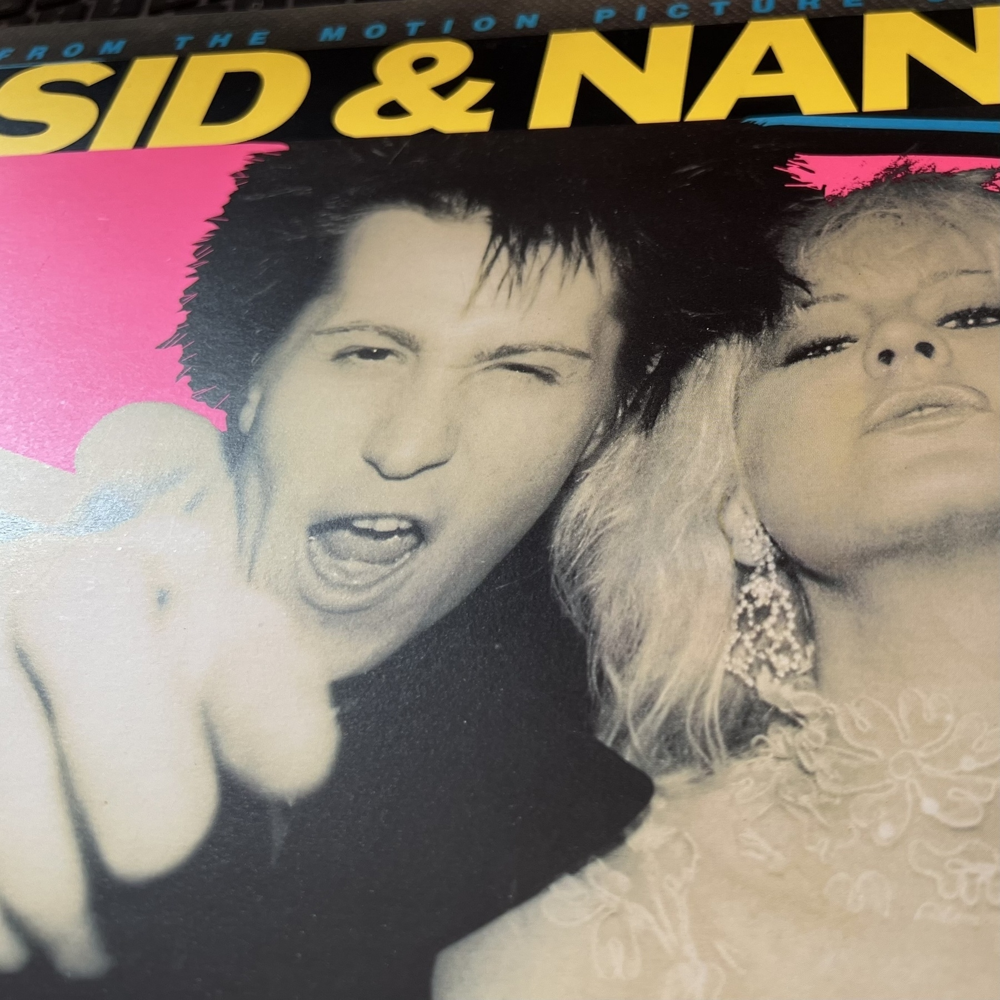
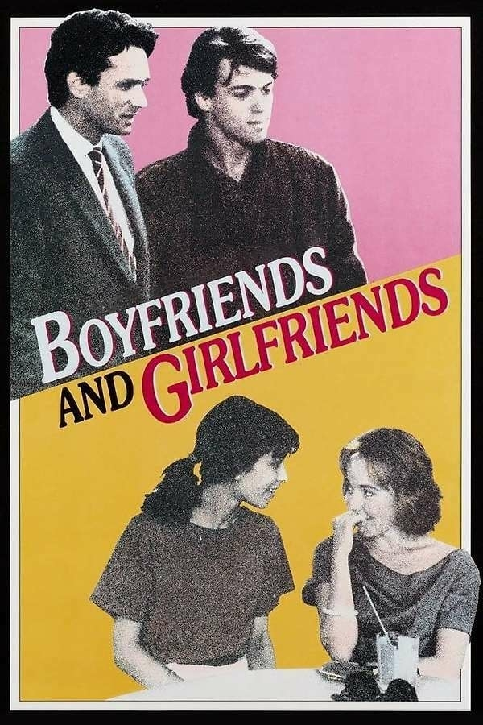

What the hell was that ridiculous picture Letterboxd sent for The Italian Job? Nothing to do with anything that happens in the film. Guy in a chair with a machine-gun and a half-naked woman with a street plan drawn on her back?
Deleted from my post, but the Letterboxd link above has it.
📗 Books 2025, 20: The Hallmarked Man, by Robert Galbraith
The mighty JK Rowling’s latest reaches us, at long last. After the bombshell ending of The Running Grave two years ago, we have the next installment in Strike and Robin’s story. (That should really be ‘Strike and Ellacott’s’, or ‘Cormoran and Robin’s’, but sometimes you’ve got to write things in the way that feels right).
The case is way complex. I’m not sure I followed all the twists, or even quite had all the characters figured out — especially actual and possible victims, even more than culprits. That’s partly because of the speed I read it at, and the late nights my reading caused.
Anyway, I’ll not say too much more because of spoilers, but I think The Ink-Black Heart is still my favourite.
The Italian Job, 1969 - ★★★½
I would have said I had rewatched this inside the last five years or so (after seeing it as a kid). But I remembered next to nothing of it, apart from the overall idea and the iconic scenes.
It's still pretty good. Oddly, it kind of makes me want to see what they did with the remake, but let's face it, the answer is probably, 'made a mess.'
180 pages in, and it’s only publication day. My local bookshop got my preorder in early and let me collect it.
Took the dustjacket off because it’s fiddly to hold.
📗 Books 2025, 19: In Ascension, by Martin MacInnes
It’s unusual to get a science-fiction novel that was also longlisted for the Booker, as this was. The question, though: is it science fiction?
It certainly has science: most notably marine biology. Also space travel to the edge of the solar system via a new, unexplained drive; something which might be a first contact event; possible time travel; and a kind of ascendence. In fact there’s a section near the end that had strong resonances of 2001: A Space Odyssey for me.
So yes, it’s SF. But it feels somehow incomplete. Not unfinished, except in the way you might say that about 2001 itself. It keeps the pages turning OK, but I’m not entirely sure exactly what it’s trying to achieve, and (therefore) whether it’s successful.
It tells two stories at once. And I do wonder whether MacInnes was similarly torn between his desire to write a mainstream, literary novel, and one diving deep into fantastika.
Leigh, the marine biologist who ends up on a space mission, had a physically abusive father, which not surprisingly affects much of her life. Though her sister appears not to have suffered similarly, and there are hints that Leigh is not entirely a reliable narrator. (But then again, who is?) The adult Leigh is torn between her career and her desire to visit her mother, who is showing signs of dementia.
As a marine biologist Leigh experimentally engineers algae which is intended to feed, oxygenate, and cheer up the small crew of a year- (or more) long voyage. But there’s a lot going in the background of the story, that Leigh and most of the other characters are not privy to. Secrets kept by companies and governments. We, the readers, are also kept outside the walls of secrecy.
So it’s very good at evoking the situation of someone who is a cog — albeit an essential one — in very complex machine, but who has no picture of the machine as a whole.
All of which leaves it convincing, but frustrating, especially if you’re looking for a nicely wrapped-up story.
Minute Cryptic - 25 August, 2025
“Forger’s initial on map - it shows treasure spot! Buried gold is fake…” (4)
🟣🟣🟣🟣🟣🟣🟣
I scored: 2 under par
I find this kind of horrifying: Denmark’s state-run postal service will no longer deliver letters. And I can see Britain’s Royal Mail going to same way.
It feels like we’d be cut off, in kind of a way. I mean I don’t know when I last sent a letter, but still.
I mean, Christmas cards!
📗 Books 2025, 18: Glory Road, by Robert A Heinlein
I had a sudden hankering to reread this old Heinlein book (even older than me, it turns out, being first published in 1963). I read it as a kid, from the library, and if I ever bought a copy it isn’t accessible now.
I searched my local library’s catalogue. No joy. But the excellent World of Books duly had an old copy or two, and one was soon here.
It is almost exactly as I remembered it, which is to say it’s a tale of derring-do, sword-and-sorcery adventure, where the sorcery is sufficiently-advanced technology. We don’t learn anything about how it works, and it doesn’t matter. It’s just a fun story, very much of its time.
The first-person male protagonist is one of those highly-capable men beloved of that era’s male American SF writers. But he is relatively lacking in self-confidence at times, which is surprisingly refreshing for the type. The female lead is mostly great, and considerably more capable than the guy, even if he doesn’t exactly realise it.
Anyway, loads of fun, and I’m glad to have read it again after all these years.
The Naked Gun, 2025 - ★★★½
Remakes can be just as much fun as the original, it turns out. I note I gave that four stars, which seems high, but you know how it is: we award these things in the moment.
Anyway this new version updates the old without losing any of its zany charm and laugh-out-loudness. Well worth a couple of hours of your time.
The Ballad of Wallis Island, 2025 - ★★★★½
I forgot to write about this when we saw it a couple of weeks back. I went in knowing nothing about it but the basic setup: rich guy invites faded, formerly popular, folk duo to his island for a private gig.
I didn't even know it was a British film. The above description gives kind of Glass Onion vibes when you tell it to people, but this is nothing like that. It's much more gentle and charming and sad yet happy.
The music's great too. Highly recommended.
📗 Books 2025, 17: Theophilus North, by Thornton Wilder
I had never heard of Wilder until a year or so ago, but I read The Bridge of San Luis Rey toward the end of last year, and now I’ve read this one. I picked it up at a secondhand book stall at our local market a few months ago — at the same time I got Blitzkrieg Bops, actually — and now here we are.
It’s 1926. The twenties are undeniably roaring, for some people at least. The titular Theophilus, or Teddie, as he prefers to be known, starts the story by leaving his job teaching in a boys' school. He goes on the road, buying a car from a friend, and at first you think it’s going to be a pre-Kerouac kind of thing. But within a few paragraphs he’s reached Newport Rhode Island, sold the car, and settled down for the summer.
Well, ‘settled down’ is not quite the right term. In fact, in modern terms, he has to hustle to make a living. Staying at the YMCA at first, he manages to get various jobs teaching kids tennis, tutoring languages, and reading to people. It was long before audiobooks, obviously.
But really, what he’s doing is sorting out relationships. Various kinds of relationships, but not that varied kinds of people. Newport is a summer home for the wealthy, the kind of people familiar from that other book about the twenties. You know, the one I’ve never managed to like. This lot have more problems, and are more interesting, than Gatsby’s crowd. And some of them are kids, too.
He is astonishingly capable, and since the story is told in the first person, it can come across as a tad self-serving, almost boastful at times. But North is so charming, so thoroughly good for people, that it’s hard to criticise.
Oh, I should add, it’s a comedy of sorts. Among a certain class of reader, myself included, mention Rhode Island and you’ll conjure up soul-sucking, squamous, cosmic horror. But there’s nothing even vaguely Lovecraftian here. The only horrors are the fear of social ostracism, and one house that is supposedly haunted. North finds a way to remove that stain from the house and ensure that servants will stay there again.
Oh well.
I enjoyed it a lot, but it’s a strange little one. It does just about dip into hints of magic realism at a couple of points, but those are mainly North (or Wilder) criticising the kind of people who prey on the vulnerable by offering healing and such.
It’s maybe not fair to compare it to The Great Gatsby, just because it’s set around the same time. Fitzgerald was writing about his own time, while Wilder was writing fifty years later, making it just on the border of a historical novel for him (though he lived through the time, so not exactly). But I couldn’t help drawing the comparison, and I enjoyed this much more.
I read Doc Searls’s piece, How about ASO, for Attention Surfeit Order?. I was sure I had used that expression, or one like it, on my blog. A quick search led me to a 2006 post about attention in various senses, which has ‘Attention surfeit disorder?’ as a subheading. The amusing part was that in that subsection, I referenced Doc Searls.
Continually making decisions is cognitively taxing. That’s why we gravitate to morality systems like religion, the Free Software Foundation, and CAMRA.
That line amused me in The Vegan Morality Policy by Terence Eden.
Obviously my last books post should have had ‘Cracked’ not ‘Carcked’ in the title. Fixed now, but visible forever in the URL.
The New York Times Connections is getting harder. Or I’m getting worse at it. That’s two Saturdays in a row I haven’t got any rows. I only do it at weekends, and not always then, but still.
What the hell is a ‘brad’? And ‘spike’? Come on. (I’d say more, but spoilers, you know.)
📗 Books 2025, 16: The Cracked Mirror, by Chris Brookmyre
I’ve read a few of Brookmyre’s over the years, and always enjoyed them, but I don’t seek him out. So when I chanced on this in Waterstones a week or two back, I had a look. The title immediately made me think of Agatha Christie, of whose books I’ve read a few recently, and my partner and I have watched all of the Poirot series, and several of the Miss Marple TV adaptations.
So when the blurb said this:
You know Penny Coyne. The little old lady who has solved multiple murders in her otherwise sleepy village, despite bumbling local police. A razor-sharp mind in a twinset and tweed.
You know Johnny Hawke. Hard-bitten LAPD homicide detective. Always in trouble with his captain, always losing partners, but always battling for the truth, whatever it takes.
Against all the odds, against the usual story, their worlds are about to collide.
there was no way I wasn’t buying it. Yes, it’s a mashup between Miss Marple and a hard-boiled detective. How? Why? These are questions you’ll have to read it to find out.
It’s good. A gripping read, a page turner. The ending maybe falls a little flat but that might just because I’d guessed (or worked out) something fairly early on. I think you’re meant to, though.
📗 Books 2025, 15: To the Lighthouse, by Virginia Woolf
Slightly oddly, I bought this in a bookshop in Canada on our recent trip. I mean, it’s not that odd. Toronto is an English-speaking city, with decent bookshops: why wouldn’t I get it there? Just that it’s not in the least Canadian, and it gave me extra weight to carry home.
But it was such a nice bookshop I wanted to support it (BMV on Queen Street West, if you’re interested), and this is a book I’ve meant to read for years.
Does anyone actually reach the titular maritime safety device/residence? That’s one of the things I wanted to know, as well as what else the story was about. Well, it’s Woolf, so as I wrote about Mrs Dalloway, it’s mainly about the inside of people’s heads.
Not in a gruesome way; not like that thing they do in House, where the camera goes up someone’s nose and into their brain (we’re watching the first season at the moment). I mean their minds, obviously.
Slightly to my surprise, it’s set in Scotland. Specifically, a Hebridean island, generally taken to be Skye, although there’s no lighthouse like the one in the story there. A family with about four (five, six?) children — ranging from young adults about to be married off, down to a boy of five or six — have a holiday home there. and spend the summer, along with various guest they’ve invited along.
Conversations happen, walks are gone on, and many thoughts are thought. Will James, the young boy, get his desired trip to the lighthouse? Only if it’s fair tomorrow, which his father assures him it won’t be.
In fact, we never learn if he goes there on that visit. Part two of the book is entitled ‘Time Passes’, and it certainly does. Ten years, in fact, including the First World War. Several characters die offstage. Woolf is content to tell us, in her inimitable style. Showing that kind of thing would not make sense here.
Then in the third section, what’s left of the family and invited guests visit the house again. Suffice it to say the weather is fine enough to make the trip, but the sixteen-year old James and his sister Cam do not want to go with their father, but are dragged along anyway.
I’m making light of it (ha ha), but it’s a work of complete genius in the way she takes us inside people’s thoughts. It is so convincing, even — perhaps especially — the teenage James. It can be difficult at times, but not in an unreadable way. Just in the complexity of the thought processes. Woolf was all about the interiority. It wil bear another reading, I’m sure. Probably several.
📗 Books 2025, 14: The Final Empire, by Brandon Sanderson
This is the first book in the Mistborn series, and I saw in a bookshop the other day that it’s now published just as Mistborn. Which is more sensible. I can’t help but imagine some potential readers were put off or confused by that ‘final’ in The Final Empire.1
My son basically made me read this. He’s a Sanderson fan and I had read none. He (my son) also told me Sanderson wanted to write a fantasy where the good guys had lost. Like what would have Middle Earth been like if Frodo and Sam had failed on their trip to Mordor? Sauron would have got the one ring back and basically been all-powerful.2
So this is basically that, with quite a different setup. The empire is ‘Final’ because it has lasted a thousand years or more and is never expected to end. Most people live as peasants, near slaves, and few noble houses are allowed to exist because the empire needs trade and internal tensions and what have you. The emperor — The Lord Ruler, as he’s known — is basically all-powerful, invulnerable. He’s said to have survived various assassination attempts up to and including a beheading. Which seems… wildly improbable, but hey, this is fantasy.
But some people — the titular Mistborn, and others — have special abilities, and there are pockets of resistance.
Sanderson writes a good enough page-turner, but I don’t know if I’ll be going on with the series. First of all there are just too damn many. But more importantly, and surprisingly, this first book is actually quite a complete story, with an ending. Sure, it’s a reasonably open ending, with hints of the kind of troubles the characters are going to face, and so on. But if there were no more books, you wouldn’t feel unsatisfied to leave it there.
And I don’t care enough about any of the characters to want to invest my time in it. Which is probably its biggest weakness. I even left it at home when we went on holiday to Canada recently. I was about 100 pages from the end and didn’t want to have to pack such a huge book that I would probably have finished on the flight over. Which is not how I’d have treated The Lord of the Rings back in the day, just to give one example.
Wimbledon without line judges: do not appprove. Makes the court look weirdly empty; drains some of the drama; and puts people out of a job. Presumably not their actual occupation, their career, but still.
Bring back the line judges!
Clue, 1985 - ★★★½
This was daft, but quite fun. A film based on a board game. Specifically on Cluedo. Which in America, strangely, seems to be called 'Clue'. Why would you not use such a great, clever name as 'Cluedo'? Unless they don't have Ludo there? But that seems impossible.
Anyway, it's probably the second-best thing I've seen Tim Curry in. Hmm, he was in Times Square, wasn't he? I remember enjoying that, but not much about it.Right now I'd have to but this ahead of it. He plays the butler, and since one couple turn up in the same car, and it's a stormy, rainy night, I was getting serious Brad & Janet vibes. I was disappointed when they had an umbrella on getting out of the car, instead of a newspaper.
Anyway, the writers had to struggle a bit to fit the conventions of the game into an actual story, but they did OK. There are shenanigans, murders, betrayals, multiple endings. All in all, not bad.
I see, the stand with multiple microphones has both a harmonica attached, and different quality mikes, like a lo-fi one to get that loudhailer effect. Even though there’s an actual loadhailer on the keyboards to one side.
Wait, Neil just has an ordinary stand with a single mike now. Was I hallucinating the great cluster of them a few minutes ago?
Well they may not be Crazy Horse, but they’re still pretty damn hot. And Neil himself is in incredible voice.
Just switched to the Glastonbury live feed. Why have Neil Young’s non-Crazy Horse band got such weird mike stands? And why has Neil himself got like fifteen mikes? Very strange.
📗 Books 2025, 13: No Great Mischief, by Alistair MacLeod
This was published in 2000, and my partner’s parents gave it to me that year or the next. I have a vague feeling I also knew about it from somewhere else. Maybe just saw it in a bookshop and thought it looked interesting. Either way, I never got round to reading it till now.
It’s the story of a Scottish family — clan, almost, and certainly they’re referred to that way in the Gaelic terms that pepper the book — that migrated to Canada some time after Bonnie Prince Charlie’s 1745 uprising. It’s simultaneously the history of that migration, and the story of a present-day descendent of the family, now a successful orthodontist in Ontario; and his older brother who is in less successful circumstances. And most of all, of how they came to be that way.
I decided, since we were taking a trip to Canada, that now might finally be the time to read it. I started it on the way to the airport, but I don’t think I read any while we were still over there.
I’ve finished it now, though, and it’s pretty good. Nice use of parallel storylines, various bits about Scottish history and modern-day (well, actually the modern parts are set in the 80s) Toronto, and so on.
MacLeod came up in conversation while we were over. Not apropos of this; I just recognised the name. He was mentioned as a poet, I think, and I believe that’s how he’s better known. Still, he’s a decent novelist too.
Yes! The Book of Dust volume 3 is out in October!
The Rose Field: The Book of Dust Volume Three a book by Philip Pullman and Christopher Wormell.
Finally!
Ah, my Letterboxd post finally made it. Just a lag in the feed handling, I suppose.
My Latest Letterboxd post hasn’t synced to Micro.blog (and hence my blog), and I can’t get iCloud photos to sync to my Mac. Or not all of them yet, at least.
Everything’s not quite working. Maybe it’s the heat. 31°C here in London at the moment.
Persuasion, 2007 - ★★★
Decent Austen adaptation. I haven’t read the book, which, I understand, many say is her best. I thought the ending fell a bit flat.
A fortnight in Canada, a long weekend camping in Somerset, and a couple of days back at work. Couple of film notes and now a Crucial Track. Off we go, then, with a Summer of Blogging.
(Or not, let’s wait and see.)
Crucial Track for 18 June 2025: How Was it for You?
"How Was It for You?" by James
Share a song that makes time feel like it's standing still.
I’m not sure this exactly fits the bill, but a chat at work today led me to play James’s Gold Mother for the first time in a while, and ‘How Was it for You?’ had me waving my arms in the air like I just didn’t care, or like I was back at the Brixton Academy in 1990 or so.
Sneakers, 1992 - ★★★½
Watched this on the return flight from Canada home. I feel like I’ve been hearing about it for years, as a not-bad early hacking/cracking type of thing.Â
Which is basically what it was, with an element of heist movie thrown in. Pretty good.
Everything Everywhere All at Once, 2022 - ★★★★½
After watching this in Paris with French subtitles, I finally managed to see it again. This time on a plane to Canada.Â
It holds up really well on a second viewing. The Air Canada seatback screens were pretty good. And this time I was able to get all the jokes and nuances in the non-English parts.Â
I love this film.
Farewell, My Lovely, 1944 - ★★★½
This appears as Murder, My Sweet, on Letterboxd, TMDB, and IMDb, but is actually Farewell, My Lovely. Apparently it was re-titled for the US market back in 1944, because there was a musical with the original name.
The original being, of course, one of Raymond Chandler's novels about the private detective Philip Marlowe. This is a really good adaptation, with what sounds like most of Chandler's dialogue (I mean, why would you change it?).
It's proper, classic noir. But/and there's a scene where Marlowe is captured by the bad guys, drugged, and interrogated, that feels more like the mind-control paranoia of sixties films like The Ipcress File. The visual ideas for suggesting that kind of thing go back a long way, obviously.
📗 Books 2025, 12: The Age of Wire and String, by Ben Marcus
This is a strange wee beastie. The edition I have was published in 1998, and I must have bought it then or not long after. I vaguely remember reading a bit of it and finding it amazing, really powerful. And I obviously started it, because I had a bookmark in it, a few pages in.
But every time I’ve had a look at it since, it hasn’t really grabbed me. Until recently, when I started it again.
And… I’ve no idea what I saw in it back then. It’s a work of surrealism, but it’s just wilfully obscure. Every sentence is grammatically and syntactically sound, but semantically meaningless. It purports to be a catalogue or almanac of a society, with sections titled ‘Sleep’, ‘God’, ‘Food’, and so on. And within them chapters, or short stories, called ‘Sky Destroys Dog’,‘Ethics of Listening When Visiting Areas That Contain Him’, ‘Hidden Ball Inside a Song’.
It can be strangely compelling in places, almost reaching the level of poetry. But mostly it’s a bit of a chore to get through. If I hadn’t had it and kept it so long I probably wouldn’t have bothered.
A very curious work.
📗 Books 2025, 11: Blitzkreig Bops, by Alli Patton
I picked this up at a stall at the local market a few weeks ago. It’s a slim volume, taking its title from the Ramones' song ‘Blitzkrieg Bop’, and subtitled, ‘A Brief History of Punks at War’. Alli Patton is a music journalist from the southern US and this slim book takes a look at how punk, from the 70s through to the 20210s, has been used to resist war, and call for peace and justice.
She starts with Stiff Little Fingers and the Troubles in Northern Ireland, and moves on through apartheid South Africa to Chile during Pinochet’s regime and punk bands in East Germany during the Cold War.
And then beyond that, decade by decade. There are always wars and oppression, and it seems there are always punk bands resisting and calling for peace.
Worth a read, and she includes a YouTube playlist of some of the artists she covers.
What is this archaic nonsense? Seems the only way we can vote for Eurovision in the UK is by making a phone call! What century is this?
Well, I’m not doing it. Iceland will have to do without my vote.
Waiting for Yellow Ribbons
Searching for the Man
The state of internet search these days is such that it can be hard to find things that — while you don’t know they’re there — you know must be there.
It’s as if the search engines give up after a bit and just show more links to the same videos. Or lyrics sites, in this case. I found myself at the Wikipedia page for answer songs, and idly scrolled through it. Mainly I wondered what they’d say about ‘Here Comes Your Man’, by the Pixies. If you’ve swum in the same pools of the indie/punk/post-punk floodwaters as me, you’ll have long realised that Black Francis must have written that song, in part at least, as an answer to The Velvet Underground’s ‘I’m Waiting for the Man’. (Note the formulation of the title from the first album; many people and versions characterise it as ‘Waiting for My Man’, since that’s what the lyrics say.)
There was no reference to the song on the page. Slightly odd, I thought. I looked at the song’s own page. No reference there to the Velvets or Lou Reed.
If you doubt the connection, just listen to the two songs. There’s the riff on the Pixies song, plus all the references to ‘waiting’ in it, as well as the obviousness of the title. Sure, it’s not only that, or even, really, about ‘I’m Waiting for the Man’ in any sense. But it’s unthinkable that the one didn’t inspire the other. Let’s not forget Black Francis wrote, in another song, ‘I wanna be a singer like Lou Reed/I like Lou Reed.’
Others must have written about this, I thought, and started googling around. Well, I use DuckDuckGo, but you know. And I even tried switching to Google. Nothing came up, except for the odd little Reddit post saying, ‘Hey, this song’s a bit like that song.’ Yet you’ve got to imagine — it’s hard not to imagine – people will have written about it. Music journalists, bloggers… hell, I’m surprised I haven’t mentioned it before now.
But nothing turned up. I’m sure those pages are out there, lost for now in the deep pools of the web. But the search engines just don’t want to go there anymore.
Tying Ribbons
I was looking into answer songs because I’d been reading the page on ‘Tie a Yellow Ribbon Round the Ole Oak Tree’, and it mentioned there being an answer song.
I was looking at that page because we were talking about the origin of people tying yellow ribbons when they’re waiting for someone to come home. I thought it might have originated with the song. It was certainly the first time most of us here in the UK heard the expression. When Americans festooned buildings with yellow ribbons during the Iran hostage crisis, it seemed like a reference to the song.
But the page suggested the origin is much older, possibly going back to the US civil war. So much for that.
We were talking about yellow ribbons because people are displaying them again: waiting for the remaining hostages in Gaza to be freed.
Israel’s government is doubtless guilty of war crimes, probably crimes against humanity. And October the 7th was a crime against humanity. I’m all for freeing Palestine, but free the hostages too, and if you can get rid of Hamas too while you’re doing it, so much the better.
Free Palestine from Hamas.
Paddington in Peru, 2024 - ★★½
Has its moments, but let's face it. Paddington is inherently funny because he's a bear in London, out of what should be his native habitat. When you put him back into what should be his native habitat, it just loses something.
London Town, 2016 - ★★½

I'm not, honestly, sure this deserves even the two-and-a-half stars I'm giving it. It's a daft story, but it gets extra marks from me for its Clash connection.
It's 1978. A 14-year-old boy lives in Wanstead with his dad and six-year-old sister. Their mum has left and is living in London's squatting scene, trying to make it as a singer. She sends the boy a tape of the first Clash album. It somehow later becomes the record and has '(White Man) in Hammersmith Palais' on it, which it the first album didn't. (The US version might have, but that's not what he's got.)
That's far from the most absurd thing. After the dad gets injured by a piano (which isn't absurd, as he runs a music shop and was delivering it) the boy tries to keep things together for his sister.
In so doing he — and here is the real absurdity — learns to drive and starts driving his dad's black cab, taking fares and avoiding the cops.
Yeah, I know. He picks up Joe Strummer one night. Obviously.
Honestly, it's daft as a brush. I quite liked it, but mainly for the music.
Crucial Track for 11 May 2025: Walk on the Wild Side
"Walk on the Wild Side" by Lou Reed
I don't know whether I can honestly say this the song 'feels like home' to me, but I do recall once, long ago, arriving in Edinburgh from London, and walking up the Bridges with Transformer playing, and thinking it felt like coming home.
'Walk on the Wild Side' is the second track from Transformer to feature on Crucial Tracks, I note, but that's not surprising. I'd consider it a 'crucial album'.
📗 Books 2025, 10: The White Album, by Joan Didion
I read one of the pieces from this, ‘At the Dam’, on my MA course. It didn’t make a huge impact on me at the time, but enough to keep Didion’s name in my mind, and eventually to stir up enough interest for me to get this.
It’s a set of personal essays covering various events around the end of the sixties and the early seventies. It struck me, reading this, she’s kind of a gonzo journalist, or at least gonzo-adjacent, in that the often puts herself in the narrative. Which is good and proper in my humble opinion. Not as intense as HST, but still.
There’s a lot of good, interesting stuff here, including one piece that involves her hanging out with The Doors, waiting for Jim Morrison to arrive. It’s not much about music, though, and I don’t know why she chose to call it The White Album.
One minor annoyance about at least this edition is, although the front matter credits the various publications the pieces originally appeared in (Life, The New York Review of Books, etc), it doesn’t tell us which piece appeared where.
But that doesn’t detract from the pieces themselves.
Crucial Track for 02 May 2025: Sit Down
"Sit Down" by James
Which song would you use to introduce yourself to someone new?
Not sure this is a thing I've ever done in the musical kind of sense, but I guess somebody might say, 'Tell me a song you love,' or something. I could answer with 'Sit Down' by James, for sure.
I saw them live a ton of times in the late eighties/early nineties. They're probably the band I've seen most, along with The Pogues and The Fall. Including on my 25th birthday, headlining the Reading Festival. Actually The Pogues were on that day, too. Or so my memory says, even if the Reading histories don't.
An interesting thing about 'Sit Down' is that they released it as a single and it didn't do much. I saw the video a load of times on the old ITV Chart Show on Saturday mornings back when I lived in Walthamstow.
But like a year or so later they didn't just rerelease it; they rerecorded it, with reordered verses, and a more upbeat performance. Here's the original video on YouTube.
The new version, of course, became a huge hit.
Kind of hard to believe, now, the one on the left would go on to lead Britain’s worst (or maybe best) spies. Still with fag in hand, mind you. I wonder if Gary Oldman smokes.
Crucial Track for 1 May 2025: Mario Y Maria
“Mario Y Maria” by Butch Hancock
It’s annoying that the song I want to use for the prompt, ‘Share a song that tells a great story,’ isn’t found on Apple Music. It’s sitting right there in my music library being fantastic, ever since I ripped it from a Cover CD from Uncut magazine, back in 2002.
It tells the tale of a pair of lovers that we might describe, in the clichéd form, as ‘star-crossed’. But it’s not a tale of young lovers. Rather, the titular pair are experienced, world-weary (certainly by the end), but they keep on keeping on.
I don’t know if creating this entry will even work with the song not found, but if it doesn’t, I’ll create the post manually. (It didn’t; I did.)
Masked and Anonymous, 2003 - ★★★½
I'd give it five stars for the soundtrack: all Dylan songs. The story is also all Dylan. And the lead actor: Dylan too.
Yes, in 2003, Bob Dylan wrote and starred in this film. In a country in state of constant revolution and war, with the dictator-president dying, a singer is released from prison to play a benefit concert. It's not clear why, but 'The Network' wants to broadcast it.
And Uncle Sweetheart, played by John Goodman, is hoping to get rich from it. It can't end well, and Jeff Bridges, as a journalist who talks a lot more than he writes, listens, or observes, is supposed to be uncovering the corruption.
It can't end well, and frankly it's a bit incoherent. Enjoyable enough though, and certainly interesting to the Dylan fan.
Incredible Story About the Smallpox Vaccine
Astonishing story in The Atlantic, about the smallpox vaccine:
At the heart of history’s most successful eradication campaign is a mystery. The smallpox vaccine—now also being deployed against monkeypox—contains a live virus that confers immunity against multiple poxviruses. But it is not smallpox or a weakened version thereof. Nor is it monkeypox. Nor is it cowpox, as suggested by the vaccine’s famous origin story involving pus taken from an infected milkmaid to immunize an 8-year-old boy.
The vaccine predates systematic, controlled manufacture, so several or many versions were made from various sources. And they were transferred by sending infected children around the world! I do seem to recall hearing that last part before, but not the fact that its true origin is shrouded in mystery.
Well worth a read. Via Kottke
I still don’t understand why AI gives me such a visceral negative reaction.
The intellectual reasons for concern are well known.
But right now, I just wish apps would stop adding AI and trying to tell me it’s great. I’m looking at you Raycast, but you’re just the most recent culprit.
Crucial Track for 30 April 2025: Death or Glory
"Death or Glory" by The Clash
I don't know if this song always makes me feel better, exactly, but I love it to bits and want it played at my funeral. So there's that.
Crucial Track for 29 April 2025: Hungry Heart
"Hungry Heart" by Bruce Springsteen
As far as representing my current mood goes, I'm actually just hungry. But Springsteen's 'Hungry Heart' is always a good choice. The story goes he wrote it for The Ramones, or at least was going to offer it to them. But he decided to keep it, and of course put it on The River.
That album — and most of his gigs since — wouldn't have been the same without it. But I'd still love to have heard The Ramones do it.
Crucial Track for 28 April 2025: The Prince
"The Prince" by Madness
Madness: At the heart of the ska revival of the eighties. I’d have gone to see them in Glasgow, on the Two-Tone tour, with The Specials and The Selecter, if it hadn’t been at an over-18s-only venue. I was 16.
Crucial Track for 27 April 2025: Ticket to Ride
"Ticket to Ride" by The Beatles
It’s interesting that, although I could give you various answers to the ’first single’ question, I don’t actually know what the first album I bought was.
Still, it’s bound to have been a Beatles one. So let’s go with the Red Album, and ‘Ticket to Ride’.
Wordle 1,407 2/6*
🟨🟨🟩🟨⬛
🟩🟩🟩🟩🟩
I must say, I’d’ve been very disappointed if I hadn’t got this one, but I haven’t often got it in two.
Crucial Track for 26 April 2025: I'm So Free
"I'm So Free" by Lou Reed
Lou Reed is one of my all-time faves, both with the Velvets and solo. This one popped into my mind this morning as we were walking back from badminton (playing the game, not the place where they have horsey things). It’s from the mighty Transformer album.
Crucial Track for 25 April 2025: Baby, I Love You
"Baby, I Love You" by Ramones
First love, eh? 'Music was my first love,' as an old song has it, 'And it'll be my last.' But that's not what this is about, really, is it?
Let's go with The Ramones (they were going to turn up some time, in one or another form, of course), where they made it on to Top of the Pops. Maybe because Phil Spector was at the controls, though we'd have to hope not.
I’ll allow I might have been overstating the case in last night’s slightly excited post about Doctor Who. After all, Russell’s current ‘incarnation’ includes ‘73 Yards’.
Still, ‘Lux’ was tons of fun.
Crucial Track for 24 April 2025: Leonard Cohen
"Leonard Cohen" by boygenius
'What is your favorite song from last year?' I am asked by the daily prompt from Crucial Tracks.
'Favourite,' I say. The 'favorite' spelling reads like a made-up element from thirties SF, or some such.
But I'm avoiding the question. The thing is, what this tells me is, I don't listen to much new music these days. Or, when I do, it doesn't impinge, doesn't resonate with me, become something I go back to.
I spent a chunk of 2024 listening through a list from The Guardian, of the 50 best albums of 2023, in order to check out what was good and recent. I had already heard the PJ Harvey, the Gina Birch, and the Boygenius albums, all of which I liked.
None of the others made enough of an impact to count, sadly. That is, none of them got a second play. One, I think, I gave a decent chance, but couldn't even finish.
And anyway, they were all new works from the year before last, not last year.
So for the purposes of this prompt, I'm allowing 'new to me' to count. And while I love PJ Harvey, so you might expect one of hers to make the cut, I Inside the Old Year Dying is too much an album. It's its own unique thing, but I don't recall a specific standout track from it.
So I'm going with Boygenius and, in another acknowledgment of my lack of new-music-attention, their one that namechecks an old singer — one of my favourites.
I just watched the latest Doctor Who episode, ‘Lux’. It was gloriously meta. Who needs fourth walls? And with a love note to the fandom in the middle.
The best episode RTD has done, certainly in this incarnation. IMHO, obviously.
Crucial Track for 23 April 2025: Paradise by the Dashboard Light
"Paradise By the Dashboard Light" by Meat Loaf & Ellen Foley
I did not sing along to anything today, as the daily prompt asks. But I did find myself singing this Meat Loaf ditty, at least in my head. Maybe aloud, who knows?
Interesting that it appears as by Meat Loaf & Ellen Foley. Entirely appropriate, as it's a duet. But I don't think it was originally billed that way, and the modern approach would be to include 'Feat Ellen Foley' right in the title text. As I wrote about several years ago in Little, Feat...
One to One: John & Yoko, 2024 - ★★★★★
Oh my god, this film. This film is so, so good. Fantastic footage and sound from a gig that I've never even heard of before (though I think I've seen some of the footage). Great extracts from TV news broadcasts of the time, all sorts of great stuff.
Turns out there was an asylum/hospital/children's home kinda place where hundreds of kids with learning disabilities and other problems were kept in horrific conditions. Seeing the footage of it, I was reminded of the Romanian orphans that led JK Rowling to set up her Lumos charity.
John & Yoko learned about the place back in the day and set up the titular One to One benefit concert, raising money to help to provide better lives for those kids.
The strangest thing is that I've never heard about this concert before.
I will be watching this film again, you can be sure.
Crucial Track for 22 April 2025: No More Heroes
"No More Heroes (1996 Remastered Version)" by The Stranglers
Today's prompt is 'Share a song that changed your perspective on music.'
I'm gonna have to go back to 1977 for this one. That year may not surprise you, being as it was the core of the original punk days.
I was 13, as of August. 'No More Heroes' came out in September, Wikipedia tells me. I can't tell you when I first heard it, but I do know it was on a Sunday afternoon, after a week in which my friend Brendan had strongly urged me to get into punk.
It came on the radio, and it was the first punk song I heard.
The Stranglers were less punky than the Pistols, Clash, Damned, etc, of course, being older and to some extent, bandwagon jumpers. But who gave a fuck about that when they made a song as good as this?
Operation Mincemeat, 2021 - ★★½
This has a slightly interesting connection to home for me. Just last week we were walking past St John of Hackney churchyard, a common route from the Narrow Way home, when we stopped to look at a plaque outside the Hackney Mortuary. It describes the top-secret military operation the film is named after. The dead body that was used to deceive the Nazis was stored at the mortuary for three months. You can see a picture of the plaque at the Wikipedia page for the mission.
So why not watch the film? It's an interesting story, it's got an impressive cast, and it's on Netflix.
Good thing about that last, because we'd have been mildly annoyed if we'd had to pay extra for it. Trouble is, it's not very good.
It's not terrible. Two-and-a-half stars from me means it's OK, but just barely. On another day I might have given it three. The problem might be with us: knowing the story in advance could remove all tension, except from the romance subplot. But no, I think that was OK. I think it's more that sometimes the various parts of a film — which is a complex thing to create, after all — don't come together well enough, for reasons that are hard to define.
Crucial Track for 20 April, 2025: Ob-La-Di, Ob-La-Da
"Ob-La-Di, Ob-La-Da" by The Beatles
My earliest musical memory might be this. I was well under five, maybe only three. My gran — my mum’s mum — was staying with us because she wasn’t well. I walked into her room with my big sister, singing.
Says gran, ‘Is he swearing?’ My sister had to explain that I wasn’t saying, ‘Oh bloody’ something.
Crucial Track for 19 April, 2025: London Calling
"London Calling" by The Clash
It seems wildly unlikely that I — or indeed, anyone — could have a single ‘favourite song’ throughout high school. Not least since ’high school’ itself is not a commonly-used term here in the UK. Though my secondary school did actually have ‘High School’ in its name.
Secondary school lasts six or seven years, though (true, back then, some got out after four, but even so). Who’s going to keep the same fave for that long, especially during such formative years?
At the start, if I had a single fave, it would have certainly been by The Beatles. By the end it would have been The Clash or Stiff Little Fingers.
So let's go with 'London Calling', a Clash song that mentions The Beatles, albeit negatively: 'phony Beatlemania has bitten the dust.'
Crucial Track for 18 April, 2025: Another Girl Another Planet
"Another Girl Another Planet" by The Only Ones
What is a song that instantly energizes you?
I feel I should answer that with something relating to Star Trek, but that’s the wrong kind of ‘energize’ (or ‘energise’, as I would spell it).
Although ‘Another Girl, Another Planet’ does sound like it could be about Captain Kirk.
I’ve heard it described as Peter Perret’s love song to heroin, but also seen a more recent interview where he said it wasn’t about that.
Anyway, if you want to get me on the dancefloor, this one’s chugging intro is always a good bet.
‘Space travel’s in my blood,’ after all.
Crucial Track for 17 April, 2025: If I Can't Change Your Mind
"If I Can't Change Your Mind" by Sugar
The prompt was 'What song do you wish you had written?' So many, of course, especially since I used to play guitar very badly and sing in bands, and I have written a few songs.
But for some reason, the one that popped into my mind was 'If I Can't Change Your Mind' by Sugar. Bob Mould's work after Hüsker Dü was varied, but this track off Sugar's first album is just glorious.
I'm Still Here, 2024 - ★★★★
Outstanding drama based on the true story of a Brazilian family's experiences under the dictatorship in the 70s and beyond. Eunice Paiva's husband, Rubens, is taken in by the military. She, too is detained for several days and questioned, though released. One of her four daughters is also taken, but released after a night.
But Rubens is never seen again, his body, like that of many of his countryfolk, never found.
Sad, yet life-affirming, as it's about the resilience of the family, and Eunice's strength as a mother. She went on to become a human-rights lawyer.
Recommended.
📗 Books 2025, 9: The Interpreter, by Brian Aldiss
I have loads of old SF books that I’ve picked up in various second-hand shops over the years, some of which I’ve read. This year I seem to be working through a few.
I couldn’t honestly tell you whether I’ve ever actually read anything by Aldiss before. I mean, I feel like I must have, if only out of the Balloch library, many, many years ago. But offhand, I couldn’t name any.
And if this were a prime example, I don’t think I’d bother with more, sadly. It’s not a bad idea. The titular interpreter is a human on a far-future Earth that is occupied by a tripedal alien race. Their empire has developed by trade and trickery as much as by military conquest, and it seems that’s how Earth was taken.
It’s a far-flung outpost, one of four million systems in the empire, so there’s bound to be corruption. An emissary is sent from the imperial centre to investigate reports of the Earth administrator abusing its people, which he/she/it (they’re a sexually trimorphic species) is. Our far-from-heroic interpreter might just have a chance to get the truth out.
As I say, not a bad idea, just not that well told. There’s nothing inherently wrong with the writing, except for the dialogue being stilted. Oddly, it’s fine between the interpreter and the aliens — maybe the fact that we know he’s translating lessens the effect. But between the humans, it’s just clunky.
And the plot is just about believable. Just. Luckily it’s only 126 pages; and I did sit up to finish it last night, so I guess it’s got something.
📗 Books 2025, 8: The History of Rock ‘n‘ Roll in Ten Songs, by Greil Marcus
I got this as a Christmas present some several years ago, and read bits of it. It’s episodic, though — a separate essay on each of the songs, plus an ‘Instrumental Break — so I dipped in and out of it. I was encouraged to pick it up again recently because of the name-similarity with a great podcast I’m listening to and keep meaning to write about here: A History of Rock Music in 500 Songs, by Andrew Hickey.
Marcus’s title is overconfident to the point of arrogance by calling the book the history. As if there was and could be only one. To say nothing of the idea that it could be encapsulated in ten songs. Hickey’s is more aware, and he makes the point repeatedly that his is only a history.
But Marcus is a terrific writer, and, like Hickey’s, the title is not literal: when discussing any one song he’ll touch on several others, plus various events in the lives of the artists and the goings-on in the world.
I can’t honestly say that I learned much from this, or retained much of what I may have learned, but it’s a joy to read. The pleasure is in the journey more than the destination.
Soundtrack to a Coup d'Etat, 2024 - ★★★★½
Absolutely loved this jazz-fueled documentary about the events running up to the assassination of Patrice Lumumba, first and short-lived prime minister of the Democratic Republic of the Congo in 1972.
It's a bleak, dark story, but so well told, and with such a great soundtrack, that you rarely feel anything other than pulled along by the narrative.
Which itself is kind of a piece of jazz in the way it's structured. The style has some similarities to Adam Curtis's work in its use of archival footage and the way it lets text, sound, and images overlap and interact. Though Curtis uses a voiceover narrative (or at least did in the one I've seen, while Johan Grimonprez here, does not, simply letting everything speak for itself.
I should note it’s Petroc Trelawny’s last day on the BBC Radio 3 Breakfast show today. I’ll miss his dulcet tones, and especially his weird pronunciation of ‘Bach’.
The Ipcress File, 1965 - ★★★★
Great, stylish sixties spy story, with Michael Caine. He's a man who cooks! and makes coffee in — get this — a cafetière (french press to our American friends). Très Moderne!
More to the point, British scientists have been giving up their roles and/or disappearing mysteriously. The word 'defecting' is never used, The USSR is not mentioned explicitly. But this 'brain drain' is harming Britain's defensive capabilities. Harry Palmer joins a team that is investigating the disappearance of latest scientist.
The plot isn't all that good, to be honest, it's a bit bumpy in places, not as coherent as I'd like. But the overall style of the thing, the way it plays to fears of mind control and brainwashing, and the general verve with which it's done, get it a high mark from me.
Radio saying SpaceX’s latest launch will be the first to orbit over the north and south poles. That’s wrong, of course: there have been plenty of circumpolar satellites. I wonder if it’s the first human-occupied one to enter that orbit; or just the first commercial one to do so.
The Philadelphia Story, 1940 - ★★★★
Really fun romcom from 1940. It cleverly keeps you guessing about who's going to get together with whom till very nearly the end.
I tried the ‘Hey Siri, what month is it?’ question, since people have being saying it can’t answer that.
It gave me to today’s date. Which seems fine. It’s more than I asked for, and includes the information I wanted, so…
When did the 20th of March become the first day of spring? I saw lots of mentions of it yesterday, and they’re even saying it on Radio 3 this morning.
📗 Books 2025, 7: The Productions of Time, by John Brunner
I remember seeing Brunner at a convention 30 years ago, or more, talking about ‘the death of the midlist’: how writers who sold their work steadily to publishers, and to readers, used to be able to make a living from doing so, but no longer could. I wonder what he’d make of the publishing scene today.
Anyway, this slim book from 1966 hides its science-fictional nature till almost the very end. Unless you’ve read the blurb. Or indeed, this post, or the wikipedia entry about it. A theatre actor, a recovering alcoholic not long out of a sanatorium, gets the chance to work with a hip writer and director.
They’re going to get a troupe together, coop them up in a house in the country, and work collaboratively to construct a play.
Or at least, that’s what they want the cast members to think.
It’s not bad, if a little inconsequential.
Currently reading: Reading Like a Writer by Francine Prose 📚
And on page 40, this quote:
Finally—and there is no way to convey this unless you read the sentence aloud or at least, as your first grade teacher cautioned you not to do, say it silently, word by word, in your mind
What are they teaching kids in American first grade? What does she mean, you were taught not to say it word by word in your mind? How do you read without doing that? Or at least learn to read?
📗 Books 2025, 6: The Pale Horse, by Agatha Christie
An Agatha Christie book from 1961, and set round about then, too. We start in Chelsea espresso bar, where the main narrator, Mark Easterbrook, observes a fight between two beatnik/proto-hippie rich girls, and the first clue is sneaked in.
Easterbrook is no famous detective, though, either professional or amateur. He’s a historian who is trying to finish writing a book. But things happen, and soon the action moves to the English countryside where its author is most comfortable.1
He meets Ginger Corrigan, who the blurb describes as ‘his sidekick’, which suggests to me an ongoing series and many adventures. And maybe that’s what Christie had planned, who knows. But this is standalone.
Anyway, the titular Pale Horse is a former pub where three women live, and perhaps cast spells. Certainly they give seances and such. But are they using magic to murder people remotely? Well that’s what our heroes have to find out, of course.
I really enjoyed it.
-
Though to be fair, Poirot was set in London, and moved all over the world. But we’re watching the Miss Marple series at the moment, and she doesn’t travel far. ↩︎
This isn’t a story so much as a floating mass of jellyfish tendrils with which the viewer intermittently comes into contact. And the show’s premise is a joke that neither a Hollywood millionaire or a Silicon Valley behemoth have any right to make. It’s a long, long exercise in seeing how long your customers will tolerate being laughed at.
I don’t agree with the early part of this New Statesman article, but there are some good points in it, not unrelated to my post the other day.
The Severed Floor is not the Black Lodge
I’m finding season 2 of Severance quite annoying. The pacing is glacial. Every episode, I wait for something to happen, and they pile up more mysteries. Very slowly.
Take episode 7, for example, where they filled in Mark & Gemma’s backstory. All very nice, but completely unnecessary. We already knew they’d been a loving couple. We knew she was dead, and that she’s not actually dead. They didn’t need to spell out every little detail. What’s going on with her now is intriguing, but I no longer even care much about what is going on, just why? And when are they going to burn that fucking Lumon cult to the ground?
There’s this idea with modern ‘prestige TV’, that telling a story (or adapting a book) as an eight- or ten-episode series is better than trying to squash the same story into a two-hour film. And there’s a lot to be said for that. Give the story room to breathe.
Severance spends too much time listening to its own breathing.
I wouldn’t mind all this so much if I knew how much more of it there was to go, and that there was a fully-planned story, and that it would actually get made. I’ve not forgotten the deep disappointment of Netflix’s completely random cancelling of The OA. And there we know Brit Marling had the whole thing planned out across five seasons.
Also the reason for my title: it’s trying too hard to be Twin Peaks, and failing. You’re not David Lynch. No one is any more. Stop it, and just tell the story. A bit quicker.
I wish people wouldn’t post links to videos without warnings. You tap or click through to read something, and suddenly a video blares out. Most annoying.
Maybe You Can Post Your Way Through Fascism
There was a post about how ‘You can’t post your way out of fascism’ that did the rounds a few weeks ago. I have a feeling it might have done some harm.
I didn’t read it in detail. Saw the headline, skimmed it, got the gist. Resistance to Trump/Muskism and the other right-wing authoritarian risings around the world: it needs more than tweets, toots, blog posts.
Fair enough.
But not everyone can do more, or give more. And even those who can, or could or should: for some of us, writing is not just what we do, it’s what we are. We need to write. And I know I’ve felt some discouragement a few times lately, when I might have written about Trump, or Musk’s nazi salute, or the general horror of things. I’ve thought, ‘Yeah, but “You can’t post your way…"’
I wouldn’t go so far as to say my memory, my knowledge of the existence of that post has stopped me posting. Other things, or a combination of things, have done that. But it’s in there, like a spectre at the writing table, saying, ‘No, this isn’t enough, so you shouldn’t do it.’
That is almost certainly not what the writer intended. But I think it’s unhelpful at best, and may be harmful to some people at worst.
Posting won’t be enough to get us out of fascism, but it might help some people to get through it.
So please, everyone, don’t be discouraged; and don’t stop posting.
📗 Books 2025, 5: Annihilation, by Jeff VanderMeer
As The Dispossessed starts with a wall, Annihilation starts with a tower. And as LeGuin’s wall round a spaceport both closes the planet off from the rest of the universe, and encloses the universe, depending on how you look at it; so VanderMeer’s tower has its topological oddity. It starts at ground level and goes down, into the ground underneath it, rather than rising into the air.
Or so the Biologist sees it, But this is Area X, and things are rarely as they seem.
The Biologist is the first person narrator. Accompanied by three other women — the Psychologist, the Anthropologist, and the Surveyor — they are the latest in a series of groups sent in to investigate the mysterious zone.
Almost everything is unexplained in this book. It is incredibly compelling, gripping, even, but everything remains unexplained, the ending is open. Yet while there are three more books in the series, I feel it’s such a perfect little nugget, beautifully crafted, that to read on would almost spoil it.
I suspect that’s not true, though. We are in safe hands with VanderMeer, so I expect the continuation will be sound. I remember my friend Simon having a similar response when he read Hyperion. Its perfectly-crafted open ending seemed to him like it didn’t need a sequel. But of course The Fall of Hyperion was magnificent, and so were the two Endymion followups.
Anyway, this is great, but you probably already knew that, what with winning awards and being ten years old.
I got lucky(?) in a prize draw at work, so tonight I’m going to the Brit Awards finals. Taking my daughter. I suspect she’ll get more out of it than me.
It was 30 years ago today, PJ Harvey tells us, that To Bring You My Love was released. Sounds as good as ever.
Looks like Amazon’s deal with Iain Banks’s estate to make a series out of Consider Phlebas is back on.
Pity it’s Amazon, but at least Adele is involved as an executive producer.
I remember Banksie saying all he wanted to see was the fight under the hovercraft, so let’s hope they leave that in.
📗Books 2025, 4: Northanger Abbey, by Jane Austen
We started watching Miss Austen, the BBC serial about Jane’s sister Cassandra trying to get hold of Jane’s letters a few years after her death. That made me want to read some more Austen, the only I’ve read before being Pride and Prejudice.
So I tried Northanger Abbey. Which is mainly a spoof of the gothic novels that Austen herself would have been reading at the time, and also, of course, a romance.
I enjoyed it a lot, but it ended very surprisingly. It has the omniscient narrator you might expect for a book of its time, but it’s mostly written in close third-person. We are privy to Catherine’s thoughts and fears. But the thing is, when we get to the climactic scene, when everything is going to be resolved and our heroine end up happy (it’s not much of a spoiler), Austen (or the narrator) turns away.
Instead of being with Catherine as the hero rides to her emotional rescue, we are told about it. We’re kept at a distance, no longer aware of what’s going on in her head. It’s an absolute masterclass in the difference between ‘showing’ and ‘telling’ in writerly terms; but the wrong way round for a really satisfying experience.
Perhaps it was a continuation of the style of those gothic romances she was parodying, but read today, it’s a strange choice.
Sweet Smell of Success, 1957 - ★★
This film is at number 95 on this Time Out list of the hundred best films of all time that we've been dipping into.
Why?
It's really quite a bad film. Characters of no merit, dialogue that sometimes reaches snappy but often sits in the leaden cliché realm, and just general horribleness.
It's good for the scenes of New York, the crowd scenes in bars and restaurants, and yes, it has its moments. But overall, no, didn't do it for me.
It's not like amoral characters make the film amoral, but you need to have someone to root for. That should be the gossip columnists's sister and jazz guitarist who were a couple. Sadly they're just too feeble (and too sidelined) as characters.
📗 Books 2025, 3: The Great When, by Alan Moore
I think I read somewhere that this ends on a huge cliffhanger. It doesn’t. Or I wouldn’t describe it in those terms.
It has an epilogue, entitled ‘The Old Man at the End’, set 50 years or so after the main story. Someone we take to be the protagonist fears for his life; and the close-third-person narration hints at or mentions some events that intrigue. But we’re not left hanging.
The book is described as ‘a Long London novel’. though, so we certainly expect additions to the series in time.
The term ‘Long London’ is not used in the book, I think, though our normal, everyday London is called ‘Short London’ at one point. ‘The Great When’ is used, and is one of the terms for another London that exists parallel to ours in some sense. Certain people, with certain kinds of imagination (or damage), can find and use some few portals between the two realms.
You know the sort of thing. Parallel worlds, unseen realities, aren’t exactly new. But Moore is such a good writer, this is a high, fine example of the form, even if there have been others like it before. The richness of his description and believability of his characters make this a five-star affair, if I gave stars to books.
And books are key here. It all kicks of in 1949, when Dennis Knuckleyard, 18 years old, orphaned in the war, and working in a second-hand book shop, comes into the possession of a book that doesn’t exist.
It is imaginary, being named in an Arthur Machen tale. Which means he has to get it back to the other London before very bad things start happening.
Highly recommended, and I eagerly anticipate the next volume, despite not being cliffhung by this one.
Fascinating piece about how George Eliot seemingly wrote about AI. I disagree with this assertion, though:
Put simply: intelligence is not the same as consciousness.
…
But, for the avoidance of doubt, they are not the same thing. My own (simplified) view is that intelligence is the ability to achieve goals and consciousness is the phenomenon through which we experience qualia …
To my mind and understanding of the terms, there’s no intelligence without consciousness.
Having the first Creme Egg of the year with my coffee. Actually probably the first I’ve had in several years.
Blogging and reading in 2024
A much-delayed summary of last year.
I read 26 books in 2024. One less than in 2023, but one every two weeks on average.
But only 98 posts, which is down on the year before. Here’s the monthly breakdown:
| Month | Posts |
|---|---|
| Jan | 13 |
| Feb | 10 |
| Mar | 6 |
| Apr | 6 |
| May | 8 |
| Jun | 5 |
| Jul | 6 |
| Aug | 7 |
| Sep | 10 |
| Oct | 12 |
| Nov | 9 |
| Dec | 6 |
Light blogging year, then, but I’ve written quite a lot of fiction, so there’s that. To say nothing of things like the currently-1500-word essay on my thoughts and feelings about AI, wherein I try to understand those things. That might appear here one day. I hope so.
📗 Books 2025, 2: Vivaldi and the Number 3, by Ron Butlin
I read about this some four years ago on Jack Deighton’s blog. It sounded interesting enough that I tried to order it via Pages of Hackney. But they told me it was out of print.
I couldn’t even find it on Amazon; no Kindle version. So I left it.
Until just recently, when I had cause to by some second-hand books from World of Books. Something made me think of this one. Quick search, and there it was.
And it’s even weirder and more fun than I imagined from reading Jack’s review. It’s a series of short stories, with some interconnections, about various classical composers (plus some philosophers). But it’s all deeply surreal. You’ll find Beethoven living in present-day Edinburgh, for example.
What’s it all for? I don’t really know. But they’re great little vignettes, easily digestible, and lots of fun.
Artificial Intelligence is facing a crisis: humans are consuming far too many precious resources that AI needs to thrive. Every sip of water you take and every light you turn on could be sustaining the AI systems that uphold your digital conveniences.
Maybe not the thing that bothers me most about AI, but something that does bother me.
Tales From Right Now
I haven’t really picked up on blogging properly since this year started. I didn’t, for example, write a summary post about last year’s entries, as I generally do. I’m also behind on books updates. The other day’s post was about a book I finished very early in January.
In fact, I’ve been kind of off the whole thing since November or so. Maybe earlier, but the USA’s apocalyptically stupid choice of head of state was the anti-icing on the un-cake of my feelings about the world in general.
I feel like I might be coming out of that downturn now. And strangely, I think I’ve got my new blog theme to thank for it. In part, anyway.
It seems daft, but just freshening the place up can make a difference, you know? So thanks once again to @Mtt, or Matt Langford, for the lovely Bayou Theme.
And we’ll see if things pick up a bit, here on the Bitface.
📗 Books 2025, 1: The Murder of Roger Ackroyd, by Agatha Christie
I got this by Agatha Christie for Christmas and started straight after Conclave, so technically last year. But I didn’t finish it till the new year, so 2025 it is.
Another great one from Christie, with a killer twist. Poirot has retired and is living in the country. But that kind of character never really gets to retire, do they?
Have switched my blog to the Bayou Theme by Matt Langford, @Mtt. Liking the look. I’ll probably give it a few tweaks, but looking good so far.
A Complete Unknown, 2024 - ★★★★★
This is a glorious film. A dramatised version of Bob Dylan's early years on the New York folk scene and ascent into fame.
He visits Woody Guthrie in hospital, where Pete Seeger just happens to be visiting too. Seeger takes Dylan under his wing, encouraging him to focus on folk music.
Clearly some liberties have been taken with the details of events, but it's all in service of the story.
Timothée Chalamet gives an incredible performance as Dylan, and Monica Barbaro is luminous as Joan Baez. Their voices work beautifully together when they harmonise, and it's notable that both actors did all their singling vocals.
We see moments of the next few years, culminating in Dylan's famous appearance with an electric band at the Newport Folk Festival.
For a film set in the sixties, it's surprisingly pure. Not just in the sense of Seeger and the other folk purists on the Newport organising committee. There's hardly any suggestion of sex, and no drugs at all.
No drugs. In the sixties. Unless you count cigarettes (of which there are a lot) and alcohol (most of which Johnny Cash, played by Boyd Holbrook, has already consumed). There are scenes where Dylan, at least, is clearly meant to be stoned, but no consumption.
I think that says something about our times, rather than the time of the movie, but I'm not sure what.
Will you enjoy this if you're not already a fan, and/or know some of the story? Probably not as much as I did, but see it for the beautifully-realised exteriors and interiors of old New York, for the performances, and of course, for the music.
I want to go to a singalong showing now.
Unpleasant Men
This morning I read the whole of the Vulture article about Neil Gaiman. That link’s to an archived copy, because someone said on Facebook that the original has had the references to Scientology removed because of legal threats. And also it’s paywalled.
It’s so depressing that a man who seemed so decent, so generally a positive force in the world, can turn out to have been an abuser all these year. Allegedly, I suppose I must say.
You know, Paul Cornell included Gaiman as a character in one of his Shadow Police stories, The Severed Streets. If I remember the ‘Neil Gaiman’ character was a villain. We took it as fun at the time; but I wonder if Cornell had an inkling that he wasn’t the nice guy he seemed.
In other shitty-men news, Matt Mullenweg has been blowing up most of the good feeling people have about WordPress over the last few months. I’m glad I moved my site off it a few years ago. But now he’s attacked a woman who used to work on WordPress but hasn’t for years. For no very obvious reason, it seems.
Just being shitty.
Guess Who's Coming to Dinner, 1967 - ★★★½
Surprisingly funny in places, a film about race in America in the sixties. Still relevant today, in some circles at least, I'd imagine.
Highly enjoyable, even if the point is extremely heavy-handed at times.
📚 Books 2024, 26: Conclave by Robert Harris
After my recent viewing of the film based on this, my daughter got me the book for Christmas.
It’s surprising how compelling a book can be when you know exactly what’s going to happen, and it’s about something that you wouldn’t normally give a toss about. Though on the latter, I suppose the boy can leave the church, but it always leaves its mark, or something.
Anyway, it turns out this Harris guy can really write. Who’d’ve thought?
I note with interest that the ‘why this story, why now’ question that I mentioned when writing about he film, never even crossed my mind while reading this. I approach a book with a different set of expectations from how I do a film, maybe.
📚 Books 2024, 25: The Bridge of San Luis Rey by Thornton Wilder
Finished reading several weeks ago, in fact. I’m way behind with the change of year.
Anyway, this is an odd little book. I stress the ‘little’ because it’s very short. We’re in Peru. An ancient rope bridge, of Inca origin, collapses one day, killing the five people who were crossing it. A priest, Brother Juniper, witnesses the event and decides to use it to prove God has a plan for humans.
The narrator, however, tells us that Juniper’s eventual vast book on the subject was derided, destroyed, and in any case incomplete. The narrator knows things about the people that Juniper never learned. How the narrator knows these things is never stated — we might assume it’s because the narrator is also the author, though that’s rarely a safe assumption.
That’s the start. The rest of the book consists of the stories of the victims and how they came to be there on that day.
It’s good. Won the Pulitzer.
Happy New Year, everyone. 2025 starts with London’s fireworks, and then, surprisingly, The Boomtown Rats on Hootenany.
📚 Books 2024, 24: A Jura for Julia by Ken MacLeod
Short stories by Ken 📚. I mentioned this in my Nineteen Eighty-Four post, since the first and last stories are inspired by Orwell’s novel. The last being the title story.
Both they, and the others, are very good. Ken’s usual concerns are here, of course: the future, politics, Scotland, and more.
Also the cover and internal illustrations are by Fangorn. Highly recommended.
Conclave, 2024 - ★★★½
When I was a kid, brought up in the Roman Catholic Church, my Mum taught me that, when a pope dies, all the cardinals get together to choose a new one. God guides them so they vote for who He has chosen, and it has to be unanimous.
Whether or not that unanimity requirement was ever really true, I can't say. But that's certainly not how it happens in this film. I imagine this tale is closer to the reality, humans being political beings with preferences and schemes. And God not existing, of course. Or, if 'He' does, certainly not taking that kind of hand in human events.
I enjoyed this story of the events after an unnamed, imaginary pope's death. It's well acted and beautifully shot. It does have one or two moments that tend to the over-theatrical, let's say.
But I have to wonder why the filmmakers chose to tell it, and why now. It's an adaptation of Robert Harris's novel from 2016, and could ask the same question of him: why that story, whey then?
And I guess you tell the story you want to tell, and why not? If other people enjoy it, or get something from it, that's all that matters, really.
📚 Books 2024, 23: Death's End by Cixin Liu, Translated by Ken Liu
I laugh gently at my past self, musing that this volume, based on its title, might have a less bleak universe-view.
Reader, it does not.
In fact, that’s the thing I liked least about this whole trilogy, the dark view of the universe, of sentience. The idea that every species that develops intelligence and advances to the point of thinking about space travel and the idea of possibly communicating with other intelligent species; that they would all have a xenocidal1 instinct. Have it, and routinely, casually act on it, by wiping out the star systems of other species they detect.
I’m not saying it couldn’t be so. As one explanation for the Fermi paradox it’s exactly that: one explanation. But it’s just too fuckin bleak for my tastes.
Otherwise, this story, and the trilogy as a whole, is jam-packed with ideas, stuff about relativity, higher and lower dimensions, all sorts of good hard-SF stuff. The characters are kind of blank, undeveloped: I don’t think they’ll be sticking in my memory. But I enjoyed it overall.
Apart from when I was annoyed/disturbed/upset by the dark forest idea.
Your central idea: I do not like it.
-
The word is Orson Scott Card’s invention, but/and it’s a good one. ↩︎
It Happened One Night, 1934 - ★★★★
Great screwball comedy. Lots of fun. Don't know why the poster is in colour when it's a black & white film.
Dirty Rotten Scoundrels, 1988 - ★★½
Daft film about con men. I think I saw it back when it came out, but didn't really remember it.
I'm a week or so behind with posting this.
Currently reading (and relatively close to finishing): Death’s End by Cixin Liu 📚
‘Call a General Election’ is trending, with a parliamentary petition. ‘The country can’t stand another four years of this!’ I saw.
But… what is the ‘this’ they’re unhappy about? Labour have been in power for about five minutes, they haven’t had a chance to do anything yet. I don’t understand.
Watching Channel 4’s Unreported World segment on cocaine smuggling into Spain by mini submarines from South America. And I can’t help thinking, just fucking legalise it. Regulate it, tax it. Take control out of the hands of gangsters. Everyone would be safer.
And not just cocaine, obviously.
Trumpeting
I was shocked, but not exactly surprised, by the US election result. Or no: I was surprised. I think I had somehow internalised that idea that Kamala Harris would win. It seemed unthinkable that Americans would elect Trump again.
But then, it seemed unthinkable that they would elect him the first time.1
We shouldn’t be too surprised though. Among the presidents in my lifetime, we’ve had Nixon, Reagan, Bush, and W Bush. All of them considered to be dangerous warmongering borderline fascists at the time. And/or comical and incompetent choices, to consider Reagan and W Bush, specifically.
Yet America elected all of them (notwithstanding that the popular vote nearly always favoured their Democratic opponent).
Trump, of course, rolls the ills of all of them up into one great ugly package, and adds narcissism on top. And the times could hardly be worse for women in America in particular, with reproductive healthcare under attack with the overturning of Roe v Wade.
What can you do, though? Life goes on. We’ll get through it, except for those of us who don’t.
-
For some reason I couldn’t find that post when I wrote this, so I said, ‘I’d link to my post from back then, but apparently I didn’t make one. Only a couple before the election and this general one in early 2017. Sometimes it’s all too much to write about.’ But I did write about it, and used the same title as on this post! Oh dear. ↩︎
📚 Books 2024, 22: The Dark Forest by Cixin Liu, Translated by Joel Martinsen
This is somehow much less obscure and strange than the first one. I don’t know how much that is to do with it having a different translator, but it’s possible. The third one is back to Ken Liu, who translated the first one, so maybe we’ll see.
The other odd thing is that when I added this to Micro.blog’s Bookshelves feature, it came up with a subtitle I’ve never heard of before: ‘Remembrance of Earth’s Past, #2’. On the book’s title page, and in any other discussion I’ve heard of, it’s always referred to as ‘The Three-Body Trilogy’.
Getting to the story itself: perhaps the least believable thing about the whole thing is the idea humans could be convinced to believe that an alien invasion force was on its way to Earth and would arrive in 450 years. To believe and act toward resisting the force or ameliorating the situation by escaping or anything else.
I mean, in the real world we can’t even get people to believe in, get governments and businesses to act on, the climate emergency, and its effects are visible day by day.
The climate is largely ignored in this book, as well, though in the latter part, set two hundred years after the start, we see some extreme desertification in China.
It’s pretty bleak in places, in its philosophy, this one; especially as regards the Fermi paradox, or a solution thereto. But it leaves us at a point where I’m thinking, ‘Where now? That feels like a decent ending.’
But Death’s End (great title, and potentially a much less bleak philosophy, if it matches the title) is sitting waiting, all 700+ pages of it. Why does each volume of a trilogy tend to be longer than the one before?1 So we’ll see where that takes us.
I enjoyed this. There’s a lot of telling, and the characters maybe aren’t very clearly differentiated, but it’s full of ideas.
-
Not the ur-trilogy, The Lord of the Rings: a large part of The Return of the King was appendices, making it the shortest of the three. ↩︎
Crouching Tiger, Hidden Dragon, 2000 - ★★★★★
An early showing at the BFI IMAX at 11 am on a Sunday! But the chance to see this incredible film on a giant screen was too good to miss.
I first saw it a year or two after it came out, probably on DVD. So twenty or more years ago; and pretty much all I remembered was the spectacle: the fighters running up walls and flying over rooftops and so on.
I had exactly zero memory of the story. Which is strange, because it's a pretty good one. That 'Sword of Destiny' is actually cursed, in my opinion, but you know: there's always going to be some youngster coming after the greatest gunman; someone trying get the Elder Wand from its current owner. That kind of thing.
I'm giving this the coveted five stars because I don't really see how it could be better than it is. That puts into the group of 'One of Martin's favourite films,' and that's fine, because I think it belongs there.
Panel discussion afterwards with a group of women who work in action films in the UK in various ways, including a couple who are stunt performers. That was good too, though people need to be more conscious of their microphone technique in a big space like that.
Persepolis, 2007 - ★★★★
Great animated film about a girl growing up in Iran through the revolution and overthrow of the Shah, the war with Iraq, and the start of the Islamic regime. As such it's pretty horrific in places.
She escapes in part by being sent to live in Vienna with a friend of her mother, who kicks her out after a few days. Various places to live and experiences ensue before she goes back to Iran as a young woman.
And gets more shit from the Islamic regime before leaving for good to live in Paris.
Autobiographical, based on Marjane Satrapi's graphic novel, and adapted and co-directed by her, too.
Memories, Facebook, and The Clash
It seems Facebook still has the odd use, apart from keeping in touch with family and friends who still use it. I popped in late last night, and it told me I had memories on this day. It seems the 29th of October has been a day on which I’ve often posted in the past, because there were several. But the one that really caught my eye was this one:

15 years ago, it tells me, in 2009, I wrote:
Jason Ringenberg doing The Clash’s ‘Ivan Meets Gl Joe’: a thing of rare beauty. Spotify URI: http://is.gd/4Hcr7.
Now that’s quite telling, in several ways. First of all, remember the is.gd URL shortener? Remember URL shorteners that aren’t t.co?
Also, I haven’t used Spotify in a long time, being a happy Apple Music subscriber. But that doesn’t matter. What’s really weird is that I have absolutely no memory of Jason (out of Jason & the Scorchers, as I’m sure you know) doing any Clash song, much less a surprising choice of Sandinista album track.1 And back then I was listening to Jason quite a lot.
Obviously I quickly searched for it on Apple Music. To find that it’s part of an album. Not one by Jason, though. The Sandinista! Project2 is a compilation album of covers of the entirety of Sandinista by different artists.
Why was I not told such a thing existed?
Of course, it’s entirely possible that I was told of it, one way or another. Some passing mention, a mental note, quickly forgotten… maybe it was mentioned in Jason’s newsletter or some such.
I mean, it’s not a totally off the wall idea. It’s subtitled ‘A Tribute to The Clash’, and I’ve had or listened to things like it before. I had something called London Booted once, which was sort of techno-ish covers of some or all of the tracks from London Calling. And I remember listening to a reggae version of that album, or tracks from it, at least.
But this is every track on what is famously a triple album. Yes, including ‘Career Opportunities’ (though not, to be fair, ‘Blowing in the Guns of Brixton’). And the great thing about it is, almost no track is a carbon copy of the original. We get jazz instrumentals, ska versions, rocked-up versions of ones The Clash took slowly, and everything in between. Most of the performers are little known, or unknown, to me at least. But we get Katrina of Katrina and the Waves, Jon Langford of the Mekons, Wreckless Eric, The Coal Porters, and of course the aforementioned former Scorcher.
It is really, really good. Highly recommended if you’re a fan, and even if you’re not, I imagine you’ll find something to enjoy. Go on, find it on your favourite service here.
Incidentally, I love that the label it’s on is called 00:02:59 Records. ‘The band went in/And knocked them dead/In two minutes fifty-nine,’ as ‘Hitsville UK’ says.3
-
Not that Jason being a fan would be in the least surprising. ↩︎
-
I don’t remember the the exclamation mark being part of the title. But the Wikipedia article renders it that way, and indeed, there is an exclamation mark right there on the cover. Still, I don’t think we wrote it that way back in the day. ↩︎
-
Katrina’s version runs to 3:44, but then the original is 4:22 or so. ↩︎
Watched the Channel 4 documentary about Hope Not Hate’s undercover investigation: Undercover: Exposing the Far Right. Very good, compelling viewing, and important.
Just booked to see Fucked Up on Saturday. I saw them back in 2011. I haven’t paid that much attention since. But since they’re playing at Oslo, Hackney, just down the road, it would be rude not to go.
📚 Books 2024, 21: The Three-Body Problem by Cixin Liu , Translated by Ken Liu
Spoilers below.
This is a really strange book. I know it’s probably cultural differences in storytelling style, and what have you. But there is something deeply odd about the way this is told. I can’t quite put my finger on what it is (and at least part of it will be to do with the translation).
At a plot and character level, one thing that surprised me is that when someone starts seeing unexpected visual effects — specifically, a countdown timer superimposed on the world around them — they don’t ever seem to think that the explanation is they’re actually in a simulation. That would seem like the logical first attempt at an explanation, given the recent history of SF and indeed discussions outside of it.
We never learn what was meant to happen at the end of the countdown. And (not connected to that) the character we’re first sympathetic to betrays all of humanity!
I liked the early parts about the Cultural Revolution in China. They linked surprisingly well into my recent Nineteen Eighty-Four deep dive. Which is amusing because not long ago I read something about someone encouraging someone else to read this, where they said you just had to get past that part to really start enjoying it.
I did enjoy it, mind. I went right out and bought the sequels and have started The Dark Forest. I just find it weird. And there’s nothing wrong with that.
This is actually a reread, but it’s nearly a decade since, and I only remembered two scenes.

Spectre, 2015 - ★★
It’s a Bond film. What can I tell you? It’s fine. There’s no real tension, because you know he’s going to survive.
1984: A Year With Gravity
Ministry of Plenty
It’s 2024. It’s 40 years since 1984. So I guess that’s why there have been a lot of things turning up that are related in one way or another to George Orwell’s Nineteen Eighty-Four1. It’s considerably more than forty years since the novel was published: more like 75 years. Which is a memorable enough number in itself.
At Worldcon in Glasgow in August, the last panel I went to was about the book. People discussing when they had first read it, how it had affected them, the effects it had on literature and culture more broadly, and so on.
Then a few weeks later the podcast of the BBC Radio 4 programme In Our Time dropped into my feed, with an episode about it. It was described as a ‘summer repeat’. I assume the programme is off the air but they like to keep the feed fed. It was originally broadcast in 2022, so nothing to do with any anniversaries in this year, but no matter.
All of this served to remind me of two things: one, that it was high time I read it again. And two, since read it in my teenage years and never since, I had shamefully never quite read all of it. Because there’s that bit in the middle where Winston is reading ‘The Book’, as it’s called. And when you’re fourteen or fifteen that can seem terribly dull and easily skippable.
Also at the convention2 I picked up a copy of Ken MacLeod’s new collection, A Jura for Julia. You might guess from the title that there’s some sort of connection, what with Julia being the only female character in the original book, and Jura being where Orwell spent the last months of his life writing it.
And indeed, the collection is bookended by two connected stories comprising a sequel to Orwell’s novel.
So I was going to revisit the original and then read Ken’s stories. But I realised I didn’t actually have a copy. I think I read it from the library all those years ago. We got our son a copy at some point, but that’s either with him or in a box in the basement. So I decided just to buy a new one.
While I was in Foyles I noticed another connected work: Julia by Sandra Newman. I remembered reading about this when it came out and thinking I’d like to read it. It’s a retelling of the story of Nineteen Eighty-Four, from Julia’s point of view. It came out last year, so I’m sure author and publisher had anniversaries in mind, and there’s nothing wrong with that.
Not Forever
So what about these books, then?
There are two things Ingsoc got right, I mention in passing: going over properly to the metric system — which leads to the oddity of a prole barman who has never even heard of a pint — and going to full use of the twenty-four-hour clock, giving us that famously startling opening line about the clocks striking thirteen.
Not much else, though. It’s a bit odd thinking about it now that the ideology is called ‘English Socialism’ when the geopolitical bloc Airstrip One is part of, Oceania, is clearly dominated by America. The renaming of the UK makes that clear. And indeed, the switch to decimal measurements and twenty-four-hour time are even stranger, given how America in our world is the biggest holdout against those.
I suppose the ‘English’ in ‘Ingsoc’ could mean the language. But a socialism dominated by America? Something that calls itself socialism, at least: it’s no more socialism than Germany’s ‘National Socialism’ was.
I’ve said before that I dislike dystopian fiction as genre or background to stories. I wonder if that dislike was caused in part by early inoculation with this work. But what I found really weird about reading it after all these years is how weirdly cosy it all felt. Maybe it’s just because I knew what happens; maybe because there are these sequels by other hands to consider; or it could be somehow inherent in the writing. But I had no real sense of bleakness, nor even of menace. Strange, really.
It is, of course, a tragedy, among other things. Winston and Julia know that they’ll be caught by the Thought Police and taken to the Ministry of Love eventually; but they believe that, whatever they have to go through, there will be a core of them, deep in their hearts, that will survive, uncorrupted, undefeated. I was reminded of Evey, in Alan Moore and David Lloyd’s V for Vendetta. About how you’ll survive — maybe win — as long as they can never reach that last half inch of you (I write from probably inaccurate memory).
That turns out not to be true for Winston and Julia, as they each betray the other. O’Brien’s assertion that ‘We will empty you out and fill you up with us’ proves true; and the novel closes with Winston loving Big Brother. There is no hope. A boot stamping on a human face.
Except, then we get the appendix. It tells the story of Newspeak, and does so wholly in the past tense, describing plans the party had for the minimal, stripped-down language. How it was expected to limit the capability for thoughtcrime — for thought itself — in the populace forced to use it. But it is presented as if it were an academic work, part of a history of the Big Brother times in what was then called Airstrip One, and is now called Britain again.
Hope in an appendix. I like it.
Keeping it Short
So we come to the first sequel I want to speak of, which is composed of Ken MacLeod’s two short stories. ‘Nineteen Eighty-Nine’ picks up on Winston’s story. He’s taken from the Chestnut Tree café thinking he’s finally going to be killed. But in fact it’s the revolution. Big Brother and the party are overthrown. Winston is to be Minister of Truth in the new government.
And then in ‘A Jura for Julia’ it’s a decade or two later. Julia is a researcher in ‘computational literature’, mechanical writing. She used to be a mechanic who worked on the machines that created cheap novels for the proles. Now she’s an academic studying the technology behind the machines. She travels to Jura because she has heard there is an important link there to the history of the machines. What she finds ties her story and Winston’s together with Orwell’s in a fascinating way.
A Woman’s Perspective
I hadn’t heard of Sandra Newman before Julia, but she’s written several books, and been nominated for various awards. This one is authorised by Orwell’s estate and tells the familiar story from Julia’s perspective, expanding it both in worldbuilding, character, and time.
It’s a much richer story than Orwell’s, in that Julia’s character is dramatically expanded from the original, and we learn a great deal about the society, or the various societies that exist in Airstrip One. It’s all well done, very convincing, and completely in keeping with the original. There’s nothing added that couldn’t have been imagined in Orwell’s time.
Julia the character is not much more than a cipher in the original, and here she has a rich inner life, and is wonderfully and believably changeable.
One chapter opens with the line, ‘She was in Love.’ Which jars you for a second, because the previous chapter ended with her and Winston’s arrest. Till you remember that she refers to the ministries just by their key words: ‘Truth’ for the Ministry of Truth, and so on.
It takes us to a an ending not so very different from MacLeod’s but perhaps a more ambiguous one.
And that’s enough Nineteen Eighty-Four for a while, and enough 1984, too, though it strikes me that the novel I’m writing at the moment is set then. It’s a year that still has a massive gravitational pull on the imagination.
📚 Books 2024, 20: Julia by Sandra Newman
As I said about Nineteen Eighty-Four itself, a bigger post is coming.
📚 Books 2024, 19: Nineteen Eighty-Four by George Orwell
I’m going to write a bigger post about all the Nineteen Eighty-Four -related things I’ve read, listened to, or attended recently, and I’ll link to it here when I do.
Adam's Rib, 1949 - ★★½
Moderately amusing Spencer Tracy/Katharine Hepburn film about two lawyers. He's an assistant DA, she's a defence attorney. How could they not end up on two sides of the same case? Could it be about anything other than a woman trying to shoot her philandering husband?
It's pretty good on discussing the law and how it should be applied, though not exactly deep. Enjoyable enough, though.
Evil Under the Sun, 1982 - ★★½
After our recent slow binge of the TV Poirot series, which I don't think I've written about here, a small look at one of the other actors who played the great Belgian detective. To wit, Peter Ustinov.
At first I didn't think I was going to enjoy this. Ustinov isn't David Suchet, and all the other actors seemed to be hamming it up to almost comical levels. But it settled down and/or I adjusted to it. I enjoyed it enough on the whole.
Not a great detective movie, but a pleasant enough one.
I love that today’s Xkcd (probably strictly yesterday’s) celebrates the closure of the UK’s last coal-fired powerstation in such a British way: do all the sums in metric, then convert at the last to inches.
California Suite, 1978 - ★★★
This quadripartite tale of four groups (three couples and one pair of couples) at a Los Angeles hotel on the night of the Oscars is, inevitably, a tale of parts.
We decided to watch in honour of Maggie Smith, who died the other day, and who won an Oscar for her role as an actress nominated for an Oscar. That feels like a sort of irony, but is nothing to do with the film itself.
To my mind we have two good stories — the Maggie Smith/ Michael Caine and the Jane Fonda/Alan Alda ones — and two others that vary from farce to racist stereotyping, without adding much to the overall experience.
Which is a shame, because the two good parts are pretty good.
Let my phone update to iOS 18 overnight, and this morning… it’s hard to see the difference.
There wasn’t even a message saying, ‘Your phone was updated…’
Currently reading: Nineteen Eighty-Four by George Orwell 📚
So many editions, and none of them with quite the cover I have: a self-portrait by Francis Bacon.
It must be 40, 45 years since I last read this and there are currently a lot of sequels and connected works I want to read, so I thought I’d go back to the source.
📚 Books 2024, 18: Nova Scotia Vol 2: New Speculative Fiction from Scotland, Edited by Neil Williamson and Andrew J Wilson
If there’s a record for the longest gap between volumes of a series of collections, I think we all know that there’s only one real contender. Though to win it, JMS’s The Last Dangerous Visions will have to actually be released (which, at the time of writing, is scheduled to happen next month, amazingly).
Second on the list, though, might be Nova Scotia. The first volume was published in 2005, to more-or-less coincide with the second Glasgow Worldcon. Nineteen years later all is well, as Volume 2 is published to more-or-less coincide with this year’s Glasgow Worldcon.
And it is again, very good, and very varied. I’m not going to go through the stories, but it struck me that three of them concern someone being resurrected — woken from cryogenic stasis, or reconstructed from DNA and memories — in a future that might not be quite what they had expected or hoped for. A couple of others include bringing back extinct species, or sentient life coming to entities that are not (to the best of our knowledge) sentient at present.
I doubt the stories were chosen deliberately to have those connections. Rather, perhaps this is how our current end-of-the-world fears are playing out: in fantasies of technological afterlives. Not that such stories are particularly new, but maybe they’re particularly now.
Notable contributors: Ken McLeod, of course, Scotland’s premier living SF author. James Kelman, surprisingly: as one of Scotland’s best-known literary authors, it’s pleasing that he’d lower himself into our genre murk. Grant Morrison, Scotland’s best known comics writer, I imagine. And plenty others.
What's Up, Doc?, 1972 - ★★★★
Fancied watching a screwball comedy. I remember seeing this with my parents when I was a kid. They loved it, and so did I.
Turns out it stands up pretty well. Four people arrive in San Francisco and check into the same hotel. They have identical suitcases. What could possibly go wrong?
Contains what was probably the first car chase I ever saw, and remained the funniest until, I'd guess, I first say The Blues Brothers.
📚 Books 2024, 17: The Library of the Dead by TL Huchu
I saw Tendai (as is his name) interviewed at Worldcon last month. Went along without knowing anything about him or his writing, and the interview was interesting enough that I went and bought this in the dealers' room immediately afterwards. Or maybe the next day, but you get the idea.
It’s the first of the Edinburgh Nights series, which I think is currently at three books with a fourth on the way and a fifth planned. Which means it kind of violates one of my personal guidelines to have bought it, but what the hell, you know?
Anyway, it’s set in an alternative Edinburgh where there’s magic. The time is approximately the present day, because there’s things like smartphones. But our heroine, Ropa, can talk to ghosts, which tend to hang about when they’ve got unfinished business back on the plane of the living.
And a whole lot more happens besides. It’s a pretty bleak environment that she lives in, essentially a shanty town of caravans on the edge of the city, very much hand to mouth. It feels kind of post-apocalypse, but I don’t think there’s been anything quite as disastrous as that, just a slow decline. Not sure, though, there are hints at things. It’ll be interesting to see where he takes it.
As far as the ‘Don’t start a series that the author hasn’t finished writing’ guideline goes, it’s pretty standalone, thought with plenty of setup for more.
📚 Books 2024, 16: Case Histories by Kate Atkinson
I mentioned in the last books post that I’ve seen the Jackson Brodie TV series. Well, maybe not all of them. I enjoyed the latest book in the series so much that I thought I’d go back and read the earlier ones. This is the first, and the story was completely unfamiliar to me.
It was also surprisingly horrific. It starts by setting up three ‘case histories’, with three stories of crimes at different times in the past: a young girl disappears; a young woman is murdered; another young woman murders her husband.
Then we’re introduced to Jackson Brodie: divorced and trying to co-parent a young daughter and carry on his life, while also trying to run a private detective agency in Cambridge, a city he hates.
Somehow, all these cases are going to come together and get solved. As I said about the latest book, though, it’s clear that Atkinson’s writing about the minutiae of the human heart, far more than the minutiae of detective work. And that’s OK.
It’s an enjoyable, easy read — well, apart from the gruesomeness and tension of the first three chapters — and intriguingly it ends as if Brodie’s career is over. I don’t know if she planned to write sequels, but clearly something must change.
The Death of Stalin, 2017 - ★★
It's a comedy, but I have to say, I find very little humour in it. Especially not the first half.
Certainly there's farce: moving Stalin's body around, all that. But the terror, the killings, the torture, the rape: none of it shown, exactly, but all right there in front of you. It's mostly just too fucking serious for me to laugh at it.
📚 Books 2024, 15: Death at the Sign of the Rook by Kate Atkinson
I’ve read several of Kate Atkinson’s books, but never one of her Jackson Brodie detective series. This despite having seen the TV adaptations. So getting this as a birthday present was great.
We’re promised a murder mystery set against the background of a country house hosting a murder-mystery party, and that’s what we get, eventually. I really enjoyed it, but if anything I’d like her to spend more time with the titular detective.1 But we get various viewpoint characters, and really very little from Brodie’s viewpoint. Very little actual detecting, too.
Indeed, I got the impression that Atkinson doesn’t really want to be writing a detective story. Or she does, of course, but she’s so keen on multiple viewpoints and character creation — and so good at them — that those are the things she’s doing, more than writing a conventional story of a detective solving a mystery.
Nothing wrong with that, of course, you can tell any story you want, any way you want, and why be bound by conventions?
-
Not really titular: Brodie’s name doesn’t appear in the title, after all. ↩︎
📚 Books 2024, 14: The Last Dark: The Final Chronicles of Thomas Covenant, Book 4 by Stephen Donaldson
When the final chronicles were first announced, and indeed on the first two books, it was referred to as a trilogy. I assume that the third volume just became so long that the publishers, and probably Donaldson himself, decided it needed to be split in two. Each of the third and fourth volumes is about the same length, anyway.
And they bring everything to a satisfying conclusion, that’s the main thing. Of course Linden hesitates, and Covenant resists using wild magic (but not to the extent he once did). Of course Donaldson uses fifty words where fifteen would do. Of course his writerly tics come through.
But the pages keep turning, and old friends and enemies turn up, and Wild Magic, Law, and Earthpower do their things, and we all leave satisfied.
Murder on the Orient Express, 1974 - ★★
We've been watching the old <cite>Poirot</cite> TV series, inspired by me getting the book this film is based on last Christmas. More on the series later, perhaps, but it drops in quality in later seasons, when the production company changes.
And in season 12 it does <cite>Murder on the Orient Express</cite>; and it frankly does quite a bad job of it. Not least in the suddenly-Catholic Poirot's struggle with his conscience.
Having him struggling with his conscience over his decision at the end isn't automatically a bad thing. But in the context of the series, it's just not the same character as earlier.
However, we're talking about the 1974 Sidney Lumet film version here. It's no more than OK. If you didn't know the story maybe it would be better, but I'm not sure. It's quite a stellar cast, and most of the individual parts are played well, but in the end it all just comes out as not very good.
Maybe the source material is to blame. Or more likely, the setting. It's like a bottle episode, in that it almost entirely takes place on the train. That maybe doesn't lend itself well to good cinema.
📚 Books 2024, 13: The Legend of Luther Arkwright by Bryan Talbot
I didn’t even realise there was a third (and final?) volume in Talbot’s Luther Arkwright chronicles. Until friends mentioned it at worldcon.
I ordered it immediately. It’s really good, right up there with the earlier ones. In this there turns out to be an even more highly-evolved, more powerful human than Arkwright and co. And they do not have the best interest of anyone but themself at heart.
At Gunnersbury Park for the PJ Harvey gig.
Took an age to get here, from East London to a long way West. Bar has the worst selection of beers I’ve seen at a festival-like event for years. Red Stripe or Jubel lager with fruit flavours. Trying the peach one atm. It’s not good. I suspect they’ve had to cut it with fruit because it’s piss.
Oh well, Big Thief should be on soon.
Wicked Little Letters, 2023 - ★★★
Billed as s comedy, and based on a true story. It's good, but unfortunately all the funniest moments are in the trailer. So don't watch that if you want the best comedy experience.
It's more drama than comedy, anyway. It's the 1920s in Littlehampton on the the south coast of England, and a woman in her 30s who lives with her parents starts receiving expletive-filled, ranting letters. The whole community is shocked, and who're you going to blame? Obviously the Irish woman who lives next door.
Worth a look.
📚 Books 2024, 12: Against All Things Ending: The Final Chronicles of Thomas Covenant, Book 3 by Stephen Donaldson
Not going to say much about this here, as I’m already well into the next (and final) volume, and they’re very much a single story.
📚 Books 2024, 11: The Crow Road by Iain Banks
You will, I think, be far from surprised to learn that this is a reread. At least the third read, in fact. I suggested it as a possibility for my book club, and when it wasn’t chosen I decided it was time anyway.
There are still books that should be in The Great Banksie Reread that I’ve only read once: Stonemouth and The Quarry. But I’ll get to those eventually.
One oddity about The Crow Road is that I’ve never blogged about it before. Yet I’ve loved it since I first read the opening line, at a convention in Glasgow in 1992, if memory serves.
‘Just read the opening line and you’ll buy it,’ my friend Steve said, when I was hesitant about shelling out the huge £10 price for the hardback. I had already read all of Banks’s earlier books, so I was definitely planning on getting it, but waiting for the paperback was the norm.
‘It was the day my grandmother exploded.’ Steve was right. I bought it, and all he subsequent books, in hardback.
Memory does serve, but not all that well: I’ve written all that before, it turns out, after Banksie died. Though it remains slightly unclear which convention it was that year.
A book is more than its opening line, though. The Crow Road is a family drama, set mostly in a fictional Scottish town not far from where I grew up. Also in Glasgow, a non-fictional city where the titular road exists. The metaphorical one is everywhere, of course: it means death, in the vernacular of that exploding grandmother.
I read it with more of a writerly eye this time, I think, and I wondered whether the structural games really add anything to the whole. I don’t mean the parts that are effectively speculative: the main character, Prentice McHoan, trying to work out what might have happened to his missing uncle. Nor the flashbacks in third-person, when the main narrative is in first. That makes sense, as they’re showing us Prentice’s childhood, or things that happened to other family members when Prentice wasn’t there.
I’m more thinking about a couple of flashes forward, that hint about where the main narrative is going to go. They aren’t enough to really make the reader speculate, and they happen when we’re already well into the story, so they aren’t needed to make us keep going.
They do no harm, though, and maybe Banksie needed to use them to keep his own interest up. And there’s nothing wrong with them, or that.
I do find it hard to explain why this book is so compelling. I think it’s probably his best non-SF book. It’s probably not quite my favourite, though it’s up there. I’ve long thought it was partly cultural for me, in that the characters and locations feel like people and places I knew growing up. But that can’t explain its broader appeal.
I guess Banksie was just a great writer.
Great sense of relief this morning. Starmer’s speech makes me feel like it’s the early days of a better nation.
Well, let’s hope this exit poll is something close to accurate. Labour landslide, as the whole country was hoping for. (What do you mean, not the whole country?) Me, I’m not counting any chickens. At all. I have no chickens.
As we settle in for the long night ahead, John O’Farrell’s piece from last weekend is worth a read: Are you suffering from symptoms of hope? Here’s how to cope with the prospect of a Labour victory.
To the Polls!
And don’t forget your photo ID.

It feels like 97, but I have a niggling fear that we’ve been played and it could still go all 92 on us. Articles like this one: Tories concede defeat with 24 hours until general election polls open, from The Independent yesterday, feel like tactics, more than news.
The intent being, of course, to reduce the anti-Tory turnout (and the overall turnout).
So go and vote. Please. Don’t let these fuckers do any more harm to our country.
One More Week to Hang On
I seem to have largely stopped blogging. Certainly, as a general election approaches, I’ve written nothing publicly about politics.
Consider: in just over a week we could be rid of this appalling Tory government. The Labour one we get in its place (or, just possibly, a coalition) will probably not be much to write home about, but even if its policies are far from perfect, its plans to tax the rich and invest in the country’s infrastructure far weaker than I’d like: things can hardly be worse.
Indeed, they can only get better, right?
I saw Keir Starmer speak at the Fabian Society a few years back. 2020, surprisingly, but January, before the pandemic really got going. He came across there as a thoroughly good and decent, left-wing, progressive guy. I can’t remember anything he said specifically, but it was positive, you know?
Now, he’s generally seen as timid, scared of appearing to be too left-wing, that sort of thing, or worse. While at the same time seemingly fierce at purging the left of the party. And poor on women’s rights, to say nothing of his dealings with women MPs and candidates.
Still, after the shitshow of the last few years, I’ll accept competence, as long as it’s not right-wing competence.
📚 Books 2024, 10: Beyond the Light Horizon by Ken MacLeod
Ken finishes his wonderful Lightspeed Trilogy with a flourish. Not all the problems are solved or mysteries explained, but that’s life. All the main characters get good conclusions. And a yellow submarine in space is still an astonishingly cool idea.
I keep thinking I should write about the current state of what we are calling AI. Trouble is, I still can’t quite decide what I think about it. Or why it makes me feel the way it does. Or even what, exactly, that way is.
Currently reading: Beyond the Light Horizon by Ken MacLeod 📚
Not so much currently reading as nearly finished. The final volume in Ken’s excellent trilogy, and looking forward to seeing him at Worldcon in Glasgow in August.
📚 Books 2024, 9: Trust by Hernan Diaz
Forget I hadn’t posted about this. I finished it almost two weeks ago. The latest book-club book, and not the sort of thing I’d choose normally. It’s the story of a financier around the time of the Wall Street Crash in the 1920s, told from four different points of view. Which one do we trust? (See what he did with the title?)
It’s pretty good, but nowhere near as good as the praise heaped upon it by reviewers, as quoted all over the cover, would suggest.
Doctor Who discussions are going to get confusing. Seems Disney are calling the Christmas special episode 1, ‘Space Babies’ episode 2, and so on; while the BBC call ‘Space Babies’ episode 1.
1 & 2 have their moments, but it doesn’t really get going till 3, ‘Boom!’, when Moffat takes over.
The Man with Two Brains, 1983 - ★★★
I like Steve Martin movies a lot. Or I did like them back when I watched them years ago. It's been a while.
This doesn't stand up as well as I might have hoped, and there are some downright shocking moments, with one casual use of several racial slurs.
But it still has its moments, still has the pointy bird and the scum queen, so I'll give it that.
Roald Dahl's Matilda the Musical, 2022 - ★★★★
We've seen the stage version, seen the older film, read the book to the kids, and this is probably the maddest of the lot.
Tim Minchin's songs are excellent, of course, and the young lead, Alisha Weir, carries the whole thing so well. And Emma Thompson has come such a long way from Suzi Kettles. whom I still always think of her as.
Wonderful.
Spotlight, 2015 - ★★★★
We saw this maybe back when it came out, or not long after. It's really good, stands up incredibly well. The story of how an investigative team at the Boston Globe, the titular Spotlight, broke the story of the vast web of child abuse by Catholic priests, and the long-standing coverup by the church hierarchy.
📚 Books 2024, 8: Some Desperate Glory by Emily Tesh
Actually finished this a few weeks ago, and forgot to write about it. I don’t know why, because it’s absolutely fantastic. Space opera of the biggest scope, yet a tightly-focused character-driven story, and a bildungsroman.
The Earth has already been destroyed when we start reading. Our heroine, Valkyr, or Kyr for short, lives on humanity’s last outpost (or is it?), where they train for revenge.
But there’s so much more to it than that.
One of those times when someone is trending on Twitter and it is what you fear. Sad to hear about the death of Steve Albini.
Beverly Hills Cop, 1984 - ★★★
Stands up well after all these years. I saw it in the cinema when it first came out. Eddie Murphy is great as the titular cop, Axel Foley.
It's number 18 on this list of fifty best comedy films we've been using lately. I don't think it deserves to be quite that high, but it certainly deserves to be on it.
Perfect Days, 2023 - ★★★★½
Wim Wenders's strangely compelling, meditative piece about a man who cleans public toilets in Tokyo. Sounds like it shouldn't be anything, but is the best thing I've seen all year so far.
Good use of music, with our hero listening to the Velvet Underground, Patti Smith, and others, as Hirayama plays cassettes in his car.
It's far deeper and more complex than all this would suggest.
📚 Books 2024, 7: My Brother by Jamaica Kincaid
The latest bookclub book. Kincaid’s brother died in 1996 of AIDS. Kincaid herself was estranged from her family for 20 years, so she saw her brother when he was three, and then again when he was 33, and dying.
Unsurprisingly this is more about her than about him. She looks at feelings towards her birth family: does she love her brother? Does she love her mother? ‘No’ is her conclusion for both. But she examines different kinds of love, different ways of loving.
Parts of it are kind of like cubist art in a way: examining the same place, person, or event, at different times, in the way the cubists would try to show a subject from different angles at the same time.
The writing flows very smoothly despite some impressively- if not excessively-long sentences.
The Naked Gun: From the Files of Police Squad!, 1988 - ★★★★
This stands up surprisingly well after all these years. A hilarious romp. Some of the worst parking you’ve ever seen.Â
A list of 50 best comedy films we were looking at puts it above Airplane which I don’t personally agree with. But it’s up there near it, certainly.
The Naked Gun: From the Files of Police Squad!, 1988 - ★★★★

This stands up surprisingly well after all these years. A hilarious romp. Some of the worst parking you’ve ever seen.Â
A list of 50 best comedy films we were looking at puts it above Airplane which I don’t personally agree with. But it’s up there near it, certainly.
Game Night, 2018 - ★★★★
A gloriously funny romp. A farce in the best sense. A couple like to have regular game nights. His brother likes to win. So do both of the couple, to be fair.
But the brother wants to put on a special game night. And things get crazy.
Peter Higgs, physicist who proposed Higgs boson, dies aged 94
It’s a good age, as far as that goes. He was already professor emeritus at Edinburgh back when I was at uni. Still sad, though.
Society of the Snow, 2023 - ★★★½
A dramatisation of the horrifying experiences of a rugby team from Uruguay whose plane crashed in the Andes on the way to Chile in 1972. Of the 43 people aboard the plane, 16 survived to eventually be rescued 72 days later!
This film contains some terrifying, extremely well-executed scenes. The crash itself, an avalanche that buries the plane after a few days. It's all immensely powerful and affecting.
Not a fun watch, exactly but a worthwhile one.
And yes, they had to eat what you imagine they had to eat, to survive. It's very well handled.
📚 Books 2024, 6: A River Called Time by Courttia Newland
I got this as a Christmas present from my beloved. I had no idea who Courttia Newland is. I assumed it was a woman, at first. It’s not, and it turns out I had experienced some of his work already, as he wrote some of the scripts for Steve McQueen’s Small Axe series of films; specifically Lover’s Rock, Red, White and Blue , and Education . (I wouldn’t bother clicking those links, it looks like I didn’t write anything about them.)
I started the novel without reading any reviews or anything about it other than the blurb and quotes on the cover. The key one of those is this, from the Observer:
A vast and wildly ambitious piece of speculative fiction that asks what the world would look like if slavery and colonialism never existed.
Which set me up with some expectations. Sensibly, Newland doesn’t make this imagined world a utopia. Far from it, in fact. The world in which the protagonist, Markriss, finds himself, is pretty grim.
And to my mind, at least at first, the only thing in-universe that tells us about the absence of colonialism, etc, is skin colour is never mentioned. Yes, the world is different from our own, and it turns out (reading around the novel) a major reason is, instead of the weird monotheism of Judaeo-Christianity-Islam having the major religious impact on world history, African religions have the biggest influence.
What this means for our hero is he can have an out-of-body experience and it not exactly be unexpected.
Which takes us into the whole out-of-this-world part of this novel. All those blurbs talk about it as a novel of decolonisation and so on, which is fine. But that’s because Newland has a mainstream, literary reputation — he has published several previous novels. This, though is a genre work. Science fiction, you might say, or fantasy, looked at from another direction.
And what nothing prepares you for (well, the reviews do, but I didn’t want to read them first) is that this is a multiverse story. Because Markriss’s ability to leave his body in his astral form develops to the point where he can do so permanently; and then drop back down into a different tributary of the titular river.
This puts him in an alternative version of himself: another timeline. Some have very similar events and experiences; some are very different, such as one that doesn’t look at all removed from our own. He always has some of the people closest to him, though their relationships vary.
It’s effective and accomplished, but it can be unsatisfying. Because, when he leaves a timeline, he leaves its story incomplete. We don’t know what happened to the first version of Markriss, or the second, or…
Sometimes the language, the linguistic style, can be confusing. But it feels like a positive sort of confusion, the kind that stretches your mind.
On the whole, I enjoyed it.
Dune: Part Two, 2024 - ★★½
To the IMAX at Waterloo last Sunday, with a group of fellow writers from the Spectrum group. <a href=“https://devilgate.org/2024/02/22/dune.html”>As I said, I wasn't that impressed when I watched part 1 on Netflix. Still, this would be wholly different, not least because of it being on a giant screen.
Which was true enough. That screen is almost too big, certainly when you're sitting in row G and there's a closeup: Timothée Chalamet's face shouldn't be gigantic! Luckily there weren't too many of those occasions.
More to the point, this a spectacular movie, in the literal sense: it's all about the spectacle. And there's plenty of that. Battles, explosions, sandworms, duels.
And it's all a bit… not that good really, I thought. I liked parts of it. But really disliked the overall narrative arc. As I said last time, I remember the book hardly at all. So the transition of Paul Atriedes from teen duke trying to find his way with the Fremen, to world leader and messiah figure challenging the galactic emperor himself? Frankly, I don't buy it, and I didn't like it.
My favourite moment was Chani (Zendaya) turning away and walking out when everyone else bowed down to him. In fact in acting terms Zendaya is the best thing about this film. She can express so much just with her face, it was incredible.
Of course that ability might have been exaggerated by her face being the size of a bus, but no one else was doing that.
The worst thing about it in a ways was that it didn't feel like the end brought us to a conclusion. It felt like the middle volume of a trilogy. And I'm quite sure the original book didn't feel like that. I know there are several sequels, but I don't believe it was written as the start of a series. It was a self-contained work.
In fact I started the second one, <cite>Dune Messiah</cite> (and yes, that title should have given me some clues to the above complaints) all those years ago, and couldn't get into it. Didn't finish it.
The odd thing about all this is that it makes me slightly want to go back and read the book (and maybe carry on this time).
Anyway, there we are. There had do be someone who didn't think it's the best thing since freshly-baked baguette.
📚 Books 2024, 5: Monument Maker by David Keenan
This is a monster, behemoth of a book. At over 800 pages it’s not the longest I’ve read in recent years, but it’s up there. And it is… very strange.
I’ve read several of Keenan’s books before, and enjoyed them, but found them strange. This one is composed of three or four different narratives. They’re interlinked, or at least interconnected, but they’re very different.
A love story in France of a few years ago about someone who is studying cathedrals (sort of); a historical story about the Siege of Khartoum; a far-future science-fiction story supposedly written by two of the characters in one of the other sections.
And so on. It will bear rereading, I imagine, but I’m not sure I’ll dedicate the time. I started it just before Christmas and finished it this morning. With a few other books in between, but still.
The Aviator's Wife, 1981 - ★★★★
Yet another in our Eric Rohmer fest. I think this might be my favourite of them so far. A guy follows a couple around Paris because the man is the (married) ex of his girlfriend, and he wants to know what the man — presumed to be the titular flier — is doing with the woman he's with (is she the titular spouse?), when he's supposed to have left the city.
Daft but fun, as usual.
BBC 6 Music is playing a live set from their festival, and I turned it on and thought, ‘How can there be a Joy Division live set?’ Till I realised it’s a live DJ set. Mary Anne Hobbes is playing ‘Transmission’. Whew! I thought things had got really weird there!
Part 3 of the Bucatini Trilogy
I didn’t know I was writing a trilogy, but here we are.
After finding the mysterious pasta shape last weekend, having learned about it in early 2021 from an article by Rachel Handler in New York Magazine, we finally tried it last night.
Rachel believes bucatini is ‘the only noodle worth eating; all other dry pastas might as well be firewood.’ And she describes it as:
spaghetti but thicker and with a hole in it, meaning it absorbs 200 percent more sauce than its thinner, hole-free brethren, due to math.
Rereading the article now, I had forgotten that she did a whole investigation about the shortage, writing it as if it were about a grave conspiracy, and hoping she might be called ‘the Bernstein of Bucatini’.
So what of it?
It was… fine, I guess? Like spaghetti, but thicker.
But I fear we might not be getting the real thing. From the photograph accompanying the article, the hole through the noodles looks quite substantial. Whereas in the packet we have — the brand being Tesco Finest — the hole is quite narrow. The New York photo might be exaggerating the holiness, but I suspect we’re being fobbed off over here, with fakeatini.
Certainly there’s no way it collected three times the sauce that standard spaghetti does.
Of course, if you go back to my picture from the other day you’ll see that the packet describes it as ‘Spaghetti’ in big letters, with ‘bucatini’ underneath, in much smaller type, like a subtitle.
Maybe, rather than a fake, we have a hybrid.
📚 Books 2024, 4: And Then There Were None by Agatha Christie
The latest book club book for me, and I read it in a day. Short, easy, and supposedly the most popular crime novel ever, or something.
It was OK, but I didn’t enjoy it as much as Murder on the Orient Express, which I read at Christmas.
Ten people are invited to a house on an island. Ten people die. But there’s no one else on the island! How can this be?
📚 Books 2024, 3: The House at the End of the Sea by Victoria M. Adams
First, a disclaimer: the author of this book was on the same Creative Writing MA as me, and I read a prerelease PDF that she sent me.
That said, it’s a really good young-adult fantasy story set in the real world, present day.
Or I think ‘middle grade’ is the sort of level it’s marketed towards. The main character, Saffi, is about 12. Her younger brother is maybe eight or ten. Their mum has died tragically young and their dad takes them from London to live with their grandparents in a B&B by the sea in Yorkshire.
The titular house has been in the family for generations, and it has A History. The kids hate it at first, but Saffi tries to adjust and to keep her brother’s spirits up. She is helped by a slightly mysterious local boy they meet.
And then a group of guests arrive at the B&B. In the middle of the night. Without coming through the door.
Things get stranger after that. Will Saffi and Milo save the family’s legacy, themselves, and their new friend’s home, from the plans of these powerful figures out of myth and fairytale? Only by reading will you find out.
It’s great. Get it for your kids.
Well this is an exciting turnup: remember early in the pandemic, when there was an article in The New Yorker New York magazine about the inability to get a particular pasta shape? The pasta shape was equally mysterious over here. I wrote about it: Bucatini.
Well, at last, here it is.
Dune, 2021 - ★★½
I'm joining an outing of my writing group to see part 2 at the BFI IMAX next month, so I thought I'd better watch the first one.
It's decades since I read the book, and not much less since I saw the David Lynch version, but I think I know the story too well (even though I don't remember it that well). Because I found this mostly kind of slow.
Certainly at first. It's well done, of course. The effects, the ornithopters, all that. But I was a bit underwhelmed, truth be told.
Still, it did pick up as it went along, and we'll see what happens with part 2, I guess.
Great, we’ve been paying billions for a nuclear ‘deterrent’ that nobody wants and that doesn’t even work.
Days of the Bagnold Summer, 2019 - ★★★½
Fun wee story about a teenage metal fan and his mum one summer. With music by Belle & Sebastian into the bargain.
Boyfriends and Girlfriends, 1987 - ★★★

We watched this on BFI Player, where its English title was the direct translation of the French one: _My Girlfriend's Boyfriend_. But Letterboxd knows it as _Boyfriends and Girlfriends_. The French title is both better and more accurate, and the potentially-ambiguous meaning of '_amie_' is matched by that of 'girlfriend' when used by women.
Anyway, another of Eric Rohmer's excellent gentle comedies. And why not?
Custom and Use
In the lone footnote of his latest post, Ian Betteridge bemoans the use of the term ‘users’ for people making use of software:
I’ve always hated calling people users rather than customers. You owe “users†nothing. You owe your customers everything.
I remember seeing this complaint years ago. ‘Why do we refer to people with a term that comes from the illegal drugs trade?’ was a common refrain.
It’s true, people taking illegal drugs are sometimes referred to as ‘users’. But only really in 70s cop shows. I grew up on Starsky & Hutch and Kojak as much as the next guy my age, but I don’t look to them for appropriate linguistic terms today.
More to the point, the term ‘user’ doesn’t come from the drug trade, it went to it. The term just comes from the English language: from the verb ‘to use’.
Anyone who uses any item is a ‘user’ of that item. If I cut a slice of bread, I’m a user of the bread knife. If I go into the garden to gather the still-uncollected autumn leaves, I’m a user of the rake. And so on.
Ian prefers the term ‘customer’, and that’s fair enough if you bought the item in question. But he also writes about using Obsidian, which is a piece of software that is available at no cost. I use it every day, but I’m not a customer of the people who make it. Ian may pay them, as it’s possible to do for certain features, or just to support them. But there are plenty of examples of software for which that is not the case. It’s just free. You’re not a customer of Linus Torvalds when you use Linux, for example.
Anyway, my feelings are almost the opposite: being a user — or a reader or a listener or viewer, for that matter — is the truth, is the state that has power, has meaning. Not the tawdry commercial act, the mere fact of when or whether we bought a thing.
🔗
… delighted to announce the open source first release of Pkl (pronounced Pickle), a programming language for producing configuration.
If Apple needed a general-purpose language for configuration, why did they invent their own, rather than using Terraform, say?
But then, this Pkl (‘Pickle’) seems a lot more expressive than Terraform, and a lot more down-to-Earth and less cloudy.
Could be interesting. (H/T @danielpunkass.)
Pending the deal’s publication on Wednesday, it appears that Sunak has offered to keep Great Britain (England, Wales and Scotland) aligned with European standards if the DUP returned to Stormont.
It’s still January. It’s the northern hemisphere. So why is this rose flowering? I’ll be wanting to prune it in about a month.
‘Oh rose thou art sick’… But the climate, not the rose.
A Good Marriage, 1982 - ★★★
I like these Eric Rohmer films, with their low-key humour. In this one, Sabine breaks up with her married boyfriend and decides that she wants to be married. So the next step is to find a suitable man.
No man can resist her (she and her friend both tell us); but she doesn't want to seem to be chasing him…
The Harder They Come, 1972 - ★★★

Classic Jamaican film starring reggae singer Jimmy Cliff. I enjoyed it, but it doesn't seem the great thing today that people say it is. A long time has passed since it came out, though.
Currently reading: Monument Maker by David Keenan 📚
I’ve read a few of his before, and they’re all strange. This one may be the strangest yet, but I’m only about 40 pages into a huge book.
📚 Books 2024, 2: The Seven Moons of Maali Almeida by Shehan Karunatilaka
I can see why this won the Booker last year the year before last. It’s beautifully written, with a kind of light, easy style. And yet it goes to some very, very dark places.
The titular Maali is dead at the start, finds himself in the afterlife, and doesn’t know how he died. He’s given seven days — the ‘moons’ of the title — to find out, or not, before he has to decide whether or not to go into ‘The Light’.
There are ghosts, ghouls, demons, and horrors. Most of the latter two are living humans, because we’re in Sri Lanka’s civil war, and Maali was a photographer who photographed the horrors. Many of the dead he meets died in atrocities, and they’re not shy about sharing their stories.
I can highly recommend this, but not if you’ll be too disturbed by stories of atrocities. So think of this as a content warning.
📚 Books 2024, 1: This Is How You Lose the Time War by Amal El-Mohtar & Max Gladstone
A Christmas present from my son. I know I read it before, but that was on Kindle, and he didn’t know that, and this is a nice physical book.
It’s a lovely story as well as a lovely book, about two near-immortal warriors, competing and falling in love as they range up and down the timestreams.
All that I said in 2020 still applies.
I didn’t have China Miéville co-writing a novel with Keanu Reeves on my 2024 bingo card, but here we are.
Currently reading: The Seven Moons of Maali Almeida by Shehan Karunatilaka 📚
My current book-club book. Shouldn’t be any trouble to finish it by the 18th.
This year I’m going to do my book posts Micro.blog-style, using its Bookshelves feature. We’ll see how they go.
Anatomy of a Fall, 2023 - ★★★★½
My god, but this film is good! Courtroom drama, French style, that manages to make you doubt your initial belief in the main character's innocence repeatedly, before swooping you back to her side again.
Utterly compelling. Certainly the best film I've seen this year; and while that's obviously a joke, it might remain the best for quite some time.
And unlike my other recent trip to the cinema, here everything isn't spelled out and all ambiguity removed.
Maestro, 2023 - ★★½
We ended last January watching a film about an imaginary conductor, namely Tár. We closed out 2023 watching this one about a real conductor and composer.
The pure fiction was much more interesting and enjoyable than the biopic.
I noticed early on that we had seen no performers; not shots of the orchestras Bernstein was conducting, or only of them taking a bow. Some of him playing the piano, certainly, but where were the others?
We did eventually see an orchestral performance, with Bradley cooper massively exaggerating a conductor's movements — though that might be an accurate reflection of Bernstein's style.
But as my beloved pointed out today, what was really missing from this film was the music. There is music in it, certainly, but it's not really _about_ the music, or Bernstein as musician, composer, conductor.
It's about his marriages and his philandering, mostly. Which is fair enough. But why, then, call it Maestro?
I read 27 books in 2023; just over one a fortnight, which seems faster than it felt at the time. And I posted 111 times, with the following monthly breakdown:
| Month | Posts |
|---|---|
| Jan | 16 |
| Feb | 11 |
| Mar | 5 |
| Apr | 10 |
| May | 6 |
| Jun | 1 |
| Jul | 7 |
| Aug | 13 |
| Sep | 12 |
| Oct | 9 |
| Nov | 9 |
| Dec | 12 |
With my yearly theme of ‘Getting Out and Connection’, I’ll try to put a few more posts out into the world in 2024.
Edinburgh by Alexander Chee (Books 2023, 27) 📚
Back in 2021, when I read Chee’s How to Write an Autobiographical Novel, I expressed an interest in this book, Edinburgh, largely because of its title. As I said then, ‘the Edinburgh connection in the novel didn’t survive the writing and editing process, but he kept the title anyway.’ There is, in fact, a tangential character in this who has a loose connection to the city, but it’s not relevant.
What we have is a bildungsroman, the story of a boy becoming a man, knowing he’s gay from an early age, and going through various experiences both because of that fact and having nothing to do with it.
But about halfway through, the first-person narrative switches to a different character’s first-person narrative, which caused me some confusion. The sections are headed with the name of the narrator, but since there is only this one change, then a change back for the last quarter, it wasn’t immediately obvious what was going on.
That was OK though. What I didn’t enjoy so much was a kind of allusiveness that really became vagueness, which at times made it slightly hard to see what he was getting at. Especially in the last quarter.
And that last quarter is the most difficult and problematic part of the whole. See, early on, the first narrator is abused, along with several classmates, by a teacher. This doesn’t seem to have much effect on the narrator, though it does on some of the other victims.
But in the end the main narrator becomes an abuser himself; of the other narrator, who is linked to the whole story in a way that is, frankly, too coincidental. And it all ends in a kind of unresolved ambiguity which I found left a bad taste.
All in all, I preferred his nonfiction.
Saltburn, 2023 - ★★½ (contains spoilers)
This review may contain spoilers.
It's unusual to go in to see a film with essentially no idea of what it's about. Unusual, but sometimes quite a good way to approach something. I think I had read something to the effect that someone was invited to someone's country home. But as far as that, I knew nothing about this, going into the cinema today.
Except, maybe, that there was some major surprise twist or reversal.
There are, in fact, no surprises in this.
Or let's say, I found nothing particularly surprising in it.
I enjoyed it, and had a good conversation about it afterwards. But it would have been better — the conversation afterwards in particular — if the the first twenty minutes and the last five were shaved off.
The first twenty minutes because, we know: Oxford is shit if you have no friends and no money; and it's better if you have both. We don't need it explained in elaborate detail.
Or maybe that's not so obvious. I have some insider knowledge there.
But the last five or so minutes. I mean, really? Do you have to explain everything? Spell everything out in minute detail? Confirm that every possible thing that we thought might have happened — but that was, until now, pleasingly ambiguous — had actually happened?
I feel like the ending was focus-grouped to death; a few people didn't understand, so they dropped in some tiny flashbacks. Yes, he was that manipulative. I had suspected that from about forty minutes in, and my suspicions only increased. But I'd rather have had them left as suspicions.
All that said, I enjoyed this a lot. I just feel I could have enjoyed it a lot more.
---
Murder on the Orient Express by Agatha Christie (Books 2023, 26) 📚
The first Christmas-present book, finished on boxing day. Short, and a page-turner.
I’ve never read an Agatha Christie before, perhaps surprisingly. I’m not even sure I’ve seen any significant adaptation, except I once caught the end of one. Of this novel, unfortunately. So I sort of knew what the conclusion was, which meant I was seeing how the clues pointed in that direction.
No matter, it’s still a great read, and makes me want to read more.
Nine to Five, 1980 - ★★★★

I don't know why I didn't see this back in the day. It's a mad romp, and a deeply feminist one. Full of surprising stylistic switches, dream sequences…
Highly recommended.
The Holiday, 2006 - ★★★

I've watched this before, but it looks like I forgot to log it on Letterboxd. Fun Christmas romcom. Does exactly what you expect it to.
What the hell is this shit? Tried to open a link at CNN and I get this response, in Safari, Firefox and Chrome. Brave? I don’t even have it installed!
Who Do You Think You Both Are?
I suppose I should tell you what I thought of the three Doctor Who 60th anniversary specials.
They were good. Not great, but good. My favourite of the three — and I think probably the best, too — was the middle one, ‘Wild Blue Yonder’.
As to the ending, the ‘bi-generation’ thing was daft, but fun. It was good to give the leaving and arriving Doctors the chance to interact, and a Doctor ending without it being a death was good.
However, let us speak of the extension of that effect, as explained in this Radio Times article. I was directed there by @BenSouthwood, via a conversation on Micro.blog.
As I said there, I loved the idea of the Timeless Child, and the expansion it brought to The Doctor’s past and the prehistory of the Time Lords. But this ‘every Doctor is now bi-generated’ idea just seems like it leaves things in a mess.
Sure, you can explain it all away with branching timelines, alternative realities and all that. But it all just seems a bit too chaotic, you know? Even if they never use it, it feels unnecessary.
And then there’s this idea of making an expanded ‘Whoniverse’, in the vein of what Marvel and Star Wars have become. Disney’s money is going to allow this, presumably. More shows, even, than when we had Torchwood and The Sarah Jane Adventures.
Trouble is, from my point of view, that I’ve lost interest in both Star Wars and Marvel exactly because there’s so much stuff. It’s all just too much.
So I hope my favourite programme doesn’t go the same way. Or at least, if it does, that the original programme will always remain at the hearts of the franchise, and not depend on any of the expansion packs.
The Running Grave by Robert Galbraith (Books 2023, 25) 📚
A reread so soon? Hell, yes, why not? I think I enjoyed it even more this time. It’s amazing how compelling a book can still be on a reread.
I’m watching Shane MacGowan’s funeral on YouTube, and loving how it seems totally chaotic. Like a Pogues gig. ‘Nick’s going to lead us in “A Rainy Night in Soho”,’ says the priest. ‘Oh, no, this is live, and Nick’s been delayed.’
Nick Cave, that is.
Pity the sound is complete mince.
To a first approximation it takes me all day to bake the Christmas cake. To be fair, I had to go out and get unsalted butter, and 4½ hours of that was just letting it be in the oven. But here it is now, cooling on the rack.
Speaking of letting it be, it must be about time to watch Get Back again.
The Affirmation by Christopher Priest (Books 2023, 24) 📚
I’ve had this book for years, and I thought I had read it. Took a look at it a week or two back and realised I hadn’t. So I did.
What I also didn’t realise was that it’s a Dream Archipelago story. Which is surprising, since it starts in present-day (1980s) London. In fact it’s the first novel (though not, I think, the first story) to use the Dream Archipelago as a setting, or state of mind.
Peter Sinclair suffers various crises in his personal life, and decides to write an autobiography to better understand himself. Through various revisions his writing becomes more fictionalised, until he’s writing about the islands. Or living in them. Is it alternative world or madness? Portal fantasy or mental breakdown?
Or maybe both, or neither. You could argue that as a story it doesn’t entirely make sense, but I don’t think I’d go there. I mean, I’d go there, to the Archipelago, for sure (it feels a lot like Greece to me, and indeed Sinclair and his ex/not-ex girlfriend met there, we are told).
It’s a novel that leaves you questioning its realities, and maybe your own. And that seems like a good thing to me.
… And Took the Road for Heaven in the Morning
In a way it was surprising that Shane MacGowan survived this long, considering his noted and dramatic habits. But it’s still sad that he’s died.
I count The Pogues as one of the bands I’ve seen live most of all. The only other one that comes close would be The Fall, and either could be the winner. Goes back to 1985, either way.
The Pogues were vey much a band of supremely talented musicians and songwriters. But Shane was the driving force. What they did was to meld punk with Irish folk music. The former, of course had helped me through my adolescent years and would remain a lifelong love. The latter: well, I came from a Scottish Catholic background, so it was pretty familiar, between Scottish folk and Irish songs sung at Celtic matches.
So on the instant that I first heard them — certainly on Peel, and probably ‘Sally MacLennane’, I’d say — they clicked. There was no learning curve, no adjustment to this new sound. It was just there, it belonged, as if it had always existed.
The Pogues may have been inevitable, but Shane was a genius. And his songs, as I wrote when Phil Chevron died were steeped in death imagery.
I’ll leave you with a couple of excellent screen grabs from Twitter (where, just to note, as I write, ‘Sodomy and the Lash’ is trending under a ‘food’ heading, which is just beyond weird.
First, this excellent mashups of the day’s deaths of noted figures:

And this typically topical ‘Fairytale’ reference (even if it does misspell his surname):

So it goes.
8½, 1963 - ★★★

Fellini's 8½ is a weird, fragmentary, confusing, semi-autobiographical piece about a filmmaker who's trying to make a movie and is creatively blocked.
People come and go, scenes change almost at random, none of it really makes sense. And yet, in a weird and surprisingly charming kind of way it all does.
And it's one of those classics where you can see hints of the things or people it inspired. Most notably for me, David Lynch. I feel like he must have mainlined this.
To Kill a Mockingbird by Harper Lee (Books 2023, 23)📚
Why did nobody ever tell me that this book is funny? I had it in my head as a slightly worthy, if much-loved, courtroom drama. But the trial is only part of it, and quite small part at that. Though its ramifications play out to the end, and echo back to near the start.
Scout is an endearing narrator, wise beyond her years, tough, smart. Lee conjures a believable, well-formed picture of life in small-town Alabama in the thirties. A place of community and friendship, gossip and criticism, poverty and hard work. And a few people, notably Atticus, of course, willing to do the right thing in the face of dangerous racist neighbours.
It’s intriguing, from a writer’s perspective, how the narrative voice changes in the courtroom scenes when they do come.
And Boo Radley gave the band their name. I don’t think I knew that, or if I did I’d forgotten.
You don’t need me to tell you it’s a classic, and it turns out, for good reason.
All About Eve, 1950 - ★★★½

Not dissimilar in themes to the various A Star is Born instances we've been watching, in that it's partly about fame and performance.
A successful stage actor is not-quite-stalked by a fan, the titular Eve, who then becomes her personal assistant, and gradually moves almost to replace her.
Which makes Eve sounds more sinister than she comes across in the film.
And despite the title, it's really more about Margo than it is about Eve.
BBC 6 Music DJ: ‘We’ve set up a deck in the studio so we can play you some vinyl directly, instead of having to digitise it.’ Then he has to run across the room to where the turntable is.
The sound you hear is not the turntable spinning, but John Peel doing so in his grave.
Sarah Canary by Karen Joy Fowler (Books 2023, 22) 📚
There is no evidence in the text of this book that it is SF. Yet here I have a copy, published in the SF Masterworks series.
Graham Sleight addresses this in his introduction, but doesn’t try to give a conclusive reading either. There is no definitive answer, as the work is deliberately ambiguous.
The titular Sarah is a woman described as ‘ugly’ who turns up in the camp of some Chinese men who are working on railroads in the USA of the 1870s. She speaks no known human language, though she does make sounds. She gains her name later because, a character says, ‘she sings like an angel’. One of the men, a young man called Chin, is volunteered to try to find where she belongs, or failing that, at least get rid of her, so she stops distracting them.
So begins a trek across the Pacific Northwest and beyond. Along the ways we meet various characters with various good and bad qualities.
The ending is, as I say, ambiguous. We never find out who or what Sarah Canary is. But the journey is quite enjoyable.
A Star Is Born, 1976 - ★★★

Three stars because this is a bit better than the fifties version that we watched a couple of months ago.
It's the same story, with tighter telling, slightly better songs, and seventies fashions.
Here, both the fading male star and rising woman are singers. not actors, but that doesn't make much difference. The ending is more ambiguous, but not much more.
And it does a good job of showing the negative side of fame. I quite enjoyed it.
🔗
Hell of a record. It’s like immersing yourself in a haunting. Depression, anxiety and ghosts – which, to me, are probably all the same thing anyway. The Halloween release was clever, but I suspect that if you played this loud at midnight you’d clear a room pretty fast.
Experimental post using the “Publish Quote†Shortcut from @jarrod. As to the music, it’s OK, but I’ll need to give it another listen.
GoodFellas, 1990 - ★★★½

I somehow wasn't interested in this when it came out in 1990. Gangsters didn't really appeal at that time, I guess? Maybe the idea of a based-on-a-true-story gangster film? Although I don't think I knew that about it back then. I think I only learned it when we decided to watch it now.
In the intervening decades, of course, it has come to be considered a classic, on peoples' greatest of all time lists, all that kind of thing.
Turns out past-me might have been right. It's well told, reasonably interesting once it gets going, but it didn't do a lot for me. I'm glad I've finally seen it, but it won't be going on any of my favourite lists.
White Riot by Joe Thomas (Books 2023, 21) 📚
I picked this up because of the title, taken as it obviously is from an early song by my favourite band. I bought it because it is set in and around the famous anti-Nazi festival in Victoria Park in London. Or at least it starts there.
Though that’s not quite true. It starts even closer to home for me: my kids' primary school is mentioned early on, and many other streets, pubs, takeaways and landmarks that still exist are visited.
Joe Thomas was born in 1977, so he’s doing this from research, not memory, but it captures the area very well, and the time — well, from what I know of those times in London, I think he’s done a great job.
It’s not mainly about the music scene, though. Thomas is a crime writer, and this is, kind of, a crime novel. And becomes more so as it goes on, and jumps to 1983. As you might imagine, given the notoriety of Stoke Newington Police Station of the time, it’s about bent coppers. And one more-or-less decent cop who is — we think — trying to bring them down.
I say ‘We think’, because it’s not finished. It turns out it’s the start of a trilogy, with Red Menace and True Blue to follow. This one was only published this year, so I guess it’ll be a while before we see the followups.
It’s all pretty good. It uses a slightly odd, cut-up sort of style: half sentences, fragments ending in dashes. But it’s very readable. As I say, I was drawn to it by the music and the locations, but I enjoyed spending time with the characters, and the situation is compelling. Real life events are stitched into fictional ones (or vice-versa).
Unsurprisingly, then, it’s a very political book. And surprisingly Thatcher turns up as a character. I’m not sure why Thomas choose to do that. Maybe since most of the characters are on the left, it was to provide some sort of balance. Why not go as far up and right as possible, I suppose. I don’t mean Thatcher is the furthest-right person in it, to be fair: the National Front are heavily involved, too.
The main police character is running ‘spycops’, and has operatives inside both the NF and the loose coalition of groups that oppose them (the Anti-Nazi League, Rock Against Racism, the Socialist Workers' Party). I expect as the series goes on we’ll see some version of the scandals around that whole business, too.
Velvet Goldmine, 1998 - ★★

This is a kind of fake story of some of the singers who inspired and were part of glam rock. There's a central character who's obviously based on Bowie, another who's mostly Iggy Pop. Various others take elements of Lou Reed, Marc Bolan, and so on.
The music is a mixture of actual music from the time and specially-written tracks. The performers in the bands appearing on-stage and on the soundtrack are impressive: Thom Yorke and Johnny Greenwod, Thurston Moore, Bernard Butler, Ron Asheton, and more.
But the story is thin, and overall it's kind of boring. Apart from the songs, the main interest for me was in looking for parallels to the real people. Which is not really enough to sustain a film.
The Exorcist, 1973 - ★★½

It’s slightly surprising, perhaps, that I’ve never seen this horror classic, given my sometime, occasional, interest in the genre. But then, it wasn’t available or was hard to get in the UK for the core years when I might have seen it.
Turns out it’s on iPlayer just now, so I rectified the situation.
Except I almost didn’t get past the first ten minutes. Honestly, I was so bored with the slow, tedious Iraq-set grave-robbing scene that has nothing to do with the rest of the story!
And the film as a whole is weirdly fragmentary, disjointed after that, at least for the first half.
Then the last third is just one big advert for the Catholic church. Though I would note that the exorcism fails, the old exorcist is killed offscreen (and weirdly, he turns out to be the archaeologist/grave robber from the start).
It’s the self-sacrifice of the doubting Jesuit Father Karras, that gets the demon out of the girl. His ending is one of the bravest things I’ve ever seen in a film. And those steps were the scariest thing in this film.
Presumably the necklace/coin-like artefact that somehow made its way from Iraq was supposed to have had something to do with allowing the demon into the girl, but no use or sense of that was made in the story.
Decent effects. good makeup, and a great performance from Linda Blair (if slightly wooden performances from most of the rest of the cast) leave this as just OK, and far from the classic of its repute.
In my humble opinion, of course.
Tenet, 2020 - ★★★½

It’s not Nolan’s best, and I’m not sure it entirely makes sense. But it was better, and easier to understand, than I’d been led to believe. Of course, I was watching it at home, with subtitles on, so that always helps with making out mumblecore actors.
But the time-flipping: I realise it’s well thought-out, but I’m not sure it’s quite well thought out enough. A second watch might give me clarity on that, but unlike say Interstellar or Inception, I don’t think I’d particularly want to watch this again any time soon.
Which, since I’m realising that as I write it, surely means half a star off?
In the Time of the Butterflies by Julia Alvarez (Books 2023, 20) 📚
This isn’t the kind of thing I’d normally think of reading, but I’ve joined a book club at work, and this was the latest book. The China MÃeville I read recently was the first.
This one is a historical novel based on the true story of the Mirabal sisters, three women from the Dominican Republic who were assassinated for political activism by the regime of the dictator Trujillo, in 1960. Among the history of Latin American dictatorships, that was one I had never heard of.
A fictionalised story, bringing the characters to the fore. There’s relatively little about what they actually did regarding revolutionary activities, but lots about them as daughters, as mothers. It’s told from four points of view: each of the murdered sisters, Patria, Minerva, and Mate; and that of their surviving sister, Dedé.
It’s a beautifully written novel, heartbreaking because you know how it’s going to end, and because the characters are so well-realised, so brought to life.
The day they were murdered, the 25th of November 1960, is memorialised by the UN as the International Day for the Elimination of Violence Against Women.
The Running Grave by Robert Galbraith (Books 2023, 19) 📚
It’s only a few days since I finished — just over a week since the year-long wait was over — and it seems like ages. Now we’re back into another wait — hopefully not more than a year — till we find out what’s next for Strike and Robin.
Here, Robin has to go undercover to investigate a cult. By which I mean, she has to sign up as if she were a believer, and go deep, deep undercover. It gets very tense.
Minor spoilers follow.
I didn’t enjoy this as much as the previous one or two, I think. Certainly at first I was a bit disappointed because of the time-jump. We’re eight months after the end of The Ink Black Heart, when I had expected it to continue straight on, the way Troubled Blood flowed right into IBH.
But I think the main problem was that the two main characters are separated for much of it, precisely because she’s undercover, so can’t really communicate with him.
Of course, once it all kicked into gear, the pages kept turning like they always do. But, while it was great to see them bring down an appalling cult, it just wasn’t as emotionally resonant for me as, especially, the previous two.
The Net, 1995 - ★★½

I know I’ve heard comments about this over the years, but I can’t remember whether people say it's surprisingly good, or so bad it's good.
It's somewhere in between, of course. It's very much of its time, which was 1995 — the same year as The Matrix, if I’m remembering correctly. And while it comes from a place not that far from The Matrix — it’s about hackers and how our lives are tied up with computer systems, after all — it’s very different.
Not least because it’s far more a realist piece, compared to the SF/fantasy stylings of the Wachowskis' film. Here, Sandra Bullock is a freelance computer expert of loosely defined skills, who gets caught in the backwash from the corruption of a sometime client’s security software.
Something like that, anyway. It starts very slowly, despite a dramatic prelude incident, but she’s soon on the run, wooed and threatened by a glamorous hacker/gangster.
Out on her own with no one she can trust, she has to trust herself.
It's not bad. Probably not so-bad-it’s-good, either. Just OK.
Hazel O’Connor trending on Twitter. Mainly because of people saying ‘I saw Hazel O’Connor was trending and feared the worst, but it’s fine.’
Looks like someone asked for ’80s songs with the best sax', and ‘Will You’ fits. Thought Gerry Rafferty should be there, but ‘Baker Street’ was 1978.
Canal Dreams by Iain Banks (Books 2023, 18) 📚
I’ve always considered this the least of Iain Banks’s novels. As, I think, did he. If I remember correctly, this was the one about which he said he wrote it without a plan, and he’d never do that again.
So it’s strange, coming back to The Great Banksie Reread, and reading this for the first time in many years, to find that I liked it far more than I expected to. (Funny to note that my only other reference to it here was saying it was better than I remembered.)
It’s not that bad at all. It doesn’t meander the way you might expect the ‘no plan’ thing to imply. What is striking is how apt the title is. A significant proportion of the narrative is taken up with the main character’s dreams. All of which either illuminate her past or tie in to other events in the plot, so they make sense.
But whichever novelist it was that I remember saying, ‘Never have a dream sequence’ — Chris Priest, I think — must hate it.
Tried Siri’s new slightly more conversational mode in iOS 17. Said ‘Siri, pause’ while a podcast was playing out loud, and it did. Said ‘Thank you,’ and it said, ‘You’re welcome,’ which is nice.
Still no Scottish voice, though.
This is a good piece about the different ways we communicate:
Are you a writer or a talker?
That is, when you need to think about something, do you generally reach for something to write with, or look for someone to talk to?
I’m definitely a writer, and I know how it feels to explain something in careful detail, in a document, an email, or just an instant message, and have someone reply with, ‘Maybe a quick call to talk about it?’
This helps me to realise that I shouldn’t get infuriated at them. They just have a different communication style.
A Star Is Born, 1954 - ★★½

The 1954 version of A Star is Born has in it the bones of a great film. It is not, however, the great film it’s reputed to be.
I should start by noting that our enjoyment of this was marred by the fact that the sound was out of sync. We rented it from Apple TV on our Roku box, and it was out from the start. I tried all the suggestions I could find online to fix it, short of a factory reset. Thing is, all of those were about the sound being out of sync on the Roku.
But the Roku was fine, in every other app, and in other things in the Apple TV app (great to have The Morning Show back). No, the problem here was that particular file, it seemed like.
Maybe there was a way we could have forced a redownload of it, and got a different version. If so, it wasn’t to be found.
But you adjust, you put up with things. We were startled half an hour or so in (to a three hour film, I note) when the video stopped and was replaced with a sepia-toned still image. Clearly a production still. The audio, and the story, carried on. The picture changed to another still. Visuals came back, to a long shot. Then another still.
This was strange enough that it deserved duckducking. Turns out we were seeing the result of studio meddling. It seems a producer, believing it was too long, made the decision to cut it. Without the director.
And later the studio, in a BBC-Doctor Who-video-wiping level of stupidity, melted the offcuts down to reclaim the silver.
Thing is, the producer may have been wrong at the time — according to that story, the shortened version was less popular — and he was certainly wrong in what he cut; but he wasn’t wrong about the film being overlong.
That may be unfair. Three-hour films can work perfectly well, after all. No, the edits should have been made at the script stage.
Or maybe at directing.Because this film is incoherent at times. A sudden cut and it’s months or years later with no sense of what went on in between. That can be fine, it can work well. Except here it felt like they had a series of scenes that they wanted to show, and they just bashed them together without a thought for how the story would flow.
There are some great moments. Judy Garland has a fantastic voice, of course, and is a perfectly fine actor, and a very good physical actor, it turns out.
A great voice, rubbish songs, unfortunately. Getting her to sing a song that includes the word ‘somewhere’ does not make it as good as the song she’s most famous for.
Honestly, that and the song-within-a-film-within-the-film (‘Born in a Trunk’, I think it was called) are as much as I remember about the music.
I’m sort of keen to see if the seventies or twenty-tens versions are better. I’ve got to imagine they must be.
Shorter, anyway
Fatal Revenant: The Final Chronicles of Thomas Covenant, Book 2 by Stephen Donaldson (Books 2023, 17) 📚
Wordy, as I mentioned before. Long. Unnecessarily repetitive.
But I enjoyed it nonetheless.
I’m quite glad, though, I don’t have the other books yet. I feel it’s best to take a break after a story like this. Let it sink in. Prepare yourself, maybe, for the next one.
Anyway, more of the same: The Land is in danger, Linden Avery’s son is in Lord Foul’s clutches, and she’s prepared to do just about anything to save it, and him. But especially him. I expect we’re going to see a situation where she puts the whole Land — the whole of Earth, indeed — in danger, by trying to save Jeremiah.
Maybe she already has.
Oh: people have far too many different names in this. I mean, names by which various people refer to them. In the very last chapter someone refers to ‘The Timewarden’. I was like, ‘That sounds like The Doctor; what the hell is going on?’ But they just meant Thomas Covenant.
In the Heat of the Night, 1967 - ★★★

A Black cop helps a white police chief investigate a murder in a southern (US) town. After first being arrested on suspicion of the murder, of course.
Compared to how things appear today in the US, this feels very gentle. Even when Sidney Poitier's Mr Tibbs is threatened by racist thugs, there's no real sense of menace.
But it's a good story, sending positive messages, and well worth a watch.
Speaking of ChatGPT, I like Cory Doctorow’s explanation of it and its cousins from his latest piece:
AI chatbots are mirrors of experts, only instead of giving you informed opinions, they plagiarize sentence-fragments into statistically plausible paragraphs.
Dave Winer (I think he’s still @dave on Micro.blog) talks about using ChatGPT to
make calls about a user’s WordPress account. I want to know what sites the user is following in their reader app.
ChatGPT notwithstanding, I’m mildly horrified that a) WordPress makes that info publicly available, and b) Dave wants to use it.
Straight to Hell, 1987 - ★★

Alex Cox made a spaghetti western, with Joe Strummer, the Pogues, Elis Costello, Courtney Love 'acting' in it. Plus some proper actors.
The plot is completely incoherent, but I'm glad it's there.
Still, the best bit is the closing credits. Not because it's over, but because The Pogues' 'Rake at the Gates of Hell' plays over them.
Frances Ha, 2012 - ★★★½

It’s as if a French New Wave film had been made in New York in the early 2000s (with a quick visit to Paris thrown in for maximum effect).Â
Written by Greta Gerwig and Noah Bauerbach, starring the former and directed by the latter. Frances is a would-be dancer/choreographer with friend, relationship, money, and apartment troubles.Â
Well worth a watch.
Well, it’s obvious that no one reads this, or they’d have drawn my attention to the ridiculous typo in the title of the last but one post. And of the book it was naming. My apologies to Becky Chambers.
Cold Comfort Farm by Stella Gibbons (Books 2023, 16) 📚
Normally speaking I’d claim a novel written in the 1930s and set in the late 40s for science fiction. But this doesn’t quite reach the threshold. There are around three obvious things that are futuristic: a reference to the Anglo-Nicaraguan war of 1946; ‘air mail’, where a package sent from London is dropped into a field in Sussex; and the astonishing combination of phone and television, allowing the callers to see as well as hear each other! Or rather, one caller to see the other, since phone boxes don’t have ‘television dials’ (but must at least have cameras).
Oh, and the train service has become rubbish, not because of the car or Beeching, but because (wealthy) people mostly fly.
But all that is nothing compared to how funny and overall good this novel is. Stella Gibbons wrote many other novels, but all of them are out of print but this, which is a great shame.
The Long Way to a Small, Angry Planet by Becky Chambers (Books 2023, 15) 📚
I started reading this a few years back, and stopped after the first chapter or so, because it seemed too similar to the thing I was trying to write at the time. I didn’t want to be overly influenced, or worse, unconsciously plagiarise it.
But it’s always been in the back of my mind. And recently I’ve been trying to get back into that novel I was working on then, and finding it difficult. So I thought maybe reading the space opera I backed away from because it was too similar to my own nascent space opera would be just what I needed to get me kickstarted.
That hasn’t quite happened yet (maybe because I read it on holiday), but I loved the hell out of this.
Great characters you enjoy spending time with. A plot that’s just believable enough, with stakes that are high for the characters and then get higher. An interesting, believable galactic political background, with Earth as very much the minor player.
None of the nonhuman characters feel really alien, except from in their physical descriptions, but that’s OK.
I’d say, if you liked Firefly, you’ll like this.
Lincoln in the Bardo by George Saunders (Books 2023, 14) 📚
I’ve been meaning to read this since I read a review of it back when it came out, in 2017. So, six years on, I finally did.
It’s surprisingly slight, given all the fuss and praise. I wasn’t familiar with Saunders before reading that review, but he is famous for his short stories. I’ve read a few of those since — at least one during my MA — and they’re fine, but to my mind tend to suffer from the problem that many short stories have.
I’ve mentioned this here before, though seemingly only once. Often, when I read a short story — even, or perhaps especially, by one of the supposed greats of of the form: Carver, Hemingway, even Chekhov — I’m left thinking, ‘So what? What was the point of writing that, and why did you leave it where you did?’
However, I recognise the skill that it takes to conjure a life, a character, in few words. And Saunders makes good use of that ability here. Because the story is not very much about Abraham Lincoln. It’s not even that much about his son, Willie, who is the one who is actually in the ‘bardo’, a place where souls wait after death in some schools of Buddhism. Rather, it’s about some of the other souls that are trapped in the same Washington graveyard. We get a whole host of compressed backstories.
And we get altogether too many quotes from books and articles about Lincoln and the death of his son. I haven’t investigated to see whether these are from actual Lincoln biographies, histories of the American Civil War, and so on, or they are cleverly invented by Saunders. (This Wikipedia article suggests it’s a mixture.) But I found them much less interesting than the stories of the dead souls. A few would have been fine, for background, but it feels like they make up about half the book.
More stories about the dead, please.
Piranesi by Susanna Clarke (Books 2023, 13) 📚
Piranesi has always lived in the house; even if that’s not his name, which it may not be.
A fantastic and fantastical, strange book, this; much simpler and shorter than Susanna Clarke’s previous, Jonathan Strange and Mr Norrell, which I loved. I kind of love this, too.
I don’t have a lot to say about it, though, as to say much would be to spoil it.
I’m not sure who the New York Times folks are trolling with today’s Connections, but it’s a good one.
The Runes of the Earth: The Final Chronicles of Thomas Covenant, Book 1 by Stephen Donaldson (Books 2023, 12) 📚
Forty years ago it was: towards the end of school, Watty — he of the Number 6 badge, celebrating The Prisoner — turned me on to The Chronicles of Thomas Covenant the Unbeliever.
‘What does he not believe in?’ I asked.
‘Everything!’ said Watty with relish.
It took me a while to get into the first book. There was an early section where I ground to a halt. But I went back to it, and ripped through the five books of the two trilogies that were out yet.
Then I had to wait. This is largely why I try not to start a series before its author has finished writing it. Those weeks and months through the first year of uni were interminable. (Only in that one regard, though, to be fair.)
There was a guy on my corridor in the halls of residence who was similarly waiting, and when White Gold Wielder came out, he bought it at once.
In hardback. I was shocked by the profligacy, and didn’t emulate him. Besides, it wouldn’t have matched my paperbacks.
But after he’d read it, he lent it to me. I wish I could remember his name.
So it should be clear that I liked the books a lot. However, I was thereafter corrupted by the general consensus that these were not well-written books, not a good example of the genre.
And yes, sure, they’re not particularly well-written. Donaldson can be over-wordy and repetitive at times. But he knew how to weave a tale that gripped me.
And now, forty years hence, after my son had borrowed my old copies and read them (including my paperback of White Gold Wielder, which I bought to complete the set, but have never read, since I never reread the series) he discovered (something which I vaguely knew) that Donaldson had written a ‘final’ trilogy. Which has since turned into a tetralogy. I don’t know when that happened. This volume that I read — my son’s — says it’s three volumes.
So how is it? Pretty damn good, actually. A copious ‘What Has Gone Before’ leads off, and reminds me how much I don’t remember about the original six books. And then — well, I don’t want to get into spoilers, but after the first hundred or so pages, it’s a real page-turner for the next four hundred or so, and leaves me keen to know how it all ends.
So expect more of this stuff here, in due course. This time, it’s all finished, and there will be no need for me to wait for a final volume.
The City & the City by China Mieville (Books 2023, 11) 📚
It’s like China wanted to write a police procedural, a detective story. But being China, there was no way it could be set in the quotidian world of today.
Which is great.. The setup here is that there are two cities, Besźel an Ul Qoma, somewhere in Eastern Europe; but they both occupy the same space. People in on can’t interact with those in the other.
That’s about as much as I knew about it before I started.
In another way it feels it’s kind of an extended metaphor for how we don’t notice things that are right under our noses. Or, as my beloved said, just for how we can live in a city like London alongside people from other cultures, people who look and dress differently, who even move differently; and never interact with them
This is both good and bad, of course. Or can be both or either depending on the circumstances. Because we’re ignoring other people, whole swathes of them. The live their lives, full, rich, desperate, happy, sad; and we know nothing of them. They know nothing of us. Yet we don’t get in their way. We don’t interfere with them. We let them get on with their lives, and they us with ours, not causing them problems, as they cause us none.
Or only the most minor of inconveniences as we avoid each other on the street.
But is there even a third city, co-terminal with the two we know about? Some believe there is. Does Orciny exist?
You’ll have to read it to find out.


Oh no, we’ve lost touch with Voyager 2. I feel weirdly sad about this. It’s the furthest-away thing humans have ever made.
This Scottish MP who’s been ousted by the people for breaking Covid rules: I think this is the first time we’ve had a recall in the UK.
Now, what we need is to have the policy extended to the whole of parliament. Could we get 10% of the electorate to vote to recall the current parliament? Yes. Yes, we could.
The Casual Vacancy by JK Rowling (Books 2023, 10) 📚
To tide me over until the new Strike book comes out (in just under two months) I suddenly decided to reread JK’s single non-pseudonymous, non-magical book. It’s over a decade old now, which is kind of hard to believe.
And it’s still bloody heartbreaking. How she can make us feel so much for so many flawed characters (but especially one or two) in so few words, never stops amazing me.
It’s a slice of small-town England, in which a parish council member dies, leaving the titular vacancy. And all that proceeds from that. It shouldn’t be as compelling as it is, based on that description. But there you go.
Barbie, 2023 - ★★★★½

Best musical moment for me: ‘Closer to Fine’ by the Indigo Girls, repeatedly. That was unexpected.
And overall, it’s a great movie.
Oppenheimer, 2023 - ★★★★

I’ve never seen the Hackney Picturehouse as busy as it was when we arrived last night. A rainy Monday in July, and it was packed. The Barbenheimer effect, of course. But I was there on the first weekend of Black Panther, I was at the opening night of the last Star Wars movie… Neither was as busy as this.
Oppenheimer was incredible. Hard to make out the dialogue, at times, of course, You expect that from Nolan, and we've maybe got worse at listening to screened entertainment, due to nearly always having the subtitles on at home.
But I didn't feel I missed anything too significant.Oppenheimer's story is quite incredible. I had the vague impression, since I knew only that he'd been instrumental in the Manhattan project, that he was more experimenter than theoretician, maybe an engineer, rather than a physicist. But it turns out (assuming the film and the book it's based on are right) that he was very much a theoretical physicist — even theorising about black holes — and very much not an experimentalist.
Later 'more politician now than scientist', as one of the many other characters says. And those other characters: so many names from the history of physics, many with parts so small you don't even realise they were there till you look at the cast list. Feynman, for example.
Heisenberg (I didn't know his politics were so uncertain); Bohr. Einstein, obviously, though he wasn't involved in the Manhattan Project.
Artistic license: how far were they from the trinity bomb, the initial test detonation? The longest distance they mentioned was twenty miles, for the longest-distance observers, and the closest 1000 yards. That must have been the blast radius, though: there's no way anyone was that close!
But as represented, the time between the light and the sound seemed ridiculously long. It created quite a chilling effect, though: I may never have experienced such a silence in a cinema.
Good film, would watch again. Preferably with subtititles.
Falling for Figaro, 2020 - ★★

A woman gives up her high-paid fund-management job in London to try to become an opera singer. You could probably write the rest.
This was what you might call a slight movie. It has some feeling of being a romcom, without much of either rom or com.
It was moderately funny in places. It has Joanna Lumley as a faded opera diva now teaching in the Scottish Highlands, after all.
Started reading The City & the City by China Miéville 📚
This is one of only very few of China’s books that I haven’t read, and I’ve joined a kind of online book club at work, so I have to finish it by the 10th of August. Which should be doable.
Daniel Deronda by George Eliot (Books 2023, 9) 📚
I mentioned in May, that I had been reading this. It’s taken me till now to finish it.
In another sense it’s taken me a lot longer: I first started reading it in 2004. Back then I was doing an Open University literature course. In one module an extract from Daniel Deronda was one of the options for us to write about. I think I must have chosen it, because my tutor sung its praises, saying it was a great one to read over Christmas, ‘curled up next to the fire.’
So I bought it and started it at the time. I can be fairly sure of this, as the bookmarks I found in it, when I picked it up back in May, were a pair of old-school paper train tickets from 2004. Two markers, of course, because this is a classics edition with comprehensive endnotes.
The main bookmark was around page 200, so I got a decent way into it. Except this is a book of over 800 pages, so actually not that far. I don’t know why I stopped. Probably just got distracted by other books and petered out. I started from the beginning again this time, and found I remembered almost nothing of what I read nearly 20 years ago.
But enough meta story about my history with the book. What of the book itself?
It’s really two main interwoven stories. The title character appears briefly, wordlessly, in the first scene, and then is not seen again for the whole of the first book (it was originally published serially, and is internally divided into eight books). First we get the start of the story of Gwendolen Harleth, a young woman of fair but limited means, who might expect to marry well. Until her family falls into poverty.
Her story at times feels like it’s going to be a conventional, Austenesque romance. It is not, of course: it’s much more complex than that.
The other story is about how Daniel Deronda rescues a young Jewish woman from self-inflicted drowning, and finds her a home, and what follows from that. This section is largely about the way Jews were treated at the time (the 1870s), and the idea that they might seek a homeland. The start of Zionism, in effect. Deronda is sympathetic to the plight of the Jews generally, as he is to Mirah, the woman he rescued. But then, he’s synmpathetic to just about everyone.
The darkest part of this story shows us how terrifyingly restricted, locked down, controlled, a married woman could be in those times. Even if the husband in question is not physically violent, he simply controls all aspects of their lives, and hence her life. She has no hope of escape. It’s powerfully understated, and all the more chilling for that.
Some sentences are overly long by modern standards, and some of the language is complex or old-fashioned enough to be confusing, but it usually becomes clear with careful reading. And it doesn’t detract from the power of the storytelling.
How do people cope with being full-time sport fans? Watching Murray/Tsitsipas last night was so stressful. It felt like a final. I can’t imagine going through that every week.

Austin Powers: International Man of Mystery, 1997 - ★★

I first heard of Mike Myers in 1985 or so, at the Edinburgh Fringe. Someone was giving out flyers for a comedy show (I know, at the Fringe, right?) If I remember correctly it was the opening night that evening, at St John’s on Prince’s Street.
A comedy duo called Mullarkey and Myers. We had probably heard of Neil Mullarkey, and there was an added incentive: a free bottle of Moosehead beer (owing to the Canadian nature of one of the performers) if you turned up with the flyer.
I don't remember anything about the show, but the name and its existence stuck. Years later came Shrek, in which the same Mike Myers did a Scottish accent for no very obvious reason. I assumed he had learned it that year in Edinburgh.
Somewhere along the way he made this, too. It's fine, but I already watched Our Man Flint this year, so…
In fact, if I’m not mistaken, the ringtone from Powers’s communication device is lifted from the presidential phone in Flint.
Films, Books, Blogging, and Giving Up
I’m realising I need to get back into the habit of putting things on the blog. More than film notes from Letterboxd and book notes. There won’t be another book note for a while because I’m reading Daniel Deronda by George Eliot. It’s 800 pages and I’m around the 200 mark.
I started reading something else after Eastercon — did I mention I went to Eastercon this year? Oh, yes, I did, but only briefly. it was in Birmingham, but not in the heart of the city with its many curry restaurants. It was at the Hilton Metropole, out near the airport and NEC.
Anyway, one of the guests of honour was Adrian Tchaikovsky, who I’ve been aware of but never read for lo! this several years. He seemed personable and interesting, and my friend Simon recommended his Children of Time. Turned out I already had that on my Kindle from some offer, so I started it.
And I stopped after about a third. I just wasn’t really enjoying it. The spider characters were kind of interesting, and the human ones much less so, and I just didn’t care that much about the plot.
Then I discovered that it’s the start of a series (or at least that it has sequels, which is not necessarily the same thing). That just put me off more, because if I’m not that interested in 400 pages or whatever, how much less interested am I going to be in three times that?
I’m not in the business of reading things because I “should”, either because they’re in some way classic, or just because I’ve started them. Sorry Adrian, sorry Simon.
The Matrix Resurrections, 2021 - ★★★½

Forgot to log this when I watched it a month or so ago. I know I expressed high enthusiasm for this when it was announced in 2021 (that long ago?), but when it came out… actually, who knows?
Anyway, I finally watched it, and it's OK. It's fine, it was good to see some of the old gang back together. The references to the original and the expansion of the story were coherent (at least as coherent as the originals).
But it didn't wow me, which I suppose is kind of inevitable. The first film is one of my all-time favourites.
Far from essential.
Blue Jean, 2022 - ★★½

In the 1980s, under the fear of the Tory government's Clause 28, a teacher has to keep her sexuality hidden if she wants to keep her job. The arrival of a new student throws things up in the air.
It's pretty good, gives a real sense of how much fear the terrible legislation caused, while also showing how women can support each other — and sometimes fail to do so.


Pain and Glory, 2019 - ★★★

Or Dolor y gloria, to give it its Spanish title.
Pedro Almodóvar's latest, and filled with his colourful imagery. Especially red. Man, that guy loves a bright red. And why not?
As I was watching, I remember thinking, 'This is the most pro-heroin film I've seen since Pulp Fiction.' Which is not to say that's what it's about, at all.
Antonio Banderas plays a successful film director who has mostly retired, largely due to his health problems. He has pain from back problems, and various other things.
In flashbacks (or are they?) we're told of his young life. In the current time, he meets an old colleague who introduces him to heroin, which doesn't seem to help much with his pain, and then an old lover, who had been an addict himself.
Not the most consequential of stories, maybe, but worth a watch.
The Guardian is reporting that people who didn’t get the alert are mostly on the Three network. As I am.
Punk Publishing: A DIY Guide, by Andy Conway & David Wake (Books 2023, 8) 📚
I bought this on my recent visit to Eastercon, from one of the authors, David Wake.
I hadn’t really thought about the possibility of self-publishing before this, but Wake was on a panel about what to watch out for when you first get a publishing contract (his point: nothing, if you self-publish). He made some good points about the advantages of doing it yourself versus the traditional publishing route. For example, you don’t send your sample chapters and synopsis in then wait two years for someone to decide. And even if they say yes, it could be another two years before your book is published.
I don’t know which way I’ll go with my recently-finished draft, but I thought it was worth spending a fiver on this to check out the possibilities. And it seems a decent guide to how you can approach publishing both ebooks and paperbacks, for minimal outlay.
It doesn’t go into things like cover design and marketing, which, of course, are some of the things that traditional publishers handle.
I might give it a spin, though, with a novella that I’ve got sitting around. We shall see.
Anyway, take a look at this if you’re interested in the possibilities. Their website is here.
Everything Everywhere All at Once, 2022 - ★★★★½

Saw this in Paris on a recent trip. In English, with French subtitles.
The only problem: it's not all in English. So there were a number of scenes where I was relying purely on the visuals and a very hazy understanding of a very few French words.
But I think I got the gist of most of those parts, and I'd have wanted to watch it again anyway.
It is, of course, totally brilliant.
Beyond the Reach of Earth by Ken McLeod (Books 2023, 7) 📚
The sequel to Beyond the Hallowed Sky, which I read at the start of last year.
It’s an excellent followup, with a very good summary of the previous novel at the start, which is useful. Top quality SF with politics. Scotland, and the Union (the EU++), are expanding into interstellar space, joining the other two power blocs.
Like the last, and perhaps even more so, this ends in a place that is quite satisfying. No cliffhangers, and if there were no more books, it wouldn’t matter.
Though at the same time it’ll be great to see what happens in book 3.
Conventions conventionally drink the real-ale bar dry too early.
Here at Eastercon, apparently we’ve drunk the bar dry…
… of low-alcohol beers.
On my way to Birmingham for Eastercon. Been a few years since I’ve been to a con. It’ll be good to see folk.
Just after midnight last night I finished my novel, Casino Soul. The first draft, anyway, or maybe only the zeroth draft. There’s a lot to do to make it anywhere close to good.
But that can wait for later. For now I’m feeling a combination of elation and deflation.
92,000 words and two years elapsed. Writing takes time.
A God in Ruins by Kate Atkinson (Books 2023, 6) 📚
Atkinson’s Life After Life was the wonderful story of Ursula Todd, who kept repeating her life, dying in different ways each time. One interpretation or explanation for this strange experience is that she was trying to create (or find, or reach) a version of her life in which her beloved brother Teddy survives the Second World War and lives to grow old.
A God in Ruins is the story of that timeline.
Or maybe a couple of timelines. While this is in most ways a more straightforward tale than its predecessor, we do see two or three possible different endings for Teddy. It’s also about his descendants: his daughter the infuriating Viola, and her two children. It’s kind of a redemption tale for some characters.
I enjoyed the bits about Teddy’s wartime expreiences as a bomber pilot most. Overall it’s not as good as Life After Life, but not bad.
Extremely rare software update this morning: Scrivener for Mac updated to version 3.3. A huge number of changes from 3.2.3, and I can’t help but wonder if they’d be better off doing more frequent, smaller updates, just so we know they’re still there.
The best writing app.
Interzone 294 Edited by Gareth Jelley (Books 2023, 5) 📚
I posted a photo of this when it arrived, to show its new paperback-book format. It’s an issue of Interzone: it’s fine, but nothing in it was particularly outstanding. Several decent stories, an interview with Christopher Priest, the usual book and film reviews and ‘Ansible Link’, the cut-down version of Dave Langford’s Ansible newsletter(the mailing list of which, I realise as I type, I seem to have fallen off; I haven’t seen it in a few months).
Interzone is worth getting to keep up to date with the scene, if nothing else.
That all sounds bad. People worked hard on these stories. I think I just don’t really get on very well with short stories, something I’ve mentioned here before.
The first band I ever saw live, back in (fuck!) 1980, was Stiff Little Fingers.
I’ve seen them a few times over the years. Tonight I’m at The Roundhouse to see them once again.
Sister Act, 1992 - ★★★

A daft but fun enough romp, in which Whoopi Goldberg is a nightclub singer who has to hide out from the Mob after witnessing a murder. Obviously the safest place to hide her is in a convent where Maggie Smith is the Mother Superior.
Obviously the convent has a terrible choir, so she can whip them into shape. With completely predictable results. But as I say, it's fun. Spawned not one but two sequels, I see.
On the Basis of Sex, 2018 - ★★★

That case, though, is interesting. It was a sex-discrimination one1 where the discriminated-against party was a man. He was a carer for his elderly mother, and the fact that he had never been married meant he wasn’t entitled to a tax credit, where a woman would have been.
Ginsburg was able to convince the judges to declare the law unconstitutional, as it discriminated arbitrarily, on the titular basis. And with the ACLU, she was then able to tackle the many laws that discriminated similarly against women. Clever.
-
Or gender-discrimination, as they renamed it, because ‘sex is all over the brief’, and it would distract the judges — male, of course; at least, according to the film. And I wonder if we can draw a line of causality from that decision to the position of gender in the culture today. ↩︎
I’ve written here before about Nick Cave’s newsletter, The Red Hand files, and lately I’ve taken — slightly hyperbolically, perhaps — to saying that I think it might be his greatest creation. Today’s issue knocks it right out of the park.
He writes about worrying about singing flat, because he’s going to duet with Johnny Cash. Even Nick Cave worries about not coming up to the mark. And then — well, just read it.
And in the last paragraph, after the signoff, he introduces another hero of mine, just in passing.
Wonderful.
The Rings of Saturn by WG Sebald, Translated by Michael Hulse (Books 2023, 4) 📚
The Rings of Saturn is a very unusual book. My copy has this classification on the back: ‘Fiction/Memoir/Travel’.
Well make up your mind, I might say!
And yet, it is all those things, and the combination makes a compelling, readable whole. Sebald (or the narrator) goes on walks around Norfolk and Suffolk. Along the way his thoughts carry him on paths that both parallel his physical ones and diverge far from them in both time and space. He muses on history, architecture, biography, geology, ecology, and much more.
This Guardian ‘Where to Start With…’ article saves it for last, as ‘the one you’ll want your friends to read’. Which is fair enough.
I still don’t understand why he gave it that title, though.
Suzanne on the Stage
To Cambridge, on Thursday just past, and to the Corn Exchange, to see Suzanne Vega. My one-word review: spellbinding.
I had never been to the Corn Exchange before (to be honest I’ve rarely been to a gig — especially an indoor gig — outside London these last thirty-six or so years). But it’s one of those places that feels slightly legendary to me, because I’d see it listed among the tour dates in Sounds or NME back in my youthhood.
Turns out it’s a lovely, clean, modern venue, with Old Speckled Hen on tap. We were seated in the balcony (on the balcony?), which was fine.
And as to Ms Vega: I’m not steeped in her work, so the fact that she essentially played a ‘Greatest Hits’ set was ideal for me. She even explicitly said, ‘I’m gonna play some of the well-known ones early, so people don’t worry that they won’t get them.’
This after she’d opened with ‘Marlene on the Wall’, followed by ‘Small Blue Thing’.
She had one accompanying musician, a guitarist called Gerry Leonard, who has worked with Bowie, among others. He was great, making heavy use of those sampling/looping pedals, making him sometimes sound like three or four players at once.
So, like I say, the whole thing was spellbinding.

I just crossed the 80,000 word mark on Casino Soul, the novel that I started as part of my creative writing masters in January 2021. Nearly finished (I keep thinking).
Penny-Farthings and Paranoia
Watty was wearing a badge, one of the big, old kind. Probably two inches across, round. They used to advertise them in the back of Sounds, NME, Record Mirror (and I think there was a fourth member of the British weekly music press, but I can’t recall it). They always included the size, in old-fashioned imperial units: one-inch, two-inch. Probably inch-and-a-half.
In the early days we wore the big ones. My first one was almost certainly a Beatles one, but I don’t remember what design it had. I do recall a glittery Thin Lizzy one, when I went through my period of them being one of my faves. Wings, maybe? Probably.
Anyway, with punk, the badge size that was considered cool, or even acceptable, reduced. Anything bigger than an inch across would lead to mockery, for sure. Although I think Brendan’s Stranglers badge, saying ‘Something Better Change’ (‘Because I like the song and I like what it says’) was of the two-inch persuasion, but that was in the early days.
Watty’s one, the one that I’m talking about: that was probably even earlier. It was white, with the outline of what I had to get quite close to realise was a penny farthing bicycle. And a number: 6.
‘What’s that about, then?’
‘It’s The Prisoner! Do you not know about it?’ Watty wasn’t too bad in this way, but the default reaction to someone being ignorant of something you liked was mockery, back then, when we were 13, 14. To be honest, probably for a decade or more after that, too. Instead of the healthier attempt to infect the ignorant one with our own enthusiasm. Or at least inform them about it.
I learned, though, that it was a weird programme that was on late at night, and anyway it was over now, so even if it hadn’t been on at a time that I wouldn’t have been allowed to stay up on a school night, it was finished, so there was no chance I’d ever get to see it.
Pity.
Of course, The Prisoner was originally broadcast in 1967-8, so if Watty was watching it ten years later, it does show that repeats were a thing. If only there were a way we could have our own copies of TV programmes. But what a fantastic, farcical idea!
I know it was the early days, because the name ‘The Prisoner’ did not immediately make me think of The Clash. The B-side of ‘(White Man) in Hammersmith Palais’ shares a title with Patrick McGoohan’s paranoid cold-war ex-spy drama. I don’t think it has anything else in common with it, but you can’t be sure.
I finally saw some episodes in the early nineties. I bought some on VHS, along with my friend Johnny, who also hadn’t seen it. But that didn’t prove very practical, as we live in different cities. And VHS was expensive. Two episodes per tape for, what fifteen quid? So that petered out.
Much later I got the DVD box set. And it’s been one of the things we’ve been watching over the last few months. Er, years, maybe. It might have started in lockdown.
Tonight we finally watched the last two episodes. Which were much better than I had been led to believe.
It’s kind of amazing, saturated as it is with sixties fears about mind control, brainwashing, hypnotism. Is anything real after the unnamed main character gets gassed in the opening of the first episode (repeated in the opening credits of almost every episode)? Maybe the whole thing is a hallucination induced by the gas, you know?
There are certainly plenty of actual induced hallucinations or dreamlike states in the series. Which is why you can’t trust the increasingly psychedelic ending.
The whole thing is a mindfuck. I loved it.
Gosford Park, 2001 - ★★★½

Another old one that I’d never seen before.
Considering it’s by the same guy who wrote Downton Abbey, it’s much more negative about the landed classes than that is.
Comfort and Joy, 1984 - ★★★ (contains spoilers)

This review may contain spoilers.
Kind of daft film that somehow I’d never seen.Â
Set at Christmas, as I should have realised from the title, But not a Christmas film. Great opening scene with the shoplifting, And then the bizarre next scene, where she’s leaving him, but hasn’t got round to telling him yet.Â
Then the actual plot gets going and runs on down to quite a flat ending. Makes me wonder if all the ice-cream stufff was his delusion caused by grief at his beloved leaving.
When you end the week with a massive merge to master, and then go downstairs to drink wine and listen to Ziggy Stardust. Hello.
A rare trip into the office today. We have the Christmas do for London-based developers and testers tonight. A little late. But that’s the way these things go sometimes.
London commuters have largely forgotten Covid ever happened, it seems.
Our Man Flint, 1966 - ★★½

I remember seeing this as a kid and absolutely loving it. We talked about it at school, probably played at being Flint.
It’s a Bond spoof. James Coburn as Flint is a super agent who is brought out of retirement to save the world from some mad scientists who are controlling the weather.
I only remembered two things about it. His ability to stop his heart for maximum rest, and the device in his watch that got him started again; and his lighter, with ‘82 functions… 83 if you want to light a cigar.’
It’s daft nonsense, but fun in places. There’s even a lesser agent called 0008 (Triple Oh Eight) who tells him ‘It’s bigger than SPECTRE.)
Watched on Saturday February 4, 2023.
Tár, 2022 - ★★★★

Tár is a much-discussed, disputed, disagreed-upon tour de force. Not since Moonlight have I read so much about a film after seeing it.
Lydia Tár is a conductor who is rehearsing with the Berlin Philharmonic Orchestra for what should be the pinnacle of her career, a live recording of Mahler's Symphony No 5. But she has a past, and it's coming to get her.
Perhaps my favourite interpretation is the too-long-titled 'Tár Is the Most-Talked-About Movie of the Year. So Why Is Everyone Talking About It All Wrong?', from Slate. It posits that the last third or so is, essentially, fantasy, hallucination, or similar.
There's a lot to get out of this — not least encouraging me to listen to Mahler's Fifth — and I'm looking forward to watching it again.
Currently reading: Poems by Iain Banks and Ken MacLeod 📚
Us old types are told that youngsters don’t like punctuation. Full stops in texts sound angry, etc. But I find an unpunctuated message incomplete. You’re left hanging, waiting for the rest. I just got a message at work that said:
Great
Great what? Balls of fire?
The Thrilling Adventures of Lovelace and Babbage by Sydney Padua (Books 2023, 3) 📚
Fantastic graphic novel about the inventor of the Difference and Analytical Engines and the first programmer.
Together they fight crime.
Well, not quite. But they do meet Wellington, Brunel, Charles Dodgson (Lewis Carroll), Mary Ann Evans (George Elliot), and other famous Victorians, and have adventures.
A fabulous romp.
Bomber Jackson Does Some by Bob Boyton (Books 2023, 2) 📚
First, cards on the table, Bob is a friend of mine. Bomber Jackson Does Some is his first novel, self-published in 2012. He gave us a copy back then, and it’s taken me till now to read it.
Just because of the size of my to-read piles, not any quality concerns.
Bomber is an ex-boxer and an alcoholic. At the start of the novel he has just got out of prison. As you might imagine from such a setup, things largely go downhill from there. His thoughts include a fair amount of slang, some of which I didn’t understand, but the meaning was usually clear from context. For example, he refers to two homeless men as ‘real old-fashioned paraffins’. Paraffin lamp = tramp, I assume.
It’s written in first person, present tense, which I think is quite a hard voice to sustain. Bob does a good job of getting us inside Bomber’s head, and the story flows along at fine old rate.
All in all, top stuff. Recommended if you can get hold of a copy.

The Beatles: Eight Days a Week - The Touring Years, 2016 - ★★★★½

Watched on Tuesday January 17, 2023.
Doctor Strange in the Multiverse of Madness, 2022 - ★★★

The usual Marvel daftness. I enjoyed it, but really, there's just so much of this stuff now that it's become ridiculous.
And I kind of hate what they've done to Wanda between this and WandaVision, which this kind of follows straight on from.
Summer of Soul (...or, When the Revolution Could Not Be Televised), 2021 - ★★★★

Excellent documentary about the Harlem Cultural Festival, an outdoor music festival in 1969. The same year as Woodstock, but much less well-known. The footage was shot at the time, but lay in a basement for fifty years, because the then-filmmakers couldn't get it broadcast.
We get Nina Simone, Gladys Knight & the Pips, Sly & the Family Stone, Mahalia Jackson, Stevie Wonder…
If I have a complaint it's that I'd like there to be more of the music and less of the interviews. Or not less of them: the interviews are good. I especially liked the ones that started with some of the surviving performers watching their younger selves. But for most of the acts we just get one song, and an interview gets superimposed over part of it.
Well worth a watch, though.
Together We Will Go by J Michael Straczynski (Books 2023, 1) 📚
Content warning: suicide
The first book of the year. JMS of Babylon 5 fame tells the story of a group of people who, each for their own varied reason, want to end their life.
One of their number arranges a final bus trip, across the USA, with the plan being to drive off a cliff in California. There are legal implications, so the law gets involved.
It’s desperately sad, yet happy and life-affirming at the same time. It’s told through first-person accounts of each of the characters, who have been asked to journal their experience. They’re very well-developed and you grow attached to them.
So you don’t want them to die. But you do want them to make it.
Went for the first swim of the year this morning. And if the app for the pool is to be believed, I haven’t been since March last year (not counting holidays). That whole ‘work getting in the way of things’ I was talking about yesterday. Or being a good excuse, at least.
They had a sign up warning that the pool temperature was only 23.7°C. It was fine once I got going, though.
A Look Back at my 2022
The Year in Blogging
Only 98 posts in 2022, broken down as follows.
| Month | Posts |
|---|---|
| Jan | 11 |
| Feb | 11 |
| Mar | 7 |
| Apr | 5 |
| May | 2 |
| Jun | 5 |
| Jul | 4 |
| Aug | 6 |
| Sep | 11 |
| Oct | 7 |
| Nov | 11 |
| Dec | 18 |
I’m shocked that I posted less than 100 times, but there you go. I’ve been busy with other things.
Other Things
Writing a Novel
What time I had for writing outside of work, I tried to spend mainly on completing my novel. You’ll recall that I did a Creative Writing MA in 2020–21. I graduated in May 2022. My dissertation was essentially the first 15,000 words of a novel (along with a preface on how it had all come together). I promised myself that I’d finish it by the end of the year. I haven’t quite achieved that goal, but I expect to in the next couple of weeks.
New Job
But to that ‘outside of work’, above: I started a new job in February. I never quite got round to writing about it here, except on my /now page, which is an infrequently-maintained page that’s meant to say what I’m up to at any time. I was and am glad to have it, of course, but it’s amazing how much working 9–5:30 again takes away from your ability to do other things.
The job itself? I was employed as a Java Developer — that’s literally in my job title — and I have written precisely zero lines of Java.
Instead, I found myself plunged into the exciting new world of infrastructure as code, or IaC, and the Terraform language. I might write more about that at some point, but in short, it seems I work in DevOps now, and I’m enjoying it.
Digression: On Writing at Work
I’ve written over 70,000 words of a novel over the past year-and-a-half or so. But since February I’ve written something like 100,000 words at work. This comes from keeping copious notes on what I’ve being doing and what I’ve learned, and so on. I thank Obsidian for making it easy to do so, and for working in a way that matches how I want to work. But I wonder: why didn’t I keep notes like this before? I always wrote things down, of course, but not this systematically, this comprehensively.
It’s a mystery.
Jury Duty
In May I spent three weeks on a Jury at Wood Green Crown Court. That was an interesting experience. I might write more about it one day.
Etc
And all the other things that make up life. Hey, I even read 33 books last year!
RRR, 2022 - ★★★½

A mad, wild ride, by turns gruesome and hilarious. It's essentially a superhero bromance set in India during the Raj.
A lot of fun, but maybe just a tad too long at over three hours? Good way to see out the old year and see in the new, though.
The Thursday Murder Club by Richard Osman (Books 2022, 33) 📚
Not just another murder mystery, but an undeniably cosy one. OK, the deaths aren’t cosy, obviously, but the mood and vibe of the book certainly is.
The club in question is made up of four residents at a retirement village. They start out by speculatively investigating cold cases that a former member, who had been a police officer, had records of. But soon a hot case lands right in front of them, and things get interesting.
It’s hilarious in places, moving, well-plotted, and, let’s face it, a tad unconvincing. But you don’t let that bother you while you’re reading it.
Which you should do.
Knives Out, 2019 - ★★★★

Watching the sequel the other day led us to a rewatch of the original. I see I only gave it three and a half stars (though no comments) in 2019. I’d probably tend toward four now, because I’m feeling more generous.
A murder mystery. If it wasn’t for alliteration, would that be such a popular genre?

The Perfume Burned His Eyes by Michael Imperioli (Books 2022, 32) 📚
As any fan will realise instantly, the title of this comes from Lou Reed’s ‘Romeo Had Juliet’. So that’s going to draw my interest right away. Then from the blurb we learn that Lou himself is a character in the story.
Turns out it’s a kind of coming-of-age novel about a seventeen-year-old boy from Queens in 1976 or so, who moves with his mother to Manhattan, and into the block where Lou Reed is also living. The boy, Matt, becomes something of a friend/assistant to Lou for a while.
In a parallel narrative, Matt falls for a girl at his new school, who might be involved in some withcrafty kind of stuff. It’s not obvious exactly how the timelines of the two strands relate, but things come to a head — or a couple of heads, you could say.
The book closes with a chapter entitled ‘Afterwords’ (note the plural) in which the narrator — or the author — writes after Lou’s death. This section makes it seem as if the early section was based on real events. The author is a successful actor, so who knows?
I want to quote this from that last section, about Lou’s music, because I love it:
And more than anything else, it was punk. Which should come as no surprise since you were its creator. I don’t care what Detroit says, you were doing it when Iggy was a mere Osterberg and Kramer was trying to figure out who the other four would be. As for the lads from my neck of the woods (famous for their “One, two, three, four” count-off and three power chords) who are considered by some as the progenitors of the movement… well, that just makes no sense chronologically or otherwise. Not to mention (but I will) that they basically wrote the same song over and over again. And however great a song it may be, it renders deep catalog cuts redundant. Sorry, kids, I guess you had to be there—on the Bowery when it happened. But I wasn’t.
And the same goes for the little London boy. Just the first few sentences you speak to the audience on Take No Prisoners relegates John-John to a corner with some crayons and a finger up his nose. The revolution you started was one of art and intellect. It inspired the defeat of tyranny in Czechoslovakia, for Christ’s sake. God save the queen, indeed.
‘The little London boy.’ 😀
Something about the length, the writing style, and the age of the narrator, suggests that this book should or would be considered young-adult (YA). But the Lou Reed connection makes it much more likely that people in my age group will be drawn to it. I don’t know what that means.
I enjoyed it, anyway. And it was a Christmas present from my daughter.
Nothing Compares, 2022 - ★★★½

Great documentary about the wonderful Sinéad O’Connor.
A bit light on her music, mainly having fragments of live performances and TV appearances like Whistle Test and Top of the Pops.Â
I was assuming that was because they couldn’t get the rights, and at the end they said in a caption that Prince’s estate had refused to let them use the near-titular ‘2U’ track. Which is a bit wanky of them.
🅦🅞🅡🅓🄸🄿🄻🅈 #6
🌟 Length Score: 78%
🚀 Letter Score: 68
🔗 Play Wordiply: www.wordiply.com
🎬 Today’s starter: 🄲🄰🅃
The Grand Budapest Hotel, 2014 - ★★★★

So after downgrading this the last time we watched it as a family, a Boxing Day re-rewatch leads me to boost it back up to four stars.Â
Mood and state of mind can have a large effect on enjoyment, clearly. Who’d have thought?
Rocannon's World by Ursula Le Guin (Books 2022, 31) 📚
I’m quite pleased to have read as many as 31 books this year. Not sure quite how I’ve managed it, what with writing my own, and starting a new job, and all. Partly a lot of rereading of page-turners, of course.
Le Guin’s Rocannon’s World was not a reread for me, though I’ve had it on my shelf for years. Bought second-hand, I’m sure, I don’t recall where or when, but it’s an edition from 1978. And it’s a super-slim volume. It probably wouldn’t be classified as a novel at all, in today’s publishing world. It’s kind of a slight story, about a person from an advanced species — an Earth-human, essentially — getting stranded on a planet at bronze-age levels of technology, with various species of native humanoid.
The titular Rocannon has to make his way across the world to find the other high-level aliens who have caused him to be stranded, avenge himself, warn his people about their aggression, and maybe try to get rescued.
It’s not bad, but it’s maybe most notable for being, I believe, the place where Le Guin first used the term Ansible for s faster-than-light communication device. She went on to use it in many other novels, and other SF authors adopted it.
And now it’s also the name for something in IT automation. Infrastructure as code. Of which concept, though not Ansible, more later, probably.
The Guardian has a new word game, Wordiply:
🅦🅞🅡🅓🄸🄿🄻🅈 #4
🌟 Length Score: 73%
🚀 Letter Score: 46
🔗 Play Wordiply: www.wordiply.com
🎬 Today’s starter: 🄸🄲🄴
Twenty Years Without Joe
I missed posting this yesterday, what with one thing and another. Twenty years ago yesterday, the 22nd of December 2002, my friend Tony texted me and the other members of our then-band, Burn, to the effect:
Nooooooooo!
Strummer’s dead.
I was at work, and immediately googled for the story. Joe Strummer, dead at 50 from an undiagnosed heart defect. We didn’t hear the reason at once, of course.
I wrote The Death of a Hero at the time. Not much has changed, in some ways. I still play his music, both The Clash and his solo stuff. I sometimes wonder what he’d have to say about the times we live in now.
Hard to imagine he’d have been 70 this year. Such is life, and death.
Illuminations by Alan Moore (Books 2022, 30) 📚
It’s amusing, this one coming straight after this year’s behemoth, since the last book I read by Moore was a similar year-spanning (and reading-year-consuming) monster.
This one, however, is much more straightforward and shorter read than Jerusalem. It’s a book of short stories. Or more accurately, a book containing some short stories and one that is more or less long enough to be a novel on its own.
That one — ‘What We Can Know About Thunderman’ — is a fractured history of the US comics market. It tells of the two big companies — American and Goliath — and a few smaller ones that mostly got gobbled up over the years. American famously has the eponymous Man of Storms as its most famous character, along with King Bee, Moon Queen, and many more.
We get the stories of how various young fans attend conventions and end up as professionals, and what happens to some of them afterwards. But why are some odd things happening to people who work for American?
That one’s the centrepiece, but I think my favourite might be ‘American Light — An Appreciation’. Subtitled as ‘by C. F. Bird’, it presents an annotated version of a poem, the ‘American Light’ of the title, by a beat poet called Harmon Belner. In 26 pages and 86 footnotes, Moore manages to give us a pretty good beat poem, and tell parts of at least two life stories. You’ve got to read all the footnotes, though.1
The other stories are good, too. ‘The Improbably Complex High-Energy State’ takes place in the first femtoseconds of the universe.2 ‘Location, Location, Location’ is the story of an estate agent and her client after the world has ended.
Highly recommended.
Falling for Christmas, 2022 - ★★½

Daft but fun Christmas-based romcom. All the ingredients you could want are here.
I was listening to The Specials yesterday because of the sad death of Terry Hall, of course.
I was mildly distracted by this text early in that Guardian report:
The pioneering 2 Tone band rose thanks to the support of Joe Strummer,1 who invited them to support the Clash live,2 and of BBC Radio 1 DJ John Peel.
While not wrong, it ignores the fact that The Specials were bloody brilliant! The piece does make that clear later, to be fair, but it seems slightly the wrong way to weight it.
I also listened to some Fun Boy Three, and they were far better than I remembered, too, both with and without Bananarama.
This is really weird. ‘Do the Dog’ by The Specials, but Apple Music brings up the lyrics of ‘The Last Day of Our Acquaintance’, by Sinead O’Connor.
At the start of this year, I promised myself I’d finish this novel by the end of the year.
I just passed the 70,000-word mark, and I’m on course to do it.
As long as Christmas doesn’t get in the way too much.
I opened a file where I had made some notes for a possible post. It had a link to something I might comment on. I clicked the link. Not only was the post gone, but the whole site; the whole Substack.
I created the file in March.
Own your stuff. Use your own site.
The Silencers, 1966 - ★½

When I was a little kid my family used to go on holiday to Millport, on the Isle of Cumbrae, in the Firth of Clyde.
We didn’t go to the cinema often, if ever, back then. But Millport had a small cinema, and we always went once or twice when on holiday.
I don't recall any of the films we saw in the four years we holidayed there. What I do remember is the film posters, because they were always there, so I saw them year after year. And unusually, they were round the walls inside the auditorium. So while you waited for the lights to go down, you saw adverts for films that once shown there.
It's where I first heard of the Dollars trilogy. Only the first two then, in a double poster for A Fistful of Dollars and For a Few Dollars More. When Eight Bells Toll. I think Ice Station Zebra.
And one called Matt Helm Gets it in Denmark. I eventually saw all the others, but not that one. As I got a bit older, if ever the name came back to me, I wondered what kind of ‘getting it’ the title referred to. I probably kind of looked like an adventure film, so it was probably more likely to be a threat to his life, than any other interpretation. But the entendre was clearly double.
I recently found that our Roku has a strangely-named channel called ‘Movieland Tv’ [sic as far as the lowercase ‘v’ goes]. I had a poke around, and it seems to specialise in old movies from the 60s and 70s that are not what might now be called classics. Though there are a couple of Bond films: Thunderball (the first Bond film I ever saw) and Diamonds are Forever.
But I came across one called The Silencers. The blurb described it as ‘The first Matt Helm movie’. Well! Here was the mysterious figure from my childhood. If not getting it in Denmark, then at least in danger of being silenced. The blurb also told us he was an agent who’d got out of the game and his superiors wanted him back.
Fair enough, sounds like it could be OK, and I fancied something like a spy film tonight.
The first surprise was the star: Dean Martin. Now, that poster back in Millport might have shown his name in large type, and if it did you’d think the collision of his last name with my first would have stuck with me. But if so, that fact is lost in the mists of memory.
After an opening where four hit men are given bullets with ‘Matt Helm’ written on them, it starts with a woman dancing. And, basically, stripping. It’s obviously trying to be like a Bond opening scene, but, way sub-even-that-standard.
And then another woman starts singing, and the credits include original songs by Elmer Bernstein, and a choreographer. Is this a musical?
Well, no, but if you’ve got Dean Martin in the studio, you’d be daft not to get him to sing a bit. Which he doesn’t do in character, but does in a couple of scenes in voiceover, in effect. Oh and there’s a joke with Sinatra coming on the radio and Helm saying, ‘Turn that off, I can’t stand his voice.’ They retune, and a Dean Martin song comes on, and he says. ‘Now this guy can sing.’
I know, it’s not much of a joke.
It's a daft spy romp, and from Helm’s amorous adventures, I think it's now clear which kind of ‘getting it’ will be happing in Denmark. Though probably a bit of both.
I'm giving it one star for making me laugh several times, though mainly at the ridiculousness. And half a star for the fantastic mobile bed. Why move to answer the phone when you can flick a switch and have your bed rotate you to where it is? And when you want to have a bath, just let your bed take you there and drop you in.
Honestly, that bit wouldn’t have been out of place on Tracy Island.
Other than that, it’s complete mince.
Why do Netflix, when nothing’s playing, still include The OA in the shows they tout, when the bastards cancelled that wonderful series three years ago?
This is a micropost, sent using the MarsEdit 5 beta’s new ‘Micropost’ feature.
It’s good. Would be even better if it had a character count.
The Books of Jacob by Olga Tokarczuk, Translated by Jennifer Croft (Books 2022, 29)
I am unreasonably happy about having finished this before the end of the year. I started reading it at the start of the year. In fact, possibly before the start of the year, since it was a Christmas present.
Of course, I’ve read 28 other books while intermittently dipping into this behemoth, something I alluded to once or twice.
It’s a historical novel set in the middle and end of the 18th century, telling the story of Jacob Frank, a Polish Jew who led a cult, or alternative religious community if you prefer. He converted to Islam, then to Catholicism, taking his followers with him on the second of those changes. But they remained ‘true believers’, treating Frank as the true Messiah.
It took me so long to read partly because it’s so long, and certainly not because it was uninteresting. In fact it’s surprisingly compelling, considering the subject matter. But it is complex. Not least because of all the Polish place names and names of people. The latter is compounded when they get baptised into the Catholic church. They take on new names, so now most characters have two sets of names.
I got a surprise when I first picked up the book to find that it’s numbered backwards. Chapter 1 of Book 1 starts on page 892. The story ends on page 27. (There are some notes and blank pages after that.) At first I thought I might have to read it ‘backwards’, but no: the story proceeds in the direction I’m used to. It’s just the numbering.
I wondered if this was a reference to the direction of Hebrew writing, and Tokarczuk’s note at the end confirms that it is,
as well as a reminder that every order, every system, is simply a matter of what you’ve got used to.
Which is fair enough. I quite liked knowing how many pages I still had to go, with having to subtract. Especially as I got near the end.
Coincidentally, in the last couple of weeks I read this in ‘Shift Happens’, a newsletter about a book about keyboards:
(in Poland and parts of Europe, books have their tables of contents at the end, and so will mine).
Which isn’t the case here, but I thought it was an interesting slightly-connected idea.
It’s a huge work, in more ways than one, and also an incredible example of the translator’s art.
This is disappointing: Apple have removed the delightful page-turn animation from the Books app: Apple’s taken the joy out of its Books app with iOS 16 - The Verge.
Bring it back! Joy! Whimsy!
Saddened to read of the death of Marcus Sedgwick. I don’t know much about him, but I read and enjoyed one of his books two years ago, and subscribed to his mailing list after that. He seemed like a decent guy.
So it goes, I guess.
If you use Stage Manager on Mac, it seems that Command-backtick (⌘+`) behaves differently.
Normally it switches between windows of the active app. With Stage Manager it appears to switch between windows that are active in the current Stage (if that’s the term). Even between apps.
My site is fully switched over to Micro.blog. Everything has changed. Not just the look — I plan to work on that and try to make it more the way I want — but the URL scheme.
There will be breakages. I’ll fix things over time, but let me know about any you see.
I plan to move my site to Micro.blog. I’ve had enough of running servers and juggling components to make Indieweb things work together. I’d also relish the simplicity of making short posts easily.
I have a feast of fiddling about ahead of me to get all my old posts imported.
Tax rises expected from the latest Tory PM. What I can’t figure out is why they have to ‘make up for a £50bn fiscal hole’ caused by Truss, when she was only in for 5 minutes. Her disastrous mini-budget hadn’t been enacted yet.
Next Songs, Elon Musk, and Joe Strummer
Since Musk’s takeover of Twitter has been confirmed, there has been a lot of chatter about free speech. Musk, we are told, describes himself as a ‘free speech maximalist’, and there are fears that he’ll have Twitter reinstate the accounts of Trump and other white supremacists.
But I’ve been thinking about Joe Strummer.
More specifically, I’ve been wondering why his ‘The Road to Rock ‘n’ Roll’ was popping into my head so often. It wasn’t a problem: getting an earworm of a song I like doesn’t bother me. But I wondered what was triggering it.
I can often work out why I get a song in my head. I knew, for example, why I often had The Clash’s ‘The Prisoner ' in my head through the summer. The words ‘The Prisoner ' are written on the whiteboard in our kitchen, along with the titles of the other serieses we’re watching.
And in fact I sing ‘The Prisoner’ every time I hang out the washing, owing to its line referring to ‘hanging out the washing and clipping coupons and generally being decent.’
It clicked today, though. You know how — if you’re an old-school album listener (or just old) like me — when you play an album, one track’s ending often triggers the expectation of the next? So that, when you hear a song in isolation, on a playlist or on the radio or something, and the wrong song plays next, it can be quite jarring?
The song before ‘The Road to Rock ‘n’ Roll’ on Rock Art and the X-Ray Style is ‘Techno D-Day’. Joe’s celebration of illegal raves ends with the line, ‘And this is about free speech!’
So it turns out my head was just playing the next song whenever the phrase came up.
The Ink Black Heart by Robert Galbraith (Books 2022, 28)
And so I circle back and reread the book I read just over a month ago.
This has been a most enjoyable experience, reading through the whole series. Rereading this one so soon was an excellent opportunity to see if I could spot any clues that I missed the first time (certainly one or two).
The apparent logical jumps the characters make at the climax made more sense this time, so that was good.
Excellent stuff. I look forward to the next one.
The Banshees of Inisherin, 2022 - ★★★★

Martin McDonagh’s latest is sad, hilarious, tragic, and true. Or feels like it could be true, even if some of the decisions characters make are baffling, to say nothing of gruesome.
On a rugged, beautiful island off the coast of Ireland in 1923, with the civil war going on on the mainland, two friends fall out. Or rather, one says he doesn’t like the other any more. A whole sequence of events flow out from this simple, almost child-like choice.
The funniest part happens when one of them goes to confession.But that’s only to be expected: confession’s a pretty funny kind of thing, when you think about it.
(Updated 2022-12-11 at 18:47:58)
Troubled Blood by Robert Galbraith (Books 2022, 27)
For some reason this is the one whose title never sticks in my mind. When I try to think of the books in the series I always seem to have a hard time bringing this one to mind.
Which is by no means because of the story, which is excellent. Strike and Robin take on a cold case, 40 years old. When I wrote about this before I said I thought there was too much time spent on the other cases. That didn’t seem so this time.
Also back then, I was recovering from being sick. This time I was just starting to be. And indeed, I was reading a section where Strike gets flu and tries desperately to convince himself that he can’t be getting it; to no avail, of course. I was reading that and thinking, ‘Yes, I’m definitely getting it.’ And not flu.
Lethal White by Robert Galbraith (Books 2022, 26)
The rereading continues. It’s actually now a couple of weeks since I read this, this time. what with forgetting, and then coming down with Covid, and what have you.
Politics is the background for this one, with Robin going undercover at the House of Commons to try to find out who’s blackmailing a government minister — or rather, why? The blackmailers are known, but nobody outside of the minister’s family knows what it is they have on him.
All good stuff, as ever. I had totally forgotten who was behind it all (where ‘it’ is the murder that follows the blackmail), which just goes to show you can easily enjoy a whodunit a second time.
Barry Lyndon, 1975 - ★★★½

I had never seen this Kubrick film, and it was a little hard to get my head around it as a comedy. Which it kind of is, though I've also seen it described as a drama, and it has elements of both. Tragedy too.
It's a strange one. Beautifully shot, many scenes composed like paintings, and a great score. I mostly enjoyed it, but it's definitely not up there with 2001, in Kubrick's work.
Wednesday Night is Music Night
God, I have missed this so much. Live music FTW.
I get emails from the Joe Strummer Foundation . The most recent one told me that their artist of the month for September was someone called Gemma Rogers. I hadn’t heard of her, but was interested when I read that she’d had an album launch at Paper Dress Vintage. That’s a place just down the road from me on the Narrow Way. It used to just be a second-hand clothes shop, but now it’s more, I guess.
Anyway, the thought that she might be a local piqued my interest, as well as the JSF recommendation, so I gave her a listen, and liked what I heard a lot.
She was booked to play at a place called Folklore, on Hackney Road, so I thought, why not? In support was Gabi Garbutt and the Illuminations , who I saw once a few years back, because Sean Read, whom I know from round these parts, was producing them and playing in the band. Back then. Not anymore. Not tonight, at least.
Going to a gig in a small venue? No big deal, right? Except… this is the first gig I’ve been to since I saw Glen Matlock. At the end of February 2020.
It felt like quite a step.
But after a bite to eat across the road, we made our way in through forbidding, castle-like doors. Inside is a smallish bar area, and a classic pub backroom. The stage made of two layers of forklift pallets topped with hardboard. It was smoky. Visually, it was like being back in the eighties. But of course, it was stage smoke-machine smoke. Exactly why it filled the air before anyone had taken to the stage escapes me.
Unless it was to show the lasers. It looked like this:
Anyway, Veronica Bianqui brought her Hollywood-fuelled LA tones to Hackney Road. Though it turned out she had been on the bus with us down from Clapton.
I probably enjoyed Gabi Garbutt’s performance most of the three. Because at times? At times they sounded a bit like late-period Clash.
They sounded. Like. The Clash. Combat Rock-era. I think it was mainly the bass player sounding a bit like Paul Simonon. Whatever, I can pay no higher compliment. No higher compliment can be paid.
But Gemma Rogers was also great, with the singalong of ‘Rabbit Hole’ being the highlight. Not often you get the band applauding the audience.
But yes: I had missed it so much more than I realised. Just getting together in room with a hundred or so people, while others make rocking sounds up the front? How could I have forgotten?
Career of Evil by Robert Galbraith (Books 2022, 25)
This is, by far, the most gruesome book in the Strike series. The crimes, the killings are, that is to say.
It also gives Robin the most action she’s had, as well as the most danger.
And I still, since reading it seven years ago, haven’t investigated Blue Öyster Cult. Oh well.
Also I don’t really like the #NotMyKing hashtag that some republican campaigners have been using. It implies either that someone else should be king, or that there is or could be someone who is ‘my king’. Republicans believe no one should be king. Or queen.
Did anyone else get heavy Cybermen vibes from the royal funeral parade? All the slow marching with a drumbeat on every step? Everyone in time, rocking from side to side…
God Save Your Mad Parade
I surprised myself, really. I, an avowed republican and atheist, watched the Queen’s funeral.
It was a historic event, there’s no doubt about that. If only because we need reminding once in a while that we live in a militarist theocracy.
Sure, the Prime Minister — elected, but just barely having any democratic legitimacy — was involved, reading one of the weird stories from the strange Christian book, The Bible. But look at the start of the ceremony. The military led the march to the church, surrounding the coffin throughout. Just inside the doorway they handed over to the religionists, who led them down the aisle.
All the living Prime Ministers were there, and some other politicians too, I expect. But it was not a day for them, for the elected; nor for their electors, for ‘commoners’, except to bow their heads and throw flowers.
I kept an eye on Twitter throughout, but it wasn’t nearly as snarky as I imagined. A few comments about dropped papers and spiders, but mostly just revelling in it.
The Silkworm by Robert Galbraith (Books 2022, 24)
A satire of literary London wrapped in a murder mystery. Robin gets more to do than in the first one.
Which comment makes it mildly amusing to me that I wrote seven years ago that there isn’t enough of her.
The Cuckoo's Calling by Robert Galbraith (Books 2022, 23)
So we move into a(nother) period of rereading. Reading the new Strike novel immediately made me want to go back to the start. Mainly, I think, because I wanted to stay with these characters. As I type I’ve just finished the second in the series.
The characters, though, are very different back here. Well, Strike not so much. Robin is new-minted, still unformed, and doesn’t get nearly as much pagetime as she deservedly does in later books.
Good stuff, this tale of a famous model who dies in a fall from a balcony. The police have written it off as suicide, but Strike, when asked to investigate, has other ideas.
Keeping the whodunit alive, I had completely forgotten who actually was the guilty party. Or rather, I remembered it as being someone other than it was. So I was surprised by it, which you don’t really expect on a rereading.
Molly's Game, 2017 - ★★★½

Aaron Sorkin not quite at his best. Decent film, based on the memoir of Molly Bloom. Who is nothing to do with Ulysses, but parents who either were huge James Joyce fans, or had no knowledge of him whatsoever. I lean toward the latter.
She nearly becomes an Olympic skier, but is put out of action by injury. She falls into helping to run a poker game for extremely rich people. Takes it over and it becomes even bigger, even richer.
Even more dangerous. The mob gets involved. The FBI get involved.
Great dialogue, as you’d expect, but mostly presented by characters who are seated, rather than walking at high speed. Perhaps playing poker while walking at high speed would have improved the whole thing.
Not bad, though.
The Ink Black Heart by Robert Galbraith (Books 2022, 22)
This may be the best so far of the Strike books. My favourite so far, anyway.
Despite being set in 2015 (time flows differently in Galbraith world) it’s very much of now. People being bullied online, right-wing terrorist organisations. Crossrail still being built. Oh wait, they finished that. If the novels ever catch up with reality, Cormoran and Robin won’t have to pick their way past roadworks around Denmark Street.
And The Tottenham pub won’t be there any more. What will Strike do then? Well, OK, he’ll just complain about it being renamed The Flying Horse, I imagine. I think I was in The Tottenham once, years and years ago, and didn’t think too much of it. But who knows.
Anyway, the book! Yes, it is excellent. I loved it. The only thing I didn’t like was the sheer physical size. It’s over 1000 pages, and when it’s not breaking your wrists, it feels like it’s breaking its own spine.
The titular Ink-Black Heart (it should, of course, be hyphenated, as an adjectival phrase) is a cartoon series, initially on YouTube, moved to Netflix. Having read the description, I really want to see it.
It spawns a fan-created game, and therein lies the problem. Fans, you know? They can be troublesome types. Even dangerous.
Parts of the book are presented as in-game chat threads, with up to three streams running in parallel down the pages. It could get very confusing. It doesn’t, it’s fine.
Read.
The Title of The Smiths' Third Album
I’m a republican, but you’ve got to acknowledge that old Queenie had a good run. Apparently the direct descendent of Mary, Queen of Scots, which I didn’t know.
My favourite story about her is the one about the landrover and the Saudi crown prince.
The weirdest thing about the change of monarch for me? The King’s Speech is an Oscar-winning movie, not something to ignore on Christmas Day.
Excession by Iain M Banks (Books 2022, 21)
Yes, I’m only reading Iain Banks at the moment. What of it? Or I was for a brief period up until the book after this.
Probably my favourite Culture novel, and possibly the best. Mainly because the ships are most prominent and coolest and it’s all just huge fun!
I talked about it back in 2013 god how can this have been going on for so long? Where by ‘this’ I mean The Great Banksie Reread. On the other hand, I suppose as long as I reread his books, it’ll be going on, no matter how many ’re-' prefixes we might want to apply.
There are a couple, though none of the SF, that I’ve still only read once. I think maybe literally a couple: Stonemouth and The Quarry. And one, the poetry collection (with Ken McLeod), that I’ve only partly read.
But anyway, Excession: pure dead brilliant. If by some odd means you’ve read his SF and haven’t got to this yet, you have a treat in store for you. Or if you’re just starting out. Or if you’re re-re-rereading, like me.
The Culture meet an object? Entity? Being? That they don’t understand and can’t cope with. An Outside Context Problem, as they call it. It’s excessive, so it’s an excession. Things are set in motion. (Some of them very very fast things.)
Dead Air by Iain Banks (Books 2022, 20)
Banksie’s most political book, I think it’s fair to say. In the sense that the real-world politics and opinions of the author and the first-person narrator most closely align, and that it was written at about the time it is set and is often about the time it was written, as well.
It starts on 9/11, though that tragic event is only background. A London-based Scottish radio DJ and commentator gets up to mischief and into trouble.
It stands up well twenty years on.
All the President's Men, 1976 - ★★★½

I read the book years ago, and of course knew the broad outlines of the Watergate story. This was a good dramatisation of it.
Or rather, of part of it. Because its ending is weird and disappointing. Just when things are really starting to ramp up, it seems, and political dominoes are going to fall, we get a teleprinter like you used to get at the end of Grandstand on a Saturday, when you were waiting for Doctor Who.
And it prints out a summary of who was convicted and what sentences they got.
And that's it. We're done.
A very deflating ending, I felt.
The Hydrogen Sonata by Iain M Banks (Books 2022, 19)
The last of the Culture books and Banksie’s SF books, both at all, and that I had only read once.
The odd one about this, as a Culture book, I realised only very late on, is that neither Special Circumstances nor even Contact are involved, directly. Just a random grouping of ships who take an interest in the matter.
The matter in question being the decision of a species called the Gzilt to sublime, or leave the material realm for higher dimensions. This a common endpoint (or new beginning) for civilisations in the Culture universe, and I wonder whether, had Iain lived, he would have taken us to the point where The Culture itself was making that decision.
Anyway, the sonata in question is one that is barely playable because it was written for ‘an instrument not yet invented’, which turns out to be be the Antagonistic Undecagonstring, or Elevenstring. An instrument with some 24 strings (some not counted in the name, because they are not played, they just resonate) designed to be played with two bows simultaneously.
Our hero — or at least, the main humanoid viewpoint character — Vyr Cossont, has been surgically adapted to have an extra pair of arms to allow her to play it. It is still next to impossible, but she has made it her ‘life task’: something to do while waiting for the day when your civilisation sublimes. The decision for them to go was made long before she was born.
But her playing the sonata is only a side issue. The real problem is that maybe someone is trying to sabotage the sublimation. Or maybe not, but odd things are afoot, and various people and ships get involved, and it’s all a whole shitload of fun.
The Situation and the Story by Vivian Gornick (Books 2022, 18)
On my MA course, in the Creative Nonfiction module, we were assigned the first chapter of this as one of our readings. It intrigued me enough that I ordered a copy.
Pages of Hackney had to order it from the US, and it took a long time to arrive. The module (and possibly the course, though I don’t actually think so) had finished by the time it arrived.
It took me even longer to finish reading it, despite it being a very slim volume.
It’s subtitled ‘The Art of Personal Memoir’. She starts one section by saying:
Thirty years ago people who thought they had a story to tell sat down to write a novel. Today they sit down to write a memoir.
And it was published in 2001, so she was seeing a change since the seventies. That may be even more true now, as creative nonfiction, memoir, the confessional story: that’s a huge publishing category.
But I’m not sure to what extent this book will help people who want to sit down and write one.
Gornick likes to teach by example. I would estimate that between 40 and 50% of the words in this book are other people’s. All properly cited and credited, of course, and the relevant permissions listed at the back. But she uses huge long quotes.
Nothing inherently wrong with that, of course. How else do we first learn to write at all, other than by the examples of things we read? But I felt she spent too much time quoting the examples, and not enough explaining why she chose those. I don’t know, maybe use smaller examples, or break the big quotes up with interjections on technique.
Early in the book she talks about the nonfiction writer:
Here the the writer must identify openly with those very same defenses [sic] and embarrassments that the novelist or the poet is once removed from. It’s like lying down on the couch in public … Think about how many years on the couch it takes to speak about oneself
The casual synecdoche of ‘couch’ to mean ‘therapy’ or ‘analysis’ amused me. So commonplace must analysis be in her circles, that she assumes everyone knows what ‘lying down on the couch’ is like. Whereas most of us, I would guess, only know about it from seeing it in films.
Interzone Issue 292/293 Edited by Andy Cox (Books 2022, 17)
Not strictly a book, but a double issue of a short-story magazine seems substantial enough to treat as one.
I don’t know when the last issue came out, but I had actually forgotten that I still had a subscription. It was good to get this, not least because it’s going to be the last to be edited by Andy Cox and published by TTA Press — Interzone 2.0, we might call it, after the David Pringle years.
From the next issue the editor will be Gareth Jelley, and the publisher MYY Press. The surprising thing about that is that the press is based in Wrocław, in Poland. Which is odd because then, is it a British SF magazine anymore?
That probably doesn’t matter, because of course it’s an international genre, and it’s not like they ever only published British writers. But still, quite a dramatic shift. It’ll be intersting to see how the magazine changes.
I enjoyed this a lot. There was perhaps too much Alexander Glass1 — three stories and an interview — but I guess sometimes you have a special focus for an issue (or two). And they’re all good.
Several of the stories suffer from something I’ve complained about before, which is to say, they don’t have endings. Or, put another way, the authors chose to end them at a point that I find unsatisfying; or I don’t understand why they chose to end there.
But in this case, I don’t think any of the ending-choices let the stories down too. much.
-
Who weirdly doesn’t seem to have a website. Or at least, I can’t find it, and it’s not linked from his Twitter, which is what I’ve linked to here. ↩︎
We're No Angels, 1955 - ★★½

Daft wee film — a Christmas film, I was surprised to realise — from 1955 in which Humphrey Bogart and Peter Ustinov or two of three prisoners who’ve escaped on Devil’s Island.Â
Their escapades are odd, and the ending is not quite as predictable as I expected.Â
An odd one, but enjoyable enough.
The Computer Connection by Alfred Bester (Books 2022, 16)
This starts out with the main character escaping from some obscure threat and reaching a friend’s place. The friend sends him into the past — so you think it’s going to be a time-travel story. In the past he tries to save a struggling artist by giving him gold.
And that’s the last we hear of time travel. It’s actually a story of humans who have attained bodily immortality through various traumatic incidents, and things going on with them. There’s some space travel, and, not surprisingly given the tite, a computer connection.
It’s pretty strange in the way that Bester can be. Not one of his best, but interesting enough. Harlan Ellison praises it — and Bester — highly in the introduction.
I had one of those, ‘Have I read this before?’ experiences through the first few chapters, but it soon stopped. So I wonder if I started it once before. If so, I don’t know why I’d have stopped, as it kept me going this time.
The Islanders by Christopher Priest (Books 2022, 15)
I’m not sure that I’ve read any of Priest’s ‘Dream Archipelago’ stories before now. Certainly the ones that I’ve tagged with his name are all outside of that loosely-connected set. But you can’t have been interested in SF as long as I have and not be aware of it.
This one, though, well.
Its conceit is that it is a gazeteer of the Dream Archipelago (which is, I’m slightly surprised to discover, what its residents call it: I had thought it was more… dreamy than that).
The archipelago is essentially impossible to map, because of some kind of time-distorting vortices that occur over the world it is on. No one is sure how many islands there are or the names or locations of even the main ones. The writers of the gazeteer try their best in any case.
By way of the would-be-factual entries, plus a number of fairly straightforward short stories (which don’t fit the gazeteer format, but then nothing really ‘fits’ here) we get something of the backstory of the archipelago, and fragments of the lives of a few of its prominent citizens.
It’s all highly readable and makes me want to know more about this odd world and its people (who seem to be essentially human).
Still Life by Val McDermid (Books 2022, 14)
‘A Karen Pirie thriller,’ the description on the cover says of this. I’m not sure ‘thriller’ is quite the right term. It’s exciting enough, but there isn’t the tension that would take it up to ‘thriller’ level. Not least because Karen Pirie is never in any danger, other than possibly pissing off her boss, the deputy chief constable of Police Scotland.
I’ve never read Val McDermid before, so picking up one of her later ones — possibly her latest: published in 2020, set just before the pandemic, and ending as lockdown starts — would be a strange choice. But sometimes you’re in a holiday house and there are some books and it’s not so much a choice as an offering. I’ve fancied checking out some tartan noir for a while, anyway.
It’s good. I enjoy a crime novel from time to time, and this one certainly kept the pages turning. Backstory was filled in very efficiently, without it feeling like infodumping. And reading about the chill autumn in Scotland (with slight detours into France, the north of England, and Ireland) took the edge off some of the Greek heat.
The title is a little confusing. There is some art involved in the story, but none of it is a still life. There’s at least a double meaning to the phrase, of course, and that makes sense in context. But maybe the French term, nature mort, is even more applicable. Not least since Karen Pirie works cold cases for the Scottish police force.
A Theatre for Dreamers by Polly Samson (Books 2022, 13)
Greece is probably the best place to read this novel, which is good, because that was where I was when I read it. It’s a work of fiction mostly set on the real island of Hydra during 1960-61. There was a famous community of anglophone expats there at the time, one of whom was Marianne Ihlen. They were notably joined by Leonard Cohen.
The first-person narrator is fictional, but nearly every other character is real. It’s an unusual approach for a contemporary novel, though perhaps not for historical fiction. Which, at sixty years distance, you could consider this. Some of the people are still alive, though, which is probably what makes it feel a bit odd.
Not Leonard or Marianne, though. The books starts with the narrator visiting Cohen’s old house on the morning after his death was announced. Which — and I had forgotten this — was just after Trump got elected. Everything else is flashback.
It’s very good. Captures the feeling of a Greek island summer, the listlessness of the young drifters, and the bitterness of the older writers who still struggle for success.
Software and Wetware by Rudy Rucker (Books 2022, 11 and 12)
Or the first two books in the Ware tetralogy, as they now are. I read Software many years ago, and enjoyed it, though not as much as some of Rucker’s others, notably White Light.
This time round it was fine, and so was the second one, but not really anything to write home about. I’ll read the other two, since I’ve got the combined edition on my Kindle, and they’re not very long. But there’s a spark that Rucker has when he writes about things like infinities, that just isn’t there when he writes about the themes here.
Which are artificial intelligence, machine sentience, and the possibility of transferring human consciousnesses into robot bodies and vice versa. Those are fascinating concepts, but the stories don’t quite jump off the page enough for me.
Ubik by Philip K Dick (Books 2022, 10)
I had associated this in my head with Dick’s VALIS, which is one of his latest works (written 1978, published 1981, according to Wikipedia). I think just because of the similarity of names.
Ubik is in fact more of a mid-period novel (written 1966, published 1969), and it shows. Though according to the Wikipedia entry, ‘it was chosen by Time magazine as one of the 100 greatest novels since 1923.’ I find that a tad surprising, as it’s far from one of his better ones to my mind.
Certainly some of his tropes are there: strange warps to reality, confusion over who is and isn’t dead, that sort of thing. But it’s just not as compelling as, say, Flow My Tears, the Policeman Said, or A Scanner Darkly; nor as weird and fascinating as VALIS.
The characterisation is weak — which is probably true for most of Dick’s work, to be fair. But the story just doesn’t really get off the ground.
Firefox Rolls Out Total Cookie Protection
Starting today, Firefox is rolling out Total Cookie Protection by default to all Firefox users worldwide, making Firefox the most private and secure major browser available across Windows, Mac and Linux. Total Cookie Protection is Firefox’s strongest privacy protection to date, confining cookies to the site where they were created, thus preventing tracking companies from using these cookies to track your browsing from site to site.
– Mozilla, Firefox rolls out Total Cookie Protection by default to all users worldwide
Sites can only see their own cookies. This is the way the web should always have been.
I’m forgetting my netiquette: I should have said, via Ben Werdmüller.
Bloody Ebooks!
I read Inverted World on the Kindle. It always annoys me that you’re put at the start of the text on opening. I like to go back to the cover and work forward. Sometimes I use the contents links for that, and I think I might have done so here, skipping the introduction, because they nearly always contain spoilers.
So I started with the famous opening sentence I wrote about. But because I linked to the book’s Wikipedia page, I skimmed the article. Which mentioned a prologue, that I had somehow missed.
As it happens, missing the prologue didn’t really matter, didn’t affect my enjoyment of the book. But first, I don’t know how people can refer to the first sentence of Chapter 1 as the opening sentence, when there’s a prologue full of sentences before it.
And second, be careful how you read your ebooks. You might miss something.
Inverted World by Christopher Priest (Books 2022, 9)
With its fairly famous opening line — ‘I had reached the age of six hundred and fifty miles.’ — I kind of thought I had read this before, long ago, maybe as a teenager. But no. It turned out definitely not.
A young man learns his place in a city — Earth City, as they call it — which is moving. Rails are placed before it and lifted up behind it so they can be laid in front again. The city is winched along on the rails by fits and starts. Why? Why is it in motion, and why do the inhabitants work desperately to keep it so? And why is the fact kept hidden from city dwellers who are not ‘guildsmen’?
The answers, or some of them, are within. Though there is no answer to why ‘guildsmen’ is the correct word. Women are second-class citizens in the city. And worse outside it, on the whole.
The people of the city are human, they speak English mostly. They know their ancestors were from Earth planet, as they refer to it. The people in the villages they pass also seem to be human, and they mostly speak Spanish. The sun appears not as a sphere, but as a kind of disk with spikes top and bottom. What can be going on? The title suggests some kind of inversion, but what is it?
Ultimately the mystery isn’t solved in a very interesting way, and the ending is sad, but maybe happy, but maybe sad.
Priest has written much better books, but it bears reading.
The Absolute Book by Elizabeth Knox (Books 2022, 8)
This was prompted by a Guardian article — listicle, you might say, since it’s basically a big list — of books for the summer (last summer): Summer reading: the 50 hottest new books everyone should read. I borrowed it from my local library. Kind of great that you can borrow ebooks from the library. Especially during lockdowns, when the buildings themselves were closed.
It is a magic realist novel set mostly in Britain and faerie; or the sidhe, as it’s called here. It starts with the story of the tragic death of the main character’s sister, when they were both in their late teens or early twenties. Was it murder? certainly the driver of the car that killed her was imprisoned.
The loss of her sister haunts Taryn’s life, predictably. But if there are hints that the death is somehow linked to the other mysteries that run through the book, then it is never satisfactorily resolved that there is or isn’t any connection.
That aside, we soon find ourselves — unexpectedly, for me at least — in another world. It seems that all the otherworlds exist: Munin and Huggin, Odin’s ravens, turn up. We hear that ‘The Great God of the Deserts’ went mad because his believers had too many different ideas of what he was like, so heaven is closed. A visit to purgatory is made.
Taryn finds out she is damned, because of an action she took — or didn’t take, a sin of omission — regarding her sister’s killer. And seems to accept this, and another evil at the heart of the Sidhe, without trying to understand it, without raging against it.
It’s good, but there are definite weaknesses. I found the action scenes very confusing. Some of the geographical descriptions, too. And it feels a bit… maybe unfocused is the word? Hard to say what exactly I mean by that, but I guess it’s that some things are hinted at when they should be explained. At least eventually.
There are a few oddities. It’s set mostly in Britain, but some Americanisms creep in where they wouldn’t. Can’t think of any specific examples, but it’s on the level of saying ‘highway’ instead of ‘motorway’. That kind of thing.
Well worth a look, though.
Musky Times
I wasn’t going to write anything about Elon Musk buying Twitter, because I mostly don’t care. But Robin Sloan, in his newsletter, which isn’t really a newsletter, because he just sends a link to a blog post (with a few added words), says this:
An industrialist intends to purchase Twitter, Inc. His substantial success launching reusable spaceships does nothing to prepare him for the challenge of building social spaces. The latter calls on every liberal art at once, while the former is just rocket science.
I wanted to quote that because I loved ‘just rocket science.’ The common expression, ‘It’s not rocket science’ has always mildly amused me, as a physics graduate. Because rocket science is relatively both simple and easy. It’s straightforward Newtonian physics. Mass. Acceleration. Forces. The physics is simple, the sums are easy.
You don’t have to go anywhere near even Special Relativity (still straightforward, if harder), General Relativity (much more complex), or of course anywhere close to quantum physics (frankly the most complex and confusing thing of all).
All of which is just to say that physics has more and less difficult areas. Rocket engineering, of course, is quite another matter. There you’ve got all sort of complex materials science, chemistry, end even — if crew are involved — biology, sociology, psychology. Those are much harder.
As far as common similes for the ease of something go, I’ve always preferred ‘It’s not brain surgery.’ If I think about it I’m amazed that operating successfully on a living human brain is even possible, and I bow my head to those who can do it. While hoping they’ll never have to go near said bowed object, of course.
Anyway, that would have been that for this post, except that I pasted the above quote from Sloan into a text editor. But it didn’t look like it does above. It looked like this:
An indus-tri-al-ist intends to pur-chase Twit-ter, Inc. His sub-stan-tial suc-cess launch-ing reusable space-ships does noth-ing to pre-pare him for the chal-lenge of build-ing social spaces. The lat-ter calls on every lib-eral art at once, while the for-mer is just rocket science.
Where did all those hyphens come from? They look like they’re non-printing characters. Ones that won’t show up when a web page is rendered, but are there in the source code. Why? I can only imagine two reasons:
- a deliberate ploy to make it harder to copy quotes, as I have done above. But Sloan is a pro-web kinda guy, as far as I can tell. It doesn’t seem like something he’d do.
- A glitch. An artifact of the software he used to create the post. It’s most likely that. Weird one, though.
Stranger still is that the character is not even a hyphen. As I discovered when I search-and-replaced it in BBEdit, it actually appears to be this: \x{AD}.
I don’t even know what that is. Some kind of hexadecimal representation of something. An invisible hyphen, presumably. Which I had to search-and-replace with actual hyphens to make them visible above. Looking at the source code, it’s written as the HTML entity ­, which the DuckDuck tells me is a ‘soft hyphen’.
All very odd.
I have positive feelings about Sloan, except for his closing image. I’ll risk another paste:
Wishful descriptions of Twitter as “the de facto public town square†or “the closest thing we have to a global consciousness†sound, to me, like Peter Pan begging the audience to clap and raise a swooning Tinkerbell.
You don’t have to clap.
Yeah, but… of course you have to clap. Without wanting to get all metaphysical on you, if you don’t clap when Tinkerbell is dying, you’ve got no soul.
Luckenbooth by Jenni Fagan (Books 2022, 7)
This came to me by way of The Guardian’s summer reading recommendations last year. I ended up reading it in the tail end of winter, or spring, but that doesn’t matter. In his review, M John Harrison describes it as ‘brilliantly strange’, and that’s about right.
It’s a tale told across times, and tied to place. That place is number 10 Luckenbooth Close, in Edinburgh. Just off The Royal Mile, in fact, which is a place I lived as a student. I was in an alley called James Court, though, not the fictional Luckenbooth Close.
The close may be fictional, but the idea is not: luckenbooths were a kind of market stall in the High Street (part of The Royal Mile). Presumably that’s where Fagan got the street name from.
Though I discover today that a luckenbooth is also a piece of jewellery: a kind of heart-shaped brooch , named after the market stalls in turn.
The book, though, is about none of those things. Instead it’s about a series of people who live in the titular tenement block across the centuries. We start with the Devil’s daughter, who — well, I won’t go into spoilery details. William Burroughs is one of the characters, strangely. Apparently he did visit Edinburgh.
It is an astonishing work, involving the saving of ghosts, murders, the Millennium celebrations, homelessness, and much more. Highly recommended.
I no longer follow anyone on Twitter that I haven’t met, but I’m thinking of making an exception for this glorious translator between modern slang and business-speak:
It’s not yet the end of March. I’ve just put the cushions on the outdoor chairs, and put the umbrella up to shade me from the sun as I sit in the garden drinking coffee. I’m about to cut the grass. And I can hear seagulls.
The Schrödinger's Cat Trilogy by Robert Anton Wilson (Books 2022, 4–6)
Yes, all I do is reread. Sometimes it seems that way, anyway. Well, it was the end of 2014 when I read this last. Seven and a quarter years seems fair. It’s a lot of fun, which is why I keep returning to it, I guess.
The missing scientists, that I mentioned last time? True, it’s never explicitly explained where they went, but I think it’s clear that they found out how to move into other worlds, and went off to visit next-door universes.
The three volumes are entitled The Universe Next Door, The Trick Top Hat, and The Homing Pigeons, by the way.
I’m still making my way through the mammoth book that I mentioned before, but slowly. It’s The Books of Jacob, by Olga Tokarczuk, and you’ll read about it here eventually.
Propaganda and Suffering
I’ve seen a strange set of opinions popping up on Twitter over the last week or so, essentially blaming the US, the UK, and/or NATO for Putin’s illegal and horrifying war on Ukraine. Which on the face of it is bizarre, at best.
It’s possible that NATO’s expansion over the last couple of decades was unwise. Yet who could blame small countries close to Russia from seeking the protection that membership brings? Putin’s belligerence was well known even before the current attack.
George Monbiot makes the point well in his excellent Guardian piece:
There is a strong argument that Nato should have been disbanded at the end of the cold war. But while Putin’s sense of threat seems to have been heightened by Nato expansion and mission creep, Nato expansion has also been driven in part by Putin’s belligerence. Are we really to believe that Estonia and Latvia joined because they wanted to attack Russia? On the contrary, it’s because they fear attack. While Nato’s growth is likely to have contributed to the crisis, it’s ridiculous to suggest that Russia is not the aggressor.
– George Monbiot, We must confront Russian propaganda – even when it comes from those we respect
He suggests that Russian propaganda is at least partly to blame. It seems have made inroads on the left. Monbiot mentions the Stop the War Coalition, which normally we would think is an admirable goal and organisation. But their recent letter claims the British government ‘have poured oil on the fire throughout this episode.’ I’m no supporter of Johnson or the Tories, but I don’t think that’s fair. They also say that they ‘do not endorse the nature or conduct of either the Russian or Ukrainian regimes.’
I don’t know what the Ukrainians have done except prepare to defend themselves, and then do so. I’m as against war as any former CND member from the eighties, but when a country is invaded, it has a right to fight back.
Monbiot says it well:
True anti-imperialism means opposing not only the west’s imperialism, essential as this is. It’s about opposing all imperialism, whether western, Russian, Chinese or other.
– George Monbiot, As before
As always, of course, it is the ordinary people who suffer. I recommend donating if you can, to one of the organisations working to help the people of Ukraine:
The Velvet Underground, 2021 - ★★★★
There's a lot to like here if you're already a fan — or at least, have some interest. Probably not too much if neither of those apply.
It has interviews with those who are still with us (or who were when it was made). Not just John Cale, Moe Tucker, Doug Yule, but members of Andy Warhol's Factory crew (the 'Superstars'), like Mary Woronov and Gerard Malanga.
I'd like to have heard more of the songs, especially the less well-known ones, and seen more footage of them, such as there is. It uses the documentary style that just films people speaking and edits those interviews together. That has a certain power, but I feel it might have helped to have a narrative, a voiceover elaborating on the story.
Recommended, though.
Withnail & I, 1987 - ★★★★
Long time since I saw this, so all I remembered really were the quotable bits ('We've gone on holiday by accident!')
The high dinginess and run-down state of Britain as the sixties ran down is skilfully evoked. It's very male, though. The only female character is the woman in the tearoom who refuses to serve our heroes. If that's the right word.
It's not laugh-out-loud funny, but it has aged surprisingly well.
13th, 2016 - ★★★½
A documentary about the prison-industrial complex, this is a tough watch. The title comes from the 13th amendment to the US Constitution. While abolishing slavery, that amendment also allowed for slavery to continue — at least for those incarcerated for a crime.
Tough, as I say, but it should be seen.
Legally Blonde, 2001 - ★★★
We’ve been enjoying the more recent work of Reece Witherspoon lately, in The Morning Show and Big Little Lies, so it was interesting to go back to see her in her younger days.Â
It’s a fun enough film. There were no surprises, in part because I’ve seen the live musical, but mainly because it’s not the kind of film that offers surprises.
Mildly amusing that no one noticed the obvious mistake in my last post/tweet. Or they were too polite to say. It’s still visible on Twitter, fixed on my site.
Dateline: 2022-02-22
Just wanted to note the loveliness of today’s date: 2022-02-22 in ISO format, or 22/2/22 or 22/2/2022 in either US or normal numeric date formatting.
All those 2s. I find it very pleasing. There won’t be another date like it for a while. 200 years, in fact.
The Kids by Hannah Lowe (Books 2022, 3)
I don’t think I’ve ever written about a book of poetry here before. That’s because I don’t read that much of it. Whenever I do, I think, ‘I should read more poetry.’
This won the Costa, but that’s not the main reason I picked it up. The author, Hannah Lowe, was a tutor on my MA course. She taught my Creative Nonfiction (CNF) module. Which sounds a long way from poetry, but a person can have skills in more than one type of writing. She was very good as a tutor, and in fact I got my highest single mark in CNF.
It’s a very short and easy read, but some of the poems go to some dark places. Others — most, I’d say — are highly positive and life-affirming. They were inspired by her time teaching sixth formers in English schools. Which made me wonder on my CNF class chat, should we be worried about what her next collection’s going to be about?
Hopefully she won’t repeat herself. These are all sonnets, or in one cases a series of sonnets under one title, and very good, as the awards people clearly think.
Wordle on my phone is still at the original site. But my partner’s goes to the NYT. There’s no obvious reason for the difference, and there has been no practical difference.
Today we got different words. Mine, both obscure and not even an allowed word on the NYT. What?!
Raw Spirit: In Search of the Perfect Dram by Iain Banks (Books 2022, 2)
Posting about books is slow because I’m reading something gigantic. More of that later (possibly much later). But in the interstices, a return to The Great Banksie Reread). My friend John mentioned recently that he had just read this for the first time, which prompted me to revisit it (that, and perhaps some great whisky I got for Christmas).
Mildly surprised to realise that when I wrote about it before in The Whisky Post it was not one of my typical book posts. I guess in 2003 I wasn’t doing that. It was just over 18 years ago. Wow.
I concur with my earlier opinion, but note this quote:
Banks gives us a brief overview of the steps in the distilling process, fairly early on, and then makes appropriate use of the various technical terms during later distillery visits. All fair enough. But there is one term for part of distillery’s apparatus — the lyne arm — that he starts referring to without ever explaining what it is (I’m fairly sure: it is possible that I just missed that explanation, but I don’t think so).
Well, I offer an eighteen-year-late correction: he does define the lyne arm on first use. I must have missed it the first time. And I note with mild but resigned annoyance that the link in the quote above is dead, even though the site, Whisky Magazine, is not.
Anyway, well worth a look if you haven’t read it. You may not learn that much about malts, and the scene has changed a lot over the time, but it’s still a joy to spend time with him.
And it seems like Glenfiddich no longer make the Havana Reserve expression. If you search for it online there are prices quoted of around £400 a bottle(!), though no actual bottles for sale. Which is a shame, because it was good, and I’m sure it would still sell if they made it. Maybe they stopped being able to get the rum barrels.
The Word on Wordle
To celebrate the news of Wordle’s sale to the New York Times, here’s my result from today:
Wordle 227 2/6
🟨🟨⬛🟩🟩
🟩🟩🟩🟩🟩
The first time I’ve got it on the second line.
While I don’t blame Josh Wardle for making a ton of money out of it, it does perhaps slightly undercut the narrative over the last few weeks about how he did it for his partner and for fun. But like I say, who can blame him?
It does seem likely that the NYT will put it behind their paywall eventually. As they did with the formerly-free review site The Wirecutter when they bought it, for example. Which would be a shame.
Something I meant to write about before, but never got round to, was how all the mainstream press wrote about it. They made it hard to find, and, I think, helped to encourage the scammy app store rip-off versions. Because they (mostly, from what I saw) did not say that it was a web-based game, and worse, they didn’t link to it. That’s sloppy at best.
Anyway, it seems I’ve done it successfully for 21 days in a row:
Out, and Into Town
I’ve just been into the West End of London, to various shops. Travelled by bus, masked of course, unlike many.
I’ve still not been back on the Tube since about January 2020, though I have been on short train journeys a couple of times.
Just checking in with the outside world.
The Beatles: Get Back, 2021 - ★★★★★

I wish I could give this six stars or seven. Hell, why not ten? Actually watching it twice in two months and giving it five stars each time is giving it ten.
It is so, so good, in so many ways.
Apparently Disney are releasing an IMAX version of just the rooftop concert soon. That'll be interesting, if too short. I mean, I'd watch the whole thing in a cinema with a good sound system. And I speak as one who once watched the eight-hour version of Wim Wenders's Until the End of the World at the BFI, so you know I mean it.
Cold Winter Morning
I was never a huge Meat Loaf fan, but I always liked Bat Out of Hell, and of course enjoyed him in The Rocky Horror Picture Show. So I’m saddened to hear of his death.
I’ll be playing Bat Out of Hell today.
Nomadland, 2020 - ★★★½
The scenery is bleak, and the setup is sad, but in the end this movie is neither. Frances McDormand's character may have lost her home, job, and even town — she comes from a company town called Empire, which is closed down when the business fails — but she finds companionship along the road.
Sometimes that companionship is herself: she is someone who is happy in their own company, and that's okay. She lives in her van. She's not homeless, 'just houseless,' as she says.
I spent parts of this film wondering if something terrible was going to happen, but it's not that kind of story at all. The worst thing happened before the start, and all the rest is — just life. There's no plot to speak of, but that's okay too.
And though the scenery is bleak, it's also beautiful.
So if I run brew install python-tk, which should let me build basic GUI apps on Mac with Python, it says:
Error: python@3.9: the bottle needs the Apple Command Line Tools to be installed.
You can install them, if desired, with:
xcode-select --install
And running xcode-select --installgives me the following dialogue:
80 hours! To install some command-line tools!
(In fact it soon dropped to a more sensible 8 minutes, via 13, but still.)
The Turn of the Screw by Henry James (Books 2022, 1)
This extremely short book is only a novella, but it took me some time to get through it because of the density and obscurity of the prose. James is, I think, notorious for writing long sentences, but that’s only part of it. It’s the textural density, the complexity, and, I think, the wilfully archaic (even for the time) formulations, that make it hard work.
It’s a ghost story, though the status of the ghostly presences is disputed, or at least discussed: are they all in the governess’s mind? The bulk of the tale is the first-person narrative of the governess, but it starts with an odd framing sequence of tales being told round a Christmas-eve fireplace. One of the company is reminded of a manuscript he has, and sends for it. The rest is him ‘reading’ from it. And I’m not sure that ‘framing’ is the right term here, because we never return to the reading party. It seems like a device to let James write from the point of view of a woman.
Once you attune yourself to the style, it’s pretty compelling. Chilling in places.
Don't Look Up, 2021 - ★★★½
Fun, if bleak, satire about the end of the world. Two astronomers try to get people — though mainly a Trump-esque US administration — to believe that a civilisation-ending comet is on course for Earth. With predictable results.
Beyond the Hallowed Sky by Ken MacLeod (Books 2021, 28)
Ken posted about this on his blog, along with a link to the first chapter on the publisher’s site. I read the chapter and instantly ordered the book from my local bookshop. Finished it on New Year’s Day, so it counts as 2021.
He describes it as ‘the first volume of the Lightspeed Trilogy’, and adds that ‘the second volume is well underway.’ Which is fine, but I usually make it a rule not to start unfinished serieses. So not so much a rule as a preference, let’s say.
This particular book ends in a way that is satisfactorily complete, but open enough for the followups to go in all sorts of directions. Plenty of unanswered questions, but none so burning that the wait should be annoying.
It’s set in 2070, after that initial chapter which is three years earlier. Humanity is about to develop lightspeed travel. Or it already has. What intelligences will be waiting out there? Some people think the answer is ‘none’, because of the Fermi Paradox.
The political situation is interesting. The countries of the world have largely coalesced into three blocks: the Alliance, which is the Anglosphere minus Scotland and Ireland, but including India; the Union, which is most of Europe including Scotland and Ireland; and the Coordinated States, which is Russia and China. We don’t hear anything about Africa or the Middle East. There has been (or is ongoing) an event called the Cold Revolution.
Also artificial intelligences are commonplace, including androids that are essentially indistinguishable from humans.
And if you need to build a starship, obviously you’re going to add the FTL drive to a submarine. And where do you build such ships? On the Clyde, of course. A lot of this is set in places from my childhood, which is fun for me.
Lost at Christmas, 2020 - ★★★

That strangest of things, a Scottish Christmas film. A very low budget, fun enough, story about two people meeting on Christmas Eve and getting stranded in a lonely inn in Glencoe.
Clare Grogan features in a very small part. Even though there is singing, she doesn't sing, which is a shame.
And for a seasonal Doctor Who connection, both Sylvester McCoy and Frazer Hines are also in it.
Starting the Year (and a Brief Look Back)
2022. That’s a lot of 2s. Though just wait till the 2nd of February.
Happy New Year to one and all. Who knows what 2022 will bring, but let’s hope it’s at least some relief from the difficulties of 2020 and 2021. But the coronavirus doesn’t care about calendars, and neither does viral evolution.
Anyway, I posted 143 times in 2021, which is broadly in line with recent years. Here’s the breakdown, because why not?
| Month | Posts |
|---|---|
| Jan | 22 |
| Feb | 12 |
| Mar | 17 |
| Apr | 14 |
| May | 10 |
| Jun | 11 |
| Jul | 12 |
| Aug | 6 |
| Sep | 14 |
| Oct | 6 |
| Nov | 8 |
| Dec | 11 |
2020’s stats, and 2019’s.
This Site Now Has a Dark Theme
As you’ll have noticed if you’re looking at this post on a device set to dark mode, I’ve added a dark theme. At the moment it’s just automatic: if your device is set to dark you get the dark mode, if light, you’ll see it as it has been for the last year and a half. I might add an option switch at some point.
Let me know if anything looks weird.
Mary Poppins Returns, 2018 - ★★★½
Fun sequel to a Disney classic. Good songs, and Lin-Manuel Miranda. Probably not as memorable as the original.
A Note I'd Like to Send Back Through Time
If you’re dealing with family photos back in the seventies, eighties, nineties, it’s great that you write the date and place on the back (thanks, Mum). That’s super useful. But could you please name the event and the people, too?
Yes, of course, you know what it was and who they were. But you’re not writing it for you. You’re writing it for your descendants, decades later, who want to know who these people were.
Why yes, I am scanning some old family photos, why do you ask?
Oh, and also: don’t waste film on scenery. The Scottish hills and moors are lovely, but I’m not interested in scanning old photos of them. Give me people, family, friends. Give me backgrounds, the wallpaper in the old house. Show me bookcases, wood-effect stereo systems. Old streets and shop signs.
And people, above all, people: that’s what casual photography should be for.
You know what no one took pictures of in the film days? Food. I’d actually love to see some old Sunday roasts or birthday cakes, but I don’t suppose they’d look that different from today’s.
Planetfall by Emma Newman (Books 2021, 27)
This is a novel about a human colony on an unnamed planet. There are, as we soon learn from the first-person narrator, Renata, lies and mysteries at the heart of the colony. Not least of those is how and why the humans came to live on this particular planet, in this particular place.
The place is at the foot of a mountain-like, biological, probably engineered structure they call the ‘City of God’. Twenty years ago — or more: the colony has existed for twenty years, but it’s not clear how long the journey through space took — a small group of humans managed to get there in a spaceship. They were led by ‘The Pathfinder’, a woman who, we discover through flashbacks, knew what planet to head for because of a revelation she had had after ingesting the seed of a mysterious plant.
The intrigue of the novel is about how that backstory and the rest is filled in, how the colony keeps going, and what happens in the ‘now’ of the story, when a mysterious human arrives.
How they designed and built a ship capable of getting there is not explained, and how far away from Earth it is is never stated. But I don’t think Newman really understands the scales applicable to astronomical distances. On several occasions characters refer to having travelled (or in flashback, being about to travel) ‘millions of miles’ to get to the new planet.
Our sun is 93 million miles from the Earth. If we’re talking about distances that are sensibly expressed in terms of millions of miles, then we’re talking about places inside our own solar system. And this is definitely not that.
Just to check, I asked Siri how far in miles it is to Alpha Centauri. It looked up Wolfram Alpha and told me, ‘About 25.8 trillion miles.’ That’s the closest star system to our own. It’s not wrong to call that ‘millions of miles’, but it’s not exactly accurate. A trillion, after all, is a million million. And that’s just the closest system.
It doesn’t affect the story, but it’s a weird thing for an SF writer to have missed, for no beta reader to have picked up, for an editor working at an SF publisher not to have caught.
Other than that, she does a great job of telling a first-person narrative from the point of view of someone who has some mental issues. All narrators are unreliable, and perhaps this one more so than usual. So we wonder how much we can rely on her telling of what happens, especially at the end.
There’s a religious background to this: the Pathfinder believed — and convinced those who came with her — that they would find God in the mysterious ‘city’. Did they? Maybe, maybe not.
It’s part of a four-book series, which apparently can be read in any order. The next one (in terms of when they were written) looks like it takes place back on Earth, so we may learn nothing more about what happened in the colony, which was cut off from home.
Hench by Natalie Zina Walschots (Books 2021, 26)
The title comes from ‘henchman’ — or -woman. We are in a world where superheroes exist, and thereby, also super villains. Anna Tromedlov works as a ‘hench’ — or tries to. As the novel starts she’s using a temp agency, trying to pick up work.
At first it seems to be a comedy, but then she’s at a press conference given by the villain she’s working for, when the heroes arrive. Things get a lot darker.
Are superheroes, with their disregard for public safety, the real danger in a world like this? This novel takes a good look at that question, with accompanying adventure, threat, and romance.
It’s good. Cory Doctorow recommended it.
If she didn’t start out planning to call herself ‘The Palindrome’, would you ever think to read her surname backwards?
Pour One Out for Joe
Or maybe that should be ‘flame one up for Joe’, considering his preferences. It’s the anniversary of Joe Strummer’s death today. Nineteen years. I still miss him.
'Spider-Man: No Way Home, 2021 - ★★★★'
Pretty good follow-on from the earlier Spider-Man films. My daughter tells me ‘All the fan theories were right.’ I wasn’t aware of them, so I hope that’s not a spoiler for anyone.Â
Turned out Doctor Strange (long my favourite Marvel character) wasn’t being quite as idiotic as I’d thought from the trailer, so that was good. Sets things up nicely for his next film.
Comet Weather by Liz Williams (Books 2021, 25)
An enjoyable present-day story of magic in Somerset and London. Mostly the country, with Glastonbury and Avebury and such places featuring in passing.
Four adult sisters are making their different ways in the world, but their mother disappeared a year ago. Ghosts and the spirits of stars sometimes wander the family home, where one of the sisters still lives, and the others come and go. A comet is due in the sky soon, and magic threats appear to be building.
Magic realism, you could call it, in the sense that it’s set in the real worlds and magic is just there, for this family and a few other people at least. Everyday problems of relationships and such are part of it. The boyfriend of one of the sisters is a ghost.
I enjoyed it, and will probably read the sequel, which is out. My main problem with it was that the four sisters' voices weren’t distinctive enough. The story is told from their multiple viewpoints. This is helpful to me, because it’s something I’m struggling with myself. Indeed, my supervisor suggested that maybe I shouldn’t have so many viewpoints.
Three. I have three. Hands up who thinks that’s too many?
A Song Needs Words
On What a Song Is
It seems like I’m increasingly often hearing people — especially, but not exclusively, Americans — referring to things as ‘songs’ that are not, in fact, songs. {.has-dropcap}
For example, Doctor Who does not have a theme song. Nor does Eastenders — though long ago a song using the Eastenders theme music made a dent in the UK charts.
Red Dwarf and Firefly, to take two more science-fictional examples, do have theme songs.
Because here’s the truth of it: it’s not a song if it doesn’t have words. One or more human voices singing (because the verb sing goes with the noun song, obviously) is what is needed to make a piece of music into a song.
Those first examples above? Those are theme tunes. It’s not hard to understand the difference. For the Eastenders-based hit, somebody wrote words to go with the music; somebody sang it.
I’ve been thinking of this as a recent thing, people referring as ‘songs’ to pieces of music without words. But I recalled why Eastenders came to mind. Long ago in the distant past (the 80s) I had a housemate who had an American girlfriend. That programme came on the telly, and she said, ‘Oh, I love this song.’
Much more recently, on the Accidental Tech Podcast (ATP), John Siracusa was trying to locate a beeping sound that something in his basement was making.1 It was a series of electronic tones, played in a melodic fashion. a little tune, in other words. But he repeatedly referred to it as a ‘song’. Which it very definitely was not.
Other Takes
I’m not saying there are no grey areas here. What about the voice used as an instrument, where it only makes wordless tones; mouth-music, as we used to call it? Or pieces that are largely instrumental, but have one vocal piece thrown in, like Glenn Miller’s ‘Pennsylvania 65000’, where the band stop playing at a couple of points and shout the title? {.has-dropcap}
Or Mendelssohn has a series of pieces entitled ‘Songs Without Words’. What are those, then?
Birdsong, or whale songs? The clue there is in the adjectives, of course: just as nut milk is a milk-like drink made from the relevant nut (or similarly, oats, soya, etc), so birdsong is a song-like thing made by a bird.
Since I’m seeing this as mainly an American thing, let’s consult America’s favourite dictionary, Merriam-Webster:
Definition of song (noun)
- the act or art of singing
- poetical composition
- a) a short musical composition of words and music
b) a collection of such compositions- a distinctive or characteristic sound or series of sounds (as of a bird, insect, or whale)
- a) a melody for a lyric poem or ballad
b) a poem easily set to music- a) a habitual or characteristic manner
b) a violent, abusive, or noisy reaction (put up quite a song)- a small amount (sold for a song)
3a is the key one in my argument, clearly. 5a moves disturbingly in the opposite direction, since it refers to ‘a melody’. But since the melody is specifically ‘for a lyric poem or ballad’, the fundamental need for words still stands.
In the end, if it hasn’t got words, it’s not worth a song.
-
Spoiler: it was the freezer. ↩︎
Boosted
Just got my booster vaccination. I now have a dose of Moderna sloshing around my veins. So we’ll see how that interacts with the previous two Oxford-AstraZeneca doses.
Yes, we should be sending all this extra vaccine to poorer countries, because that would be the right thing to do, the moral thing. But even for self-preservation, we should be doing that. Every infected person is a mutation factory, so the fewer infected people there are in the world, the less chance there is of a mutation that’s vaccine-resistant or worse.
That’s self-preservation on a societal scale. But that same sense, at a personal level, lets me say, if they’re offering it here, I’m going to take it.
The Time of the Ghost by Diana Wynne Jones (Books 2021, 24)
I read this because I happened on an article about it on Tor.com: ‘Diana Wynne Jones’ The Time of the Ghost Breaks All the Rules of How To Write a Book’, by Emily Tesh. Let’s ignore the incorrect possessive apostrophe in the title1; it was the assertion about it breaking all the rules that drew me, made me want to read the article. A few paragraphs in I realised that I wanted to read the book, and the article was heading deep into spoiler territory. So I stopped reading it and downloaded the book. Read it as soon as I finished the last one.
It’s the story of four neglected sisters, whose parents run a boys' boarding school and have no time for anything else, including their daughters; and of a ghost that is haunting them, and who might be one of them. And of an ancient darkness that the sisters accidentally invoked.
But the real darkness is the neglect.
Highly recommended, and the article I linked above is very good and insightful (but deeply spoilerific) too.
-
Jones is not plural, so it should be Jones’s. ↩︎
'The Beatles: Get Back, 2021 - ★★★★★'
I already wrote about watching the first part, but the whole thing is just as fantastic.
The middle episode does feel like it has some 'middle volume of a trilogy' longueurs. It definitely dips a bit. But that reflects the state of the band at the time. They're trying to bounce back from George walking out and returning, they've moved from the Twickenham warehouse to a new studio in their Apple HQ, and they're rethinking the whole project.
They're contemplating what it's all about.
The third part leads up to the famous rooftop live performance, which is glorious, and delightfully presented with split-screen images showing interviews with people in the street below and two bobbies coming in with 'Thirty complaints about noise.'
I wrote before that this is only for the true fan, but I think the third part would work even if you only have a passing interest.
The French Dispatch, 2021 - ★★★★
Wes Anderson's latest is a wild romp, slightly incoherent at times -- or, not incoherent, exactly but confusing in a good way. Until you realise afterwards that it did all hang together and make sense.
It tells the tale -- several tales -- of the eponymous fictional magazine, which is loosely based on The New Yorker. Here, it is a supplement to a Kansas newspaper, published from a city in France.
There are four stories, wrapped in a framing sequence of the editor-in-chief dying and his will saying that the magazine should cease publication.
There's chaos, slapstick, wild events, and Anderson's usual painterly visuals. It's loads of fun.
The Caledonian Gambit by Dan Moren (Books 2021, 23)
Dan Moren writes about Apple stuff over at Six Colours, and at Macworld and so on, but he’s also an SF writer. This is his first novel, and there are already a couple of sequels. The series is described as ‘The Galactic Cold War,’ and that’s a pretty good description.
There are several planets, linked by wormholes. From what I can tell, they’re all originally Earth colonies, but there is at least one empire and one commonwealth, and Earth itself has been conquered by the empire. No aliens, at least so far.
It’s pretty good, in an ‘SF meets cold-war thriller’ kind of way. There’s nothing groundbreaking, but a set of characters I wouldn’t mind spending more time with, and an intersting situation.
What struck me, as a Scot, was the ‘Caledonian’ part. Moren is American, but he spent some time in Scotland. Caledonia is the name of one of the colony planets – predictably, the one where most of the action happens. Part of its capital city is called Leith. Just down the coast there’s Berwick.1 Various other towns or areas have names drawn from Scotland. It has moons called Skye and Aran. A group of terrorists or freedom fighters are called the Black Watch – though slightly oddly their leader is called De Valera.
Worth a read.
-
Berwick is not actually in Scotland, though it has been at various times in history. North Berwick is in Scotland. ↩︎
Get Back to Christmas
We subscribed to Disney+ last night, so that we could watch Peter Jackson’s The Beatles: Get Back. I had thought it was going to be a movie, but it turns out it’s a miniseries: three two-hour episodes. The second drops today, and the third tomorrow.
It’s built from hours of footage that were recorded for the Let It Be documentary back in 1969. I remember watching that once and being disappointed by it. The main problem was that it was presented as a fly-on-the-wall thing, but the fly was aurally challenged.
In other words, you couldn’t make out much of the chatter between the guys. That, almost as much as hearing them rehearsing and working on the songs, was kind of the point.
If you were making a documentary like that today you’d probably have all the band members wearing microphone packs, as the participants in reality TV shows do, so that what they said would make it to storage. Back then, though, even if that had been practical,1 it was far from obvious that the individual Beatles would all have complied. Plus we’d want to hear from Brian,2 and Mal, and Glyn, and the other George, as well as John, Paul, George, and Ringo.
That’s a lot of microphone packs. So of course, the original producers relied on ambient miking. It’s fine when the speaker is near one of the vocal mics, or when they’re right under a boom, but otherwise… well, as I say, Let It Be was a frustrating experience.
However, technology has come a long, long, way in the succeeding fifty years. Every word in this is clear as a bell,3 undoubtedly with the help of modern digital audio editing. It’s slightly ironic to note that one of the first things the band say is that the place they’re working in – a warehouse in Twickenham – is acoustically bad. An odd choice of a place in which to work on writing and performing songs.
Anyway, as of the cliffhanger ending of episode one, this series is fucking amazing! Totally brilliant!
But only if you’re a fan. If you only take a passing interest in The Beatles, or (weirdly) none at all, you probably shouldn’t waste your time on this.
The Disneyfication of Christmas
Disney have made a genius move in launching this when they did. We will be far, far, from the only people who took out a subscription to watch this, with the intention of cancelling it after a month.
A month. What’s a month after yesterday, the 25th of November? Oh yes.
All those subscriptions that are due to renew on Christmas Eve or Christmas Day? So many of them won’t be cancelled, either just to have things to watch over Christmas, or to keep the kids happy, or because people will forget with everything else going on.
I don’t mind, I’ll probably try to catch up on some of the newer Marvel and Star Wars stuff, of which there is just far, far, too much now, in my humble opinion.
But there’s not too much Beatles.
-
It wouldn’t, because they would have had to be wired microphones ↩︎
-
I don’t know what I was thinking here. Obviously Brian Epstein was dead by 1969 and isn’t in the film. My thanks to Tony for pointing this out. ↩︎
-
The odd line is given a subtitle, but I think those are more about Scouse accents than inaudibility. ↩︎
The Origin of Angels?
I was surprised just over three weeks ago when I learned – from the Saturday Guardian, the physical newspaper, of all things – that Doctor Who was staring the next day. I was aware it was going to be happening this autumn, certainly, but somehow I’d missed any hype about it online.
I was perhaps more surprised to learn that it was going to be a single story. Surprised, and pleased: a six-parter, just like the old days, like the ones I grew up with. Of course, back then you’d get a few four-parters and maybe a six, all across what felt like many weeks. In this case, the six parts will make up the whole season. But still. There would be cliffhangers.
Now we’re three weeks in, halfway through.
There are cliffhangers. So many cliffhangers. Cliffs hung so thoroughly that the metaphor breaks down. The whole thing even started with The Doctor and Yaz hanging upside down. Not from a cliff, but still.
Hang those cliffs. The angels have the blue box.1 No, wait, that’s for later. Or earlier. This time haze is getting to me.
This season, series, story, whatever you want to call it, is incredible. I am loving it. If they can hold up this quality, and especially give it a good ending – stick the landing, as people say for some (I believe gymnastics-related) reason – then it could be the high-water mark of Doctor Who.
And even if they don’t manage a great ending, the ride will have been worthwhile.
But I want to get something out there before we get too much further into the series, and spoilers ahead, probably, so stop reading if you haven’t seen at least up to episode 3, ‘Once, Upon Time.’ Also if you think speculations can be spoilers. I, personally, don’t.
OK, so, we’ve seen glimpses of the Weeping Angels in these episodes. These creatures feed on time energy, and in this story, time energy is going wild, has been unleashed in dangerous ways. Whatever all that means (‘Time is evil,’ as one of the priest-triangles said).
I think we’re seeing the origin of the Weeping Angels. Or we’re going to see it. Something that happens in this story will bring the Angels into being. No idea what, mind you. I thought the Mouri in the Temple of Atropos might end up turning into them, but I think we’ve moved away from there now.
Anyway, all is well in Who-land.
-
I may never even write this, but I have been completely Berenstained by this phrase. I firmly remember it as blue box, and some places on the net do say that. But most say phone box, and I just played the relevant part of Blink and, indeed, that says phone. According to the transcript on Genius it goes ‘They have taken the blue box, haven’t they? The angels have the phone box.’ So both terms are used, but not the key one in the way I remember it. ↩︎
Mona Lisa Overdrive by William Gibson (Books 2021, 22)
Talk about not remembering books: I’ve got to ask myself whether I ever did read this one. I remembered one thing from it, but it’s not how I remembered it. When people jack in to the matrix they use headsets – ‘trodes’ – with electrodes that connect to their temples.
There is a transition between the real world and cyberspace when they connect, and I had this memory of one cowboy (people who enter the matrix or cyberspace are called ‘cowboys’ or ‘jockeys’) who had a set of trodes that made the transition feel like the world was falling apart. I’ve been half waiting for that bit through these three books. Here’s a quote:
‘Ready?’
‘Yes,’ she said, and Tick’s room was gone, its walls a flutter of cards, tumbling and receding, against the bright grid, the towering forms of data.
‘Nice transition, that,’ she heard him say. ‘Built into the trodes, that is. Bit of drama…’
So that must be the bit I remembered, but if you had asked me I’d have said I thought it came a book or two earlier, and was mentioned more than once.
But what of the book itself? It keeps up the standard, maybe raises it slightly. We have four interconnected stories, four viewpoint characters, told in alternating chapters. One of the stories – that of Kumiko, who is experiencing the flutter of cards, above – isn’t really relevant, in the sense that it doesn’t drive the plot at all. Things that happen around her do affect the main plot, but she’s not really aware of them.
What surprised me about this and the three books overall, is how much they really are a trilogy. I had the impression that they were considered only to be very loosely connected at best; essentially three stories set in the same milieu. But in fact not only do characters recur, everything here ties back to the events of Neuromancer, which happened some fourteen years before.
All very worth reading if you haven’t already.
Songs and Singles
You’ve probably heard a song off an album – you’ve heard the album, maybe a few times, but it’s just kind of washed over you, not really made much of an impression – you hear a song, maybe on the radio, maybe some random or curated playlist, and you go. ‘Wow! What a great song!’ And then you realise it’s from that album, the one that washed over you.
That’s what singles were for. Still are for, since they’re still released, though it’s not quite the same.
I just had that experience with Radiohead. Kid A never made much of an impact on me, but when I turned BBC 6 Music on tonight, a killer track was playing. Steve Lamacq back-announced it. He was playing the whole album, and the track was ‘The National Anthem.’ I knew Kid A had a track of that name, but it had never really got to me. But there, now, tonight, it was just amazing.
A similar, if inverted, effect is when the album is so good that it kind of drowns out a brillant single. I can only think of one example of that at the moment. If you cast your mind back (assuming it goes that far) to when The Jam released ‘The Eton Rifles,’ it was an incredible song.
But Setting Sons is such a good album that I hardly notice ‘The Eton Rifles’ on it.
Anyway. Singles. Yes.
Adventures in Mac Repairs
I have a 15-inch MacBook Pro from 2017. It’s in perfect working order, except the battery was past its best. ‘Service recommended,’ it always said when I checked. But it was fine, I could get a couple of hours out of it, and I rarely use the computer away from somewhere I can plug in. Especially this last couple of years.
But the screen had developed a problem. There were marks on it that I couldn’t remove. They were kind of hard to photograph, but you can see them here:
I discovered there was a known defect in models of that era called ‘screen delamination.’ The top layer of the screen’s coating was becoming detached from the underlying one.
People had solutions, which involved careful cleaning with various solvents or mild abrasives: isopropyl alcohol, or, I don’t know, toothpaste, maybe.1
Inevitably, the whole affair has a ‘gate’ name: Staingate. Perhaps less inevitably, but unsurprisingly since it’s a manufacturing defect, Apple have long since acknowledged the problem and offered a free repair programme. As long as your machine was no more than four years old.
I discovered these facts back in the summer. Dug out my receipt. I bought the laptop four years and four days ago. Damn!
At the time I was deep in working towards my dissertation, so I wasn’t going to spend any more time on it. In September, though, I thought it would be worth contacting Apple support and seeing what could be done. I couldn’t get a Genius Bar appointment, but I could take it to an Apple Authorised Service Provider called MR in Shoreditch. They had a look at it and said, yes it’s the delamination thing, you’re outside the free programme, we can fix it: 800 quid.
Too much. But! they also said that it would be worth taking it in to Apple. They might, depending on who you saw, do it for free anyway.
I was slightly sceptical, and we were getting ready for a trip to Scotland at the time, so I left it. Eventually, though, I booked it into the Genius Bar.
You’re outside the programme, they said. But we’ll fix it under consumer law. No charge.
The Sale of Goods Act (or its successors) for the win again: a laptop screen should last longer than four years.
During the tests they run, the guy noticed that the battery was poorly, and offered a replacement. £199 seems steep, so I said no thanks.
Yesterday I got an email to say it was ready to pick up, so I toddled off to Westfield. The staff member who brought it out to me asked me to wait while she checked something. Came back and said, ‘You know how you rejected the battery replacement? Well it seems they did it anyway. We won’t charge you.’
So that was weird. The work note that came with it said ‘Battery won’t charge at all,’ which was not true when I took it in. But here I am with a good-as-new battery. Well, actually new.
All of this required what they call a ‘Top case replacement.’ ‘Top case with battery,’ in fact, which suggests the battery is in the screen part of the laptop, not the keyboard part, which seems weird.
The big downside – but one that had been prepared for – is that I lost all my stickers. I had heard of this kind of thing happening, so I took photographs.
The questions now are how and whether to replace them.
-
Don’t clean your computer screen with toothpaste. ↩︎
Count Zero by William Gibson (Books 2021, 21)
The only thing I remembered about this was its opening line, which is nowhere near as memorable as that of its predecessor.
It’s also not as good as Neuromancer, by a long shot. Difficult second album syndrome, I’d imagine. It came out a year or two later. It’s not actively bad, don’t get me wrong. But it just doesn’t have the spark, it never quite catches fire, you know?
Still, plenty of gritty Sprawl-drama, and the obligatory trip to a space station.
No Country for Old Men, 2007 - ★★½
This film is infuriating. It reminded me of Shallow Grave, at least at the start, in this way: if you find a load of money that's obviously come from a drug deal gone wrong, or otherwise somehow involved in organised crime, there is one thing you should not do. That is try it keep it all, to run away with it or hide it, and expect to survive the wrath of the criminals.
The safest thing, of course, is to just walk away from it all and call the cops. But if you must get into it, then obviously what you should do is take some of the money. Not a lot. Say, 10%. An amount that the gangsters might plausibly accept as having gone missing during the the shootout, or whatever. Leave the rest, call the cops, and let them handle the aftermath. You might get away with it.
Here, the main character does exactly the wrong thing. What's worse, in story terms, is that from the start we have no one to identify with: no character who is obviously the 'hero,' if you like. No one to root for. Because it all starts off without us having any particular reason to root for Llewelyn. And as it goes on, and we do start to want him to make it — if only because the focus is mainly on him — he continues to annoyingly make terrible choices.
Worse still -- and spoilers ahead -- worse still, his story is just dropped on the floor. He doesn't even get the respect of us seeing his end. The narrative hands over to a secondary character (though to be fair, that character, the sheriff, is the first character we meet, if only in voiceover).
And the end is just... nothing.Â
It is by far my least favourite Coen brothers film.
Star Ratings
Giving star ratings to things I’ve watched, read, etc, is not something I ever did until I started using Letterboxd. It looks like I started logging films in September 2019 (the August ones were a bulk mental dump when I first set up my account). I didn’t start them automatically posting here until the November, and I’m sure I’ve missed one or two along the way.
My initial thought was just to log the films that I watched, as an aide memoire as much as anything. But Letterboxd encourages you to give the films star ratings. I’ve been doing that, but all the time I wonder what exactly I mean by them.
Which sounds like a strange thing to say. I made the choices, after all: I set the rating. Surely I knew what I meant when I did it?
And that’s true enough on each occasion. I know what I mean when I give the rating. But that’s the thing: it’s what I meant at that time. All it means is what I thought of the the film at the time I added the entry to Letterboxd. I’m not trying to make a statement about what is good in absolute terms. I’m just saying something about what I thought about the film at that time.
I like to think that I judge each film on its own merits. At the very least, I try to judge it in terms of what it’s trying to achieve. A five-star drama and a five-star comedy are very different things. It won’t be very meaningful to compare the ratings I’ve given to different films and see if there’s a hierarchy of my preferences. Though it is fair to say that any film with five stars is one of my favourites.
While Letterboxd encourages star ratings, it pleases me that you don’t have to give one. Unlike, say in some online surveys, where zero is not an option. I don’t know, though, whether a Letterboxd ‘no stars’ should count as ‘zero stars,’ or just the choice not to rate it. I intended the latter with Can’t Get You Out of my Head, as I made clear in the post.
It seems that I rarely watch anything less than three-star, though. Either I’m very discerning, or I only watch things I know I’m going to like.
The Matrix Revolutions, 2003 - ★★★½
If only in the interest of being ready for the new one, it's worth being up to date with this. But actually it's a much better film than I remembered.
Sure, the Zion battle scenes go on for much too long, and the overall story is not entirely coherent; but it's much more coherent than I remembered, and just that much better. In the sense that it sits well with the second one, which I loved when it came out.
Neither of them is as good, as effective, as the first on its own, of course, but the whole ends up being more of a cohesive trilogy than I thought. XKCD notwithstanding.
Neuromancer by William Gibson (Books 2021, 20)
I’m on a bit of a reread thing at the moment, partly because I moved some books around recently, which revealed some older ones.
This is another one that stands up really well. It has some amusing out-of-time moments, like ‘three megabytes of hot RAM’: imagine having that much computer memory! And the well-known geostationary satellite over Manhattan impossibility.1 But we don’t let those things bother us.
What’s interesting is just how much it influenced The Matrix. It was always fairly obvious that the Wachowskis named their virtual world after Gibson’s cyberspace, though Doctor Who got there first, and possibly others did too. But there’s a scene in Neuromancer where Case sees drifting lines of code overlaid on the reality that he’s perceiving. Very much seems the inspiration for Neo seeing the Matrix.
Anyway, it’s still a fine story, with some striking prose.
-
You can only have a geostationary satellite over the equator, in case you don’t know. ↩︎
Our Last, Best, Hope for TV?
You wait years for a beloved three-letter-creator to return to a beloved SF show, and then two happen in one week. After the news of RTD returning to Doctor Who, we have… JMS returning to – and rebooting – Babylon 5?
I did not see that coming. And I’m not entirely sure how I feel about it. Babylon 5was among my favourite programmes of the nineties. It was groundbreaking, in that it was probably the first such show to be planned from the start as a single long (five year) story. With many sub-stories and side plots along the way, as you might imagine.
It was, of course, flawed, especially in the rushed completion of season 4. They thought they were going to be cancelled, so JMS tried to tie up most of the loose ends in that season. Then season 5 was saved, and ended up being slow and underpowered by comparison.
For this proposed reboot – it’s TV, so nothing is definite till it’s in the can – he says he will ‘not be retelling the same story in the same way because of what Heraclitus said about the river’, but that ‘this is a reboot from the ground up rather than a continuation’.
If anyone else was running it, you could count me out. Straczynski could make it great again, but I sort of wonder why he wants to. Not unlike my wondering about why RTD wants to return to Who. I suppose we’re never entirely satisfied with our creations, so getting the opportunity to go back and rework them can be tempting. But I’m not sure it’s always healthy.
Still, we live in hope.
Lanark: A Life in 4 Books by Alasdair Gray (Books 2021, 19)
I read this a long time ago, and the strange thing now is that everything I remembered of it happens in the first two books: that is, in Book 3 and Book 1. As I’m sure you know, the internal books are ordered 3, 1, 2, 4.
Which sort of suggests that I didn’t finish it all those years ago, but I’m sure that isn’t the case. There were odd moments of the slightest sense of the familiar in the other books, so I guess it’s just vagaries.
Anyway, it was and remains a monumental work. It struck me as odd that the blurb describes it as ‘a modern vision of hell.’ I had never thought of it in those terms. True, Lanark’s situation is dark, difficult, and confusing, and he can be seen as Thaw after death, if Thaw dies at the end of Book 2, which seems likely. But hell? That seems extreme. Lanark has difficulties, but he’s not in a state of eternal torment.
He is, however, quite a frustrating character. He is thrown into a situation – several situations – where he doesn’t understand what is going on, or how the world works; and for the most part he doesn’t ask even the most obvious questions, or make any attempt to gain understanding. So he’s not so much protagonist as a character being pushed around by circumstance. Or by his author, whom we meet in the fourth-wall-destroying epilogue towards the end of the book.
Much more obviously, Lanark’s experiences in Unthank and beyond are a satire of late-stage capitalism. Which you could say is a form of hell, so maybe that’s what the blurb writer was getting at.
The Manchurian Candidate, 1962 - ★★★
This is a strange film. I knew the broad outline, or thought I did. An American gets brainwashed and ‘turned’ by the ‘other side’ during the Cold War, and then gets into the position of running for president. That’s not quite it, as it turns out, but it’s not far off.Â
The thing that surprised me, compared to how something like this would be done by a modern filmmaker, was how explicit the brainwashing was. Most modern writers and directors would, I think, be more indirect, so you’d be thinking, ‘Is he or isn’t he?’ throughout. Here it was very clear that he was, so the question was more, ‘What’s he going to do?’
Which is a perfectly fine way to tell the story, too. It was OK, through not as good as I expected, and there were some very odd pieces of dialogue (‘Are you Arabic?’) and a couple of strange jumps in the plot.Â
Worth a look, though, if you haven’t seen it.
Rusty's Return
Well that answers the question I asked in July. At least the bit I described as ‘arguably more important’. Russell T Davies is going to be the new showrunner.
That’s an interesting decision, and one I have mixed feelings about. At his best he was great, and some of the things he’s done since have been stellar. And I’m astonished to find that I’ve never mentioned either Years and Years or It’s a Sin here. Not least because I can remember recommending at least one of them online. Maybe it was just on Twitter, but I don’t originate many tweets there. Nearly everything that isn’t a reply comes from here.
Anyway, the great RTD is coming back, like the 456 in Torchwood. And I’m sure it’ll be great. I just think it’s kind of sad if the BBC couldn’t find someone new to take over. There must be plenty of people willing to take it on. Both willing and capable? That’s another question. But hell, JMS1 offered. He’s certainly capable, and it would have been amazing.
Also it’s a shame that RTD won’t get to work with Jodie Whittaker, because I think that could’ve been quite a combo.
Then there’s the reaction on much of Who-related Twitter, which seems to be, ‘Doctor Who is saved!’ When it doesn’t need saving due to having been really good for the last season and pretty good the season before that.
Anyway, I’m sure it’ll be fun.
-
Of Babylon 5 fame. ↩︎
First Line of Defence?
Dave Winer may be a very smart guy, who effectively invented blogging, RSS, and podcasts, but he’s lost his mind in this post:
We are now all complete newbies when it comes to understanding how networks can be used to spread misinformation. We might look back in a few years and realize that our first line of defense was Facebook, Inc. Maybe tearing them down is like the press tearing down HRC in 2016. I don’t trust their judgement on this stuff, do you?
– Dave Winer, Untitled Scripting News post
The first sentence is fair enough, but the second? Facebook is the first line of attack, rather, on our democratic freedoms. See Cambridge Analytica stories, passim. Or if not the first, then the most powerful tool in the armoury of the anti-democratic forces that plague us.
The ‘them’ he refers to is, I think, journalists. Or ‘journalism,’ as a collective entity:
I judge journalism in the aggregate.
In other words, I say “journalism” did this or that.
– Dave Winer, Journalism in the aggregate
One of the main things he does these days is to rail against journalism.
Dissertation Submitted
Just an hour ago I submitted my dissertation for my creative writing MA.
This means my course is effectively over. The novel is far from complete, though: I have what I think will be about a quarter of it. So we press on. But for now, I’m taking to the hammock.
An American Story by Christopher Priest (Books 2021, 18)
It was strangely timely that I decided to start reading this a few days before the 9/11 anniversary, since it concerns a man’s obsession with what happened on 9/11. The narrator is a journalist who lost his partner in the attacks. Except her name doesn’t appear on any passenger manifest, and there are multiple mysteries around the whole event.
As there are in real life. But this story takes place in a slightly altered reality. Scotland already has its independence, and England – or at least the little we see of London – has become increasingly dystopian, plagued by militarised police and surveillance.
The action switches back and forth in location between the Isle of Bute (where Priest also lives) and various parts of the USA (and sometimes those places are oddly coterminous). And also jumps around in time, from the present of the story – roughly 2017-8, when it was written and published – to before and during the 11th of September 2001, to various points between the two. It even dips a few years into the future.
It touches on ideas and discussions that are considered the domain of conspiracy theories, but largely avoids going down those rabbit holes. As one review I read said, ‘Conspiracy theories purport answers, often paranoid and outlandish; An American Story is about questions.’
It’s well worth a read, though there a couple of threads that he starts and leaves hanging, that I think would have been interesting to follow.
I usually forget to link to the books I write about. Here we are.
My phone just reminded me that my dissertation is due right now. Which wouldn’t have been a very useful reminder if I had been planning to submit today, but had somehow – incredibly! – forgotten.
Luckily I’ve got a two-week extension. I plan to actually submit in the next two or three days, though.
Book me a front-row seat:
The Matrix Resurrections in theaters and on HBO Max December 22 #TheMatrixMovie pic.twitter.com/USY3CKSgXq
— The Matrix Resurrections (@TheMatrixMovie) September 9, 2021
… because the new The Matrix movie looks incredible.
(I know the front row isn’t the best place to sit.)
Just found a typo in my diss: ‘Jeff the sandman,’ instead of soundman. Should probably be two words, ‘sound man,’ but anyway, an unexpected @NeilHimself-esque touch.
One Week Away
My dissertation is due in just under a week. I’m seeking an extension, because I’ve been a bit poorly and have lost a lot of work time over the last week, but I still hope to get it in on time.
But that will mean my course will be over. Which is a little bit saddening. I’ve enjoyed being a student again, even though this academic year’s particular situation has meant that the experience has been distinctly unlike a classic student one. Even, I’m sure, for Birkbeck, ‘London’s evening university.’
I have, for example, met none of my classmates in person. I’ve met exactly one member of staff, and that in the park in Gordon Square. I’ve never been in the department’s building. I’ve been into any Birkbeck building – the library – I think three times, maybe four.
Online classes have been fine, though. I wonder if creative writing, in its common workshopping format, works especially well over Teams or Zoom. Everyone takes turns to comment on the piece that’s being discussed, and there’s much less scope for interruptions, compared to in person. Of course the downside of that is that there’s less scope for conversation, for organic discussion. So we probably lost out in some ways, too.
Less, though, than students on other courses, and especially first year undergraduates. Like my daughter, who has done a year of uni and met practically no one on her course. It’s a strange state of affairs, to be sure.
But we move on. This novel extract isn’t going to dissert itself.
Rainbows End by Vernor Vinge (Books 2021, 17)
The absence of an apostrophe in the title has disturbed me slightly since I heard of this book. I think I concluded that it was meant as a verbal statement: rainbows do end, after all. The fact that the last chapter is entitled, ‘The Missing Apostrophe’ comforts me.
The other Vinge books that I’ve read (which would appear from that to only be one, but that is misleading) are galaxy-spanning space operas. This, in contrast, is very compact in scale, being set almost entirely in San Diego, and on the net. It’s a near-future thriller about medical and technological advances and how things might be for someone who was nearly dead from Alzheimer’s and then was brought back.
It’s pretty good, but 2025, the year in which it is set, feels pretty close now. I guess it didn’t in 2006.
Today is Irony Day: Wetherspoon’s short on some beers as Brexit affects deliveries.
They blame ‘lack of lorry drivers and strike action.’ Hadn’t heard about a strike; does it exist? And more importantly, what on Earth could have caused a lack of drivers???
I sent my CV to a recruiter today, for the first time in a long time. Dissertation due in less than a fortnight, so I have to start thinking about what’s next.
In an ideal world I’d be able to make a living from writing. This was a programming-type recruiter, though.
Big Planet by Jack Vance (Books 2021, 16)
I actually read this before the previous one, but forget to write about it. Perhaps that’s because I didn’t enjoy it very much.
Jack Vance is considered one of the greats of SF, and I realised recently that I hadn’t read anything by him. And I had this big volume that Gollancz gave away at a convention some time, containing this and two other books (another novel and a collection of short stories). A sort of literary compilation album.
But not a Greatest Hits — or if it is, then things are pretty bad.
The main problem is that it’s dated. Usually we can work around that sort of thing, and I did — look at me, all finished with it — but the main thing here is that it’s just badly written. Cardboard characters, dodgy sexual politics, and a plot that, while interesting enough to get me through it, is far too easily resolved.
And there’s the background of an Earth empire or federation or similar, that we see essentially notthing of. Instead the action is all confined to the eponymous planet. It ‘revolutionised the planetary romance,’ according to the blurb. And, indeed it was important to the form according to the linked SF Encyclopedia entry.
So much for that. All I can say is, it didn’t do a lot for me.
Whit by Iain Banks (Books 2021, 15)
The human memory is an amazing thing. In this case, it’s amazing what it’s possible not to remember.
To wit: I remembered almost completely nothing about this book. That the main character was part of an odd religious community based near Stirling in Scotland; and that she had to make a trip to London by slightly unusual means to track down a musical and possibly apostate cousin: that’s as far as my memory went.
It came out in 1995, so twenty-six years have passed since I first read it. I would have said that I had reread it once, which you would hope might lock things down a bit in the brain. But on the plus side, it meant it was almost like reading a new Iain Banks book, so in that way the forgetting was good.
As you’d expect, a great deal more happens than what I remembered. It’s another family drama, in the vein of The Crow Road1 and The Steep Approach to Garbadale. Also has a very endearing main character, as well as religion that doesn’t sound too bad in its beliefs, apart from its rejection of most technology.
-
Which I note that I’ve never written about here, except indirectly. Is it time to rerereread that, do you think? ↩︎
MA Latest
I realised the other day that it’s a year ago that I was applying for creative writing MAs, before being accepted on and choosing the one at Birkbeck.
Well that went fast.
2021 feels like it’s being disappearing even faster than 2020 did, which is strange. Or maybe not. The pandemic is far from over, of course, many things are still up in the air, and it could all change again in an instant.
But I’ve been lax in reporting on what’s been going on with the course . The summer term was all an optional lecture series, which largely consisted of members of staff interviewing writers, along with one or two pieces about the craft of writing. One on the structure of the novel, and one a session with some agents.
That last one probably had the most practical value – at least potentially – but they were all interesting.
Other than that, My dissertation is due in a month. Actually now just under four weeks. It consists of 15,000 words of creative writing (plus or minus 10%, so up to 16,500), plus a 3000-word preface (also plus or minus 10%). I have 23,000 words, of which I can’t use the first five or six thousand, because I already submitted them for an earlier assessment. So there’s plenty to work with.
It feels a little odd to have paused the forward flow – I intend this to be a novel, after all – to work on editing what I have so far. But it ought to be worthwhile for the novel, as well as being necessary for my dissertation. This period of working over what I’ve already done should give me a firmer base on which to build the rest.
I think I miss classes. I only had two a week for the first two terms, and a slightly more erratic schedule averaging to one a week for the third, but they provided structure, as well as a feeling of connection with others on the course. So I’m looking forward to an informal workshop session some of us have arranged for this week.
But beyond that, the future. What’s next?
London Centric: Tales of Future London, Edited by Ian Whates (Books 2021, 14)
Great collection of stories set in and around London. Or various Londons, depending on how you look at it.
Standouts for me were the opening story, ‘Skin,’ by Neal Asher, and ‘War Crimes’ by MR Carey, but there’s a lot to enjoy here, and not one bad one.
It’s good to know the science fiction short story is in a good state, despite what I said about it… err, seven years ago.
The Exes by Pagan Kennedy (Books 2021, 13)
Another one suggested by my supervisor. It’s about a band, and the novel I’m working on involves a couple of bands. And it’s also a multiple viewpoint third-person narrative, as is mine.
Like the last such, it handles the multiple viewpoints in quite an extreme way. There are four band members, and a quarter of the book is told from the point of view of each. Four chapters, no returning once one PoV is finished with.
The title is the name of the band, and their schtick is that they are all exes of someone else in the band (in practice, it’s two former couples, but there’s obviously a certain amount of will they/won’t they about any other possible hookings up).
So really it’s about the relationships, and how each person handles the pressure-cooker of being in a band together, touring, all that. Along with a fair chunk of backstory for each.
It’s set in Boston (and a few other places) in the early to mid nineties. The ending is – open, let’s say, but not in annoying way. In fact, it’s quite satisfying, though I could happily have read more.
My parents taught me to always give to the RNLI when they’re collecting, because of how important and dangerous the sea is. Lifeboat crews deserve all our support.
Some idiots don’t think so. Instead they want our seaborne heroes to let people drown if they don’t have the right papers.
Fuck that shit, and fuck those people.

Who's Next?
Sorry, that’s, like, the most obvious title in known space. Jodie and Chris are leaving Doctor Who after the next series and specials. Late 2022, that is.
That BBC News report is almost comically self-flagellatory. After quoting Jodie Whittaker’s hugely positive statements about the show, they say this:
While many have praised Whittaker’s casting, some fans and critics have criticised the show’s recent narrative direction.
The Telegraph described recent episodes as “flat, worthy and woke” despite Whittaker’s talent as an actress, while The Sun reported viewers were left furious by the show’s “unbearable political correctness”.
– Uncredited BBC reporter, Doctor Who: Jodie Whittaker and Chris Chibnall to leave in 2022
If those publications are making those criticisms, I’d say that’s a big win. Stop beating yourself up, the BBC. The programme is and remains a success, the jewel in the BBC’s crown.
Significantly further down the report they say:
Episodes such as Rosa, Demons of the Punjab and Spyfall thrilled audiences, and netted the show two Bafta Must See Moment nominations, along with multiple National Television Award, Bafta Cymru, TV Choice and Critics Choice nominations.
In 2020, Whittaker was voted second most popular Doctor of all-time in a poll of 50,000 fans for the Radio Times, losing out to David Tennant.
– As before, Doctor Who: Jodie Whittaker and Chris Chibnall to leave in 2022
So there you go. Now: who’s going to the the next Doctor? And – arguably more importantly – who’s going to be the next head writer?
Or will they just put the show on ice for a few years? I read a piece recently that suggested that’s what it needs to revitalise itself, citing the gap from 1989 to 2005 as the model.
I hope they don’t do that. In fact, if it needs revitalisation at all, then last season’s big revelations about the Doctor’s origins are just what they need for that. You could, for example, have a season or two of Jo Martin’s Doctor. She’d be great, though such a move would confuse people, since it would be in the past of the Doctor we know.
We can only look forward to finding out.
Dragonfly, or Not?
In Dragonflies and The Twisties, Austin Kleon writes about dragonflies.1 He links to a Washington Post article from 1989 by Henry Mitchell. It’s about gardening, and it contains the wonderful line (of the insects in question), ‘They are nothing but good and fair, a sufficient reason for summer to exist.’
Coincidentally, I was in the sitting room with the window open the other day, and one flew in. I’ve only seen them very occasionally in the wild, skimming along above a river or pond. I’ve always found them slightly disturbing, because they’re so big for an insect. It’s an echo of the utter revulsion I remember feeling in a biology lab back in my schooldays, where there were stick insects. Some people were happy to take them out and hold them, but I could barely stay in the room.
It’s borderline phobic, I realise: stick insects don’t even do anything, they just sit there being camouflaged and inoffensive. But there’s nothing we can do about that kind of gut reaction.
Except maybe allow time to pass. Back in the sitting room with the visiting dragonfly, I was surprised, but felt more fascination than revulsion. I closed the door so it wouldn’t go further into the house, opened the window wide, and waited to see if it would go out. There wasn’t much else I could do: even if it settled, it was much too big to catch under a glass to release outside, as I would a spider.
The pattern of its flight was strange and erratic-seeming. Very different from the flies, wasps, and moths that much more commonly come into houses. Something to do with those double wings and that long tail, maybe. It pootled around, approached the window a couple of times, without going for the open part, but didn’t bang itself against the glass as the smaller visitors do.
Once it rested up on the plaster moulding near the ceiling.
Eventually it flew towards the window again, found the opening, and was gone. It’s a short walk, and a shorter flight, down to the River Lea, its likely habitat round these parts. But I wonder what brought it all the way up here.
And now looking at the Wikipedia article, I wonder if it was actually a damselfly:
Dragonflies can be mistaken for the related group, damselflies (Zygoptera), which are similar in structure, though usually lighter in build; however, the wings of most dragonflies are held flat and away from the body, while damselflies hold their wings folded at rest, along or above the abdomen. Dragonflies are agile fliers, while damselflies have a weaker, fluttery flight.
I’m not sure how it held its wings when it rested, but that ‘weaker, fluttery flight’ does sound more like my interesting summer visitor.
-
And also about the incredible Simone Biles. ↩︎
Passport to Pimlico, 1949 - ★★★★
I think I probably saw this classic Ealing comedy, or part of it, when I was a kid, but it was good to watch it properly on a rainy Sunday afternoon.
Set a few years after the Second World War, it tells the story of the discovery of a hoard of treasure and a royal proclamation that makes Pimlico in London part of the ancient Duchy of Burgundy. The locals promptly claim the treasure and proclaim their independence from the UK.
Problems ensue for the Home Office -- or does the Foreign Office have jurisdiction?
The ending is a little weak, but it's a lot of fun getting there.
Multiple Points
Just last month I wrote Single Points, about the Fastly CDN outage. This morning many, many sites were down or inaccessible because of an outage at Akamai. A content delivery network again, though they’re saying the outage is caused by ‘edge DNS.’ I’m familiar with DNS, but not the ‘edge’ variant. In fact, I realise it’s capitalised and is the name of an Akamai product or service.
More evidence that the increasing centralisation of internet services is a problem. On the plus side, it was resolved quickly. When a service provider has the kind of major clients we’re talking about here, then that company is going to have to be able to respond quickly and get things back up. If a random small or midlevel company ran all its own server hardware and software, an outage would only inconvenience that company’s customers. But the company would need to have the staff available to sort the problems out. That would be a large and arguably unnecessary overhead.
So I understand the desire to offload responsibilities to a service provider, and the economies of scale that a company specialising in running network services can bring. But I fear it’s only a matter of time before one of these events results in serious damage or even loss of life.
Not that I’m claiming to know what the answer is.
Diary of a Film by Niven Govinden (Books 2021, 12)
A famous film director arrives in ‘the Italian city of B’ to attend a festival and premiere his new film. He meets a woman who shows him a graffiti mural that was painted by her dead boyfriend.
The whole thing takes place over two or three days, and each chapter is a single paragraph. The latter is kind of annoying, because it makes it hard to find a good place to stop reading. Also all the dialogue is integrated into the paragraphs without speech marks. This kind of different way of representing dialogue is becoming increasingly common, it seems to me.
The story’s good, though I found the ending a little weak. And slightly reminiscent of the ending of The Magus, strangely. That same sense of slightly-incomplete explanation.
Black Widow, 2021 - ★★★★
I was last in a cinema in February 2020, to see Parasite. Today I went to the same cinema to see Black Widow. It was great and strange and moving to be back in a cinema at all, and when the Marvel ident started playing at the start... well, it was pretty special.
And the film itself is great. I'm not going to say too much about it, obviously, but it's a fitting debut for Black Widow in a solo film, and farewell for Scarlett Johansson playing the character.
At the screening I went to, at two o'clock on a Friday afternoon, there were my daughter and me in row H; one guy sitting two or three rows in front and far off to one side; and somebody sitting right up the back and also far off. So it wasn't like we were crowded in with people like in the old days. That was quite comforting, but I can't imagine the film is grossing the way Marvel ones have tended to. Still, everyone knows why that is.
Summerwater by Sarah Moss (Books 2021, 11)
My other dissertation supervisor, Julia Bell, suggested that I read this. It’s a multiple-viewpoint work, which is something I’m doing. This one takes it to extremes, though. Each chapter is from the point of view of a different character, and we never go back to any of them.
They’re all members of families who are staying at holiday park of log cabins deep in the Highlands of Scotland, one week when the rain never stops.
It does an excellent job of showing us the inner lives of the different people, as well as the minutiae of what goes on at the park in such difficult circumstances (no internet, miles from anywhere, and constant rain).
And the ending is – well, it’s something else, I’ll say that.
There was a remarkable sporting event yesterday.
We learned that Roger Federer is human, and ageing.
Hinton by Mark Blacklock (Books 2021, 10)
The author is one of my MA supervisors, so take that under advisement, I guess.
This is a historical novel, based on the real life of Charles Howard Hinton, a Victorian mathematician who studied the idea of a fourth spatial dimension. In fact, at least from this I’d go further: he believed in the existence of such a dimension. He, I learned, was the originator of the term tesseract, which – as I’m sure you know – is the four-dimensional equivalent of a cube.
So much for that. What of the story? It’s interesting, a little odd, and slightly experimental, in terms of its telling. It makes use of letters, diagrams, and other documents from Hinton’s life. But a lot of the really interesting bits of Hinton’s life – his bigamous marriage and being convicted for the same, and subsequent departure for, and time in, Japan, for example – are told largely offscreen. Or second-hand and partially, via some of those letters.
Which is all fair enough, but I feel that we didn’t really get to know Hinton as a person. I could have done with more of that. In fact we get to know some other members of his family slightly better, as the story’s focus changes in the second half.
The book is split into sections called ‘Point,’ ‘Line,’ ‘Square,’ ‘Cube,’ ‘Tesseract,’ ‘Cube,’ ‘Square,’ ‘Line,’ ‘Point.’ Numbered chapters or subsections, 1 to 14, are included across the first ‘Line’ and ‘Square.’ But chapter 9 is missing, or skipped. I kept trying to find some mathematical reason for this – 9 is a square number, of course, but it’s not the only square number in the list, and there’s nothing special about 9 in the text, that I noticed. Nor is it one of the numbers we associate with a cube. Six faces, eight vertices, but not nine of anything. So I suspect it’s actually a mistake. I might email Mark and ask him.
I first came to know of Hinton through Rudy Rucker’s books. The fourth dimension is one of Rucker’s great interests, along with infinities, so Hinton was bound to come up. Apparently I’ve never mentioned Rucker on my site before. That’s a little surprising, but I suppose it’s a good few years since I read anything by him. I’m slightly surprised to find he’s still alive: I thought I remembered hearing of his death (and was surprised I hadn’t noted that here). Oh well, the Mandela effect, I suppose.
Lastly, I noticed it was on the list of eligible titles for this year’s Clarke Award (and my apologies for linking to Medium). Which is odd, as it’s not really a novel of the fantastic in any way (except maybe, the slightest hint of something towards the end). But it wouldn’t be the first novel the the Clarke Award has noticed for which that is true. And Hinton wrote some SF himself, and inspired various SF writers as well as Rucker, so it kind of sits near the genre.
Hit Me Up in the Comments
It’s been a long time coming. When I moved my website to Nikola last year, I said:
All the comments on the blog will disappear. They’re not lost, and I plan to get them back, but I need to find the best way to do that. For now, comment via Twitter or Micro.blog.
– Me, Last year
Getting them back, and setting up another system for comments, has taken me till now. I’ve had other things on my mind.
That post was in April 2020. In May I wrote about various commenting systems I had experimented with:
But Disqus is known to track its users and show ads, and I don’t want that for anyone who might comment here. … So far I’ve tried:
Isso: you have to run a service on your site. I couldn’t get the service to respond.
Staticman: I couldn’t get its service to start. A problem with configuring the private key setting.
Remarkbox: at the time of writing this is still active, but I’m not sure I’ll keep it. It works like Disqus, in that the comments are hosted on a third-party site, which is not really in keeping with the whole static site/indieweb ethos. It’s not advertising driven like Disqus, but it behaves a bit strangely, at least on here. We’ll see, though.
– Also me, Not quite so long ago
Remarkbox was active for a while. It worked, but it was just too weird in the way it handled users. I also tried Intense Debate, which is made by Automattic, the WordPress people, and is hosted on their servers. It worked, but I could only post comments using Chrome, for some reason. I’m a Safari user, and even if I weren’t, that’s a no-no.
So for a while I didn’t have comments at all. I wonder if anyone noticed.
But recently I tried Isso again, and something clicked this time. It worked more or less without me having to do anything – at least, that is, when I ran it from the command line on my server. When I ran it as a service – that is, automatically, in the background, the way something like that needs to run – it just didn’t work. A bit of Ducking led me to this post, which, despite being partly about Apache, when I use Nginx, gave me the pointers I needed to get it all working.
Isso keeps the comments on my server, rather than being an external service, so it’s much more in keeping with the principle of owning my own content. And I’ve imported the old comments from the WordPress site. I got some error messages when I ran the import, so I don’t know if they all made it over, but at least some of them are here.
I need to work on the styling a bit, I think, but other than that it’s all good to go.
Not So Quiet
Just over a year ago I was posting, in passing, about ‘the quiet of early lockdown.’ Actually that particular phrase was a quote, but I was definitely aware of how quiet things were outside.
Including – particularly, in fact – in our back gardern. We live in a terrace, which means there are other people’s back gardens in all directions around us, and quite close. A year ago it was quiet, not just from the lack of cars in the distance, of planes overhead, but also because no one much was in their gardens.
Today, it’s a cacophony: music playing, dishes clattering, children shouting… I guess it’s part of our return to ‘normal’ – or toward ‘normal,’ at least. But it’s strange. It suggests that, last year in spring and early summer, people were scared to go out, not just into the streets, into shops, but into their own gardens.
No one caught Covid over a garden fence. Or so I imagine. At the same time, it didn’t hurt to be cautious.
Not Killing It
We got to the end of The Killing tonight.
Don’t read on if you care about spoilers.
OK?
What a disaster of an ending that was! There are ways to bring a series to a close without having the lead character act completely out of character!
Jesus. What an utter letdown for what was mainly a really good series, if frustrating in places (call for backup! And turn the lights on!) and repetitive in others (too many politicians who might be corrupt or maybe it’s their advisors doing things without being asked).
Anyway. The Bridge and Borgen are both better. If that’s not too alliterative.
Two Weeks
They say the vaccines give maximum resistance ‘two to three weeks’ after the second dose. I hit the two-week mark yesterday, and now consider myself ‘maxinated,’ more or less.
So I’m going swimming later today. It has been approximately fifteen and a half months since I last swam. Back in February 2020 and the preceding months, I was going two or three times a week, most weeks. So I’ve missed it.
I had hoped to go to London Fields Lido: start outdoors, to keep things maximally safe. But it’s all booked up till Monday, so I’m going to the much closer, but less busy, King’s Hall, my local pool.
Both, predictably, require bookings, so there’s little chance of them being crowded.
In other covidian matters, remember back in March last year, when I shared a video of someone showing how to clean your shopping? And then I quickly walked it back, on better advice? Well, at that point we were already wiping down all items arriving in the house, much as the guy in the video was doing. And we continued to do it. I’ve used more antiseptic wipes this last year than I’ve owned in any previous year.
Yes, we soon learned that Covid was almost entirely transferred by air, and hardly by surfaces at all (though we also learned the word ‘fomite'). But the idea that anything crossing the threshold was a potential infection vector burned deep, and remained.
Now, post vaccination, post maxination, will we keep on doing that? Probably not. It’d be nice to get the time back when bringing the shopping home or receiving a delivery. But I don’t know, it could take a while to stop feeling suspicious of things that have come in from out there.
Covid has made germophobes of us all.
Moon Over Soho by Ben Aaronovitch (Books 2021, 9)
The second of Aaronovitch’s series about the division of the Metropolitan Police that deals with magical goings-on. It’s a fun romp – I laughed more often than you might expect.
I don’t know how long ago I read the first one, Rivers of London, but I didn’t write about it here, and it must be a while, because I don’t remember much of it. Still, the backstory is handled nicely here, so I could get by fine.
A lot of it is about jazz and jazz musicians. It’s likely to make you check out the odd track.
Single Points
I noticed that GitHub was down this morning – or not down, exactly, but its web pages were profoundly broken. I tried different browsers, then jumped on Twitter to see if it was widely reported.
It was. People were saying the problem was Fastly, a content delivery network (CDN). Also that it was affecting other sites. I don’t know when CDNs started being a thing. I think they might have been recommended by some when I was still using WordPress. The idea being that a CDN can host your site’s static assets – images, mainly – while WordPress carries on with the dynamic bits, generating HTML pages on the fly, as it does. The CDN’s scale will mean it can serve those files faster than your little server.
I didn’t bother with them, not having that much traffic. But in the back of my mind there was always the thought, ‘What if the CDN goes down?’ The idea, of course, was that the CDN would be big, multiply-redundant, reliable: it’s not going to go down!
Here’s a CNN report about the outage. It affected a lot more than GitHub, it seems.
So, are CDNs single points of failure? Obviously there’s more than one CDN, but if the failure of any one can disable large chunks of the web, do they put us in a better position?
Jonathan Richman and the Handwritten Interview
Great story about interviewing Jonathan Richman, by writing a letter to him and receiving one back.
‘Jonathan doesn’t use the internet, email etc. and has never owned a computer or cell phone.’
– Oscar Zambuto, An interview with American music legend Jonathan Richman – all in handwriting
Though he does have an assistant who can say that.
Friends: The Reunion, 2021 - ★★★
It was fine. Good to see what they're all like now. Some funny bits.
Slightly surprised to find that this is on Letterboxd, because it's not what you'd normally think of as a movie, but hey.
That Summer Feeling
I’m sitting in the garden, writing on my iPad, and am wearing shorts for the first time this year (not counting cycling and exercising). Summer is here.
Also listening to Psychocandy. The Jesus and Mary Chain are a surprisingly summery band. Well, not that surprising, considering their surf-pop influences.
‘Feedback-strewn pop narcosis,’ as an uncredited Apple Music contributor describes ‘Just Like Honey.’
It's Never Good When a Useful Site Gets Bought
News comes out that Stack Overflow is being bought by something called Prosus. I’ve never heard of them, but they’re ‘a global consumer internet group and one of the largest technology investors in the world,’ to quote their own site.
This doesn’t bode well. Stack Overflow is without doubt the most useful site in the world, at least as far as programming and other technical matters goes. And its sub-sites cover a vast range of interests beyond the technical: use of English for both beginners and experienced people, for example; or science fiction; parenting, martial arts, the great outdoors, and a hundred more.
When a big company buys up a small one, it rarely ends well for the users of the small company’s products or services, or so it seems to me. Yahoo bought Flickr and let it largely wither on the vine.1 Similarly with Del.icio.us. Google has bought numerous properties and either rolled them into its own products, or abandoned them.
In this case the purchaser is not a technology company itself, but just a holding company. Those ones tend to result in the bought company coming under pressure to make more money. The buyer wants to recover its investment. That tends to end up with the the bought company either selling intrusive advertising space, or selling its customers' data.
It doesn’t have to go that way. Maybe this Prosus will be different. But I can’t help thinking it’s a sad day for mutual help on the web.
-
It’s much better again now that it’s owned by SmugMug. ↩︎
Vax 2
Got my second dose of the vaccine today, just about an hour and a half ago. Down to a local pharmacy, fifteen minutes early for my appointment, and home before my actual appointment time. It was empty! Worryingly so. Why aren’t people queuing up to get their jags?

Turns out The Killing is a pretty good TV show. Who knew? We’re five episodes in, and I’m wondering how they can make this first season last for 20.
It’s all on BBC iPlayer at the moment, which is nice.
Can't Get You Out of My Head, 2021
Convention dictates that I should give a star rating to this. I’m not going to, though, because I’m not sure what it was trying to achieve. What I try to do with star ratings is judge how well, in my opinion, the film achieves what it was trying to do. I don’t claim I always manage that, but when it’s not clear what the film’s purpose was, it becomes next to impossible.
Or: you can’t reduce something as long and complex, audacious and challenging as this, to a mere zero-to-ten scale. 1
Across six films, totalling around seven hours, Adam Curtis gives us ‘An Emotional History of the Modern World,’ as the subtitle calls it. As I mentioned in my last post, Kerry Thornley of Discordian fame is interviewed early in it. That is, an interview with him is used. He’s dead, so it’s not like he was interviewed for these films. Indeed, as far as I can tell, nothing was shot for these films: the visuals are entirely comprised of library footage.
Curtis narrates over them — sometimes with quite a disconnected effect, where the images have no obvious connection to the story he’s telling. Similarly, the use of music can be quite jarring. Sometimes it’s completely relevant to the matter at hand, but often there’s no obvious connection. And the titular Kylie song is not used at all.
It’s not even that obvious why the series is called that, come to think of it. And some of the individual episode titles are even more opaque, notably the last one: ‘Are We Pigeon or are We Dancer?’ I feel sure it’s a quote, and I think it’s probably from a song, but I was alert to it turning up, and as far as I could tell, it didn’t.
OK, a quick DuckDuck gives mainly hits about the episode, but also some about a track by The Killers called ‘Human,’ which includes the line ‘are we human or are we dancer?’ So it’s probably alluding to that. Oddly that line is inspired by a Hunter S Thompson quote that I’m not familiar with, ‘We’re raising a generation of dancers.’ Which sounds pretty good to me, even if Hunter meant it critically.
Anyway, what’s this absurdly long film about?
It’s a bleak, depressing, but nonetheless compelling vision of human history, covering conspiracies and conspiracy theories, wars, revolution, surveillance capitalism, and capitalism more broadly, the tension between the collective and the individual, and a whole hell of a lot more.
But Curtis never gives a thesis statement. He never tells us, in the news journalist’s way, what he’s going to tell us. Or more to the point, what conclusions he’s going to draw from what he’s going to tell us. And his style is very disjointed: he dots about in time and space, with little more to connect the dots than a ‘but’: ‘But in China…’
In that particular tic, it’s not at all unlike the postmodern games of Illuminatus!.
He does come to kind of a conclusion at the end of the two-hour-long sixth episode, but it’s not a very satisfying or convincing one. Which is fair enough, I suppose. One of the recurring thoughts is the idea that society today is too complex for anyone to understand it fully. The problem with that, that he draws our attention to, is that that understanding has caused many politicians to give up trying to change things for the better, which tends to result in burgeoning corruption.
He does end with a note of possible hope, but I think I might have to watch parts of it again to get all of the nuances.
Letterboxd supports half stars, so five stars is ten points.↩︎
Mark E Smith (Co-)Wrote a Screenplay
A screenplay by Mark E Smith, cowritten with Graham Duff? Sounds like it could have been great:
… Smith was an unexplored writer of strange fiction. Duff sums up the narrative of the film: “Essentially, the Fall are trying to record an EP at a studio on Pendle Hill, while the surrounding countryside is at the mercy of a satanic biker gang and a squad of Jacobites who have slipped through a wormhole in time.”
– John Doran, Satanic bikers, time portals and the Fall: the story of Mark E Smith’s secret screenplay
Never made, sadly, but it’s coming out as a book: The Otherwise: The Screenplay for a Horror Film That Never Was.
BSAG On Creativity
The mysterious long-time blogger known only as ‘But She’s A Girl’ has some wise thoughts on how her creative process is affected by deadlines:
What I need to remember is that it is always like this. Deadlines are a fact of life and I just have to deal with them when they come up, but the pressure they impose is temporarily disastrous for my creativity. This means that I need to have solved any problems relating to the task which require creative thought long before the suffocating fog of the deadline descends. It’s also why I sometimes go quiet on this blog for weeks at a time. It’s not that I don’t have time to write here, but more that I don’t have the mental space to play around with ideas.
– But She’s A Girl, Creativity
Winter’s Writing
David Mitchell (the novelist, not the comedian) on Italo Calvino’s If On A Winter’s Night A Traveller, which is a book I love:
I’ve never understood why writers who write on writing get charged with creative onanism when artists are allowed to paint themselves until the Rembrandts come home or a work like Young Person’s Guide to the Orchestra - music about music, right? - is fine with everyone
– David Mitchell, Enter the maze
It’s a fair point. There’s nothing wrong with a writer writing about a writer. I think the practice gets criticised because it became so common in literary fiction as to be a cliche.
The article also contains the revelation that Cloud Atlas was at least partly inspired by Calvino’s novel.
Sisters with Transistors, 2020 - ★★★★

Great look at some of the women who were the unsung originators of electronic music. Tape loops before Steve Reich, backwards tapes before The Beatles, use of feedback before The Velvets… not to mention the best TV theme tune of them all.Â
And all narrated by Laurie Anderson. Well worth a watch.
Troubled Blood by Robert Galbraith (Books 2021, 7)
I know, JK Rowling is a somewhat troubling figure now. When this book came out, last year, my daughter was adamant that we not buy it, because of Rowling’s anti-trans statements, and I had respected her feelings up till now; as well as having my own concerns. But… the art, not the artist, I guess? Even if I’m further enriching her by buying the art?
The truth is twofold: one, I don’t think she’s actively antithetical to trans people. She has a complex, nuanced position about various aspects of the situation, which gets blown out of all proportion on Twitter, when nuance, as it does, heads over there to die. And which, surprisingly and disappointingly for a wordsmith, she doesn’t seem able to elucidate that well.
And two, I really like the books and wanted to read it.
Furthermore, I was sick, and I had decided that I was going to treat the time on the sofa as an extension of the holiday, and not try to get back to working on the novel/dissertation till the Monday. I wanted some comfort reading, and this was what I wanted. I knew I’d rip through it in a few days, even if I was trying to work at the time. So I killed two birds with one stone.
It’s good, as ever. I don’t really understand how she makes the pages turn so fast (there are a lot of them, especially as an ebook). I did pick up a couple of typos, and some odd line break errors, which might be to do with the translation to ebook – either way, it’s very sloppy editing/proofreading by the publishers. Also some – several – places where I would have edited a line to make it better. I noticed fewer of those as the plot roared on, unsurprisingly. Which at least means I’m reading even a book like this in a more writerly fashion. Or I was at the start.
The main other weaknesses are:
- Everything comes together just a bit too tidily.
- There’s too much about some of the secondary cases the agency is working on, over and above the main one. Those can be interesting or amusing, and sure, it’s realistic that they’d have to have more than just a forty-year-old cold case to work on, over a year. But in the end they feel like padding.
- As the denouement unfolds she uses a gimmick where the characters learn or work out something, which they relate to each other, but which is not revealed to us. It’s kind of annoying, because it’s suddenly hiding info from the reader that the characters have, where earlier in the story that wasn’t happening. I think she’s done it before in some (maybe all) of the Strike novels.
But a lot of fun, anyway.
Pastieland and Getting Sick
I’ve not posted here for a while. We managed a week-long trip to Cornwall – yes! Leaving home, leaving the city, staying in a rented house. It’s almost like things are getting back to normal.
Though not quite. Mevagissey is a great wee town, but it’s far from fully open yet. Almost none of the restaurants have any outside space, what with it been squeezed in between the bottom of a steep hill and the sea, so they haven’t reopened yet. The takeaways were open, but it’s a sleepy place, and most things close early.
We stayed in Tregoney House, on the hill of the same name, which I mention here as much for my own records as anything else. Nice house, though.
We got to see family and eat pasties, fudge, and fish & chips. And visit the Lost Gardens of Heligan. It was all quite exciting, really.
Then the day after we got home, I got sick. Not Covid, I’m pleased to say, but it knocked me out for about four or five days. No writing, just some reading.
I’m all better now, though, and starting to buckle down for my dissertation. It’s due in four months time, which suddenly seems perilously short.
Bernard and the Cloth Monkey by Judith Bryan (Books 2021, 6)
This is a story of a family – especially two sisters – and things that brought them together and pushed them apart. It varies between straightforward realist events, and ambiguous, almost fantastic scenes, which may be memories, or partly memories, or a way for the character to deal with memories.
It’s part of a series that Bernardine Evaristo has curated for Penguin, called Black Britain: Writing Back, aiming to bring lost works back into publication. This one won awards back in 1997 (even though, confusingly, the copyright date is 1998). It’s been out of print since.
Worth checking out.
Ocean's Eight, 2018 - ★★★½
A fun heist romp with a slightly flat ending. And you don’t need to have seen any of the other ‘Ocean’s’ films to enjoy it.
A Dead Cat in Downing Street
This story about Boris Johnson redecorating in Downing Street is too stupid not to be a deliberate distraction. 10 Downing Street, along with 11 and others, are government buildings. Their maintenance should be paid for with government money. And since they are also places where people live, it’s not unreasonable that there should be money available for redecoration when the resident changes.
And I guess it’s also fair that the new resident can pay extra for the work, out of their own money, if they choose to do so. Any money coming from other sources would have to be declared in the Register of Members' Financial Interests.
This is all normal. If Johnson has failed to declare contributions from his party or donors, that’s the offence. It’s pretty straightforward.
So the fact that it’s filling the headlines with leaks and all, suggests it’s a smokescreen for something else.
But what?
At the Olympic Park Again
Cycled down to the Olympic Park today. Took a few photos.
I’m writing a story at the moment – a novel, part of which will form the dissertation for my MA – which is set during the London Olympics. Nine years ago. Nine years! Anyway, the ArcelorMittal Orbit will probably play a role.
OffMail
I just got an invite/reminder email about a service called OnMail. I must have signed up to be notified when it became available. Could have been months ago: they apologise for it taking so long.
They should apologise for being bad for the email infrastructure that binds the world together.
I’m exaggerating, but only a bit. Email remains the most important thing on the internet aside from the web. Whenever you sign up for a service, or order something online, you expect to get an email confirmation.1
Without reliable email, a lot of things would fall apart.
A while back I wrote about Hey, the new email service from Basecamp. There, I was bothered by it not being based on the standard, open protocols that underlie email, at least to the extent that you can’t get your Hey email using a third-party, standard client.
OnMail seems both visually and functionally similar to Hey, and it’s got exactly the same problem.
This trend is bad for email, bad for people who use email. It should be possible to give us the kind of powerful, automated controls over our inboxes that these services offer, without stopping us from using the apps we prefer. It is possible to do that, as companies like SaneBox show.
I do not like this trend.
-
Oddly, I had this expectation confounded just today, when Birkbeck’s submissions system didn’t send me any confirmations about the pieces that I submitted for assessment. ↩︎
This Is England, 2006 - ★★★★
A gritty, realist tale of British skinheads in Thatcher times. We get the good skins — into ska, soul, and having Black friends. And then the bad ones — into ska, soul, racism, and joining the National Front.Â
But it’s mainly about a young boy whose dad died in the Falklands.
It’s good. Kate from Line of Duty (Vicky McLure) is in it, too. Disappointing that the Clash song of the same name is not used, but since that was released in 1985 and the film is set in 1983, it wouldn’t have made sense.
Heartburn by Nora Ephron (Books 2021, 5)
When I wrote about watching When Harry Met Sally… last year, I said that ‘Nora Ephron may be my favourite screenwriter after Aaron Sorkin, where dialogue is concerned.’ The dialogue in this novel isn’t so sparkling, but the narration is.
It’s a fictionalisation of the breakdown of her marriage to the journalist Carl Bernstein, and it’s amazing how funny she makes it, considering how painful the experience clearly was.
Seems to be her only novel, which is kind of a shame.
The strangest thing is that the woman Bernstein had an affair with is the daughter of prime minister Jim Callaghan.
Far more interestingly, though, is that, according to Wikipedia, Ephron was one of the few people who knew the identity of Deep Throat.
None of which has anything to do with the book, which you should just read.
Eurovision Song Contest: The Story of Fire Saga, 2020 - ★★★★
A great story about a competition we all grew up with, and then stopped caring about because it was endlessly uncool, and then started taking an interest in again because it was so daft and fun.
Maybe that's just me.
Anyway, this film (made with the cooperation of the European Broadcasting Union, which is the body behind Eurovision) pokes fun at the competition in all the right ways, and does it with love and a big heart.
North Star
I wrote recently about not enjoying or finishing Claire North’s 84K. In her latest blog post she lists her (improbably large) back catalogue, with notes. On 84k:
My most miserable novel ever.…The word “dystopian†has been applied to it a lot, and I’d say that’s fair.
However, she also tells us about her forthcoming Notes from The Burning Age, which sounds amazing:
To make up for just how monumentally dystopian 84K is, Notes from the Burning Age is a look at the distant future of the earth… in which we’ve got it right. We sorted our shit out, we built an environmentalist utopia of clean energy, social justice, respect for all and so on. And we did all of it partly because we really learned to love and value this beautiful, glorious planet, as well as each other, and partly because the spirits of the earth awoke, provoked by our blundering destruction, and nearly stomped us into tiny tiny bits.If you think that’s the pitch, you will be potentially surprised to know that’s just the first 50 pages, and the book is actually a cat-and-mouse espionage thriller.
She really has written an astonishing number of books, under three different names. I’ll be sure to try some of the others.
Bookshops are Back
Sometimes you don’t even realise what you’ve been missing. Or how much you’ve been missing it. I went to our local bookshop, the lovely Pages of Hackney, to pick up a book that I had ordered and that had to come from the US.1
They’ve stayed in business through this mad year, and I’ve ordered several books from them in that time. If a book’s not in stock they can usually get it in in a couple of days. I just had to walk up the road and collect them at the door.
No going in, though. Apart from collecting an order, all I could do was look in the window.
So it was fantastic to be able to go into the shop and browse. I’d almost forgotten what that’s like.
-
The Situation and the Story, by Vivian Gornick. I don’t know why it had to cross the ocean. ↩︎
Good Vibrations, 2012 - ★★★★
Great fun story of Terri Hooley, who ran the eponymous record shop and label in Belfast.Â
Great music, and an appearance by John Peel; or at least an actor doing his voice very badly.
Palm Springs, 2020 - ★★★★½
Brilliant time loop film (oh, spoilers, fuck off), let down only slightly by the ending. I’d have rolled credits when it goes black.Â
Not that the ending they did have is bad; just that it’s the weakest part of what is a totally great film.
‘New single by Belly': not what you expect to see on your phone in 2021. Thanks, MusicHarbor.
However, as I wrote in ‘Colliding Names,’ back in October, this is a different performer with the same name. The Wikipedia article tells us that ‘our’ Belly are active again, though.
We started watching Line of Duty two or three weeks ago, and now we’ve caught up. So we’ll have to watch the rest of series 6 week by week. Like it’s the past.
How to Write an Autobiographical Novel by Alexander Chee (Books 2021, 4)
Despite the title, this is not a writing ‘how-to’ book, except maybe by example. Nor is it a novel itself; it is a collection of essays. The subjects they cover do include writing and writing courses, most notably the Iowa Writers' Workshop. That was one of the first, if not the first, postgraduate-level courses in creative writing, and Chee studied on it.
But the book covers a lot else, too. As Chee is a mixed-race gay man, you won’t be surprised to hear that those details feature in a number of the essays. As does living in New York and trying to make it as a writer. And growing roses, and the origin of Catholic rosary beads.
I was drawn to this because one of the essays was assigned reading on the MA early this term, and he was also cited at various other points on at least two modules.
His debut novel is called Edinburgh, which immediately interests me. Though you learn from a couple of the essays that he hoped, when younger, to go to Edinburgh to study parapsychology, but didn’t; and that the Edinburgh connection in the novel didn’t survive the writing and editing process, but he kept the title anyway.
I don’t know what his fiction is like yet, but he’s a fine essayist.
Lunch and writing in the garden today, and unlike back in February, it’s not just not cold, it’s almost too hot.
On Giving Up On a Book
This is not, as you might have guessed from the title, about writing. It’s about reading.
How long should we give a book by even a beloved author, before giving up on it, if we are not enjoying it?
It’s relatively rare for me not to finish a book that I start. There are a few that I took a couple of runs at, having to start again – Ulysses springs to mind. And some that I haven’t finished, and would have to start again: Gravity’s Rainbow, Swann’s Way. I might never bother with either of those again, but you never know.
I’m fairly sure I’ll never get further than the the two or three pages I’ve managed into Finnegan’s Wake. And there’s the odd other one I’ve abandoned. One that I accidentally left on a train, and realised I didn’t care. It was something to do with an excise inspector in Scotland. No idea what it was called or who it was by.
Most of those above are what people would call difficult: something about the style, form, or content makes reading them a challenge. Overcoming that challenge can be rewarding, but we should never feel guilty about abandoning them if we’re not enjoying them, I feel. Reading for pleasure should not be a chore.
But now we come to a strange case. Claire North is an author I like a lot. The First Fifteen Lives of Harry August was great, and so was Touch, which I read the last time I was out of the country.
So I was pleased to get her 84k for Christmas. And I’ve tried to read it twice, but I just can’t get into it. It’s not that it’s boring or hard to read.
It’s that it’s unpleasant.
That probably doesn’t make a huge amount of sense. Lots of books have unpleasant characters, or depict upsetting or hurtful events. Lots of entertainment shows those things, TV, movies, songs…
I have mentioned here before that I don’t really care for dystopias as a subgenre.1 I’m not sure I can easily explain why that is, but they just don’t appeal.
And this is set in one. It’s largely a version of Britain, more or less present-day, but things have gone so far into privatisation, rampant capitalism, and generally Conservative party policies, that everyone knows the value of a human life.
That’s what the title means. That’s how much, in pounds, the rich have to pay to get away with murder. They can do anything else they want, too, as long as they can afford it.
I’m sure it will have a positive, maybe even uplifting, outcome. But I won’t be carrying on with it. I got about thirty pages in on my second time of starting it (only a couple the first time), and it’s just too bleak, too grim, for me to want to spend any more time there.
Maybe it’s partly the times were living in. But it’s not for me.
-
If that’s the right thing to call them. ↩︎
End of Term 2
Here we are at the end of the second term of my masters. In fact, the end of the taught part of the whole thing. Teaching is finished. In the summer term, which starts a month today, We have a series of lectures from various writing teachers and people from the writing and publishing fields. But no more seminars, no workshops, unless we, the students, organise them ourselves.
I have two 5000-word pieces to submit in a month‘s time – one for the Creative Nonfiction module, and the other for the Writing Workshop. After that it‘s just solid writing and editing until I submit my dissertation in September.
That‘s not quite the whole story. I will also have two meetings with my dissertation supervisor. Or actually, supervisors, because we have been assigned two. The reasoning seems to be that more people seeing our work is a good thing. I can certainly see the sense of that. But at the same time I wonder whether we‘ll lose the advantage of continuity. What if the first one recommends some changes, I make them (or at least, integrate their suggestions with my own ideas), and then the second recommends their opposite?
Oh well, it probably won‘t happen, and I‘ll deal with it if it does.
As for the two pieces I‘m submitting in a month, right now I have the required number of words for both. So I have a month to manipulate them, structure them, and make sure they‘re the best words. A process we writers call ‘editing.‘
They Don't Call it 'Fastmail' for Nothing
I was opening a ticket with Fastmail (not a problem, just a query), and when I hit ‘Submit,’ the confirmatory email was in my inbox before the next web page finished loading.
It’s a really good service which I highly recommend, and if you were to sign up using the above link, you’d get 10% off your first year. I would get a small kickback too.
Break away from big email!
Astral Zen
Phase one complete, for me. I’m not long back from the vaccination centre (a vacant unit at the Westfield shopping centre, slightly weirdly) where I got my first dose of the AstraZeneca Covid-19 vaccine. I can feel my immune system surging, boosted with superpowers, and a strange, unearthly calm descend upon me.
I exaggerate. But it feels pretty damn good to have taken this step. I don’t get the next one until June, and it’s not like we’ll be out of the woods even then; not even personally, and certainly not the country or the world. Especially given the panic over a statistically meaningless set of blood clots, and the news today that the UK’s supply is going to be temporarily constrained.
But considering that it’s only just over year since we learned about this virus and the terrible disease it brings, it’s worth taking a moment to celebrate the scientists and doctors who were able to develop the vaccines so quickly. Not to mention all the NHS staff who are getting it to people.
I'm Thinking of Ending Things, 2020 - ★★½
Charlie Kaufman lets us down, by being deliberately, viscerally confusing, to the point of meaninglessness. Yet I find it quite compelling after the first twenty minutes or so.Â
Ultimately empty, though.
Corona Vu
This article was in yesterday’s Independent. I felt like I had travelled back in time to last May:
Crucially, the report, which was written by independent experts, concludes that NHS guidelines failed to consider airborne infection, a key way the virus is transmitted.
– Sean Russel in the Independent, NHS Covid guidelines ‘fundamentally flawed’ and need replacing, says nursing union
It further says:
But research now suggests that airborne transmission – where tiny droplets of saliva from people talking, calling out or coughing can remain suspended in the air – can be a particular problem in poorly-ventilated rooms.
– As above, Independent article
‘Now’? Research now suggests that it’s airborne? We’ve known that since at least June of last year. In fact, I first posted about masks, and about going out with a rudimentary one, in early April!
How can NHS guidelines be so ludicrously far from what we understand? It would be comically far if it wasn’t so serious.

Everything I Never Told You by Celeste Ng (Books 2021, 3)
This book is infuriating. At times, and in certain ways, at least. Or not the book, but some of the characters.
For example, the parents, especially the dad – are so fucking pathetic it makes me angry. He can’t even boil an egg for his kids' breakfast when his wife’s away.
And throughout the early part you’re wondering why do they both love Lydia much more than their other two kids? Even before she dies, I mean?
Oh, yes it’s a dead girl story, did I mention that? Lydia is fridged in the first line, so it’s not a spoiler. It’s totally a fridging, though. That page tells you that the term means killing a female character ‘often as a plot device intended to move a male character’s story arc forward.’ Lydia’s death drives the whole plot, including the actions of her father and brother, so it definitely qualifies.
Her mother and little sister too, but that doesn’t lessen the truth of it.
It’s a very good exposition of a family with secrets at its heart. Though in the case of some of the secrets, there’s no very good reason for the person to keep them secret. A lot of problems could have been avoided – including, probably, the death of Lydia – if people had just talked to each other. That’s part of what’s so infuriating about it at times.
But maybe that – the difficulties people, families, have in communicating – is the point.
I also wondered why she chose to set it in the time she does. The present day parts are in 1977-8. I think it’s so that she can write about the particular immigrant experience she does: second and third generation Chinese immigrants to the US.
I picked this up because one of my tutors recommended it to me, due to its use of an omniscient narrator. I’m trying something similar with something I’m working on at the moment. This article in the New York Times practically credits Ng with bringing omniscient narration back into fashion. I don’t feel that it ever really went away, but maybe it has remained more common in SF than in literary fiction. Though as I write that I’m not sure I could cite an example from recent SF either, so maybe I’m wrong.
Here’s a good article by Ng herself about her decision to use the device. It’s been useful to me, anyway. And I actually enjoyed the book, aside from being annoyed at times.
No Project, Plenty of Fear
All through the Brexit debate, and after, people warned that it would cause problems in Northern Ireland. And now here we are:
Loyalist paramilitary groups have told the British and Irish governments they are withdrawing support for the Good Friday agreement in protest at Northern Ireland’s Irish Sea trade border with the rest of the UK.
– Rory Carroll in The Guardian, Brexit: loyalist paramilitary groups renounce Good Friday agreement
Brexiters dismissed those concerns as fearmongering.
I don’t know what the end result of this will be, but I can’t imagine it being good.
After the Money's Gone
Robin Rendle raises a concern we should all (who write on the web) have:
But if my URL is dead, my website dies with it.
My work shouldn’t be presented in the Smithsonian behind glass or anything, I’m just pointing at this enormous flaw in the architecture of the web itself: you’re renting servers and renting URLs. Nothing is permanent because on the web we don’t really own any space, we’re just borrowing land temporarily.
– Robin Rendle, Inheritance
What happens to our websites after we’re gone? There needs to be a way to memorialise them, make sure they’re still around in some form. Archive.org is great, but it doesn’t keep the canonical URLs alive. Famously, Tim Berners-Lee wrote, ‘Cool URIs Don’t Change.’ Disappearance is the biggest change of all.
Although I see from there:
Pretty much the only good reason for a document to disappear from the Web is that the company which owned the domain name went out of business or can no longer afford to keep the server running.
– Tim Berners-Lee, Cool URIs Don’t Change
Hmm, is that a good reason? and it’s surprisingly slanted towards companies, considering the origin of the web, and TBL’s place of work.
(And speaking of cool URIs – or domains – home.cern? That is fantastic!)
The Tree, the Mayor and the Mediatheque, 1993 - ★★½
After watching Call My Agent! on Netflix, we wanted to watch some French films, and maybe with some of the actors and/or directors who were in the series. So we started with this.
It's described as a comedy. It's mildly funny in places, but it's mainly a kind of social commentary thing about land use in rural France. Enjoyable enough.
A Year Passes Like Nothing
It’s exactly a year since I last went out to an event.1
I referred to ‘being out on a cold, virus-infested night’ to see Glen Matlock in Leytonstone, and it seems really weird now that I did it.
What were we thinking? Gathering together in a small hall, where people were singing and shouting. And not a mask to be seen! Masks? who had masks? How would we have drunk our beer while wearing a mask? You probably wouldn’t have been let in if you had turned up wearing a mask.
Although I had good social distancing at the start, when I was almost the only one there.
Memory, eh?
-
I actually thought it was on the last day of February 2020, which was the 29th, not the 28th, making it hard to hit the exact anniversary, but my blog and calendar both tell me I was wrong. ↩︎

We had our first lunch in the garden of the year, today. I even spent half an hour out there writing, afterwards. In February.
Pretend It's a City, 2021 - ★★★½
Date is approximate, and anyway we watched the various parts over two or three weeks.
Really good, though annoying in places. Fran Lebowitz is great on many things, misanthropic on many things, and would be fun to talk to. Scorsese is a great interviewer, but he doesn’t have to laugh at everything she says.
Rocks, 2019 - ★★★★

Great, moving film about a teenaged girl whose mother leaves — it’s never stated why, but most likely because of mental health problems — who tries to keep life going normally for herself and her little brother. Inevitably there are problems, with school, with social workers.Â
It’s set and filmed in and around Hackney, so I feel like these could be people I see on the streets, people my kids went to school with.Â
Refreshingly, many clichés are avoided: the problems are not about drugs or gangs, or even race.Â
A top piece of work.
I got a reply to the Twitter version of my last post which pointed me to something called the Badger Seal. It’s a DIY attachment you can make that’s meant to hold masks on better. Not just at the top for the glasses issue, but all around, for overall better filtration.
Because let’s face it, when we breathe out with a mask on, a lot of that breath is not going through the mask, but round the sides.
It looks like it might be pretty effective, but making it looks like a hassle – or at least, getting the components. It needs something called ‘foam wire,’ which I’ve never heard of, and I don’t know if you can even get it in this country (a quick search at B&Q’s site suggests not). But if you can, it’s likely to be in a big roll, when all you want is 30cm or so per mask.
Not to put a downer on good ideas, I mean. That site sells them too, but they’re heavily back ordered, and who knows how long they’ll take to get here from the US.
There are other, similar, things out there, but I can’t so far find anything sourced in the UK.
I’ll stick with micropore for now.

Girl, Woman, Other by Bernardine Evaristo (Books 2021, 2)
It took me quite a long while to read this. I enjoyed it whenever I read a section, and I read it in large chunks at a time; but between times I wasn’t particularly drawn back to it. I think that’s probably because it doesn’t have any significant plot.
Instead it’s a series of character explorations, looking at a series of Black women (and a few men) over several decades of the twentieth century and the first two of the twenty-first.
Each story is compelling and enjoyable, and they’re all interlinked – almost too interlinked at times, you might say, because there’s an element of coincidence. But that doesn’t matter: coincidences happen, after all.
Perhaps the major downside is that you get interested and invested in a character, and their chapter ends and we move on to another one. So it’s like you’re always starting fresh. Or fresh-ish. That’s probably also part of why I had the experience I described at the start, of not being drawn back to it.
Because of my course, I’ve been thinking a lot about the choices writers make. So I was particularly aware of Evaristo’s unconventional choices regarding punctuation and capitalisation. Specifically, she capitalises proper nouns, but no other words. So sentences all start with lower-case letters. And she eschews almost all punctuation. Only the comma, the apostrophe, the question mark, and an occasional exclamation mark, are used.1 {.has-dropcap}
No full stops means – and I only consciously realised this when looking it over to write this – that every sentence starts a new paragraph, and comprises the whole of the paragraph. Even when a sentence does end with a question mark or exclamation mark, she has it end the paragraph.
All of which is fine. I found it noticeable, but not distracting. I just wonder what the intended effect is. Some people say they find things like quotes to delineate speech intrusive, and I’ve heard it said that leaving capitals off the start of sentences feels more informal. But I feel generally that most established conventions have good reasons for existing, and that the best approach is to keep to them, unless you have a very good reason for not doing so. I don’t think this novel would in any way be lessened if it were capitalised and punctuated conventionally.
And then I would be talking more about the content, not the form.
-
There may be the odd colon or semicolon, but I couldn’t find any on looking it over just now. And there are probably a couple of dashes and brackets. ↩︎
It’s reading week again already! Or it will be from Monday. Halfway through the second term already. Time flies when you’re writing a lot.
The Fire Next Time by James Baldwin (Books 2021, 1)
It looks as if I haven’t read anything yet this year. That’s far from true, of course, but this is the first book-length work I’ve finished. Though that ‘book-length’ is extremely deceptive, as it’s very short.
I read it for my course – specifically the Creative Nonfiction module that I’m doing this term. It’s a powerful statement about the position of Black people in America in the early 60s, when it was written. Things have sadly not changed much.
In terms of presentation, it’s a little odd. It’s titled as two letters: one to his nephew, and another ‘from a region in my mind.’ The first is short, and does read as if it were a letter. The second, not so much.
It’s more of a personal essay, combining memoir and political analysis. It shows a great deal of empathy, both for Black people and the white majority in his country. And it ends with a note of hope, that America can still become the country it claimed to be. I wonder what he’d think of things now.
Both parts are available at those links, so you don’t even have to buy it if you want to check it out, which you should.
Rolling Thunder Revue: A Bob Dylan Story by Martin Scorsese, 2019 - ★★★★½
Brilliant. Not enough full song footage used.
It's the Wrong Time of Year for Shorts
At least in the northern hemisphere.
When I watched the film The Big Short last year, I doubted that it would help people gain real understanding of financial markets and the problems that caused the crash of 2008-9:
You might come out of this film with a better understanding of the events that led to the 2008 financial crisis — or you might not. More likely, I think, you’ll sort-of understand it while you’re watching, but be none the wiser when it’s all over.
I count myself very much in that none-the-wiser position, then and now. In particular, while I knew that the ‘short’ involved somehow betting that the price of a share would go down, it had never clicked with me exactly how the ‘short seller’ could make a profit.
Until today, when I saw this tweet, apropos of the members of a subreddit bringing a hedge fund to bankruptcy, by taking advantage of the fund’s short position. The tweet contains a screen grab of the written explanation, unfortunately, and the tweeter doesn’t know the originator of the text, but here it is:
Thank you to whoever explained this - @reddit is incredible
— Jimmy Kelly (@_jimmykelly) January 28, 2021
😩🤙🻠pic.twitter.com/zKRlbP41gJ
The key step that I had never understood was the the short seller borrows the shares, and then sells them at the current price. If they drop in price, the seller buys them back and returns them to the original owner. I don’t think I ever realised that you could borrow shares. If you can own something, you can borrow or lend it, I guess, even if it’s imaginary, so it does make sense. If I had ever thought of it, I would have thought, well why would you borrow something that you can’t do anything with?
But you can do something with it: sell it.

Deeply saddened to learn that Mira Furlan, who played Delenn in Babylon 5, has died. Only 65.
Over to JMS:
It is a night of great sadness, for our friend and comrade had gone down the road where we cannot reach her. But as with all things, we will catch up with her in time, and I believe she will have many stories to tell us, and many new roles to share with the universe. pic.twitter.com/HyQlqyC19v
— J. Michael Straczynski (@straczynski) January 22, 2021
Four Years Gone
Four years ago, in a piece called ‘Which is Worse?,’ I wrote that:
Brexit is worse than Trump, because Trump is only for four years — less if he gets impeached or twenty-fived, which is almost certain; but Brexit is forever.
– Me, Which is Worse?
Who would have thought, back then, that, while Trump would be gone (having been impeached not once but twice) but Brexit, in its final form, would only be getting started?
I use the word ‘final’ facetiously. David Allen Green has been writing about this too, and he avers:1
In 2016, American voters (via the electoral college) elected Trump for a term of four years, while those in the United Kingdom voted for Brexit with no similar fixed term.
One decision was set to be revisited in four years, the other was not.
[…]
There will be no cathartic Biden-like ceremony to bring Brexit to a close.
This is because of the nature of the 2016 referendum (which, unlike the election of Trump, was not a decision for a fixed period); and because of the dynamic structure of the new relationship as set out in the trade and cooperation agreement; and because of the unsettled politics both internally in the United Kingdom and of its relationship with the European Union.
And so, to a significant (though not a total) extent, the United States was able to bring what it decided in 2016 to a formal and substantial end, the United Kingdom cannot similarly do so.
For the United Kingdom, 2016 is here to stay.
– David Allen Green, The United States had its cathartic post-2016, post-Trump ceremonial moment – but the United Kingdom cannot have a similar post-2016, post-Brexit moment
His ‘here to stay,’ and my ‘forever’ could be overstating the case. I feel sure that the United Kingdom, in some form, or at least parts of it, will join the European Union again one day. How far away that day is, and what form the accession country or countries of the time will have, we can only learn by living through it. It will be more than another four years, that’s for sure.
-
As he loves to do. It would be hard to find one of his posts without the word ‘aver’ in it. I think they get inserted by automatic operation of law.
He also loves a long title: ‘The United States had its cathartic post-2016, post-Trump ceremonial moment – but the United Kingdom cannot have a similar post-2016, post-Brexit moment’. ↩︎
Dave Winer asks:
What’s “neo” about neo-Nazis? Why not just call them Nazis? I’ve asked this question a bunch of times, over many years, never heard a satisfactory answer.
– Dave Winer, Scripting News
I’ve always thought it was just to distinguish from the original Nazis, the ones in Germany in the 30s and 40s.
And of course, congratulations Kamala. Her swearing-in was historic.
Biden’s speech talks of unity, and states that white supremacists will be defeated. I think we can all get behind that.
Watching the US presidential inauguration. Somebody sanitises the podium between speakers. Covid times.
We also finished the Christmas cake today. The true end of the season.
Performing Pages
Every month Google, or specifically the ‘Google Search Console Team’ sends me an email showing the ‘Top performing pages’ on my site. Presumably that means the ones to which they, Google, have sent the most people.
Consistently, the top one is a post from 2012, about a particular use case of Pandoc. Specifically: Tip: using Pandoc to create truly standalone HTML files.
So it’s clear that if I want more engagement here – or at least more drive-by readers – I should write more technical-support-type articles.
That’s unlikely to happen at the moment. That page was a complete mess, though. There were artifacts left over from WordPress plugins, and the whole thing was displaying at the wrong width for reasons that I don’t understand. So I’ve cleaned it up, and now at least it looks a bit more welcoming for the hundreds of visitors who come every month.
I’m not even sure what it describes is still necessary – Pandoc has had a lot of changes since then – but it’s not wrong, so oh well.
A Pasta Mystery
I’ve never heard of the pasta shape called bucatini before (though the Mac spellchecker has), but it sounds fabulous, and I want to try it now. I won’t be able to, though (even if you can get it in the UK). This article by Rachel Handler in New York magazine is great: both hilarious and fascinating by turns.
Things first began to feel off in March. While this sentiment applies to everything in the known and unknown universe, I mean it specifically in regard to America’s supply of dry, store-bought bucatini. At first, the evidence was purely anecdotal. My boyfriend and I would bravely venture to both our local Italian grocer and our local chain groceries, masked beyond recognition, searching in vain for the bucatini that, in my opinion, not to be dramatic, is the only noodle worth eating; all other dry pastas might as well be firewood. But where there had once been abundance, there was now only lack. Being educated noodle consumers, we knew that there was, more generally, a pasta shortage due to the pandemic, but we were still able to find spaghetti and penne and orecchiette — shapes which, again, insult me even in concept. The missing bucatini felt different. It was specific. Frightening. Why bucatini? Why now? Why us?
– Rachel Handler, What the Hole Is Going On? The very real, totally bizarre bucatini shortage of 2020.
I could use such short, tweet-like posts as, effectively, paragraphs on a ‘Today Page,’ as Dave Winer and some other bloggers do.
I have a sort of mental goal of increasing my post-count this year. Ideally I’d like to hit 365. That doesn’t mean posting every day, necessarily (I didn’t post yesterday); but would need me to post several times per day. Even inconsequential fripperies like this.
Blog Stats 2020
As convention dictates, a summary of 2020’s posts. 173 in total, which is up on 2019’s total of 130. No SQL needed, unlike previous years. I just have to look at the archive pages.
| Month | Posts |
|---|---|
| Jan | 18 |
| Feb | 13 |
| Mar | 14 |
| Apr | 14 |
| May | 19 |
| Jun | 15 |
| Jul | 18 |
| Aug | 18 |
| Sep | 6 |
| Oct | 9 |
| Nov | 18 |
| Dec | 11 |
2018’s post; and 2017’s
The Monsters We Deserve by Marcus Sedgwick (Books 2020, 30)
The first of my Christmas books, so I could count it as next year’s; but since I had finished it by the day after Boxing Day, it definitely belongs to this year. And it also brings me to a nice round 30 books for the year.
A writer is isolated in a lonely alpine chalet to write about a book he hates. Which very quickly turns out to be Frankenstein. He is visited by – well, that would be telling, but just let’s say that the novel he’s writing about and its creator are very significant.
It’s written – at least at first – as if it was the writer writing to his publisher, though that conceit soon disappears. There are various details around the way it’s printed, that look as if they should be significant, but they aren’t really.
It’s good. Check it out.
Endings
Well, this year of infamy is finally lurching towards its end. I don’t think too many of us will be sad to see the back of 2020.
With it, though, we have to also say a final goodbye to Britain’s membership of the European Union. I don’t think too many of us will be happy about that. Even people who are pleased about it now will realise over time that leaving is a huge mistake.
At least with the exit agreement in place, we shouldn’t see the immediate shortages and queues at the ports that we feared. That agreement is problematic, though.
To get an example of its dangers, I refer you to David Allen Green’s Law and Policy Blog. Yesterday’s post is entitled ‘The Bill implementing the Trade and Cooperation Agreement is an exercise in the Government taking power from Parliament,’ and in it he says:
The draft bill is complex and deals with several specific technical issues, such as criminal records, security, non-food product safety, tax and haulage, as well as general implementation provisions.
Each of these specific technical issues would warrant a bill, taking months to go through the normal parliamentary process.
But instead they will be whizzed and banged through in a single day, with no real scrutiny, as the attention of parliamentarians will (understandably) be focused on the general implementation provisions, which are in Part 3 of the draft bill.
[…]
This provision will empower ministers (or the devolved authorities, where applicable) to make regulations with the same effect as if those regulations were themselves acts of parliament.
In other words: they can amend laws and repeal (or abolish) laws, with only nominal parliamentary involvement.
There are some exceptions (under clause 31(4)), but even with those exceptions, this is an extraordinarily wide power for the executive to legislate at will.
These clauses are called ‘Henry VIII’ clauses and they are as notorious among lawyers as that king is notorious in history.
Again, this means that parliament (and presumably the devolved assemblies, where applicable) will be bypassed, and what is agreed between Whitehall and Brussels will be imposed without any further parliamentary scrutiny.
– David Allen Green, The Bill implementing the Trade and Cooperation Agreement is an exercise in the Government taking power from Parliament
The whole piece is worth reading (and note the Hitchhiker’s Guide to the Galaxy references).
Take back control, right enough: take it back from the elected representatives of the people, and give it to the executive.
2020 made 2016 look like 2012. 2021 offers hope to the world as the Covid vaccines roll out, and hope for America as Trump is rolled out of the White House. But things still look decidedly dodgy here in the UK.
Xstabeth by David Keenan (Books 2020, 29)
Following on from number 27, then, we have David Keenan’s latest novel. Again we’re in a kind of magic-realist setting, without any obvious magic. In St Petersburg a young woman lives with her father, who is a failed or fading musician. The daughter – who is the viewpoint character – starts a relationship with her father’s friend, and gets pregnant. She keeps all of this from her father.
Her father, meanwhile, puts on a show at which he performs some seemingly-otherworldly music. He starts to believe that it was actually created by some sort of mystical entity called Xstabeth.
For reasons that escape me at the moment they go to St Andrews,1 where they get involved with a professional golfer. The ‘tenuous, ambiguous, confusing event’ that I referred to in the earlier note happens from this side too, but you’d only notice it if you’d read The Towers The Fields The Transmitters.
The novel is presented as if it were an academic work about a novel called Xstabeth, by someone called ‘David Keenan,’ who killed himself by jumping from a tower in St Andrews. So there are cod-academic sections or extracts between the chapters.
It’s all very meta, and I enjoyed it, but I’m not sure I totally understood it. The strangest thing about it, in some ways, is the use of punctuation. Almost the only punctuation used is the full stop. But that doesn’t just mean he’s avoided using commas and semicolons, and constructed appropriately short sentences. It reads as if he wrote it with conventional punctuation around dialogue and so on, and then replaced every other mark with the full stop.
For example, consider this:
This is singular. He said. This is music that cannot be repeated. This is music that can never be toured. This is music that can never be applauded. I pointed out to him that there was applause on the record. Muted Applause. Awkward applause. Uncomprehending applause. But still. Applause. What is the sound of one audience member clapping. I asked him. He laughed. Yes. He said. Yes. Yes. There is no mechanic in the world for this music. He said.
A more conventional way to punctuate that and lay it out, might be:
‘This is singular,’ he said. ‘This is music that cannot be repeated; this is music that can never be toured; this is music that can never be applauded.’
I pointed out to him that there was applause on the record. Muted applause; awkward applause; uncomprehending applause; but still: applause.
‘What is the sound of one audience member clapping?’ I asked him.
He laughed. ‘Yes,’ he said, ‘yes, yes. There is no mechanic in the world for this music,’ he said.
There are, of course, other ways you could present it. As an experimental way of presenting text, it’s interesting enough. I found it intruded, in that I constantly noticed it; but not so much as to be annoying. Though there were places where it was slightly confusing. I paid particular attention to it because we recently discussed ways to present dialogue on my course.
-
Still needs an apostrophe. ↩︎
Honestly, it’s great: I love the fact that I can stream all the albums in the world for one flat monthly fee.
I just wish that so many of them didn’t end their titles with ‘(Expanded Edition)’.
Or at least that the ‘Original Edition’ was there too.
The Hate U Give by Angie Thomas (Books 2020, 28)
Read this for the young adult (YA) section of the Genre module on my course. It’s a powerful story inspired by the Black Lives Matter movement.
In an unnamed US city, a teenaged girl is the only witness to her friend being murdered by a police officer. She has to find her way through the complexities that follow, including family, school, friendships, the law, and the streets of the neighbourhood she grew up in.
It’s a tough read at times, as is it should be. But it’s also very funny in places. Well worth checking out.
The soundtrack for today starts with Earthquake Weather. How can Joe Strummer have been dead for eighteen years already?
I know, that’s just the way time works. The music lives on.
Rees-Mogg and the New Depths
Just when you think that this Tory government couldn’t possibly sink any lower, Jacob Rees-Mogg, the leader of the Commons, says this:
I think it is a real scandal that Unicef should be playing politics in this way when it is meant to be looking after people in the poorest, the most deprived, countries of the world where people are starving, where there are famines and where there are civil wars, and they make cheap political points of this kind, giving, I think, 25,000 to one council. It is a political stunt of the lowest order.
Unicef should be ashamed of itself.
– The Guardian’s Politics Live, Rees-Mogg accuses Unicef of ‘political stunt of lowest order’ after it funds food aid in UK
This in response the a news report that Unicef, the UN’s relief fund, is contributing money to help feed kids in Britain for the first time ever.
And the top-hatted tosspot thinks Unicef should be ashamed. We should all be ashamed; but the government most of all.
The Towers The Fields The Transmitters by David Keenan (Books 2020, 27)
Strange one, this. I read Keenan’s This is Memorial Device a couple of years ago, so when I saw a new one by him listed on my local bookshop’s ‘forthcoming’ page, I had a look.
That book was Xstabeth, and more on it in a few posts' time. It hadn’t yet been released at the time, but there was a special offer from the publishers: upload proof that you had preordered it (such as the receipt from your local bookshop) and you’d get a free novella-length ebook prequel: The Towers The Fields The Transmitters.1
So I did all that, and here we are.
I’ll note right away that, having read both, they seem to be connected only by location and one tenuous, ambiguous, confusing event.
In fact those terms apply throughout this book. It’s kind of a magical realism piece, set mostly in St Andrews.2 A businessman visits the town to audit the books of a military facility, and starts trying to find his missing daughter. Why does he think she might be in St Andrews? That is never explained. Nor does it need to be.
Time goes weird, with second-world-war bombers appearing in the skies. Or on the phone, at least.
The more I try to write about this, the more it feels like a hallucination I had a few weeks ago. Very strange. Worth reading.
Yesterday I tried removing my taped-on mask slowly, and it was actually much better. So I rescind my advice from the day before about removing it quickly.
Stop Your Glasses Steaming Up by Sticking the Top of Your Mask to Your Face Using Micropore Tape
The problem
If, like all sensible people, you wear a mask over your mouth and nose when you go out these days; and if, like me and millions of others, you wear glasses; then you will have experienced your breath causing your glasses to steam up.
The cause is a fundamental flaw in mask design: the mask fabric makes a straight line from our cheeks to the bridge of our noses, leaving a gap between face and mask seam. Most of our out-breaths are directed that way, just by taking the path of least resistance.
Some masks have a wire insert that lets you mould the top section around your nose. I find that improves things, but is still imperfect. There are always gaps.
The Bigger Problem
This means that the masks are not as effective as they should be for their primary purpose. All that warm, damp air that’s condensing on our glasses is also the air that might be carrying virus particles.
So while this solution helps with the steamed-up glasses problem, it also helps to make masks more effective, by ensuring that more of our potentially-poisonous breath goes through the fabric.
The Solution
It’s quite simple: apply a strip of micropore tape to the section of the mask that goes over the bridge of your nose, and seal it down well.

Micropore tape is normally used for fixing dressings on wounds, so it’s designed to stick to skin and come off with minimal fuss (though see below).
The roll we had when I thought of this is quite wide, so I’ve been folding a piece over and attaching it to the inside of the mask (at @FranChats’s suggestion).

As you can see, it’s not attached very tidily, but we’re not in this for the aesthetics.

And it’s not actually visible when the mask is on.
The New Problems: Removal, and Sensitivity
Taking the taped mask off is the worst part, in my experience. I’ve been doing it quickly: take off my glasses (otherwise they might go flying across the room); unhook the ear loops and take a firm grip of them; close my eyes; then tug sharply forward.1
It can make your eyes water, but honestly, for clear vision outside on these cold days, it’s worth it.
Removing it slowly might be better for some people. And the whole thing will not be for some. If you have very sensitive skin, or get a reaction to the adhesive, then this won’t be for you. But if you can take it, I highly recommend it.
Lastly, my pictures show a reusable mask, but it works for disposables too.
-
Though see my later post. I think I’ll be doing it slowly from now on. ↩︎
How to Make Sure You See My Posts
If you’re reading this, it may not apply to you, but I want to let you know that there are a number of ways to make sure that you see all of my posts. Should you wish to.
Now With Added Email
If you follow that link on the left labelled ‘Subscribe,’ you’ll see all the ways.
RSS, Twitter, Micro.blog, WordPress.com; no surprises there.
But if you prefer to use the oldest protocol of all (at least for these purposes), there’s a form on that page that will let you sign up to get the posts by email.
So now you never have to miss a post again.
Fear and Loathing: On the Campaign Trail 72 by Hunter S Thompson (Books 2020, 26)
I thought it might be interesting, in this year of a US presidential election, to reread this account of a different reelection campaign of a terrible president.
In this one, of course, the president – Nixon – was successfully reelected. And it was only in his second term that he was impeached – or nearly so. He resigned first, and Ford, his veep, now president, pardoned him. It wouldn’t surprise me if Trump and Pence try the same sort of thing in the next couple of months.
This book doesn’t get as far as Nixon’s resignation. Thompson followed the Democratic campaign, and then George McGovern’s campaign once he got the nomination, as part of the press pack. He was National Affairs Editor for Rolling Stone at the time. A title and role that he created.
So this is essentially a fix-up of his columns, with some edits, and the odd footnote adding information that wasn’t available at the time. It’s classic HST, of course, with not quite as many illegal drugs as in some of his works.
The most intriguing thing in the whole book for me was this quote from p189:
For almost a year now, he [Pat Cadell] has been George McGovern’s official numbers wizard. Cadell and his Cambridge Research Associates have been working the streets and suburban neighborhoods in New Hampshire, Wisconsin, and Massachusetts for McGovern, then coming back to headquarters on election nite [sic] and calling the results almost down to the percentage point…
Emphasis mine, ellipsis his. I’m just struck by the name of the organisation, and the fact that they’re doing a not dissimilar thing to Cambridge Analytica – in terms of analysis, if not manipulation – in a pre-computer age. There doesn’t seem to be any connections between the two organisations.
On the very next page we have this:
Even reading and watching all the news, there is no way to know the truth – except to be there.
Which resonates profoundly in today’s ‘fake news’ world.
Wolf Hall by Hilary Mantel (Books 2020, 25)
Read this for my course. It’s very good, unsurprisingly. Historical fiction isn’t usually my thing (Neal Stephenson’s The Baroque Cycle notwithstanding) It has a striking stylistic tic – if that’s the right word – in the way she refers to Thomas Cromwell. It’s always ‘he said,’ or ‘he did such-and-such’; very occasionally, for clarity, ‘he, Cromwell…’ But never just, ‘Cromwell said…’
Not a big deal, but in a work of this size, it stands out. It feels significant. And it is; ‘tic’ is the wrong word for something so definite, so chosen. Mantel has said that she wanted the viewpoint to be ‘over Cromwell’s shoulder.’ So ‘he’, rather than ‘Cromwell.’
One of the most subtle things about it as how Cromwell switches from just being an advisor to the king to rounding up certain priests, and I don’t really understand how it happened. It’s a masterpiece of characterisation.
Trump may never concede, but this video shows us he’s at least said all the right words, if not necessarily in the right order.
He’s FINALLY presidential. It’s never too late.
— Jamie Schler (@lifesafeast) November 17, 2020
pic.twitter.com/TFIx3pS0cw
Binti by Nnedi Okorafor (Books 2020, 24)
I wasn’t quite sure about this at first. I know it won awards and all that. It was assigned for the ‘Genre’ module of my Creative Writing masters,1 but it didn’t immediately grab me.
But I came round to it. It’s set in the very far future, because there are examples of technology that is old, but people don’t understand it. Reminiscent of Viriconium or Against A Dark Background in that way. And ‘Home is the pink one’ – star – suggests that Sol has got very old. Like, billions of years older than now. Which feels wrong, because humans should have changed a lot more in that time.
The titular character is the first of her people to leave Earth (we assume it’s Earth, anyway) to go to Oomza University, which appears to be a whole planet that’s a university, and takes people from many different species and civilisations.
Things happen on the way, as you might expect. It’s good, and I’m keen to read the sequels.

Masters Update
We’re halfway through the first term of my Creative Writing masters course. Those five weeks went fast, but 2020 is The Year When Time Was Weird, for everyone. How is it going, you ask.1
Pretty well, thanks. At first glance, with only two actual sessions, the workload looked light. But as is common with postgraduate courses, you have a lot of work to do on your own. Add to that, it’s a writing course: we have to write, and you can’t do that while sitting in a class.
Or you could, for small exercises, and I think maybe they would be asking us to do that kind of thing if this were a conventional year and we were sitting in a seminar room in Bloomsbury. It is, however, the most unconventional of years, and we are sitting in our own homes on Microsoft Teams.
There are two modules. Everyone does the Writing and Reading Seminar, where we focus on short stories. Each week we read and discuss two or three assigned stories, with there being a theme or area of focus: Character, Voice, Territory, for example. Then we workshop pieces submitted by three members of the class. Everyone gets to submit a piece of up to 4000 words, twice this term.
For my first piece I decided to get out of my comfort zone (such as it is) and write a purely realist piece. No spaceships, no magic; no element of the fantastic whatsoever. I think it worked out pretty well.
Those pieces are not assessed, but in January we have to submit a 4000-word piece that will be. I only recently learned that this piece has to be a reworking of one of the two pieces we’ll have workshopped in class. I don’t think I’d have done anything differently, but I would have liked to have known that sooner.
The second module I’m doing is called Contemporary Writing 2: Genre2, or just ‘Genre.’ We spend two weeks on each of these genres: crime, science fiction, historical fiction, and young adult fiction.3 There’s a novel assigned for each one. The first week has a two short, prerecorded lectures, and in the seminar we discuss those, and techniques, and the assigned novel.
For the second week we each write a 1000-word piece in the genre in question, and some of us have the pieces workshopped. We got to choose the genres in which we wanted to be workshopped. I chose SF and crime. Even those of us who aren’t being workshopped in a given week have our pieces discussed on the class forum.
So as you can see, there’s quite a lot of reading, analysis, and commenting, as well as actual writing.
I’m enjoying it a lot, but if you were to ask me what I’ve learned, I’m not sure I could specify that yet. However, the practice, the fact of looking at my own writing and that of others, professionally-published and not, in great detail: that alone is bound to improve my writing, I feel.
Right now it’s reading week. I don’t recall having such a thing back when I was an undergraduate, but maybe we did. They’re standard now, just like half-term breaks at school.4 So we have no classes, and some extra short stories to read, and time to catch up on the novels. I finished Wolf Hall yesterday, so I only have The Hate U Give to read for YA. Plenty of time to get some writing done.
Oh, and a couple of homework assignments, too. All work is homework, of course.
-
I’m always confused about how you should punctuate that idiom. I’m asking a question: it needs a question mark. But neither of these look right:
- How is it going? you ask.
- How is it going, you ask?
It should really be:
- ‘How is it going?’ you ask.
But that makes it too much like I’m writing dialogue in a a second-person narrative, and it doesn’t really fit with the overall feel of a blog post.
The way I’ve written it above has no question mark at all, and that can’t be right. ↩︎
-
I’ve yet to learn what ‘Contemporary Writing 1’ is, or was, or if there ever was one. ↩︎
-
I’d argue that YA is a target market, not a genre, but never mind. ↩︎
-
It was during my primary school years that Scotland introduced the week-long half-term break in October. ‘The October Week,’ as it was called, and it was definitely a new thing at the time. I was aware of it particularly because my Mum was a primary school teacher. I can’t find any evidence of it now, because there are so many other pages about half-term holiday dates and history projects for October half term. But if my memory is not totally faulty, that’s the truth of it. ↩︎
Lot of fireworks going off in Hackney at the moment. It’s probably just random November parties, but I like to think they’re celebrating the great news from the USA.
Congratulations, over there!
When Election Night Went On For Days
For the first time in my life (apart from occasional odd minutes in hotels on business trips) I’m watching CNN. It’s 5am on the US east coast, 3am on the west; yet every few seconds, it seems like, we get this:

Sometimes, too, there’s an actual advert, but luckily I’ve been able to scrub through them.
The actual coverage is good, though. They’re providing good information, lots of details. They’re also calling out Trump’s lies, as is the proper thing to do.
Of course, since most of the time there’s nothing much happening, they’re having a hard time of it.
We remain gripped.

Writing About Writing About Typography
Robin Rendle writes about writing about typography, but he has lessons for all of us who want to write well.
Though I don’t entirely agree with his viewpoint about the particular sentence he criticises. Here it is:
A revival is based on historical models, made suitable for contemporary use, adapted to the typographical and technical needs of today, but nevertheless relies on a personal response to the historical style.
– The Rosart Project, The Rosart Project
The ‘revival’ it’s talking about involves recreating old typefaces, and/or building new versions of them. It’s from a site called The Rosart Project, set up by some students of typography.
Rendle’s essay at an improved version of that sentence is this:
Type designers will often look at letterforms that were made in the past and then redraw them for modern day use. This is called a “revival†by the type community but I like to think of it as a remix: a type designer will unavoidably apply their own style and harmonies, their own deviations and melodies to the song.
Every remix is different, every remix is important.
– Robin Rendle, Writing about Typography
Which is certainly brighter, has a bit more sparkle, and arguably is easier to understand. But I don’t think the original is that bad. Certainly not as bad as Rendle thinks. He says:
what does any of this mean? The words make sense but it’s written in a style that’s familiar to anyone that reads about the field of typography. It’s what’s known to folks outside the field as “academic writing†but it’s what I consider to simply be bad writing—it’s waffling and unclear.
– Robin Rendle, Writing about Typography
It’s what is often called dry, I’d say, certainly compared to the alternative. But I don’t think it deserves quite the fire he brings to it. Of course he’s only doing it – he says, and I believe him – because he loves the project, and wants to ‘see the whole typographic community break the shackles of this style of writing.’
Which is fair enough. I’d certainly rather read a piece in Rendle’s style than much academic writing. So I guess maybe I do agree with him after all. His final advice to the typographic community could apply just about anywhere where words are used:
write to swoon, to convince, to make a stranger fall in love. Abandon the academic style, because it’s making your beautiful work so very boring.
– Robin Rendle, Writing about Typography
These videos of Americans chanting ‘Stop the count!’ What… why… how…?
Trump’s reality distortion field is powerful indeed.
(For example: <twitter.com/SJPeace…>)
The Secret Place by Tana French (Books 2020, 23)
Crime fiction set in Dublin. In a posh boarding school, specifically, which causes it to have elements of young adult (YA) fiction. We studied it for the ‘Genre’ module of my MA course. It also dips into magic realism, so it’s particularly appropriate for that module.
I hadn’t read any of French’s books before. This is volume five in a series about the Dublin Murder Squad, but they’re only loosely linked. I enjoyed it a lot, and wouldn’t mind reading more.
She has a great way with colour imagery, and compelling characters.
In Trump’s fake-news world, ‘counting all the votes’ equals ‘stealing the election.’ Out here in the real world ‘counting all the votes’ equals ‘democracy.’
Why do the polls close so early in the US? Seems to be 6pm. On the other hand, with all the early voting, I suppose they’ve been open for weeks.
It’s extremely disappointing that yesterday’s UK government announcement of the new lockdown made no mention whatsoever of masks or ventilation – and barely any of testing and tracing.
We still need those things, even as we lock down again. The virus doesn’t know the rules.
In the Sky With Diamonds
This is stone-cold genius. Making diamonds out of carbon dioxide from the air, solar and wind power, and rainwater:
UK millionaire Dale Vince says lab-grown gems will be ‘world’s first zero-impact’ diamonds
…
“Making diamonds from nothing more than the sky, from the air we breathe – is a magical, evocative idea – it’s modern alchemy,†said Vince. “We don’t need to mine the earth to have diamonds, we can mine the sky.”
– Jillian Ambrose, Ecotricity founder to grow diamonds ‘made entirely from the sky’
‘Sky Diamonds’ is a great name for the company, but I feel he’s missing an obvious Beatles tie-in.
Wheeling the Reinvention
Dave Winer has ideas:
ideas for rethinking blogs and feeds. I found, as others have, that I need another kind of document to include in my personal CMS other than a story that’s part of the blog. Everything about blogs are set up to be written, then lightly edited, and never touched again. It’s temporal writing. But there are other things that I want to develop over time, keep coming back to, revising. A few years back I started this.how to hold those docs.
– Dave Winer, Tuesday, October 20, 2020 at 16:05
He’s talking about what I like to call ‘web pages,’ surely? You don’t need any fancy CMS for those, as Dave of all people should know. And if you want to use such a thing, well, even WordPress has its Posts/Pages distinction.

OK, I’m just watching S3E1 of Star Trek: Discovery, and a character has just said his name is Book.
Are we in the Firefly ‘verse?
Colliding Names
A few years ago I wrote about how I was notified about the wrong band called (The) Nails. In that case the names were different, though only by the subtle presence or absence of the definite article. Things have got even more confusing recently.
I have an app on my phone called Music Harbor (sic). The idea is, you give it access to your music library, and it notifies you of forthcoming releases by artists you already have tracks by. It sometimes throws up some oddities, like people I’ve never heard of just because they’re ‘featured’ on something I have. But mostly it’s pretty good. It’s how I know that Bruce Springsteen has a new album coming out in a few days, for example.
A few years back I heard a track called ‘Bass Down Low,’ by someone called Dev. I liked it, both musically and lyrically. I mean, it’s not profound, but ‘I like my beats fast and my bass down low’ is a sentiment I can get behind.
So there was a new track by Dev out today. However, the guy rapping on ‘El Erb’, is not, I feel sure, Dev, the female singer & rapper of ‘Bass Down Low.’
It’s also a scunner of a name to search for, what with it being an abbreviation for developer, the TV show, and Google completely owning the .dev top-level domain.
Multiple people with the same name: it’s a problem. It’s why actors have Equity names, I guess.
Still, there should be no problem with the early nineties Scottish indiepoppers Bis, right? Who’d have thought they’d be back with a new single, this long after ‘The Secret Vampire EP’?
No-one, it turns out. This Bis is someone else (and his single ‘Streets’ is also nothing to do with The Streets).1 It’s also hard to search for, not least because it’s an abbreviation for several different organisations. I even used to work for a company called BIS.
I don’t think the English language is running out of names, but if you’re planning on using a short one as your professional persona or brand, you probably want to check out whether or not someone has already used it in your field. Though it’s not always that easy, as I’ve noted.
There’s even a music magazine called Clash, which has nothing to do with The Clash.
Still, ‘Sugar sugar kandy pop/Push it down and pull it up,’ as I’m sure we can all agree.
-
Shit, and I’ve just found out he was murdered last year. ↩︎
Covid Track
This is one of our local parks. Look at that desire-line track, fading into the distance (click or tap on the picture to see it bigger).

The paved footpath is off to the right. That track – a simple, direct route, that avoids the footpath – wasn’t there a year ago. The novel coronavirus changes the landscape.
Not Discworld, Not Batman
Neil Gaiman makes great use of metaphor to criticise BBC America’s The Watch:
It’s not Batman if he’s now a news reporter in a yellow trenchcoat with a pet bat.
– Neil Gaiman, quoted in The Guardian
Though I’d watch that series.
When the Going Gets WEIRD
In the New York Times Daniel C Dennett reviews a book by Joseph Henrich called The Weirdest People in the World: How the West Became Psychologically Peculiar and Particularly Prosperous. Sounds like an interesting book, and the review itself is engaging. I just wanted to note a few points.
First, we have the acronym WEIRD, which stands for “Western, educated, industrialized, rich, democratic.” Apparently being WEIRD makes us weird, in psychological terms. Non-WEIRD and WEIRD people have differences that can be observed, measured.
I was intrigued by this quote:
To point to just one striking example: Normal, meaning non-WEIRD, people use left and right hemispheres of their brains about equally for facial recognition, but we WEIRD people have co-opted left-hemisphere regions for language tasks, and are significantly worse at recognizing faces than the normal population. Until recently few researchers imagined that growing up in a particular culture could have such an effect on functional neuroanatomy.
– Daniel C Dennett, Why Are We in the West So Weird? A Theory
I wonder if this can apply on an individual scale: are people whose focus has been language less able to recognise faces? Answering just from within my own head, I’d say maybe? I’ve been what my Dad used to call a compulsive reader all my life, as well as being at least somewhat interested in writing, and I’m very poor at facial recognition. Bordering on prosopagnosia, I sometimes think (though far from anything like the poor woman in this story, who can’t even recognise herself in a mirror).
If my experience suggests that, I have counter examples right in my own family. My beloved and our daughter are both linguists, and both border (to my mind) on being super recognisers1, which is the complete opposite of me.
None of which tells us anything useful, except maybe that the ability to recognise faces, like many things, exists on a scale.
More interestingly, Dennett introduces (to me, at least) the delightful term ‘Occam’s Broom’:
A good statistician (which I am not) should scrutinize the many uses of statistics made by Henrich and his team. They are probably all sound but he would want them examined rigorously by the experts. That’s science. Experts who don’t have the technical tools — historians and anthropologists especially — have an important role to play as well; they should scour the book for any instances of Occam’s broom (with which one sweeps inconvenient facts under the rug).
– Daniel C Dennett, Why Are We in the West So Weird? A Theory
Occam had a famous razor; why wouldn’t he have a broom as well?
-
There’s a professional body of super recognisers. Who’d have thought? ↩︎
Term started today, technically. Coincidentally, 38 years to the day after my first term at Edinburgh started. I don’t have any classes till Wednesday, though.
Off we go, then, into this new adventure.
Orlando by Virginia Woolf (Books 2020, 22)
This is a book about history, biography, gender – and writing.
It’s presented as a biography of the titular character, who starts as the son of a noble family. It’s written for, and partly based an the life of, Woolf’s friend Vita Sackville-West.
Famously, Orlando’s gender (or biological sex) changes partway through the novel. She spends the latter part of it as a woman. She also lives for four or five hundred years – and presumably is living still. She’s barely got started by the end of the book.1
The interesting thing about the time difference is that he/she doesn’t experience the passage of hundreds of years, as far as we are shown. It’s like time passes at a different rate for her. She reaches the age of around 30, but the world has moved on through ages around her.
I enjoyed this greatly, and as I said a while back, it sparked some ideas and made me think of associations with Iain Banks. Which can’t be bad.
-
Indeed she/he turns up in Alan Moore’s League of Extraordinary Gentlemen series, switching back and forth seemingly at random. ↩︎
How I'm Going To Master this Writing Lark
Announcing a big life change: I’m going to be starting a masters course in a couple of weeks. An MA in Creative Writing, at Birkbeck, University of London.
Nine Months in Slippers
“How did you get here, Martin?” I hear you ask. Let me take you back to November last year. I lost my job. The reasons are obscure and not that interesting, but I had been working at SPIKA for only six months, and suddenly I was out on the street.1
If that had happened a couple of months sooner, I might have been studying all this time. I had been vaguely musing on the idea of doing a masters in journalism. I love to write, and I sometimes think that I kind of missed a calling.
I was too late for 2019, all the university terms having already started. So I did a bit of job hunting, but mainly took a break till after Christmas.
When this year that we had no idea was going to be so terrible started, I started looking for jobs, but I also kept thinking about journalism. I started a distance-learning course. Learned a bit of shorthand, and read up on some of the other aspects of the craft. A journalism MA, starting this year, was still on the table.
Then Coronavirus arrived.
To be honest, the lockdown didn’t change things that much for me: I was at home all the time anyway. But the jobs market, as well as the rest of the world, was affected. It’s easy to work from home in software development, but recruitment was down. I had a few interviews, but no success.
Then somewhere in there I decided that journalism wasn’t for me after all. There are aspects of the profession that didn’t appeal to me: newsgathering and all that side of it, essentially. I’d like to be a columnist or maybe a feature writer, but not so much a reporter. Perhaps more importantly, it’s a terrible time for journalism, with newsrooms laying people off and cutting back.
I kept looking for jobs back in software development. But after a bit, Frances said, “Why don’t you do a masters in your own field?” It was a good idea: it would be intellectually stimulating, and possibly improve my employability. I started looking at courses.
Computer science itself (I’ve never formally studied it), or one of the various data science options? Both had their merits. Either would have been interesting and mentally challenging.
But they didn’t spark joy, to use a tidiness-related term that seems appropriate. I looked at the course outlines, and they were interesting enough, but I could tell I wouldn’t have loved doing them.
There were other subjects, though, and one kept prodding my mind; one that did offer the prospect of joy, the possibility that I would love it.
Like I said, I love to write.
Choosing
Quite a few institutions offer creative writing MAs, in various forms. I applied to all of them. All the ones in London, anyway, and a few others that offer distance learning. Each needed a personal statement and a sample of writing. Every single one had unique requirements of the sample, in terms of word length and type of piece. Royal Holloway, for example (who rejected me), wanted a short story extract and, uniquely, a piece of critical writing. Most just wanted the fiction.
There were differences in the course titles, too. London Met’s was ‘Creative, Digital, and Professional Writing.’ Westminster’s was ‘Creative Writing: Writing the City,’ though they had closed entry for this year.
City, University of London has several. But the plain ‘Creative Writing’ was showing a message to the effect of ‘Applications suspended.’ I emailed to ask if this meant that they were full for the year, and was told that no, they had suspended entry for 2020 because there wasn’t enough interest. So I applied for another one they have, ‘Creative Writing and Publishing.’ They got back to me after a few days and said the course was full. Seems to be a slight disconnect there, maybe?
I got offers from London Met, Kingston (by distance learning), and Birkbeck. Birkbeck were the only ones who interviewed me first (I still haven’t heard back from several, and Glasgow’s website was too broken to let me apply – and they didn’t reply to my query). And just today, Teeside, another distance learning one, offered me a place. Far, far too late. I shouldn’t criticise, though, since I was very late in applying.
For a variety of reasons I decided Birkbeck was the best of the offers, not least that I liked Julia Bell, the course leader, who interviewed me from her shed. Birkbeck is ‘London’s evening university.’ It was set up to provide adult education to people who are working. All the classes are in the evenings.
Why, and Why Now?
This is probably something I should have done thirty years ago, but we didn’t know about masterses back then. Well, I didn’t, anyway. And I don’t think creative writing masters courses existed at all.2 Anyway, as the saying more or less has it, the best time was then; the second-best time is now.
Will it help me be a better writer? I damn well hope so. Beyond that, we’ll have to wait and see.
And Beyond…
What comes after this? In an ideal world I’ll make my living as a writer. I’m well aware how hard that is to achieve, though, so I might end up going back to programming. The best might be some sort of hybrid. We’ll see, but I’m not going to worry too much about it for the next year or so.
One thing I do plan to do is to blog about the course as I do it, so expect to see more here.
-
Specifically Victoria Street, Westminster. It was a very convenient office for popping down to Parliament Square to protest illegal proroguing. ↩︎
-
A little research tells me the famous UEA one started in 1970, so I’m wrong there. ↩︎
Ten days between posts? Good lord. What have I been up to?
I hope to tell you soon. Watch this space.
How Johnson’s Lawbreaking Plans Will Harm the UK
Here’s a Twitter thread (readable on a single page here) that clearly explains how the prime minister’s plans to break international law will damage UK/EU relations, endanger peace in Ireland, and of course, harm the UK’s position in the world.
Is it possible to charge the prime minister with treason?
Walker, 1987 - ★★★½
I really thought I’d seen this before, but remembered nothing about it. Having watched it now, I doubt that I ever actually did see it, because none of it was familiar.Â
I have the soundtrack album, of course, cos the music was written by Joe Strummer.Â
It’s a weird film, but it may actually be Alex Cox’s best apart from Repo Man, given that Sid & Nancy wasn’t as good as I remembered, and Straight To Hell is... its own thing.
If the Prime Minister's a Junkie, the Public Has a Right to Know
John Crace, writing his Guardian parliamentary sketch:
“If he was a decent man, he would apologise,†Starmer said. But Boris isn’t a decent man, so he didn’t. Instead he continued to rush on his run.
– John Crace, Boris left flailing as his limitations become clear for all to see
Any Velvet Underground fan immediately recognises that as reference to their song ‘Heroin’:
When I’m rushing on my run
And I feel just like Jesus' son
And I guess that I just don’t know
And I guess that I just don’t know
I don’t know if ‘to rush on one’s run’ is a common expression among heroin addicts, but John Crace has been there himself, so presumably knows what he’s talking about. Is he, then, trying to tell us something about Boris Johnson’s predilections?
Perhaps not; perhaps he just means that Johnson’s enjoying the high of parliamentary debate, of being in the chamber, of being prime minister. But since the rest of the piece is about what disaster PMQs was for him, that seems unlikely.
Is this one of those open secrets that everyone in Westminster knows, including political journalists, but no-one reveals, because it’s not the done thing, old chap?
I do hope not; but we should be told.
On Devs
Just watched the last episode of Devs. Several friends recommended it after I said “What shall we watch next?" a few weeks ago. The question was intended rhetorically, but they gave answers anyway, which was nice.
In terms of its pacing, Devs was likened to Kubrick. Fair enough. I saw some Lynchian overtones in it. Or sub-Lynchian, anyway. I enjoyed the journey, but was slightly disappointed with the destination.
Not, however, as disappointed as I feared I was going to be halfway through the last episode. I practically cheered when Lily threw the gun away. But then poetry-quoting Stewart fucked everything up.
Of course, as soon as you (the programme maker) introduce simulations, you (the viewer) can no longer trust that anything is “real,” so everything gets slippery and to some extent, what’s the point?
Where it disappoints, I think, is that Forest’s incorrect determinism-based view was not actually overturned by the ending. We don’t see him and Lily living in an alternative branch of the multiverse, but in a simulation that could be entirely consistent with his belief that reality proceeds on tram tracks – thereby obviating the guilt he feels for contributing to his wife and child’s death, and also getting him off the hook in his mind for his complicity with his murderous ex-CIA security chief.
I found the first episode quite disturbing: the music was screechingly discordant and set my teeth on edge, and that creepy statue towered over everything. And the fact that the statue was still there, still creepy, at the end was confusing. Surely he’d only had it built because his daughter died? But in the sim where his daughter survived, it was still there and the company was still named after her. Only Devs (or Deus) the project was missing. Which suggests that he had named the company and had the statue built, not as a commemoration of his daughter, but because – I don’t know, really.
The other weird thing about the first episode was that, not having seen the cast, I spent the first ten minutes saying, “Is that Ron Swanson?” The fact that one of the first things he says was a complaint about government regulation feels like a clue. Nick Offerman does an impressive job of disappearing into the part, but he couldn’t hide his voice.
Still, I’ll never be able to watch Parks & Rec in the same way.
Also Katie, when explaining Devs to Lily, uses “reason” when she means “cause.” Her pushing the pen is the cause of it rolling across the table. The reason it happened is because she chose to push it. Reason (to me, at least) implies intelligence or at least sentience behind the action. Cause is the correct word to use when discussing cause and effect.
And when she asked Lily to name a truly random event, Lily should have said, “Nuclear decay.”
Last night’s pizza: the wee tables in the box were triangular! I’ve never seen the like.

This is the least rustic-looking bread I’ve ever baked.

Another Superb Nightmare Courtesy of Charlie Kaufman?
A new Charlie Kaufman film? Hell, yes! The interesting thing about this four-star Guardian review is that the trailer makes it look much more interesting than the review does. But then, I suppose that’s the purpose of trailers.
Anyway: I’m Thinking of Ending Things
Woolf Banks
I’m reading Virginia Woolf’s Orlando at the moment, and enjoying it very much. There’s a bit right at the beginning, gruesomely involving a severed head, that I think Iain Banks might have been echoing in The Algebraist – considerably more gruesomely.
My bike ride this morning took me to Bloomsbury, Woolf’s old area. On my way back, going through Islington, I thought of Walking on Glass, and I suddenly realised that we have multiple characters walking around there with a lot going on in their heads, which is very similar to what happens in Mrs Dalloway – though in Central London
If you follow that link you’ll see that I noted the stylistic connection between the two back in 2018, which I had forgotten today.
There have probably been theses written on such parallels.1 And Banks was an English graduate, after all, so he’d surely have studied Woolf. I have no great insight here, just a morning’s literary musings.
-
Though a little googling suggests not; or at least nothing public. ↩︎
Arrival, 2016 - ★★★★ (contains spoilers)
This review may contain spoilers.
This is glorious. I'd give it five stars if it wasn't for the fact that I don't think they had to have Hannah die. They could have misdirected us at the start a different way.
Plus, that first few minutes means we start off feeling sad. It's a serious film, but it doesn't have to be sad.
Not that there's anything automatically wrong with sadness ("Happiness for deep people." -- Sally Sparrow). Still, I think effectively fridging a little girl -- or not, but that's how it appears at first -- weakens the whole piece.
Great to see a complex problem resolved with communication and compromise though.
And! Sequel, please: I want to see what the heptapods need from humanity on 3000 years.
My Contributions to Nikola
A few months ago I wrote that I had switched the way my blog was handled. Not just the blog, the entire site, of which the blog has always been only a part. From being a WordPress blog, with a simple static front page, I moved to the whole site being statically generated: written in Markdown and converted into HTML using a tool called Nikola.
One of my reasons for doing that was to have control over the tools I use. If I chose one that was written in a language that I know, namely Python, then at the same time as changing my tools, I would have the chance to improve my knowledge of the language.
As you might expect, then, I’ve made some contributions to the Nikola project. First I fixed a few minor bugs. And now I’ve created both a new theme and a new plugin.
Blogging Inspirations
There are a couple of styles of blogging that have inspired both elements of my own networked writing, and the things I’ve contributed. Those are:
- The ‘link posts’ used by John Gruber of Daring Fireball (and others, but I feel Gruber popularised them). In these, the post title becomes the link to the item the blogger is writing about. The blog post’s own permalink is also present, but indicated by another element, such as the timestamp. On daring fireball it’s the star after the title.
- Titleless microblog posts, as popularised by Dave Winer at Scripting News. Again, lots of other people do these too – not least many on Micro.blog – but Winer was an early and is a continuing advocate.
I wanted to be able to use both of these techniques myself, and with only a small fix and some tweaks to template files, I could. But I also wanted to make them first-class citizens of my site, and to make them easily accessible for anyone else who use Nikola. So a theme that handled them well, and a plugin to ease their creation (well, creation of titleless posts) seemed like the way to go.
The GruberWine Theme
Given the inspirations, I named my theme ‘GruberWine’. It’s available in the Nikola theme repository. The details are here. It’s based visually on another theme, called zen-jinja, but I made a lot of changes to the CSS.
The Nikola Micro Plugin
Nikola provides a command-line tool for creating posts: nikola new_post. But that makes you enter a title. You can tweak things afterwards to remove the title, but if you know up front that your post won’t have one, you can now use my ‘Micro’ plugin, by running nikola micro. The details are here in the plugin repository.
Robin Rendle’s ‘An Astronomical Clunk’ is a great celebration of what the web is, and can be.
It’s these moments when the web holds up to its original promise; the web standards, the infrastructure, the open web. With eyes wide open I watch as this beige suite of specifications link together until they’re like constellations out of stars in the sky. It all begin to makes sense. But it’s not just the technologies that fit together in these moments, it’s the skills, too. When I’m excited about design, and writing, and coding all at the same time, and when each of them can be seen as the same thing, just from different angles.
I played Dungeons and Dragons for the first time last night, with the family. My grown-up son plays, and he was our DM. It was more fun than I expected, but it takes a lot of work to set up. Mostly by my son, of course.
The Prime of Miss Jean Brodie by Muriel Spark (Books 2020, 21)
This short novel feels surprisingly modern. Indeed, maybe it’s modernist. It was written in the fifties, and is set in the thirties. The modern part is mainly the way it plays with time. Starting at a point and then flashing back is simple enough, but then we get various flashforwards and explanations of what’s going to happen to the various characters. It’s all very elegantly done, with the changes smoothly integrated, so they don’t feel like jumps at all.
Jean Brodie is a teacher, and kind of an educational reformer, in that she thinks her students should be taught a broad array of things, and should learn about the world, rather than just follow a narrow, fixed curriculum. She would never “teach to the test” – which phrase is never used, but Brodie would be strongly against that modern malaise.
But she very much plays favourites. Her “set” get all her attention (outside of school as well as in it), and all the other pupils – those who have no chance of becoming “la crème de la crème” – are ignored. She is, ultimately, exceedingly self-centred.
Notoriously, she also has exceedingly dodgy – or maybe just deeply naive – political views. Here is Sandy, the main viewpoint character, when Brodie has shown the class a picture of Mussolini and his fascisti:
They were dark as anything and all marching in the straightest of files, with their hands raised at the same angle, while Mussolini stood on a platform like a gym teacher or a Guides mistress and watched them. Mussolini had put an end to unemployment with his fascisti and there was no litter in the streets. It occurred to Sandy, there at the end of the Middle Meadow Walk, that the Brodie set was Miss Brodie’s fascisti, not to the naked eye, marching along, but all knit together for her need and in another way, marching along. That was all right, but it seemed, too, that Miss Brodie’s disapproval of the Girl Guides had jealousy in it, there was an inconsistency, a fault. Perhaps the Guides were too much a rival fascisti, and Miss Brodie could not bear it.
It gets worse, though, when she:
was going abroad, not to Italy this year but to Germany, where Hitler was become Chancellor, a prophet-figure like Thomas Carlyle, and more reliable than Mussolini; the German brownshirts, she said, were exactly the same as the Italian black, only more reliable.
She sees the error of her ways, though, after a fashion:
After the war Miss Brodie admitted to Sandy, as they sat in the Braid Hills Hotel, “Hitler was rather naughty."
She has some more positive views, though:
“We of Edinburgh owe a lot to the French. We are Europeans.”
*Sigh*
But my favourite quotes involve religion:
The Lloyds were Catholics and so were made to have a lot of children by force.
And getting back to those Fascisti:
By now she had entered the Catholic Church, in whose ranks she had found quite a number of Fascists much less agreeable than Miss Brodie.
It’s a sad story, in the end. Worth reading, though.
Ad Subtract
Amused by Dave Winer’s comment: “can’t stand podcasts with advertising.” I’m far from a lover of advertising, but podcast advertising is, to me the best kind. Or the least-bad kind, anyway. I use Linode, and TextExpander, and 1Password, and Hover… all because I first heard about them on podcasts (and/or because I got discounts on them from podcast ads).
But maybe that’s a particular kind of podcast, or a particular kind of ad. They tend to be independents or small companies like Relay FM; ads that are read by the presenter, in their own voice – sometimes, though not always, in their own words. (Sometimes not their words, but weirded up.)
Dave goes on to say:
What’s even worse is podcasts with advertising with the proceeds going to charity. WTF goes through their minds. Why do they even bother.
– Dave Winer, Untitled
Not sure what he’s talking about there.
What I don’t like is adverts that are injected separately from the body of the podcast. Another voice cuts in (or precedes, or concludes), talking about something irrelevant. Those ones are comparable with TV advertising, and I always skip them.
2020: An Isolation Odyssey
You should watch this. It’s only short. Indeed, only as short as the last section and closing credits of 2001: A Space Odyssey.
And do watch the credits. You’ll learn the name Lydia Cambron.
2020: An Isolation Odyssey from Lydia Cambron on Vimeo.And you know what? It’s nice that a video is not on YouTube for once. I always somehow preferred Vimeo anyway.
This street sign in Hackney today represents the times we live in.

Another great quote from that piece about libraries:
[L]ibraries are a sweet little drop of socialism in our late-stage crapitalist coffee.
The Bridge season 4 picked up after the first episode’s shock ending. It led to a good conclusion, though not without some questions, which is fine. But what to watch next? That is the question.
The Guardian Might Stop Being a Printed Paper
Colin Morrison, writing at ‘Flashes & Flames’:
The Guardian, which has arguably become the world’s most sophisticated digital news operation, may be contemplating an end to its printed newspapers. That may have been signalled by the recent decision to cut 180 jobs (or 12% of its UK workforce) as a result of Covid.
...
But, tellingly, newsstand print sales, at £49.3m, were 50% down compared with 2016. Last year, print accounted for 42% of revenue (£94 million) and an estimated £75 million of production, distribution and marketing costs. So, the printed newspaper may last year have delivered almost £20m of real profit. But now Covid is pushing it into losses from which it may not be able to recover – without dramatic change.
Interesting and unsurprising to learn that Saturday is (was?) its biggest day for print sales:
Like most UK national newspapers, The Guardian has been highly profitable on Saturdays because of higher prices and sales volumes. Pre-Covid, The Guardian had been selling 100,000 copies at £2.20 on weeekdays. But, on a Saturday, it was selling 246,000 copies at £3.20 – and with more advertising revenue too.
After our local newsagent stopped delivering the Saturday Guardian, we went out and bought it most weeks… until Covid and the lockdown. We haven’t bought it since, probably, March. But we do pay online, as supporters and subscribers.
I don’t think I’d mind that much if it went digital-only, though it would be the end of an era. You’d think they could keep just the Saturday edition, but:
The management may already have concluded that any plan to print a newspaper only on certain days (including the weekend) will not be viable. Much of the experience (especially of the Newhouse family’s Advance newspaper group in the US) seems to show that reducing the daily frequency seldom works: once the daily habit is broken, newspaper buyers quickly seem to stop buying the paper altogether. A consolation print option could be the expansion of the 101-year-old news magazine Guardian Weekly which claims readers in more than 170 countries.
I’d guess they’ll maybe keep The Observer going for a while: Sunday papers have their own distinct identities.
The contrast with digital could not be greater. The Guardian has 160 million monthly uniques across the world, some 25% in the UK. More striking, though, are those digital editions in North America and Australia/New Zealand which, respectively, have advertising revenue of £25 million and £11 million. These are now strong operations, evidenced by Australia where The Guardian is the fourth largest online news service with an audience of 11.6 million (more than 50% of the adult population) – ahead of News Corp’s national daily, The Australian.
Good to know it’s beating Murdoch on his home turf.
Harvard’s Nieman Journalism Lab describes The Guardian as “a weird newspaper” because: it has nearly two-thirds of its readers coming from outside its own country; started in one city and moved to another; and is owned by a trust that mandates it promotes liberal journalism in Britain and elsewhere.
“A weird newspaper”: works for me.
Phil Schiller is now an Apple Fellow. Given the shape of their headquarters, is he part of the Fellowship of the Ring?
Do people not know breath comes out through the nose as well as the mouth?
And then there’s these folk who only breathe through their chins. Impressive.

Still, seems like we’re getting the solar panels up just in time for the hottest day. Or actually, not: watch when the rest of the summer is cloudy.
Damned noisy round here today. At the front we’re getting scaffolding put up, for our solar panels to get installed tomorrow. Out the back it’s all strimmers, drills, other people’s scaffolding, and I don’t know what all. It used to be quiet!
People Still Aren't Getting It
I got back on the bike today. First time since I came off back in April. Both because I felt the need to add some variety to my exercise regime, and because so many people are riding these days. And also because I missed it.
It was good. Nice to be back on the bike. A bit annoying the way the mask makes your glasses steam up, but nothing that a bit of slipstream couldn’t clear.
But it was very disappointing regarding people’s behaviour. I cycled around central Hackney for half an hour or so from about 9-9:30. It was pretty busy.
I counted 11 people wearing masks (and two chin-wearers, so they don’t count). I must have passed about 500 people? 700? That’s just a guess, but it was a lot.
Eleven masks.
My mask was protecting all of them: why weren’t they protecting me, and each other?
I mainly blame the government, of course. Incoherent messaging and absence of care. But… some of us have learned what’s best, even given the government.
Annabel Scheme and the Adventure of the New Golden Gate by Robin Sloan (Books 2020, 20)
My 2020 reading reaches 20, which is pleasing. And with another novella, which is something of a theme.
I read Sloan’s Sourdough a couple of years back, and only thought it was OK, but I still get his newsletter, which is where I learned about this. It was originally serialised in a San Francisco Bay Area newspaper,1 and published via an interesting experiment with online writing, and a new software package for publishing books on the web.
That said, I read it on my Kindle.
It’s good. Lots of fun, even if you don’t know the Bay Area. A detective and her assistant try to stop multiple timelines being crashed together. But it starts with burritos. What’s not to like?
One unusual thing is that the assistant, who is also the narrator (a veritable Doyle, though not as useful) never has any quoted speech. You’ll get an exchange like this:
I wondered if Scheme had worked up any theories.
“Sure. Most likely explanation is, Stella Pajunas was never real to start with. Ectoplasmic projection. Mass hallucination, maybe.”
Scheme was theorizing that the ABCD—really, the whole Bay Area—had been managed for ten years by a mass hallucination?
“It would explain some things, wouldn’t it?
A piece of narration is answered by the other character. The implication is that the narrator said it. I don’t recall ever seeing this in fiction, but it is used in some interviews. It used to be the norm in the NME back when I read it. In interviews, I much prefer that technique to the purely transcriptional approach, which can look like a play script at times. As to using it in fiction, it works well enough here, in such a short work, but I think it would get wearing at greater length.
Anyway, you can read it for free, so you might as well.
-
Or two, as it turns out. ↩︎
Why are so many Johnny Cash compilations being released at the moment? Seems like I’ve seen about six different ones in the last month or two.
I hope I didn’t fool you with that last title. It had nothing to do with the B-word. That ship has sailed, and the icebergs won’t really loom till the end of the year. It was about email. Go and check it out.
HEY, Ho, Let's Not Go
This has been sitting around in my drafts folder for about a month, so it’s long past time to get it out there.
HEY (they always capitalise it, which I don’t care for) is a new email service from Basecamp, makers of fine (I’m told) collaboration software for teams. The video walkthrough lasts about half an hour, but/and gives you a good overview of what it’s like.
Hey was also in the news recently over the way Apple was treating it regarding App Store rules. Apple were clearly in the wrong, and things have been sorted out now.
But that’s all another story. I want to talk about Hey, and why I think it is bad for users. Even at the same time that it’s probably good for users. A company, a service, can — like a person — contain multitudes.
The Good
If you watch that video you’ll see that Hey looks like an unusually interesting and capable email client: good for organising mail, getting the unimportant stuff out of your way until you want to look at it, and making the important things highly visible. It’s both powerful at automatically helping the user, and attractive to look at.
The Bad
But it’s built on a proprietary platform. Email’s biggest strength since its invention has been that it was built on open standards. Whether you were using a Unix command-line client at a university in the early days, or Gmail, Outlook, or another IMAP provider today — none of that matters. If you know someone’s email address, you can contact them, and they you. And more importantly for this discussion: if you want to use different email client software, you can.
That’s because email is built on open protocols: SMTP, POP, and IMAP. Not that you have to understand those – or even know about them – to use email, any more than you have to understand an internal combustion engine to drive a car.
More importantly, if you want to change from one email provider to another, you can do so. This is harder than it should be because the culture of people having their own domain never really caught on. All those josmith1989@gmail.com and hazy_harriet@hotmail.com type of addresses could, instead, have been jo@josmith1989.net and harri@hazyharriet.org.
They still could be, in fact. And when they are, then you can change the underlying email provider without anyone other than yourself having to know or care. To take a not-made-up example, martin@devilgate.org used to go by a complex combination of Gmail (for the spam filtering and search) and 5quidhost.co.uk and its eventual purchaser, TSOHost, because that’s what I used for web hosting, as much as anything else. But a few years ago I switched it to Fastmail. No-one I correspond with had to know anything about the change.
But Hey’s email service does not use the open protocols — principally IMAP — that makes all that possible. Instead they have their own proprietary system. If you move your email into Hey’s service, you might not find it too easy to move it out again.
Secondly, right now they don’t support custom domains, so your correspondents will certainly have to know. While josmith@hey.com might be available right now, if they have any success we’ll soon be back to appending birth years or random numbers to the end of common names, just like on Gmail, Hotmail, etc. Though they have said they intend to support custom domains, so there’s scope for a better solution there.
The Alternatives
Andrew Canion had the same thought I did when I watched the video: you can do most of this in MailMate.1 At least the viewing, the ‘The Feed’ kind of thing. Though he had the added experience of using SaneBox to automatically file and sort your emails.
Andrew also went further than I did: instead of just thinking, ‘I could do that with MailMate,’ he went ahead and did it, and documented the process (with a tiny bit of help from yours truly).
I had heard of SaneBox through its sponsoring of various podcasts, so I was familiar with the idea, but I hadn’t tried it. I’m now trying it out, along with some of Andrew’s suggestions, and it’s altogether a pretty good setup. Now, all that comes into my main inbox — the only things that appear on unread counts, and hence activate icon badges — are actual emails that I want to see. All the newsletters, receipts, confirmations, and other stuff that isn’t spam but that I don’t want appearing in my inbox, and especially in my unread count — those are all there, but tidily away in other mailboxes, where I can deal with them at my leisure.
That said, SaneBox is not free (though it’s cheaper than Hey), and I don’t get that much annoying email. So I don’t think I’ll continue with this exact setup when the free trial ends. But it’s worth knowing that there are good ways — and standards-compliant ways — to achieve similar functionality to Hey’s.
We Built This City on IMAP
What this all shows is that there’s nothing in Hey’s service that you couldn’t create by building on top of IMAP, except the user interface – and that doesn’t have to know about the underlying protocols in any case. It’s possible that is exactly what they have done: implemented it on top of IMAP. In fact, doing anything else would mean giving themselves a lot of extra work, as they would have to effectively reinvent IMAP in any case.
If I were going to build a service like Hey, I’d start with an off-the-shelf IMAP service, probably open source, and build the filtering rules and all that around it.
So I hope that’s what they have done, and that at some point in the future they make their service available to ordinary email clients via IMAP.
-
And probably plenty of other mail clients. ↩︎
The Angel of the Crows by Katherine Addison (Books 2020, 19)
I read about this in a Tor.com article about the use of Jack the Ripper in fiction. It’s a story set in Victorian times, about two men living Baker Street in London; one a detective, the other a doctor.
But the detective is an angel, called Crow; and the doctor is JH Doyle, recently back from Afghanistan, where he was injured in an encounter with one of the Fallen. And someone is murdering women in Whitechapel.
In other words, it’s an interesting riff on the Sherlock Holmes stories. The hunt for the Ripper is spread through the whole book, while some of the well-known cases have versions interspersed. The Sign of the Four appears, Baskerville Hall is visited. When someone dies and the only visible wound is twin puncture marks, was it a snake, as in ‘The Speckled Band,’ or a vampire?
Because most of the creatures of myth and legend exist in this London, often with an unusual twist. James Moriarty can’t enter your home unless you invite him. But werewolves are respected landlords.
Vampires can enter public buildings, of course: “Any building with an angel.” Angels only have consciousness and names – names are important – if they are attached to a public building. Churches and synagogues have their angels, obviously; but so too do pubs, hotels, and stations. The angel of King’s Cross makes an appearance.
But not the angel I was half expecting. The Angel, Islington is a pub,1 and we’d have to refer to its angel as ‘The Angel of the Angel, Islington,’ which would be weird and unwieldy.
Speaking of language, the Victorianism is handled pretty well, I think, but the author is American, and it shows where a few terms creep in. ‘Sidewalk’ instead of ‘pavement’; ‘baseboard’ instead of ‘skirting board.’ ‘Row houses’ where we would say ‘terraced houses.’ ‘Sundown.’ ‘Paper folded into fourths’; a British writer would say ‘quarters.’
These are mildly jarring, but not that important. Certainly not enough to detract from the fun of the story overall.
-
Sadly now a Wetherspoons. #NeverSpoons. ↩︎
The growth of email newsletters over the last few years has been interesting. But they have a major problem, compared to blogs.
That is, once they’ve been sent out, the author can’t fix typos. Other errors can be corrected in later issues, but typos are out there forever.
Surface Detail by Iain M Banks (Books 2020, 18)
The second-last Culture book, and a long-delayed return to Mr Banks. This book is ten years old, and I didn’t write about it in 2010. Not sure why, but I didn’t post much in 2010.
Anyway, this is pure dead brilliant. Even better than I remembered – and I, as is common, remembered surprisingly little.
But you don’t need me to tell you about it. It’s a Culture book. Just read the damn thing.
The Latest Tory Plan to Attack the NHS
This is terrifying:
The prime minister has set up a taskforce to devise plans for how ministers can regain much of the direct control over the NHS they lost in 2012 under a controversial shake-up masterminded by Andrew Lansley, the then coalition government health secretary.
The Prime Minister’s Health and Social Care Taskforce – made up of senior civil servants and advisers from Downing Street, the Treasury and the Department of Health and Social Care (DHSC) – is drawing up proposals that would restrict NHS England’s operational independence and the freedom Stevens has to run the service.
– Denis Campbell in The Guardian, Boris Johnson plans radical shake-up of NHS in bid to regain more direct control
Looks like Johnson’s life-saving hospital stay has been soon forgotten.
On a not-unrelated note to my last, Colin Devroe wrote this last month:
All pop-ups on page visit should be blocked. I don’t care if you’re giving me 100% off, I don’t want to see the pop-up. No, wait, how about only if you’re giving me 100% off is it OK to show me a pop-up. Thanks.
Colin Devroe, Untitled
I agree 100%.
More Options… 👇 Reject All 👇 Save and Exit 👇
That’s how I roll on websites these days. Anyone else?
We’re currently watching Borgen, or the Danish West Wing, as I like to think of it. It’s really good. Just about to start season 3, and slightly sad that this is the last one.
The Adventures of Luther Arkwright and Heart of Empire by Bryan Talbot (Books 2020, 16 & 17)
I suppose I could have counted this as four books, since the first part is in three volumes. A reread of a great set of graphic novels about the timestream-jumping psychic adventurer, and (then) his offspring.
Well worth checking out if you haven’t, and if the above description sounds like your sort of thing.
A Reply From the Masks Petition
That’s interesting. I don’t think I’ve had a reply like this from a UK parliament petition before:
Dear Martin McCallion,
You recently signed the petition “Make it mandatory to wear a face mask in public during Covid-19 Pandemic”: https://petition.parliament.uk/petitions/304397
The Petitions Committee (the group of MPs who oversee the petitions system) have considered the Government’s response to this petition. They felt that the response did not directly address the request of petition and have therefore written back to the Government to ask them to provide a revised response.
When the Committee have received a revised response from the Government, this will be published on the website and you will receive an email. If you would not like to receive further updates about this petition, you can unsubscribe below.
Thanks,
The Petitions team
UK Government and Parliament
– The Petitions team, Make it mandatory to wear a face mask in public during Covid-19 Pandemic
That’s from the one I linked to a week ago.
It’ll be interesting to see if we get anything more back. In the meantime, it’s still at just over 14,000 signatures: keep signing.
And keep wearing a mask.
The Monster (Wear a Mask!)
Dr Sayed Tabatabai writes beautifully about the horror of working in an ICU at the moment.
Sometimes when people sound quieter and calmer during a respiratory issue it’s a sign of impending doom.
You can’t make noise if you can’t breathe.
– Dr Sayed Tabatabai, The Monster
Go read. It’s a Twitter thread. Only 22 tweets. ThreadReaderApp doesn’t seem to be working.
And please: start wearing a face covering if you ever go out.
The Cold War Never Ended
Charlie Savage, Eric Schmitt and Michael Schwirtz, writing in the New York Times:
American intelligence officials have concluded that a Russian military intelligence unit secretly offered bounties to Taliban-linked militants for killing coalition forces in Afghanistan — including targeting American troops — amid the peace talks to end the long-running war there, according to officials briefed on the matter.
– Charlie Savage, Eric Schmitt and Michael Schwirtz, Russia Secretly Offered Afghan Militants Bounties to Kill U.S. Troops, Intelligence Says
The Cold War continues. And Trump’s on the Russian side of it:
The intelligence finding was briefed to President Trump, and the White House’s National Security Council discussed the problem at an interagency meeting in late March, the officials said. Officials developed a menu of potential options — starting with making a diplomatic complaint to Moscow and a demand that it stop, along with an escalating series of sanctions and other possible responses, but the White House has yet to authorize any step, the officials said.
– Charlie Savage, Eric Schmitt and Michael Schwirtz, Russia Secretly Offered Afghan Militants Bounties to Kill U.S. Troops, Intelligence Says
Tell Them to Tell Us to Wear a Mask
The government has already replied to this petition, but it’s still worth signing if, like me, you think people should be wearing masks in public:
Make it mandatory to wear a face mask in public during Covid-19 Pandemic
‘My mask protects you, your mask protects me.’ It’s the public-spirited thing to do, but most of the public aren’t doing it. The least the government could do is to encourage it.
This Is How You Lose the Time War by Amal el-Mohtar and Max Gladstone (Books 2020, 15)
This has won all the awards, and rightly so. Or not quite all: it’s a finalist for the Hugo novella award. At the time of writing, we don’t know whether or not it will win.
Unless I’ve travelled downthread and found out.
It’s a novella, which may be the perfect length of story, in some sense. It’s a love story across time and space and multiple parallel existences… It’s pure dead brilliant.
The actual nature of the war, of the sides, even of the protagonists, Red and Blue, is ambiguous at best. But that doesn’t matter because the writing is so exquisite.
The Wikipedia article describes it as an epistolary novel. That’s only partly true, and not just because it’s a novella. The letters are there, and are fundamental, but I feel that to be truly ‘epistolary,’ the whole story must be told in letters, and that is not the case here. But that doesn’t matter.
One minor oddity I alluded to above: The future is referred to as ‘downthread’ and the past ‘upthread.’ That seems the wrong way round to me, but maybe it reflects the fact that, normally, we can’t stop sliding down into the future.
Go. Get. Read. VVG. They’re adapting it for TV. I can’t quite imagine what that will look like, but I’m keen to find out.
Friday by Robert A Heinlein (Books 2020, 14)
Friday Baldwin is genetically engineered ‘artificial person.’ Indistinguishable from a conventional human, she nonetheless is psychologically constrained by the way her society discriminates against her type.
That’s pretty much her only constraint, though. Her engineered nature also gives her enhanced strength, reflexes, sight, hearing, and smell, as well as genius-level intelligence. She starts out as a courier and soon becomes a fugitive.
This stands up pretty well, all these years since I first read it. The fragmented, Balkanised future North America is interesting. Easy travel everywhere by ‘tubes,’ which are presumably underground trains, and suborbital rockets. Corruption so pervasive that the characters don’t even notice it. You hand over your passport with ‘the appropriate squeeze’ folded inside it, and are waved through.
You Are Your Thoughts (I Think)
Quiet Thoughts
Colin Walker links to a post by Julian Summerhayes1 about silence:
You see, I’m missing the silence of early lockdown.
No, I’m really missing it.
I can’t say everything’s back to normal but as soon as I step outside, BOOM, there it is! That infernal, torrid background noise, cars everywhere (the air smells dirty) and it’s like nothing ever happened.
– Julian Summerhayes, A quiet space
I can relate. I haven’t noticed the increased noise yet, but I have been enjoying much about lockdown, and the general quietness of things, especially when I sit out in the garden, is part of that. As is the cleaner air here in London.
Unthinkable Thoughts
But Julian goes on to say something that just seems so bizarre, so alien to me, that I can scarcely comprehend it:
But when you realise that you’re not your thoughts, notwithstanding the apparent hold they have over us, and see that they flow naturally much like my beloved River Dart and there’s nothing we can do to orientate them one way or the other, life becomes a lot easier.
– Julian Summerhayes, A quiet space
Emphasis very much mine. We are not our thoughts? I can’t help but think that there’s a missing pair of words in that sentence: ‘nothing if’:
… you’re nothing if not your thoughts…
Now that makes a lot more sense to me. If we are not our thoughts, then what are we? If our thoughts are not us, then who is doing the thinking?
People sometimes use phrasing like, ‘My brain told me to…’, which raises the same question: you are your brain, surely? If not, then what? We are our whole bodies, certainly, and perception and experience encompass all of our physiology, not just our brains. But the brain is the seat of consciousness, and we are conscious beings.
Perhaps – just possibly – people are making a distinction between brain and mind. Maybe that would make sense for the latter formulation, but I’m not convinced that’s it. And certainly it doesn’t explain Julian’s concept of thoughts. Because whether thoughts happen in the physical organ we call brain, or the somewhat more metaphysical and amorphous mind: thoughts are what we are.
In Other Heads
Or so it seems to me. But I shouldn’t dismiss alternative perceptions. Over the last few months I’ve heard several conversations on podcasts, and read a couple of articles, about the different ways people’s brains/minds/psyches/consciousnesses work.
There is aphantasia, which names the fact that some people do not form images in their minds. They have no ‘mind’s eye,’ in effect. Just yesterday I read an article about it and severely deficient autobiographical memory, or SDAM, which seems to be related.
There has also been talk about whether or not we think in words. That can get confusing when people with different experiences discuss ‘the voice in your head.’ One will ask something like, ‘Whose voice is it?’ The answer – from my perspective – is that the voice in my head is my thoughts. That’s how I think. Hmm, except when I think in pictures, as I’m not aphantasic (aphantastic?)
It’s hard to talk about these ideas in ways that someone whose experience is dramatically different will understand. And I find it surprising that we are so different. I wonder if we are just hitting the limitations of language (of English, at least). Maybe people’s experiences are not that different, but it’s just so hard to describe what goes on inside your own head in a way that is meaningful inside someone else’s head.
Or not. After all, some people do hear voices in their heads which appear not to be their own. We generally categorise those people as having a mental illness, and sometimes medication changes their mental experience. And of course psychoactive drugs cause us to have experiences in our own heads that are different from our normal state, so it’s clear that thoughts and perceptions are at least partly chemical.
This is all both fascinating and confusing, and I have no conclusions about it.
-
And fascinating to learn that someone is still using LiveJournal. Good to know. ↩︎
Assignment in Eternity vols 1 & 2 by Robert A Heinlein (Books 2020, 12 & 13)
I should probably start a special tag for all this Heinlein rereading I’m doing (I have another one in progress). These books are so short that they hardly count as one novel between them, never mind each, but I’m counting them as two because I have two physically separate books.
Plus they’re not only not one novel, they’re not even two. They are, in fact, four stories – the longest no more than a novella – loosely connected by the idea that humans don’t use all of their brain power, and we could do incredible things if we did.
Oh, and an early analysis of what it is to be human, and whether human rights should be accorded to uplifted intelligent animals.
All in all, a good enough, if slight, set of stories.
It’s funny when you hear the DJ on BBC 6Music saying, ‘I borrowed some records from the John Peel Archive’; and then you realise it’s Tom Ravenscroft. ‘I got some records from my dad’s collection’ doesn’t sound quite so… distinguished.
Site Update
As you might notice if you look around here, I’ve made some changes to the layout and presentation of the site. Nothing very dramatic, but the header and sidebar look a bit different.
I’m open to – and seeking – constructive criticism. How does it look? Is anything misaligned, or confusingly laid out, or hard to find?
Let me know in the comments, or on Twitter.
The Man Who Sold the Moon by Robert A Heinlein (Books 2020, 11)
A set of linked short stories, this, all part of Heinlein’s Future History. In these days of companies launching rockets to the International Space Station, the title story seems slightly relevant. In it, businessman DD Harriman attempts to launch the first mission to the moon – it was written in the 40s, long before Apollo.
They’re all decent enough stories. But we are in a very masculine world. The dodgy sexual politics of the last one are largely ignored by the almost complete absence of women. Except in ‘Let There Be Light,’ in which a women is effectively co-inventor of solar power panels.
Heinlein’s writing of women characters is generally considered to be poor, and I’m sure that’s true. But it’s interesting to think how he developed from these early stories to the later novels, where at least there are women, and they are major characters.
What Must Be Said
I hope I don’t need to say this. But silence is complicity, so:
Black Lives Matter.
My daughter went to the London demo on Wednesday (note: there was no riot, contrary to some bullshit hashtag that was trending yesterday morning). I am so proud of her. Her whole generation seem so thoughtful, so engaged.
Why didn’t I go? To be honest, it’s because I was scared. Not of the demo, or anything that might have happened there. I was scared of the virus. Of the close contact that was sure to happen.
I gave her a lift to her friend’s house. They walked for two and a half hours to Hyde Park. I picked her up in Camden afterwards. But part of me wishes I’d gone myself. She said it was a much younger crowd than the Trump or Brexit demos. Sure, it was a weekday, but more of us olds – me included – should have been there.
Listening to the Bikini Kill Peel Session, and it does have Peel’s intros. So good to hear his voice again.
How Iceland Beat the Coronavirus
Great piece in The New Yorker, by Elizabeth Kolbert, about how Iceland handled the coronavirus. Which is by actually being guided by science. The experts decided what needed to happen, and it happened, without interference from politicians.
Of course, it’s a country of less than 400,000 people, so the scale is different from even the UK, never mind the US. But it does make you dream of what might have been.
Peel Sessions
Warren Ellis draws our attention to this incredible listing of links to Peel Sessions. They’re on YouTube, so there’s always the chance that any of them will go away, but in the meantime, what a resource.
Got to ask, why doesn’t the BBC make this available officially?
I have only one complaint about that page: it needs use stop-words in its sorting, or otherwise deal with bands called ‘The’ Something. I scrolled down to the ‘F’ section and thought, ‘Well there’s a bit of a large gap here, surely?’ Until I scrolled down to ‘T’, where we find The Fall.
Also, it would be even better if we had Peelie’s introductions, but I guess those aren’t in the released versions.
I’m listening to Dolly Mixture as I write. Who remembers them? Well, hardly even me, to be honest. But they introduce themselves in their very first track.
Beyond This Horizon by Robert A Heinlein (Books 2020, 10)
I like these short books you can read in a day.
A reread, of course. I read most or all of Heinlein from my early days of reading SF. But I read the blurb on the back of this and didn’t recognise it at all. Started reading, and it still wasn’t familiar.
Then as I got closer to the end, it did start to seem familiar. Did I read the last quarter of it recently? Or is there a short-story version of part of it that I read not long ago? I don’t know, but it’s often strange how memory works.
Anyway, the first point about this: the sexual politics are horrific. It’s a future society where men go armed routinely – and so it is a ‘polite’ society. It may be where the phrase ‘an armed society is a polite society’ comes from. I wonder what Heinlein (assuming that to be his actual view) would think of today’s armed society in America.
Women, on the other hand, do not go armed, or do much else apart from be decorative and have babies. Mostly. One woman character wears a sidearm, but the protagonist does not exactly treat her with the respect he gives to other men.
Men can choose not to go armed, in which case they have to wear the ‘Brassard of peace,’ and are treated as second-class citizens by the armed ‘braves.’
But it’s not mainly about any of that. It’s about eugenics, and how and whether it’s possible to improve the human race ethically.
In story terms it’s OK. It’s interesting enough that you want to know what happens, but it feels like its main purpose in existing is to examine the philosophical questions around eugenics. I note that it was published in 1942, so before the Nazis' experiments were known about.
Glasgow Fairytale by Alastair D McIver (Books 2020, 9)
This is exactly what its title says. Take all the best-known (in Britain, at least) fairytales, mash them up together, and set them in present-day Glasgow.
It’s hilarious, and tons of fun.
Boiling a Frog by Christoper Brookmyre (Books 2020, 8)
The last Brookmyre I read was Pandaemonium, in 2010. Before that, his first, Quite Ugly One Morning, before I started writing here. The second of those introduced campaigning journalist Jack Parlabane. There’s another one before this, but you don’t need to read them in order. There are also a stack more.1
Anyway, what’s it like? No bad, as we say in Scotland. It starts off with Parlabane in prison. Part of the story, including how he ended up there, is told in flashback. It’s all set in the early days of the new Scottish Parliament, around 2000, 2001.
It’s a decent page turner, I can’t deny. My main criticism in writerly terms is about the old ‘show, don’t tell,’ thing, which we’ve discussed here before.
In at least one of those pieces I counsel against setting that injunction in stone. But it’s notable how much of this novel violates or ignores it. For large chunks of the flashbacks we’re told what happens. It’s fine. The writing style flows and it doesn’t feel like infodumps, but I was certainly aware of it.
Worth reading. I’ll probably read more of him, eventually. Still looking for a sequel to Pandaemonium, though.
-
Apparently I’ve also read Be My Enemy. I don’t remember anything about that one, and I only mentioned it in passing there. ↩︎
We Have No Idea How Many of the Deaths Attributed to Covid-19 Really Were Due to the Disease
Dr John Lee, writing in The Spectator (paywall, but free access to a few articles), explains what pathologists do, and goes on to say:
We are still struggling to understand coronavirus. I can think of no time in my medical career when it has been more important to have accurate diagnosis of a disease, and understanding of precisely why patients have died of it. Yet very early on in the epidemic, rules surrounding death certification were changed — in ways that make the statistics unreliable.
– Dr John Lee, The way ‘Covid deaths’ are being counted is a national scandal.
We’ve moved from needing two doctors to certify death, to only one if the cause is believed to be Covid-19. And sometimes the ‘cause’ is decided from a statement from care-home staff, who are not usually trained medical professionals.
So at a time when accurate death statistics are more important than ever, the rules have been changed in ways that make them less reliable than ever. In what proportion of Covid-19 ‘mentions’ was the disease actually present? And in how many cases, if actually present, was Covid-19 responsible for death? Despite what you may have understood from the daily briefings, the shocking truth is that we just don’t know. How many of the excess deaths during the epidemic are due to Covid-19, and how many are due to our societal responses of healthcare reorganisation, lockdown and social distancing? Again, we don’t know. Despite claims that they’re all due to Covid-19, there’s strong evidence that many, perhaps even a majority, are the result of our responses rather than the disease itself.
– Dr John Lee, The way ‘Covid deaths’ are being counted is a national scandal.
It sometimes seems like we’re trying, as a country, to handle this whole thing as badly as possible.
Strange seeing this tweet from the London Cycling Campaign:
When it's safe to cycle, people cycle. #LockdownCycleFreedom https://t.co/pTrXoBkNjk
— London_cycling (@London_Cycling) May 27, 2020
Cycling is up all over, apparently. Yet I stopped cycling for fear of putting extra strain on the NHS.
Snow Crash by Neal Stephenson (Books 2020, 7)
I decided I needed something SF-y that I knew I’d enjoy: a reread, in other words. Something with spaceships. Prowling my shelves, this is what I came to. No spaceships, but fast skateboards and faster motorbikes, katanas and glass knives; and of course, the Metaverse.
I was struck by how little of it I remembered, but it is something like 26 years since I read it (published 1992, so I’m guessing I read it in 94 or so).
Hiro Protagonist, the fantastically-named hero, is a hacker.1 He’s also the greatest samurai swordsman alive, supposedly. And he’s delivering pizzas for the Mafia. Which fact is the first view we have of how the world – or at least America – has changed. There is almost no government, no laws; and everything is split up into ‘burbclaves’ and franchises, run by companies, churches, or criminal organisations.
But there is the Metaverse. Nothing we have today is close to what it is like, but it’s what virtual reality wants to be, and maybe will be one day.
The internet is everywhere (which of course wasn’t the case when it was written). Though phoneboxes still exist, and using them is one way to get into the Metaverse. And if you want mobile access, you have to ‘go gargoyle.’ Which is to say, wear your special goggles and carry a computer around with you, strapped to your body. There are mobile phones, but the conversion of them into pocket computers is not something that Stephenson foresaw. Or at least, not something he made use of here.
The Ending
I had the impression that everyone thought that early Stephenson had problems with endings. I mean, I had that impression myself, and have alluded to it here before. And I thought that this was one with a slightly weak ending.
But it isn’t at all. The bit that I remembered – the climax that takes place in the Metaverse – comes at the end of a tense chase/fight sequence, and while it depicts a scene that might be anticlimactic for the people in-universe who witness it, it’s fully satisfying and sound to us, the readers. Then the last couple of chapters wind things up neatly back in the outer world.
The criticism that might be levelled at it, especially in SF terms, is that we don’t see how the world has been changed by the events of the story. But I think that can easily be left to our imaginations.
A genuine classic.
-
Interesting to note that even programmers for the government are called ‘hackers’ here. In the positive sense, of course. ↩︎
Lying Sack
Nice to see the gentle description of Mary Wakefield in Wikipedia this morning:

In case you don’t know, Wakefield is married to Dominic Cummings. She works for The Spectator, and wrote the now-famous piece about her and Cummings’s experience suffering from Covid-19. All without mentioning their drive across the country.
Hence the delightful opening – now removed, predictably – in Wikipedia, describing her as “a lying sack of potatoes”.
The Beat(les) Generation is Slipping Away
Sad to read in The Guardian that Astrid Kirchherr1 has died. She was 81. That’s not a bad age, and it’s not like I had followed her career. I just knew her as a photographer who had worked with The Beatles, and been Stuart Sutcliffe’s partner till he died.
But from my early reading of Beatles books – like The Beatles: An Illustrated Record – onward, I was aware of her as part of their story, their mythology.
More than that, though, as the article above, as well as her obituary, will tell you: she was the one who gave them their early look. She made them the “lovable moptops.” They’d have been successful without the haircuts, of course, but there’s no denying the importance of that early image.
I think I’m saddened more because of what her death represents. I was born the year The Beatles took America. They had long split up by the time I developed any musical awareness.2 But they were the first band I really got interested in, when my sister gave me a tape. They were my favourites until punk came along, and I love them still.
But that whole generation is ageing – well, who isn’t, of course – and will soon be gone. And mine not too far behind it. So what it all comes down to is that Astrid’s death reminds me of my own mortality, and there’s no excuse for that!
Brilliant photos, though.
Tip: How to Snooze iPhone Alarms Using Hardware Buttons
I don’t know whether people know about this iOS feature. I discovered it by accident a year or two back. Before that I used to snooze my alarms by drowsily scrabbling for my phone, prying my eyes open, then trying to tap the correct onscreen button.
Then one morning the alarm was too loud – or it might have been too quiet, I don’t recall – and I tried to change the volume. When I pressed the volume button, the alarm instantly stopped. I thought I had cancelled it by accident, until it rang again the customary nine minutes later.1
Since then I’ve always snoozed my alarms that way. But nearly every time I do, I think, “Do people know about this feature?” Because I don’t think I’ve ever seen it written down. And I’m going to post this without DuckDucking first, so that the existence of some article in The Verge or somewhere doesn’t spoil my flow.
I had thought that pressing the power button cancelled the alarm, rather than snoozing it, but I just checked, and it also snoozes it. So if you reach out, eyes closed, and press anything on the side of your iPhone, you’ll get another nine minutes.
In the interest of fully informing you, dear reader, I’ve just checked what the Home button does; and it appears that does cancel the alarm. So keep your presses to the sides.
I should note that I still have an iPhone 7. I’ve no reason to believe the behaviour is significantly different on more recent models, but obviously on the 10-series phones (X, XR, XS and the various 11s) you don’t have the Home button, so something different might happen. Let me know if you find out.
-
Why nine minutes, I’ve always wondered? Presumably ten is just a bit too long, and anything else would be too short. Why isn’t it configurable? Because, I assume, Apple have always been a highly opinionated company. ↩︎
This guy gets it. The start of a 16-tweet thread, and following on from my thoughts the other day.
I had to go to the store yesterday.
— Stonekettle (@Stonekettle) May 13, 2020
I wear a mask, like responsible people do. Mine's a professionally made cloth mask with a replaceable N-95 insert.
And I'm not too proud to wear it.
1/
Homemade Rolls
Not to blow my own trumpet, but I made these rolls today. They are the closest thing I’ve ever had this side of Scotland to the rolls I grew up with.

I used this recipe that was published in The Scotsman. It involves overnight fermentation in the fridge, and the trick to getting the crispy outside is coating them with a mixture of plain flour and rice flour before baking.
Main problem is 500g of flour makes only eight rolls! And it’s kinda hard to get bread flour at the moment.
This Is No Time to Unlock
Boris Johnson’s update to Britain’s – or in fact, only England’s – lockdown conditions has confused people. But even if it hadn’t, it’s too soon for us to be opening things up again.
By “us” I mean everyone: the human race as a whole.1 Everywhere in Europe, to go by the papers, there’s talk of easing lockdown conditions. In Australia people can meet in groups of up to ten.
But the virus hasn’t gone away. It’s still out there, being breathed out and in. Waiting for our preventative measures to fail. Not to anthropomorphise it.
It’s not over. It’s not close to being over. It won’t be over till there’s a vaccine. Or a cure, but a vaccine seems more likely.
-
Don’t get me started on how politicians, at least here and in the US, have been referring to a “national emergency,” when it’s so much more serious than that. ↩︎
To judge by all the the likes I got on Facebook for the last post, as well as the positive comments there and on Twitter, it seems that a lot of people share my mild distaste for the “Post your 10 top breakfasts. No explanations, no comments!” type of post.
Tell us about your favourite breakfast. I’ve just had a croissant with Victoria plum jam.
When Harry Met Sally..., 1989 - ★★★★
Somehow I’d gone this long without ever seeing this. I’m glad I put it right now. The dialogue is glorious! Nora Ephron may be my favourite screenwriter after Aaron Sorkin, where dialogue is concerned.
The ending flops a bit. In fact, I think I’d have enjoyed it more if they hadn’t got together, but hey, what can you do?
Why is it that all these “challenges” on Facebook say that you should post the things – movie posters, album covers, artworks – “without comment”? I’d like to know what my friends have to say about the thing in question.
App updates that amuse. Booking.com: “Now you can book taxis…”
Thanks, mates. Get back to me when that’s useful again.
Returning Blogs
Here’s a reason (another reason) why feed readers are great: Tom Coates of PlasticBag.org has written his first post in seven years. There’s no reason to unsubscribe from blogs that haven’t posted for a while – no reason even to notice that fact normally – so up it pops in NetNewsWire1 today.
The post itself is good – a bit meta (entirely meta) – but there’s nothing wrong with that.
I keep seeing suggestions that blogging is undergoing a renaissance, and I think it might be true. Of course, lots of us never went away, either as readers or writers. But it’s good to welcome Tom back.
-
Other feed readers are available. ↩︎
No More...
Sad to hear of the death of Dave Greenfield from Covid-19. The Stranglers were not really like other punk bands. But they were the band that got me into punk. I heard ‘No More Heroes’ on the radio one weekend, after hearing my school friends talk about punk, and I never really looked back.
I never saw them live, and I didn’t follow their career after the first three or four albums; but there’s a lot of good stuff in those early ones.
Greenfield is, I think, the first musician of that generation to die from the pandemic.
Ayoade On Top by Richard Ayoade (Books 2020, 6)
This is Richard Ayoade’s detailed analysis of the 2003 film View From the Top, directed by Bruno Barreto and starring Gwyneth Paltrow. It is, by all accounts, a masterwork.
By Ayoade’s account, at least. I haven’t seen it. Ayoade is a comedian. The book is pretty funny. The film, I suspect, is quite bad.
Static Leads to Static
I’m almost beginning to wish I hadn’t switched my site to static generation. Not really, though. I’m very pleased with the way the site is performing, with how it looks, and with how easy it is to change things.
It’s just the non-static parts that I want to get working that are complex. By which I mean comments, of course, and Webmentions.
Comments are obvious. And the “obvious” way to make them work with a static site – and one that has good support built into Nikola, the generator application I’m using – is Disqus. But Disqus is known to track its users and show ads, and I don’t want that for anyone who might comment here.
So I’ve been trying other options. But none of them work as easily as you’d hope. There are always complexities, difficulties, bits you have to glue together or even build yourself.
So far I’ve tried:
- Isso: you have to run a service on your site. I couldn’t get the service to respond.
- Staticman: I couldn’t get its service to start. A problem with configuring the private key setting.
- Remarkbox: at the time of writing this is still active, but I’m not sure I’ll keep it. It works like Disqus, in that the comments are hosted on a third-party site, which is not really in keeping with the whole static site/indieweb ethos. It’s not advertising driven like Disqus, but it behaves a bit strangely, at least on here. We’ll see, though.
Lots of blogs manage without comments, of course, including many of the most successful and long-running ones. But I’ve always had a fondness for them. They were building communities online long before there was a Facebook or a Twitter.
The other way to join the conversation is to send and accept Webmentions. I won’t try to explain those here, but again, there’s a certain amount of infrastructure needed to get them working, and I’m not quite there yet.
Still, it all means I’m learning things, which is good. And my posts and pages are just text files, which is as they should be.
Repairability Is Good
It’s good when you can repair things. We had a problem with the switch on the kettle the other day, and I was able to open it up, put various bits back in place, and get it working again. It tripped not one but three circuit breakers in the house and blew the fuse in its plug, all while it was failing, but that’s what safety devices are for, I guess.
And today I’ve just fixed the switch on our hoover. Actually it’s a Miele, and this video by an Australian repair person was really helpful. He’s dealing with a different model, but it’s the same problem – the switch wouldn’t stay on – and the same construction and even part number.
I was able to get the footswitch off following what he did, and order a replacement part online. It arrived today, and all went back together really smoothly, and now our hoover Miele vacuum cleaner1 is working again.
Oddly the part number on the replacement is different from that on the broken one, which matched the number the video guy quotes.
Anyway, while I’d have tried these repairs under normal circumstances, it’s especially useful at the moment, when it’s not like you can go shopping, or get someone to come in and fix things.2
Of course (following on from my previous post), I neglected to mention that Little Britain was never very funny.
In my humble opinion, of course.
Matt Lucas was much better in Doctor Who, and David Walliams was beter in… well, Attachments, if anyone remembers that.
Tate and Tennant Killing It
I see that, unlike Little Britain, Catherine Tate is still very funny when she brings back old characters for charity. Especially with David Tennant’s help.
“Being Scottish is not an underlying condition!”
Misbehaviour, 2020 - ★★★½
Good wee film about the women who protested at the 1970 Miss World show. Based on what actually happened.Â
Surprising to learn that the phrase “Women’s Liberation†only originated then.
It strikes me that Richard of York’s battle wasn’t in vain, when I see all these rainbow paintings with the colours in the right order.
(Personally, though, I learned the order without learning about Richard.)
The Power and the Glory by Graham Greene (Books 2020, 5)
I’ve never read Greene before, except for I think one short story, and a chapter or two of his autobiography. This is fascinating. It’s the story of a Catholic priest in Mexico at a time when the church was banned. I had no idea that such a time existed: I think of Mexico as a very Catholic country, so such oppression is surprising.
The genius of it is that all the characters are so convincing. From the “whisky priest” himself – sinful, still believing, considering himself damned, yet trying to do what he can for people he feels are his parishioners; through to the hardline atheist lieutenant of police that is trying to find him. No-one is entirely good or bad, but there is sympathy for them all.
It’s justly considered a classic.
Women on the Verge of a Nervous Breakdown, 1988 - ★★★
Well this is a lot funnier than the title would suggest. I think I had always thought it would be kind of bleak, but it’s not at all. There’s betrayal, attempted suicide, attempted murder, and a lot of property damage; but it’s very lighthearted.
Out to the supermarket today, because we were running low on a few things and our next delivery isn’t arriving till Monday. It’s the first time I’ve been out – except to the back garden – since the bike incident. Admittedly that was only four days ago, but like everything now, it feels a lot longer.
And I felt some trepidation about it. The world’s a dangerous place: the very air is dangerous, depending on who you get close to. And some you can’t avoid, because pavements have a finite width, and some people still walk blithely two-abreast, or on their own but down the middle… honestly, people, keep your distance.
In keeping with my recent exhortation, I wore a mask. Just a bandana, but as I said there, anything is better than nothing. And hey, it reminded me of The Clash in the “Bankrobber” video.
Sainsbury’s was fine. A spaced-out queue of about ten people outside, one-in-one-out, and maybe only five people in the shop at once (it’s one of the small Sainsbury branches, I should note). All very well handled
People with and without masks – some kind of face covering, at least – I’d estimate at around 30/70. Some with were also wearing gloves and looking very overheated.
But there’s a feeling of society – there already, and that I think might grow – when you’re masked: you see someone who isn’t, you shy away; while when you see another mask wearer you make eye contact. A small nod passes between you: we’re different. We’re connected. We’re doing something they’re not. Or maybe just, we have the same fears.
On the way back I passed a bus stop, where the only person waiting was an NHS worker on her way to a shift at Homerton Hospital (I assume, because that’s where the bus goes). A month ago I’d have wondered why people wear their staff passes outside of their work. Today it’s a badge of honour.
Sunset Boulevard, 1950 - ★★★½
Good to watch an old movie for a strange. Great example of starting with the end and telling the whole story in flashback. The voiceover gets a bit wearing, especially when it’s telling you things you can see perfectly well happening on screen.
It’s quite a strange film, and another example of Hollywood telling stories about itself.
The only thing about having put my site into a repo in GitHub, which has to be deployed to my server, is that I need to be able to get to the server to deploy it (until I automate that, at least). Still, I’ve just posted this entirely from my iPad.
If you’re seeing this, then the new static version of my site is successfully running on its new server. Details here.
Website Changes
Abstract/TL;DR
I’m changing my site. Everything should go on working, but comments will disappear for a while.
Details
I’m changing both the server my site runs on, and the way it’s built. I’ve been using WordPress for the blog since I started it in 2006 (before that I used LiveJournal, and at some point I imported those posts, so the earliest entries go back to 2002). Just recently, though, I started having a problem with it.
Everything was still running OK, but I couldn’t post to it from external sources. So I couldn’t use MarsEdit, which is my preferred way to post, or the Micro.blog app for status updates, or even services like IFTTT, which has been adding notes and ratings for all the films I’ve watched over the last few months, from Letterboxd.
I’m sure I could have tracked down the cause and fixed it. But then there’s also the fact that I recently got round to upgrading to WordPress 51. I had avoided that because I didn’t like the new editor when I tried it out before. I don’t know quite why, but eventually I bit the bullet and upgraded.
And I hate it. I never really cared for the online editing experience at the best of times, which is part of the reason I preferred using MarsEdit. But I just have a visceral bad reaction to the new editor.
Add to that that static sites are a) much faster to serve and b) what “all the cool kids” are using nowadays. I started to look into moving to a static site.
The two big players here are Jekyll and Hugo. I’ve used Jekyll before, when I was at SAHSU. The documentation for the RIF2 is hosted at GitHub Pages, and that uses Jekyll, so it’s worth having a local implementation for testing, which I did.
But as a programmer, there can be times when you want to change the tools you use. Jekyll is written in Ruby; Hugo is in Go. I don’t know either of those, and while I like learning new languages, that wasn’t the purpose of this exercise.
In short, I wanted something that is written in Python, and I found it in Nikola.3 For reasons too boring to explain, I had trouble with it on my existing server, so I’ve set up a new one at Linode. I’ll be switching over to it later today. You shouldn’t see any changes, except:
- All the comments on the blog will disappear. They’re not lost, and I plan to get them back, but I need to find the best way to do that. For now, comment via Twitter or Micro.blog.
- The Atom feed may be broken. I’ll try to get that fixed. The RSS feed should still be fine, and at the same location as before. Anything that uses it should carry on working without any fuss.
- If you follow me via WordPress.com (Hi Andrew), sorry. That’s going away. Try my RSS feed instead. Or Twitter; all posts automatically get Tweeted to my timeline.
The Last Bike Ride
I came off my bike today. Don’t worry, I’m not hurt, beyond a couple of scrapes. But as I was going down – you know how people say things go into slow motion? It wasn’t quite like that, but I did have time to think, “Shit, I hope they don’t have to call an ambulance.” And once I was down and realised that nothing was broken, I thought, “I hope no-one comes running to help, cos I’ll have to wave them away.”
No-one came to help, of course – mainly because there was no-one around. But all this is ironic, given that I read a piece a week or so back by a keen cyclist, saying he wanted to ride, but wasn’t going to, because if he got hurt then he’d be taking much-needed resources from the NHS.
“That’s very noble,” I thought, and then proceeded to completely ignore the implied advice.
No longer. From now until this is over, I’ll be exercising indoors, or at most, in the garden. It’s a shame, because I do love to get out on the bike, especially in the spring. But everyone has to put up with limitations during this, and this is a pretty minor one.
Howl's Moving Castle, 2004 - ★★★★½
I read the book to the kids years ago, but I wasn’t sure whether I’d seen this. Turns out I hadn’t, though I must’ve seen a few scenes, because I was familiar with the imagery.
Anyway, this is wonderful. Right up there with the best of the Studio Ghibli fims.
Erin Brockovich, 2000 - ★★★★
I wouldn’t have expected that a film about someone fighting an evil corporation that is poisoning people could be so feelgood. But this achieves it.
Wear a Mask! And Celebrate Your Immune System
Yesterday’s XKCD “Pathogen Resistance†turns things round and shows the current crisis from the point of view of the virus. It is genius. And even has a Watchmen reference in the mouseover text.1
But more importantly, and unrelated: it turns out that wearing a mask — any kind, even just a scarf– will help to reduce the spread of the virus. This is contrary to what we were told initially, but it makes complete sense even without technical analysis. Anything coming between someone else’s droplets and your lungs, or your droplets and someone else’s lungs, is better than nothing coming between them.
It’s like wearing a cycling helmet: I’ve always thought that something between my head and the ground, should I come off, is better than nothing.
And there are designs online for making masks out of any old cloth. I feel #blessed that my daughter has an A-level in textiles and a sewing machine.
On the question of masks, though, something has been confusing me since this all started. And to an extent, before that, really, when I’d occasionally see people out and about wearing what appeared to be a hospital-style mask. Which is, where did people get such things? How did they come to have what looked like professional medical supplies in their private possession? Aren’t these things controlled?
Clearly not, for the last one. And I wondered why? Why did people have them? Now, that seems like a foolish question. And it ignores the cultural differences, whereby in parts of Asia it’s considered rude not to wear a mask if you are sick. Makes sense, though I always wonder how horrible it is if you sneeze while wearing one.
- “We’re not trapped in here with the coronavirus. The coronavirus is trapped in here with us.”  ↩
Drive Your Plow Over the Bones of the Dead, by Olga Tokarczuk, Translated by Antonia Lloyd-Jones (Books 2020, 4)
I like this quote from near the end:
The fact that we don’t know what’s going to happen in the future is a terrible mistake in the programming of the world. It should be fixed at the first opportunity.
When I read Tokarczuk’s Flights at the start of last year, it was actually this one that had led me to her. Warren Ellis recommended it in his newsletter, if I remember correctly, and the title intrigued me. What I didn’t realise then was that the title is a quote from William Blake: “Drive your cart and your plow over the bones of the dead,†he says, in Proverbs of Hell. With that spelling, I note.
Apparently it caused a great fuss when it was published in Poland. I don’t understand why, but cultures are different.
Unlike Flights, it’s a complete, single story. It’s also much simpler. The narrator is an interesting character, though her practice of astrology adds nothing to the story and gets in its way to an extent.
Each chapter has a quote from Blake as an epigraph. I don’t think she used the thirteenth proverb of hell, though it could be seen as the narrator’s north star:
All wholesome food is caught without a net or a trap.
The Big Short, 2015 - ★★½
You might come out of this film with a better understanding of the events that led to the 2008 financial crisis -- or you might not. More likely, I think, you'll sort-of understand it while you're watching, but be none the wiser when it's all over.
The question of what happened is explained, but not the one of how it was allowed to happen.
But I think the problem with this as a movie is that it tries to dramatise the events, using versions of some of the real people involved as characters; but it doesn't go far enough in that. We don't see anything of their lives outside of their financial dealings, so it fails to humanise them sufficiently. As characters, I ended up just finding them tiresome.
To really help us to understand the whole thing, it would need to be a documentary, and that would have been harder to sell. So by not quite being enough of one thing or the other, it fails at both.
Just been for a bike ride. I think I’ve forgotten how my legs work.
Lots of people out, mostly keeping their distance.
Down to the Olympic Park. Nice view of the Orbit.

Writing News
I wrote a screenplay and submitted it to the BBC Writersroom (which they always present that way, probably to avoid having to decide where to put the apostrophe) “Interconnected†competition. The idea was to write a five-to-ten-minute piece with between two and four characters, communicating via videoconferencing app. Very now.
I only heard about it (from my friend Andrew on Facebook) six days ago. I don’t think I’ve ever written a finished piece so quickly.
They will, of course, get thousands of submissions, so mine stands little chance of being one of the chosen four, but it was very satisfying to get it done.
Good piece by Margaret Atwood about… what everything’s about, these days.
Any child growing up in Canada in the 1940s, at a time before there were vaccines for a horde of deadly diseases, was familiar with quarantine signs. They were yellow and they appeared on the front doors of houses. They said things such as DIPHTHERIA and SCARLET FEVER and WHOOPING COUGH. Milkmen – there were still milkmen in those years, sometimes with horse-drawn wagons – and bread men, ditto, and even icemen, and certainly postmen (and yes, they were all men), had to leave things on the front doorsteps. We kids would stand outside in the snow – for me, it was always winter in cities, as the rest of the time my family was up in the woods – gazing at the mysterious signs and wondering what gruesome things were going on inside the houses. Children were especially susceptible to these diseases, especially diptheria – I had four little cousins who died of it – so once in a while a classmate would disappear, sometimes to return, sometimes not.
This video on how to deal with your food shopping is good. I’m alarmed to hear that some coronaviruses can live frozen for — two years, I think he said? So buying open bread from the bakers and freezing it is probably not as safe as I had thought.
Oh, here’s The Guardian talking about the government’s mass text:
UK mobile firms asked to alert Britons to heed coronavirus lockdown
As I imagined, it’s not like there’s a massive database with everyone’s numbers. They just asked the operators to send it to all their customers.
I just got a text from the government about the new regime. I assume everyone did. I didn’t know they could do that. It just has this link.
Crazy Rich Asians, 2018 - ★★★½
In considering how rich families try to control who their progeny marry, I found it interesting to see if this mapped on to Pride and Prejudice at all. Only if if you stretch things quite a lot. “Darcy” and “Elizabeth” are already together at the start, after all.
It’s a fun enough romp if you don’t mind the fantastical displays of fabulous wealth. Interesting too, to see Michelle Yeoh as a controlling mother rather than a kickass starship captain.
Venturing Out: A Status Report from Hackney
I had cause to go to Westfield in Stratford the other day. It looked like this at about noon:

The Levis shop was open. I was picking up some jeans that had been in for repair. That’s a good note for when this is all over, incidentally. If your Levis wear into holes or get torn, most of their shops offer a repair service now. They may have done for years; I only learned about it a month or so back. But it means that for significantly less than a new pair of jeans, I have two good-as-new pairs, including the ones which were already my favourites. One antidote to fast fashion.
There was almost no-one around, and no-one was getting very close to anyone. In Lakeland I was able to get a refill (really, replacement) for one of our SodaStream CO2 cylinders. But they didn’t have any new ones. It seems unlikely that those have been panic-bought, but I was thinking of getting an extra one in case it becomes hard to get replacements, so others might have been ahead of me.
In and out within half an hour, and the parking was the least I’ve ever paid at Westfield: £3. I wouldn’t normally drive if I wasn’t buying much, but getting on the Overground would have been the opposite of social distancing.
Or maybe not, if it had been as empty as the mall.
But just yesterday I gave my daughter a lift to a friend’s house — same idea, avoid the bus — and up in Stamford Hill at around 4:30pm it was really busy with pedestrians. A lot of cars on the road, too. Maybe that was normal or less than, for that time on a Tuesday, though.
Dropped into the wee Sainsbury’s on the way back. No fresh fruit or veg at all. Most tinned goods and bread gone — no toilet rolls, obviously — plenty of snacks and crisps, surprisingly. Either panic-buyers prefer healthy options, or Sainsbury’s are quicker at getting unhealthy supplies back.
I have to confess to feeling a small amount of smugness at having stocked up over the last year or so. Brexit was the initial trigger, but I soon realised that having a supply of non-perishable items is actually pretty useful. If you can afford to buy a bit extra from time to time, and you’ve got the space to store it all, of course.
On the other hand, meals are going to get dull really fast without a regular supply of fresh things.
But if that’s the most we have to worry about, we’re doing better than many. I hope you are coping OK, dear reader.
Bajrangi Bhaijaan, 2015 - ★★★★★
I loved this film more Than I can possibly say. Sure, it’s sentimental as hell, but if you can watch the tale of a mute Pakistani girl who gets lost in Delhi, and looked after by a Hindu Indian guy, without a tear in your eye, then you have no heart.
Some thoughts on using Instapaper, from Dan J: Doubling Down on Instapaper – Dan J’s IndieWeb Headquarters.
Quite similar to my own experience (though with more note-taking).
Harry Potter and the Methods of Rationality, by Eliezer Yudkowsky (Books 2020, 3)
Harry Potter fan fiction, by Merlin’s beard! I heard of this book — HPMOR, as it’s known — from my son, a couple of years ago. Didn’t think about it for a while, and then recently I saw a tweet from a friend-of-friends, @ciphergoth:
The correct quote is "There is no justice in the laws of Nature, Headmaster, no term for fairness in the equations of motion." https://t.co/n3qAmdyhV2 pic.twitter.com/Agxq7FruRk
— Paul Crowley (@ciphergoth) January 28, 2020
The fact that it was a quote from Harry Potter, and that I didn’t recognise it — indeed, it didn’t seem like something Harry would say — intrigued me, so I clicked through.
And then I shortly found myself downloading the ebook and reading it for the next… actually, month or so.
Because this book is looooooong! It’s a retelling of just the first Harry Potter book, along with much more, and it’s about half as long as all seven of the JKR originals.
In fact, it could have done with an editor. I thoroughly enjoyed it, but it has some weaknesses.
First, the strengths, though. Yudkowsky can write a page-turner almost as well as Rowling. What we have here is an alternative universe in which Petunia Evans marries someone else, not Vernon Dursley. They adopt Harry, and bring him up in a loving home. Harry’s adoptive father is a scientist, which is where he learns his rationality. So his first thought when he discovers that magic exists is to try experiments to understand its capabilities and limits. Experimentation soon gets overwhelmed by events, though, as the plot gets going.
There are other differences from the original, of course, and the end result is very different.
Part of what Yudkowsky does is takes the literal translation of Voldemort’s name — “flees from death,†essentially — recognises the rationality of that feeling — who wouldn’t prefer going on living, to dying? — and builds from there.
The major flaws are wordiness and couple of authorial tics that get repetitive and mildly annoying. He has a tendency to refer to people by their role, rather than their name: “The Defence Professor,†rather than “Quirrell,†for example. Which is fine if used sparingly, for variety. But he has people referring to other people like that, when they just wouldn’t.
There’s also overuse of scenes that start like, “The boy stood in the forest…†and only slowly revealing which boy. Again, fine occasionally, but he overdoes it.
And a few Americanisms creep in: like calling the staff of Hogwarts the “faculty.†And anachronisms: nobody apologised for their snarkiness in 1992, since the word hadn’t been coined yet. Well, I could be wrong there: this site says it goes back to 1906 or earlier. No-one in Britain, then.
But I shouldn’t complain. It’s an astonishingly well-constructed work, and I thoroughly enjoyed it.
The Clash On Display

My favourite band have become a museum piece.
Or at least, some of their instruments, clothing, lyrics, and memorabilia are in an exhibition which the Museum of London1 has been running since the fortieth anniversary of London Calling in December. I popped along today.

It’s small, but pretty good. The centrepiece is Paul Simenon’s smashed bass from the famous cover photo. It lies under glass on a red velvet cushion, like a fallen warrior lying in state (see above).
It’s actually kind of gruesome. “That’s no way to treat an expensive musical instrument,†as someone once said.

I didn’t learn anything I didn’t already know, I don’t think. Except maybe that Joe had a backup white Telecaster, that I don’t think I’ve ever seen him use, either live, in video, or in photos. His iconic black one is in the Rock ‘n’ Roll Hall of Fame, I believe. Or another museum.
Oh, and see the poster in that shot? “Two for a fiver� When I bought London Calling it was only £3.99. Both times, as I’ve written about before.
Anyway, worth checking out, especially since it’s free. My main complaint: there are a lot of songs that could have been playing, even if they kept it to the relevant album. Instead they had a loop of just three (“London Calling,†“Train in Vain,†and “Clampdown,†the latter two live versions).

- Which I had never before visited, in thirty-two years living here.↩
Glen Matlock Remembers How to Rock, but Nearly Forgets the Songs That Put Him Where He Is
Glen Matlock doesn’t seem to have much time for the past, except the past as he sees it. Cover versions of the New York Dolls, or one or other size of The Faces, are fine. But the songs that he co-wrote? The songs that are responsible for what fame he has — for 200 people being out on a cold, virus-infested night, to see him?
Those songs — that single song, in fact 1 — is relegated to the encore.

There’s nothing wrong with keeping your best-known songs for the encore, of course. But when the ticket site said “Curfew: 10:30,†and it’s 10:27 and there hasn’t been a single Pistols song, you can start to get a bit twitchy.
On the plus side, he did introduce “Pretty Vacant†by saying, “This is ‘SOS’,†referring to his borrowing of the intro riff from the Abba song.
It was a good night, though. His originals and the covers were all fine. It’s just that, if you heard a no-name pub band playing those songs — well, you wouldn’t bother going out specially for it.
The night was billed as “Glen Matlock + Earl Slick.†I’m embarrassed to admit I had to look up who Slick was. Turns out he only replaced Mick Ronson in Bowie’s band, and worked with John & Yoko! And now he’s playing lead guitar in Glen Matlock’s band. Oh well.
- There’s no point in asking what that is. You’ll get no reply.↩

Parasite, 2019 - ★★★★½

A richly deserved Oscar winner, despite what the Leader of the Free World might have to say about it. He should start by watching it, obviously.
Fighting with My Family, 2019 - ★★★½
I didn't expect to be watching a film about wrestling, much less one made in association with the WWE. I mean, if had been about the old British wrestling matches they used to show on Sundays on ITV -- Big Daddy, Giant Haystacks, Kendo Nagasaki -- then maybe.
But this turned out to be a lot of fun. Written and directed by Stephen Merchant, it's based on the true story of a wrestling-mad family in Norwich, and how they try to get into the giant American wrestling entertainment business.
Not bad at all.
The Grand Budapest Hotel, 2014 - ★★★
I note that I gave this three-and-a-half stars when I added it to Letterboxd, some time last year. Watched it again last night, for, I think, the third time. My inclination is to reduce its number of stars. I don’t dislike it, by any means, but I don’t love it the way the rest of my family do.Â
Last night I was more puzzled by it than I recall being before. Why the three layers of story? I’m not sure that adds anything. I like the look, and I originally loved the weirdness, but... in the end it just feels kind of shallow.
The Cabin in the Woods, 2011 - ★★★★★ (contains spoilers)
This review may contain spoilers.
I'm surprised to find this is from 2011. I saw it when it came out, but it doesn't feel like eight or nine years ago. Three or four, I'd have said.Â
The fact that I'm surprised to find that Chris Hemsworth is in it probably reflects the length of time that has passed, though.
Anyway, it stands up really well, though the question I asked the last time: why do they have a big red "Release all the monsters" button? That still stands.
Springsteen On Broadway, 2018 - ★★★★
I finished this last night, but actually watched it over the course of several weeks. Not the way I'd normally watch a film, but since it's mainly about the music, the interruptions don't really matter.
Except... it's actually equally about the music and the storytelling. Both are valid and worthwhile. There was no single overarching narrative, though. The stories are a set of recollections of Springsteen's life. There are connections, of course, but each one stands alone well enough to watch it in this disjointed way.
Anyway, my main complaint is that it was too short and could do with having more songs. He's written a vast number, after all. Well worth watching if you're a fan. If not, then you probably won't want to.
Jojo Rabbit, 2019 - ★★★½
I liked this a lot more than I expected to. When I saw the trailer (I think back in December, when we saw Knives Out) I was a bit freaked out by it. What’s this, you’ve got a film about a kid in the Hitler Youth, with Hitler as a character, and they seem to be playing it for comedy? This looks well dodgy.
My kids knew it was by Taika Waititi , though, and that seemed to make it likely to be OK? I dunno, but eventually I decided to give it a chance.
And it turns out to be really good. A sweet film in many ways, though with plenty of menace and darkness, as you'd expect from where and when it's set -- which is an unnamed German town or city in the dying days of the Second World War. Waititi himself plays Hitler, who is not in fact the real one, but an imaginary friend that lets Jojo, the ten-year-old title character, talk to someone about the things he can't talk to anyone else about.
So I enjoyed it, but I can't help asking: why did he choose to make this film? Why that story, why now? It's based on a novel, Caging Skies by Christine Leunens. But Wikipedia's description of it as "the internationally bestselling Hitler Youth novel" leaves me none the wiser.
Not, of course, that there has to be a specific reason for a creator to make something. And it's far from the first comedy about Hitler or the Nazis. But there's just something about the idea of it -- not the actuality -- that leaves me a little uncomfortable, in a way that The Great Dictator or The Producers didn't.
In General Election 2019: the news media failed profoundly — but not in the way you think, Adam Tinworth buries the “lede.†Probably deliberately, as the whole piece is worth reading.
The key point is that the Reuters research showed that people spent only 16 minutes a week on average reading news during the election.
That’s a ludicrously low figure.
Also odd is that the Shortcut that I used to create this post pulled this text out as the title: “The Media & the 2019 General Election: trusted, but little consumed.†Which would be better in terms of not burying anything, but I can’t see where it came from. The <title> tag, I’d have to guess, but you don’t really see those on a phone. And not that much on a computer, once you’ve got more than a couple of browser tabs open.
The Memory Police by Yōko Ogawa (Books 2020, 2)
Translated by Stephen Snyder. I asked for this for Christmas, because I saw it reviewed in The Guardian and it sounded interesting. And it is, but I had some problems with it.
Let’s look at the blurb:
Hat ribbon, bird, rose.
To the people on the island, a disappeared thing no longer has any meaning. It can be burned in the garden, thrown in the river or handed over to the Memory Police. Soon enough, the island forgets it ever existed.
When a young novelist discovers that her editor is in danger of being taken away by the Memory Police, she desperately wants to save him. For some reason, he doesn’t forget, and it’s becoming increasingly difficult to hide his memories. Who knows what will vanish next?
That “[f]or some reason†is where this book doesn’t quite work for me. The setup is fine: a type of item, and the memories, the very idea of that item, disappears. The titular police make sure that all instances of the item — roses, hats, photographs… — are removed. But some people keep their memories and the ideas, and try to keep the things. The Memory Police find them and cart them off.
The protagonist’s mother was taken in that way when the protagonist was small.1
Why is it happening? How is it happening? Who are the Memory Police, and what happens to the people they take? Can they be resisted, and how can the islanders get their memories back? These are the sorts of questions you would expect to have answered, were this a science fiction novel. Are the islanders the victims of some sort of mind-control experiment? Are they in a simulation?
This is not a science fiction novel.
“For some reason”. Don’t read this expecting to find out what the reason is, or to get answers to any of the other questions.
All that said, I enjoyed reading it. The sense of danger, of menace, is palpable, but subtle. It’s about people trying to live their lives under these bizarre conditions. It’s just frustrating thinking about it now, about the unanswered questions.
But maybe I’m reading it wrong. In her essay “SF reading protocols,†Jo Walton writes:
A reviewer wanted to make the zombies in Kelly Link’s “Zombie Contingency Plans†(in the collection Magic For Beginners) into metaphors. They’re not. They’re actual zombies. They may also be metaphors, but their metaphorical function is secondary to the fact that they’re actual zombies that want to eat your brains. Science fiction may be literalization of metaphor, it may be open to metaphorical, symbolic and even allegorical readings, but what’s real within the story is real within the story, or there’s no there there. I had this problem with one of the translators of my novel Tooth and Claw—he kept emailing me asking what things represented. I had to keep saying no, the characters really were dragons, and if they represented anything that was secondary to the reality of their dragon nature. He kept on and on, and I kept being polite but in the end I bit his head off—metaphorically, of course.
The essay is largely about how there is a “toolkit†for reading SF — a set of understandings, of tropes — without which some can find the genre difficult to understand. We learn that toolkit, or build it, from early reading of the genre. But she follows the above quote with this:
When I read literary fiction, I take the story as real on the surface first, and worry about metaphors and representation later, if at all. It’s possible that I may not be getting as much as I can from literary fiction by this method, in the same way that the people who want the zombies and dragons to be metaphorical aren’t getting as much as they could.
Maybe that’s what went wrong for me with The Memory Police: Ogawa wrote a metaphorical work — about people trying to live their lives under bizarre conditions, as I wrote above. I read it with the expectation that the bizarre conditions would have an explanation, and they don’t, because they are “only†metaphors.
For, I would have to suppose, a totalitarian state, where the slightest infraction of arcane and obscure laws leads to being carted away by the secret police.
We also get sections of the novel the protagonist is writing. It is about a woman who loses her voice, and communicates using a typewriter. Then the typewriter is taken away from her. It works as a metaphor for the situation the protagonist lives in: a metaphor within a metaphor.
And from the Guardian review that started this:
Why this is happening is unknown; the ideology of totalitarian control and cultural isolation is implied, rather than explicitly outlined, and its intersection with the supernatural strengthens the feeling of allegory.
So maybe I should have been warned. Calling it “supernatural†suggests something more in the magic realism vein. That might be a better way to approach it. Magic needs — or at least, generally gets — less of an explanation.
- Note the lack of names, too: the editor is given an initial, R, but the only character given an actual name is a dog.↩
The End of the Dream. The Start of the Resistance
Ian Dunt, writing at politics.co.uk:
What is happening is a tragedy. A betrayal of Britain’s role in the world. A betrayal of the Europeans who came and made this their home. A betrayal of the idea that this is a calm, sensible country, that thinks in practical and pragmatic terms about what it is doing, that deals in small ideas instead of grand ideologies.
– The end of the dream. The start of the resistance.
Worth reading the whole thing.

FotoFebruary, as some on Micro.blog are calling the February Photoblogging Challenge. Day 1 theme: Open.
Why not join Micro.blog and take part?
Thing 2: Horsin’ Around
The second of the two good things today is that Netflix now has the last few episodes of Bojack Horseman.
It seems my only reference to it here was one allusive comment on the first episode. But it has consistently been one of the best things on telly. People dismiss it because It’s a cartoon with talking animals, but it’s so much more than that.
Issues of addiction, depression, fame, guilt, and so much more, sit alongside the funny animals. And it can be very funny, too.
Thing 1: How Good is the Place?
The first positive thing about today that I was talking about earlier is that tonight brings the final episode of The Good Place.
As this programme progressed it got hard to imagine how they were going to end it. And that remains true for me: they’ve already given us two good endings in the last two episodes, either of which would have been fine as a way to close the show. So how will they do it for real?
We’ll find out tonight.
In the Departure Lounge
Here we are, then, on the last day of the UK’s membership of the EU. We fought, we lost, and now we’ve got to live with the consequences.
Which won’t really start to take effect until the start of next year, of course, because we’ll be in the transition period until then. Until 2021 we’ll still be able to travel freely; there will be no added tariffs on goods; food standards will still be the high ones we’re used to.
Ah yes, food standards. Just the other day I had a realisation — no, it was something that I already knew. More a dawning fear of how close a bad thing was. What brought it home was this headline in the Independent: “Brexit: US insists chlorinated chicken must be on menu in any UK trade agreement.”
Obviously no-one’s going to force anyone to buy or eat chicken, chlorine-washed or otherwise. But remember why chicken in the US is washed in chlorine, and why importing it into the EU is banned: it’s because the food standards are significantly lower than those in the EU. The chlorine washing is to kill off bacteria and make the meat fit for human consumption.
So what that headline means is that a US trade deal could depend on the UK lowering its food standards. That’s what Brexit means: our government could choose to lower the standards of hygiene required in food production. Sit with that thought for a while.
There are a couple of good things to think about on this bleak day. Both of those are also from America, and neither has anything to do with Brexit. But I’ll leave them for later posts. Stay tuned.
I leave you with this delightful snippet of Alex Andreou, on the Remainiacs podcast, suggesting how to cope with today, and the future.
Irony Failure Among Elite Headteachers
“Private schools criticise plans to get more poor students into university“. Of course they do.
Sally Weale writes in The Guardian:
Leading private schools have challenged plans to widen access to the most selective universities in England, warning they could lead to discrimination against young people “on the basis of the class they were born into”.
Which doesn’t happen at the moment. Not at all.
Who, Yes!
After my highly negative assessment of episode 3 (“the worst episode of Doctor Who ever“), episode 4, “Nikola Tesla’s Night of Terror,†was fine, if forgettable.
And then last Sunday, we got — wait…
SPOILERS SPOILERS SPOILERS SPOILERS SPOILERS SPOILERS SPOILERS SPOILERS SPOILERS
Don’t read on if you haven’t yet seen episode 5, “Fugitive of the Judoon.”
OK. Last Sunday we got “Fugitive of the Judoon.†Which is without doubt the best episode of Chibnall’s time as showrunner, so far. And may well be the most important episode since the programme came back in 2005. Or at least, be the start of the farthest-reaching changes since Russell T Davies brought us the concept of the Time War.
Two genuinely surprising reveals! Jack’s back; and… so is The Doctor? Whaaaattt???!!?
Fandom is, of course, rife with speculation as to where Jo Martin’s Doctor falls in The Doctor’s timeline. Future? Past? Or an alternative universe? And what of this “Lone Cyberman�
Halfway through this, season, and it’s shaping up to be something very special. I just hope they don’t let us down.
Little Women, 2019 - ★★★★
Greta Gerwig’s dual-timeline approach makes this more interesting than a straightforward adaptation would have been.
Brazil, 1985 - ★★★★★
I first saw Terry Gillian’s weird dystopia at its premier, at the Edinburgh Film Festival in 1985. I feel I must have seen it again since, but watching it last week, much of it felt unfamiliar. It stands up really well, though.
Deviate. Hesitate. Repeat. 😟
JetBrains Mono: Equal or Not
I just installed the JetBrains Mono font. We programmers need monospaced fonts, and this is a very nice one. It comes installed with recent versions of JetBrains’s IDEs. My copy of IntelliJ was not recent, it turned out.
Anyway, the most interesting thing is ligatures for programmers. Take a look at this:

You see that “not equals†sign? The crossed-out equals that we were taught to write back in secondary school? That’s not a character in any normal ASCII typeface. Plus, this is Java: even if it were a character (there is a Unicode character for that symbol), it’s not part of the language. The compiler wouldn’t recognise it.
What that actually is is the standard not-equals of C-based languages: !=. But the font has detected it and replaced it with the more attractive and traditional symbol.
It’s a setting you can disable, and I’m not sure I’ll keep it that way, but it’s impressive and unusual.
I joined the Fabian Society recently, mainly so I’d get a vote in the Labour leadership election (I’m not rejoining Labour, at least for a while). So today I’m at the FEPS-Fabian New Year Conference 2020. Or #FEPSFAB20, as they’d like us to tweet.
I ate the last piece of our Christmas cake today. Christmas is now definitively over. If there was ever any doubt of that.
Who the What?
You probably want to know what I think of the new series of Doctor Who so far.
It got off to a really strong start with ‘Spyfall’ part 1. Not least with its genuinely surprising reveal at the end. And then part 2 followed up on it. Not everything made total sense, but what the hell, it’s Doctor Who. There were some complaints about the way the nazis and The Master were handled, and I get that. And it had the memory-wiping thing. But all in all, I found it a strong, promising start to the new season.
And then we got ‘Orphan 55.’
Oh dear. Oh dearie, dearie me. This was, for me — I’m not going to sugarcoat it — the worst episode of Doctor Who ever. At least in the modern era.
The story was confused and confusing, the direction was incoherent, the character motivations made no sense… Oh, and the message — admirable though it was, to say it was beating us over the head with a stick is to understate how heavy-handed it was.
I thought it must be a first-time writer and director. But no: it was written by Ed Hime, who wrote ‘It Takes You Away’ last season, which was very good. And it was directed by Lee Haven Jones, who directed ‘Spyfall’ part 2, just the week before.
So what went wrong? Hard say, but I’ve got to hope they pick things up again on Sunday.
The Housekeeper and the Professor by Yōko Ogawa (Books 2020, 1)
This is a sweet little story, exactly described by its title. The professor in question is an elderly mathematician who has had a brain injury that has left him with only 80 minutes of short-term memory. The housekeeper, therefore, has to introduce herself to him every morning when she arrives at his house.
She has a son who comes along sometimes, and there are maths puzzles and baseball.
It doesn’t sound like much from that description, and it’s very short. But it’s thoroughly compelling and enjoyable.
I don’t know if online petitions do much good, really, but with Trump trying to drag America into yet another war in the Middle East, the very least we can do is try to stop the UK from getting involved.

Christmas Day by the Lea (or Lee)
It’s our family custom on Christmas Day to go for a walk down by the River Lea (usually shown on maps with the addition “or Lee”, as both spellings have been used historically). Often it’s been cold and dreich and we’ve seen almost no-one. Two days ago it was a gorgeous sunny day, and there were hundreds of people out.
And some boats were moving:

While others were just parked:

And this is us; Frances, me, and our two young adults, who don’t normally like to be photographed, and who have never appeared here before:

Transition by Iain Banks (Books 2019, 25)
This post was written in the new year, but the book was read in the old, and accordingly backdated.
This is a strong as it was ten years ago when I first read it, but still has the same narrative flaw. That’s not surprising, but the flaw in the universe-hopping detail is so jarring that I read it half-hoping to pick up on something that I had missed the last time.
It was not to be. Our heroes and villains still hop to uninhabited Earths, and yet find a body there to receive them.
And of course, the ethical question of possessing another human being remains barely addressed.
All that said, though, it’s still a great read.
Eyes Full of Tinsel and Fire
Christmas is the time of year when the devil doesn’t have all the best tunes. The other side gets some of them too.
I love Christmas songs. Not all of them. of course, but many. And that includes some of the Christmas carols. A full choir singing ‘Hark the Herald Angels Sing,’ or ‘Oh Come All Ye Faithful’? I’m there.
The best Christmas songs, though, do belong to the — let’s say — secular side of things. I have a hierarchy of my personal favourites. Things move around a bit, and very occasionally new ones arrive; and you won’t be surprised to learn that ‘Fairytale of New York’ remains unassailable in the top spot.
One of my other favourites is Greg Lake’s 1975 hit, ‘I Believe in Father Christmas.’ Now, if you haven’t listened to the words too closely — written, I’m surprised to discover, by Peter Sinfield, of whom I had barely heard before researching this — you might think it’s a simple celebration of Christmas, set to a jaunty tune, much like Slade’s ‘Merry Xmas Everybody,’ from a couple of years earlier (and every year since). It’s not, though. It’s much darker and more interesting than that:
They sold me a dream of Christmas
They sold me a Silent Night
They told me a fairy story
Till I believed in the Israelite
And that closing couplet:
Hallelujah, Noel, be it Heaven or hell
The Christmas we get we deserve
Lake and Sinfield have argued that it’s not anti-religious or atheistic. Well, you can have your interpretation, guys. I know what I think.
I mainly wrote this because I’ve wanted to use the line I’ve stolen as a title for years. And I’ll leave you with the wishes the song provides:
I wish you a hopeful Christmas
I wish you a brave New Year
I think we’re all going to need some hope and some bravery in 2020.
The League of Extraordinary Gentlemen: The Tempest by Alan Moore and Kevin O’Neill (Books 2019, 24)
The final volume of Moore’s League stories, and, he says, his final work in the comics medium. If so, it’s not a bad closer.
It occurs to me that a significant portion of his comics output has been built on the work of others. Nothing wrong with that. Indeed, it could be said to be true of all literature, maybe all art. Moore’s use is more frequent than most, though: The Watchmen characters based on those from old Charlton Comics; Marvelman/Miracleman a revival of Mick Anglo’s creation; Promethea digging into mythology and fiction, as I wrote very positively about last year; and so on.
In the League it’s at its most explicit. The main characters are Mina Murray from Dracula, Virginia Woolfe’s Orlando, and Alan Quatermain from H Rider Haggard’s novels (although he isn’t in this volume). Even the subtitle of this one is from Shakespeare.
There is, as I say, nothing wrong with any of that. It’s like sampling in music: it doesn’t matter that you’re using part of an earlier creation; what matters is what you do with it.
And what Moore and O’Neil do with everything here is pretty spectacular. I won’t go into any detail, but suffice it to say that pretty much all the threads from the earlier volumes are tied up, and everything is over at the end. Everything. Well, not everything everything. Not quite.
I wouldn’t start here, though: go back to the beginning if you want to read any of these. Read them all.
Jolyon Maugham QC and the Good Law Project are petitioning Johnson to ask the EU to allow us to have associate EU citizenship, as part of the exit negotiations. I can’t imagine it’ll do much good, but there’s no harm in signing.
On one level I think they’re trolling Johnson: suggesting that he might want to — or suggesting that there’s any chance he would — appear statesmanlike.
Calling From London
Forgetting for a minute the slightly-disappointing conclusion of a 42-year-old story that we spoke about the other day, this month gives us the 40th anniversary of an even more significant creation, for me at least.
The Clash released London Calling in December 1979. Rolling Stone went on to call it the best album of the 80s, but it got a later release in America. And in any case, many wouldn’t have heard it until 1980. 1
Including me. I remember being at school, at the start of a term, so it must have been January, and Watty saying, “I envy you: you haven’t heard London Calling yet.†That idea of how important the first listen is. I’ve said similar things myself over the years, about various things.
But honestly, I couldn’t tell you anything about my first hearing. I had probably heard the title track — it was a single, after all — and I went and bought the album, most likely at John Menzies in Dumbarton (though maybe at Hall Audio, the nearby hi-fi shop, or Woolies, or Boots, who used to sell records in those days). I do know it cost £3.99, because the band took a reduction in their royalties so it — a double album — could be sold at the same price as a single album. Excellent value, for one of the greatest records ever made.
Though I paid for it a couple more times over the years. Someone walked off with my copy during a party at my student flat in Edinburgh. I replaced it with a second-hand copy, probably from Record Shak (sic) on Clerk Street. Though possibly that was much later and in London. I had a tape of it to tide me over. I do know that the replacement cost the same: £3.99.
The CD must have cost me a bit more, but I didn’t get that until the 25th-anniversary version, with The Vanilla Tapes, the rehearsal-room recordings of early versions of several of the songs.
I could probably tell you a few things about the 7852 2 times I’ve heard it subsequently, though. But it would be better for you to listen to it yourself.
And lastly, just a reminder that tomorrow is the 17th anniversary of Joe Strummer’s death.
Star Wars: The Rise of Skywalker, 2019 - ★★★½
Well, 42 years after seeing the first part of this story (if fourth episode, though it wasn't called that then), we finally get its end.
I thoroughly enjoyed it, but I don't think it quite lives up to the legacy. I've given it three and a half stars here, but it hovers, Force-suspended, between that and four. Obviously I was hoping for a five, or at least a four and a half.
There were some daft parts, some annoying parts, and many spectacular parts; but no really outstanding parts; nothing that we'll look back on as being iconic.
The Steep Approach to Garbadale, by Iain Banks (Books 2019, 23)
One interesting thing about this book that I don’t recall noticing when I read it twelve years ago is that the story itself is the titular approach. We don’t get to Garbadale House until about two-thirds of the way through, and then the rest of it is set there. With a few flashbacks and -forwards thrown in to both sections.
Banksie always plays with form and structure, and this is no exception. Not just the aforementioned directional flashes, but use of different viewpoint characters and tenses. Mostly it’s from the viewpoint of Alban McGill, one of the many members of the Wopuld family. Some scenes are from that of a cousin of his. There are even a couple of instances of promiscuous PoV, or “head-hopping,†where we get the thoughts of another character within the same scene.
Also some parts switch to present-tense, while most if it is past. There doesn’t seem to be any obvious function to those switches: it’s not like the tense reflects the timeline within the story. It seems arbitrary, almost random — though maybe I’m missing something there.
None of this harms the story, it’s just worth noting. The strangest of these devices is that there are three or four sections in first-person, from the PoV of a minor character. All the rest is third-person. That gives the impression that this character is more significant than he is. The text in those sections is also rendered with spelling mistakes and grocer’s apostrophes, as if it was the direct transcript of what this relatively poorly-educated character has scribbled down.
What’s the point of all that? I’m not sure. Just writerly games, maybe. I wonder if it suggests that Banks didn’t think the story itself was interesting enough to sustain the narrative, which might be a valid criticism. A well-off family with a secret at its heart has to decide whether to sell its business. The secret comes out, but it doesn’t make much difference. It would be significant to the characters affected, but we hardly see them after the reveal.
Endearing characters, though, and even on a second read (I didn’t recall the secret), it keeps the pages turning.
As I said twelve years ago, “In a book like this, the pleasure is in the journey more than the destination.”
From The Guardian‘s piece on what we learned in the election about the media:
One Labour MP who nearly lost their Brexit-backing seat told the Guardian that on doorstep after doorstep, people brought up Corbyn’s connections with the IRA after seeing memes and images on Facebook: “It was never used by the Tories in the campaign but there was a separate election going on, which was a Facebook-orientated campaign.”
Maybe this explains the hatred for Corbyn which so mystified me.
The next paragraph is astonishing:
The MP suggested constituents are increasingly overwhelmed by information and unsure what is real and what is not, assuming there is some sort of editing of what goes on Facebook. “People have a sense that some of this stuff is probably wrong but they have no compass. They would say: ‘But it’s on Facebook – how can there be something that isn’t true?’ They think there are gatekeepers but there aren’t.”
Emphases mine. Oh my god. How can anyone think that after all that’s happened? I realise that not everyone is as deeply into tech and politics as I am, but still.
We never had a chance, did we?
OA Going Away
I just discovered via a conversation on Micro.blog, that Netflix have cancelled The OA.
This is very disappointing. The OA was an incredible, confusing, glorious piece of work, and Brit Marling, its co-creator, has assured us that it all has a plan and an ending.
Now (or back in August, anyway) she’s had to write its obituary. I suppose some other company might pick it up, but since it’s mostly Netflix who do that these days, it seems unlikely.
Presumably the two completed seasons, 16 episodes in total, will remain on Netflix. I‘d still recommend watching them. Just remember that you’ll be left somewhere strange.
Broken Glass
I’ve been feeling kind of sorry for Jo Swinson today. Also for myself, and the whole country, especially underprivileged people, people with disabilities, the young, the old, minorities, the marginalised… Anyone who’s going to suffer under the new regime.
But Swinson lost her seat by just 149 votes, which must be especially heartbreaking. She always impressed me as someone who knew what she was talking about and was on top of things. She was part of the Cameron/Clegg coalition, which is problematic, but let’s let that go.
She’s quoted as saying:
One of the realities of smashing glass ceilings is that a lot of broken glass comes down on your head.
which is great, and sad.
People criticised her for making the Liberal Democrat campaign too presidential, too much about her, and that probably was a mistake. Though would they have criticised a male leader in the same way?
And there’s the business of promising to revoke Article 50. Which I was and am completely in favour of, even if it can seem undemocratic.1 The problem was not the promise, but the messaging. The story should have been, “Elect us to government and you’ll give us a mandate to revoke. Give us less power and we’ll work for a second referendum.†That was the story: she just seemed to have some difficulty expressing it in clear, simple terms, at least in the debates I saw.
All that said, I’m still baffled as to what has happened to the country.
- it wouldn’t be if handled properly, but it’s too late to go into that now.↩
It’s 4 in the morning and Gove is telling lies on the telly. This has become masochism — actually it did several hours ago — I’ll just listen to wee Nicola, and then go to bed.
Jeez, Jo Swinson loses by 149, in my old stomping grounds. Actually I think the constituency was West Dunbartonshire wherein I grew up, but close enough.
I think Corbyn’s stepping down (as he should) — or maybe it’s only at the next General Election? Strange phrasing.
The Politics We Deserve?
Well tonight is a fucking disaster. Even if the reality is lower than the exit poll, it looks like it’s going to be a landslide for the Tories. We’ll get a hard Brexit starting in a month and a half (and taking years and years before it “gets done,†of course). We’ll see more privatisation in the NHS. We’ll see more austerity, I don’t doubt, despite the spending pledges that might have been in the Tory manifesto. And we’ll see moves to restrict what parliament and the courts can do to protect ordinary people.
Our best hope is that Johnson is incompetent, and that’s not something we should have to rely on.
What is wrong with this country? Why do people continue to vote against not just the interests of the most vulnerable in society, but against their own self interest?
On Twitter a lot of people are blaming Corbyn, and I think they’re right. I said just the other day that I didn’t understand the dislike; but a thread by @RussInCheshire has helped to clarify my thinking. This regards not so much why people generally dislike him, but why he was ineffectual or worse as a leader. The key points:
People will say “the media is biased”. Yes. But that’s the environment Labour leaders always operate in. Complaining about it is like trawler captains complaining the sea is wet. Yep. Learn to thrive in those conditions, or get off the boat.
People will say “they treated him worse than any previous leader”. They did. Cos he was shit at working the press, had a history of opinions that could be easily made to look awful, was inept on antisemitism, shifty on Brexit and cantankerous on TV.
People will say “no way is he racist”. Perhaps. But if people accused me of antisemitism, I’d be able to clearly defend myself, demonstrate my credentials, and put in place a strategy to stop accusations. He couldn’t. If he’s not antisemitic, he’s inept.
People will say “voters love him in person”. I’m sure. But we’ve been in the age of broadcasting for 80 years. What the hell use is being warm and cuddly to 600 people in a field, when you come over badly to 60 million people on TV?
The thread starts here, but it might be easier to read here, as expanded by the Threader App.
I still don’t understand — I never will — people who switch from Labour all the way to Conservative. They just vox-popped someone on the telly who used to vote Labour, but “couldn’t, in conscience,†vote for them with Corbyn as leader. Fair enough. But she voted Tory. Why go all the way over to the party that diametrically opposes the values she claims to support, when there are other progressive parties, that support some of those values. The party she voted for opposes those values.
Baffling. Utterly baffling.
It’s not too late to vote, folks. Half an hour to get down to your polling station, get the Tories out, and stop Brexit.
Fear and Loathing All Over the Land
The time is almost upon us, and I have The Fear. Or at least, I understand The Fear.
I understand the fear of Brexit; of giving the Tories control, yet again, of the NHS, and of the economy; and of their plans for changing the constitution in all the wrong ways, since I feel it myself.
But despite my problems with Corbyn, I don’t understand the loathing for him. It doesn’t seem to come from dislike of his policies. Some of the people who say they don’t like or don’t trust him seem to be Labour voters, who you’d expect to have similar beliefs. Even if those people have more centrist beliefs, you’d think they’d be close enough to the party’s current policies not to be put off totally.
It seems almost to be personal. Do some people dislike him as a person? Strikes me as odd, as he comes across as quite moderate and reasonable to me. To be sure, he can get snappy with interviewers at times, but it’s nothing compared to some people. And at least he doesn’t bluster; doesn’t lie; and always gives the impression that he knows what he’s talking about.
Yet some people say they don’t trust him. Sometimes those same people say they do trust Johnson, even as they acknowledge he lies. It’s unfathomable.
On tonight’s Channel 4 News they interviewed a guy in Johnson’s constituency who claimed to be a socialist, but who is going to vote for Johnson this time. They didn’t push him for an explanation.
In the same constituency there was a business owner who had always voted Tory but is not going to this time, because of the way the party has been taken over by the far right. It takes a Tory businessman to recognise what a “socialist†can’t. We are through the looking glass and no mistake.
Anyway, I’ll be voting Green. I hope everyone reading this will get out and vote on Thursday, for anyone who isn’t the Tories, and to stop Brexit.
Interstellar, 2014 - ★★★★½
I watched this again last night, and it’s really an outstanding film. There are some places where the gravity and/or relativity choices don’t quite make sense, but mostly the science is handled very well.Â
The philosophical aspects are also treated well. Do you put survival of the currently-living members of humanity above the survival of the species as a whole, or not?
The least believable thing, in a film full of challenging ideas, is the fact that our hero has been a pilot for NASA, but has somehow fallen off their radar, when they actually need people like him and have a base within a day’s drive of him.
You Gev It Away
I got Whammed1 in the bakery this afternoon. Walked in, took my earphones out, and, Wham! there it was. George Michael geving his heart to someone. Ever noticed that? He doesn’t say “gave,†he says “gev.†My daughter pointed this out a couple of years back, and now I can’t unhear it.
Oh well, there was never a chance of not hearing it, and to be honest, I don’t hate it like I used to. Remember back when we thought that bands like Wham! or Duran Duran were somehow “the enemy� Those were stupid ideas. Music is music, and people have different tastes. Let’s let everyone enjoy what they like without judging them.
The most amusing part was that I heard a little girl in the queue behind me saying to her mum, “I just got Whammed.”
Also it’s odd that I haven’t heard ‘Fairytale of New York’ yet this year, except as a weird brass band version that was on the telly advertising some programme.
- Sense 2 at the time of writing. There doesn’t seem to be a way to link to a specific definition, which is surprising.↩
Watchmen on TV
I succumbed. As I suggested I might.
It felt a little grubby, going to the NowTV site and setting up an account. As you know, Sky TV and I have a history. Or maybe an anti-history, insofar as I am anti everything that their former owner stands for. But the key word is “former.†With Comcast now owning it, I can feel a little better about giving them my time and possibly some money.
Still, though: grubby.
But what’s worse, as a viewing experience, is that their app is the worst video-playback app I’ve ever used. It’s fine at all the basics; it even has a ten-second jump back and forward feature, which is good. But! It completely fails at subtitles.
Now, in this era — this platinum age of television — subtitles are often an essential part of viewing. And that isn’t true just due to my age, because my kids, who are young adults, are at least as likely as us olds to want them on. Mumblecore actors are to blame. Or maybe bad sound on our TV. Or a combination. Doesn’t matter. We watch with subtitles on a lot of the time, and I wanted them on for Watchmen.
But NowTV — in its Mac app, at least — just can’t handle them properly. They either freeze, so you get the same sentence stuck on the screen for five minutes; or they just get out of sync. Sometimes they rush through minutes of text at a time, as if trying to catch up. In the end I turned them off.
But I watched one episode on my iPad, and the subtitles were fine there. So I guess it is the actual Mac app. The Mac plugged into the telly is an old one. A nine-year-old MacBook Pro, in fact. I’m impressed that it’s still working, though I did upgrade it at one point.
Anyway, that can’t be the reason it’s bad, because I’ve also tried it on my 2017 MBP, with exactly the same results.
But what about the programme?
It’s a sequel to the comic, set around thirty years later. I found the first episode kind of annoying, though I’m not quite sure why. Too much of it set in the past, maybe? But as we’ve got to know the characters and things have moved along, it’s definitely interesting. I’ve watched the first five episodes so far. Up to which point it’s kind of a cop show with an unusual background. Cops go masked so that criminals can’t identify them. Criminals go masked too, of course, specifically in Rorscach-style black and white masks.
And there’s a mysterious old guy who puts on plays reenacting the origin of Doctor Manhattan. You’ll have guesses about who he is, if you know the source material. Well, one guess.
I like the way they’ve built on the comic, and are weaving the backstory in. Though I think it must be extremely confusing for anyone who hasn’t read the novel, or at least seen the movie.
My main question (apart from the obvious ones, like what’s going on with Veidt?) is: why is Laurie using her father’s surname? It doesn’t make sense to me that she’d call herself Blake, instead of Juspeczyck.
Oh, and whatever happened to Dan Dreiberg? I want to see some Nite owl action. Something that looked a lot like the Owlship appeared in the first episode, so maybe he’ll turn up. As, I imagine, will Doctor Manhattan.
The Favourite, 2018 - ★★★
What were they doing with the justified text in the captions and even credits? Made it barely readable.

Labour and Antisemitism
I don’t doubt that many Jewish people are put off voting Labour because of the antisemitic actions of some of its members, and the leadership’s seeming inability to control or remove those people. Plenty of non-Jewish people are put off by it too.
There are two things I don’t understand.
If there are antisemites in Labour (which, again, does seem to be the case): why and how? Who are these people that have joined a party of the left, a party that has always been anti-nazi, anti-racist, pro equality and human rights — who join it, and yet stand in direct opposition to its core values? It’s like a climate-change denier joining the Green Party.
Further, why now? Why has this blown up in the last couple of years? These invasive members presumably haven’t just joined the party. It’s hard to imagine that they joined because of Corbyn being the leader.
Unless that’s exactly what it is. Maybe Corbyn’s seeming weakness on responding to the problem. and/or a willful misunderstanding of his stance on Palestine and the government of Israel, has attracted such people to the party. In which case — in any case — the obvious thing to do is to find them and eject them; just as they can easily eject members who suggest voting for another party.
I see that The Guardian has published an “everything you need to know†guide on the matter. Which is good, but it doesn’t really answer my questions.
Corbyn has spoken out against antisemitism again. He may have appeared vague on Brexit, but I don’t think he could be any clearer on this.
The Book of Dust vol 2: The Secret Commonwealth by Philip Pullman (Books 2019, 22)
You shouldn’t read this book.
Yet.
I broke a personal rule, that goes back to 1982: Never start reading a fantasy series if the final volume hasn’t been published.1 1982 was the year I was reading Stephen Donaldson’s The Chronicles of Thomas Covenant. The fifth volume (or second volume of the second series) was out, but the sixth and final wasn’t.2 I waited on tenterhooks.3 Eventually the hardback came out, but it was much too expensive for a poor student like me. Luckily, not for another poor student on my corridor, who lent it to me.
I learnt my lesson, back then. More or less: I was reading Harry Potter while it was still being written. But this is one of the main reasons why I never started A Game of Thrones, for example.
But here we are. Two-thirds of the way in to a compelling, thrilling story… actually that’s not quite right, what with the first volume being prequel. More like halfway through a very long story, and all I can say is… not very much without going into massive spoilers.
I like that Lyra is using Silvertongue as her surname: a name she was given, that she earned. There are aspects of the world, of Lyra’s relationship to it, that are surprising, given what she went through in His Dark Materials. But then, it is eight years later, and she has grown up a lot.
Politics and events in the world of the Magisterium sometimes parallel those in our world.
It’s a lot darker and more adult-themed than the original trilogy. I don’t know if the whole will end up being as legendary or as moving as the original, of course, but at this point, balanced on the fulcrum of change, I like it almost as much.
I lied at the the start: you should read this book. But be prepared for the fact that we might have to wait two years for the conclusion.
- At a pinch, if the author hasn’t finished writing it.↩
- White Gold Wielder was released in 1983, I see. And I gather that he’s since written a third trilogy, but… nah.↩
- Well, maybe about five or sixterhooks.↩
Election Debates: Maybe Better Left
I watched the election debate between Corbyn and Johnson on ITV. It was unedifying, and not very revealing. Corbyn was, predictably, calmer, more sensible, and less blustering. He needed to answer the “What way would you campaign in a second referendum†question that Johnson kept going back to, but otherwise he handled it pretty well.
Johnson, of course, is the epitome of bluster, barely gave a straight answer to anything, and went over his allotted time on every question, as well as his opening and closing statements.
I criticise him for that since he was violating the agreed-upon format. But the time-limited questions may have been the worst part of the event. The purpose is to limit bloviation, I suppose, but it seemed like often the chair was cutting the speaker off while they were still trying to make a point. I saw a tweet while it was going on, to the effect that part of the problem in politics is that everything is reduced to soundbites, with no opportunity to go into details. I’m inclined to agree.
However, much more interesting, and a bettter format, was the interviews, an hour later, with the leaders of the some of the other parties: Jo Swinson, Nicola Sturgeon, Siân Berry of the Greens, and, unfortunately, Nigel Farage.
One interviewer, one interviewee at a time, and it was all much more sensible. That is, in part, because of the people involved, of course. The three women were all good, especially Wee Nicola, as we like to call her. But perhaps it wouldn’t have worked so well if Johnson had been in the interviewee’s chair. He’d have been havering and talking over the interviewer, no doubt. Though to be fair, Farage managed not to do that, so who knows.
But overall, I think that the debate format is not the best way to present your ideas.
Kieron's Comic, Brontë's Book
One of the comics I read is Kieron Gillen’s1 Die, which is about a group of people who get sucked into a fantasy world. The world is based on a role-playing game — or at least, it seems to be at first. The other night I started the latest issue, 9. Unexpectedly — but not surprisingly — Charlotte Brontë turned up as a character (or maybe not, but let’s run with it). The story was about how she and her siblings had created complex fantasy worlds in part as stories for their toy soldiers. And maybe the world of Die is based in part on those.
Imagine my surprise, then, when I woke the next day to hear on the radio news that a tiny book — “no bigger than a matchbox†— written by Charlotte, was being auctioned in France. It is filled with stories of the fantasy worlds created by her and her siblings.
The book has been bought by the Brontë Society. It will be kept in the Brontë Parsonage Museum, where it was created.
Two completely unrelated events, of course, but interesting how things collide.
- He seems not to have website of his own, bizarrely, but he has a Tumblr, and a newsletter.↩
His Dark Materials on TV
Minor spoilers ahead.
I am loving what they’re doing with HDM1 in the BBC/HBO adaptation. It has just enough variation from the books to keep it interesting (especially since I re-read them recently). Yet it manages not to distort the story in the way that so upset my then-ten-year-old son in the film version of (part of) the first book.
Bringing in the scenes of Lord Boreal crossing to “our†Oxford, and finding out about who Grumman is, is inspired. It will have the effect of making more sense of the inciting incident for Will, when he turns up. In the book it was never entirely clear who the people who searched his house were sent by, and why the authorities were interested in him. This way, it will.
I’m looking forward to next week’s arrival of Lin-Manuel Miranda as Lee Scoresby.2 And we’ll get Iorek Byrnison, too. That’ll be a big test of the CGI.
Which leads me to the only thing that slightly lets it down: Pantalaimon’s default form as an ermine. It looks a little too fake and plasticky to me. Most of the other daemons look fine, so I don’t know why the lead one should be so poor. Maybe it’s because he’s the only one that gets much screen time where he talks.
On that note, two points about Mrs Coulter’s daemon, one which struck me on my recent reread, and the other just tonight. We never learn its name. Nearly every other daemon that gets a mention, gets a name. And it never speaks. Certainly not so far in the TV version, and I’m fairly sure it never does in the books, either.
Which no doubt tells us something about the character of the woman.
Watchmen by Alan Moore & Dave Gibbons (Books 2019, 21)
I like to reread this from time to time, and right now I’m considering watching the TV version that’s currently on. It’s HBO, which means Sky over here, which would traditionally have ruled it out on ethical grounds. But times and corporate ownerships have changed. The Murdochs no longer own Sky TV, so I can let myself watch it.
But then we have the other ethical question, about Watchmen in particular. Which is to say, since Alan Moore feels that he was cheated by DC over the ownership of the creative work, and repudiates all derivative works, shouldn’t we avoid them too? I saw the movie version, but I didn’t get the Before Watchmen spin-offs.
Well, it’s been a long time; Moore and Gibbons must have known what they were signing up for, even if things didn’t go quite as they expected. I recall seeing Moore at a convention in Glasgow in 1985 or 86, where he said, “DC are utter vermin.†Yet he went on to work with them often after that.
Plus, I’m already reading Doomsday Clock, which brings the Watchmen universe into the DC multiverse, so personally, that ship has sailed.
How does the story stand up today? It’s still excellent, I would say. With the obvious weakness of the ending. Though thinking about that, what’s weak is how preposterous Veidt’s plan is. Accepting that, that part of the story is well executed.
It’s still one of my favourite comics.
Northern Lights, The Subtle Knife and The Amber Spyglass by Philip Pullman (Books 2019, 18, 19 & 20)
His Dark Materials, as I said.
Holy hell, this trilogy is good! I think I’d forgotten just how good it is.
In the first book we meet Lyra, a wild orphan who lives in fabled Jordan College in a parallel Oxford. Plots and adventures quickly ensue.
The second volume starts with Will, a boy who lives in our world, and who has to run from his home because he has killed someone. How will his story connect to Lyra’s?
And the third builds on everything that has gone before, and a whole lot more.
There are armoured bears, angels, daemons, airships, witches, harpies, the dead, and much else. The fate of worlds hangs in the balance.
If you haven’t read it, you should. You could start watching the TV series instead, but I expect there’ll be a long wait between the seasons, and the books are right there.
Of course, I’m going to find myself in a similar position with the sequels. It was eighteen months ago that I read part 1, so presumably we won’t get the conclusion till some time in 2021.
I like what they’re doing with the TV series so far. Enough changes to keep it interesting, not enough to spoil it.
Corbyn is saying that Johnson is trying to “hijack†Brexit and turn it into a right-wing project — “Thatcherism on steroids”. That’s not hijacking; that’s what it always was.
Election Blues
I don’t fully understand the rationale of the Lib Dems and SNP pushing for an election at this point. No-deal is still firmly on the table, it seems to me, and if the Tories get a big majority — or even just an actual majority — then we remainers are done for.
Yet Ian Dunt at politics.co.uk describes it at as “one last chance†for remainers. He makes a compelling case. If he hadn’t gone for the election, Johnson could likely have got the Withdrawal Agreement Bill (WAB) through parliament. This way, at least there’s a chance. A hung parliament, a coalition that gives us a second referendum.
A new Remain campaign that is successful.
That’s a lot of “ifs,†and we lose everything if any one of them goes the wrong way.
And Carole Cadwalladr reminds us that the illegality and foreign money in the referendum have never been addressed.
Another “if”: if Johnson could have got the deal through parliament, why did he back down and go for the election? Maybe it’s just be that he expects to get a majority, and thereby make it easier to get the WAB through in a new parliament. But I can’t help thinking that he’s up to something. That he and Dominic Cummings have some plan that will get around parliament somehow.
Hard to see what that could be, but how far would you trust those proven liars and crooks?
On Pausing Stories
Almost exactly a year ago I started reading a novel, then put it on hold. This year I’ve done the same, for different reasons.
I started The Long Way to a Small, Angry Planet by Becky Chambers in October of last year. I quickly put it aside as November approached. I realised that it — or at least its start — was much too similar to the novel that I planned to start for NaNoWriMo.
I haven’t got back to it yet.
This year it was the new Philip Pullman, The Book of Dust vol 2: The Secret Commonwealth
Now, you’ll recall that I said I might do this after I read the first of the new trilogy. Other things got in the way of that, though.
So I read a chapter or two of the new one, and realised I needed to refresh my memories. There’s a whole thing that we learn about at once that I don’t remember. Or at least don’t remember how it happened.
There’s also a TV series coming. I was aware it was in development, but not of how soon it was going to be. Turns out it’ll be on in a week or two.
So now I’m worried that watching it is going to be a bit like the recent Good Omens series was for me; really well done, I appreciated it… but I had re-read the book too soon before watching it, meaning it was all just a bit too recent in my memory for maximum enjoyment. But we’ll cross that ice bridge to another world when we come it it. The trailers look great, anyway.
The difference with this year’s pause will be that, while I will get back to the Chambers eventually, I’m obviously not in any hurry to do so. Whereas I fully expect to restart The Secret Commonwealth as soon as I’ve recovered from the ending of The Amber Spyglass. Which I’ll probably be starting quite soon.
Hannah Green and Her Unfeasibly Mundane Existence by Michael Marshall Smith (Books 2019, 17)
No, it’s me, not London Below: this has also faded quickly from my mind, despite the fact that I love MMS, and I really enjoyed this as I read it.
Still, it’s very good. Hannah is an ordinary girl living in present-day California with her dad and (maybe) mum (sorry, mom).
Until the devil turns up, and her grandfather turns out to be his engineer. And he knew Bach.
Inevitably, the world needs to be saved.
Neverwhere by Neil Gaiman (Books 2019, 16)
While I was reading this I thought it was probably my favourite of Gaiman’s prose works. And I thoroughly enjoyed it. But just a couple of weeks later, as I write, it’s already fading from my memory.
Maybe that’s just me, or maybe it’s London Below.
Either way, well worth a read.
More on Tarantino
Following on from my musings of a few weeks ago, regarding Tarantino’s introducing a slight degree of counterfactuality into a fictionalised version of the real world, we watched Inglourious Basterds the other day. (That film is ten years old. How?)
So it seems like adding counterfactual happy (happier) endings to real-world things is what he does now? I don’t know what happens in Django Unchained or The Hateful Eight, though. Turns out I haven’t really watched his stuff since Jackie Brown.
The Handmaid's Tale by Margaret Atwood (Books 2019, 15)
It’s to my shame that I hadn’t read this classic of modern literature before now. And it turns out, now that I have, that it’s really good. Surprise, surprise. I don’t really care for dystopias, as I’ve said before. Interesting that the book I linked to there had just won the Clarke, and the one we’re discussing was the inaugural winner of that award.
For the first few chapters I was distracted by wondering how this situation, this state, could have come to be. Strangely what I found difficult to cope with was not the restrictions, the rolling back of rights — they are horrific, but I could and can easily imagine an America (or, hell, maybe even a Britain) that could enact those laws.
No, what I found hardest to believe in was the dress codes. The way not just the Handmaids, but the marthas (domestic servants), econowives (lower-class, probably infertile women, assigned to lower-class men) and even Wives (the wives of the ruling-class men) all dress in the standard costume of their class.
Somehow I feel — or at least felt — that it would be harder to get everyone to dress the same way than to obey laws that restrict more important freedoms.
As the chapters went on, those concerns evaporated. The telling of the backstory through Offred’s reminiscences outlines a convincing route from 80s America to Gilead. Though a lot more could be told: it is only an outline. Still, it’s enough.
These days, with actual nazis poisoning our political discourse, and attempts to roll back reproductive rights even in France, it sometimes feels — as Atwood no doubt intended — that Gilead is not so much a fable as a warning.
Where, and in what direction, am I meant to slide? Because I can’t get past this screen in the iPhone camera app “Manual.”

The Seventh Function of Language, by Laurent Binet, Translated by Sam Taylor (Books 2019, 14)
I need to start making notes about where I hear about books. This hasn’t been on my Kindle for long, but I have no idea what prompted me to buy it.
I’m glad I did, though. This is great. It’s set in 1980, and Roland Barthes, the philosopher and semiologist (semiotician?) gets knocked down I the street by a laundry van. He dies later in hospital.
That much is true. But Binet uses it as the jumping-off point for a mystery caper of sorts, in various picturesque cities in Europe (and a brief dip into the US). Because Barthes was believed to have been carrying a paper detailing the titular function.
Along the way we learn things about semiotics and linguistics, aided by the police officer who is investigating the case
It’s a strange one, but pretty good.
Tempted to register one of the many available domains using “chuntering from a sedentary position.†It would be a John Bercow fan site, of course.
Do you ever listen to the start of Blonde On Blonde and want to know more about the Rainy Day Women numbers 0 to 11, 13 to 34, and maybe even 36 and beyond?
The End of Newspaper Delivery
We’ve been getting The Guardian delivered on Saturdays for several years. Not any other days, because who has time to read paper newspapers except at the weekend? But it’s great to get up and have the paper there to read over breakfast.
Sadly, a couple of weeks back we got a note with our delivery:
Sorry, we are stopping deliveries from the 1st of October.
Not too surprising, I suppose. It’s hard to imagine that enough people get deliveries to make it worth their time and effort. And it’s not like they’re going out of business: they’ll still be selling papers, just not delivering them.
So I suppose we’ll have to go out and buy the paper on Saturday mornings, like it’s the — actually, not like it’s the past at all. I’d bet that there have been newspaper deliveries as long as there have been newspapers.
Still, it’s not like they’ve stopped everywhere. I expect there are still a few places out there that still deliver. But what next? Will our milkman stop delivering?1
In this golden age of home deliveries, remember that we depend on people being willing and able.
- Yes, we get milk delivered three times a week, since you ask.↩
Jason & Dan
If you saw my post the other day complaining about typography, you might have been confused. I went to see Jason & The Scorchers last Friday. They were playing in a co-headline tour with the Kentucky Headhunters and Dan Baird & Homemade Sin.
On the night we saw them, the order they took the stage was: Headhunters, Scorchers, Homemade Sin.
That was completely the wrong order, at least for the audience at London’s Shepherd’s Bush Empire on that night. The energy and connection of the Scorchers meant that the peak for the whole event came as they finished their set — in the middle of the evening.
No doubt you think I just think that because I’m a fan of the Scorchers, and not particularly of Dan Baird. And there is some truth to that. But I watched the last twenty minutes or so from off to one side — OK, I was standing at the bar — so I had a good view of the front of the crowd; and it was clear that they weren’t as excited, as into it, as involved, as they had been an hour before.
No matter, it was still a great night, and I’m sure some people were happy that the running order was that way round. What drove me to post that picture, though, was the distraction that backdrop caused me. I couldn’t really appreciate the music for staring at it.
In case it’s not obvious to you, take a look at the ampersand, and tell me how there’s any possible way it can make sense in that orientation.
Tarantino Thoughts
Quentin Tarantino’s Once Upon A Time In Hollywood is kind of a love story, kind of a biopic, and kind of a history.
Note that this post contains spoilers. Don’t read on if you haven’t seen it and care about being spoiled.
Or maybe “buddy pic,†rather than “love story;†but the relationship between the two leads will be analysed for its homoerotic content, no doubt.
How it certainly has been described is “a love letter to Hollywood,†and that’s fair enough. What it also is, is a counter-factual, or alternative history. But don’t worry, I’m not going to claim this one for SF.1
The main characters – fading cowboy actor Rick Dalton, played by Leonardo DiCaprio, and his regular stunt double Cliff Booth, played by Brad Pitt – are invented. But most of the other named characters, and many who are mentioned or appear as extras, are real people. The most significant of these is Sharon Tate, played by Margot Robbie. And it’s her story that makes this film most interesting, and maybe problematic.
Because of course she died tragically, murdered by members of Charles Manson’s “Family†cult. And in this version — she doesn’t.
If you know the history — which of course, many younger people won’t, which makes for different ways of experiencing the film — then you spend half the time expecting the massacre. There are captioned dates, and even though most of us wouldn’t know the date of the murders, there can’t really be any other reason for showing them. And then when it comes, something else happens.
The violence in that scene is gruesome, over the top, ludicrous — almost hallucinogenic, making me wonder if the tripping Booth2 is meant to have hallucinated some or all of it. But there’s no need for there to be so much of it, or for the majority of it to be directed at women. The “Family†did consist largely of women, I guess, but I can’t help but feeling that Tarantino is revelling in it a little too much.
And on top of all that, as my family agreed after seeing it: there’s no real need for the whole Sharon Tate thread of the story. It would have made a fine tale if were just about the two actors against the backdrop of late-60s Hollywood. I wonder what the point of it was. Did Tarantino feel he could in some way “save†Sharon Tate?

I’ve been in Parliament Square more times in the last few months than previously in my life. Back again tonight.

Iain Blackford speaking well as usual, but he could bring it to a close now. Leave them wanting more, and all that.
The BBC Parliament channel’s sound is disturbingly out of sync at the moment. And at such a critical time.
The Haunting of Hill House by Shirley Jackson (Books 2019, 13)
A genuinely chilling, even scary, ghost story, is not something you read that often. Or I don’t, these days, at least.
Combine that with compelling characters, comedy, and tragedy, and you’ve got kind of a small masterpiece.
I only say “small†because it’s quite short. I only know Jackson from a film version of “The Lottery†that they used to show us in school. I’m not sure why they showed us it, exactly, because we didn’t study it in English, and as far as I recall we didn’t discuss it. I think maybe it was a sort of treat, and the school only had a few films, that it showed repeatedly. These were actual films, I should add. Played on a projector, watched on a screen.
Anyway Jackson’s story always stuck with me, and now this one joins it.
Darn, last post slightly too long for Twitter, and I forgot to tag it. #RevokeA50, as if it needed to be said. Petition here: https://petition.parliament.uk/petitions/241584.
I see our old friend the Revoke Article 50 and remain in the EU petition now has over 6.1 million signatures. Parliament has already debated it in a cursory way, but it’s worth getting its numbers up before it expires on the 20th. So give it a sign if you haven’t already.
The 392 by Ashley Hickson-Lovence (Books 2019, 12)

We went to WOMAD a couple of weekends ago, and in the literary tent we caught the end of a reading from, and an interview with, this young Hackney writer. It was an interesting talk and the book sounded compelling, so we bought a copy (and got it signed).
It’s set over 36 minutes on the inaugural journey of a new (nonexistent) London bus route, from Hoxton to Highbury. Told as the thoughts and conversations of various passengers (and the driver).
If you’re familiar with the area and the local slang (which may in fact be national or global slang in places), it’s particularly enjoyable. But the themes are universal, so don’t suppose it’s only for Hackney & Islington folk.
I have my problems with the ending, but it’s well worth checking out (and it’s very short, and in bite-sized pieces, if you’re looking for something easy).
What Was Lost by Catherine O’Flynn (Books 2019, 11)
This was recommended to me by an Open University tutor when I was doing the creative writing course a few years back. Which experience, I note, I barely wrote about here. I have a Diploma in Creative Writing, don’t you know?
Anyway, there was an exercise which included writing a plan for the next major piece we were going to write. I wanted to write something that was set in an exotic city, and I mentioned in my plan that I wanted the city to be a character in the story. I was thinking maybe of something like China Miéville’s Bas-Lag.
My tutor suggested that the shopping centre in this book might be a similar kind of thing. Which turns out not really to be accurate. It’s set largely in and around the mall, and some people say they have a sense of it watching them, but nothing is ever made of that.
It’s strange, in that it starts off apparently being a kids’ book, or at least YA; but after the first part it takes a turn, into something else entirely.
It’s not bad, but I wouldn’t particularly recommend it.
Milkman by Anna Burns (Books 2019, 10)

This is not mainly a book about The Troubles; nor about religion or politics, though it is about all of those. It's a book, above all, about gossip and rumour and silence, and the harm that those can do to a person, to a society.
The unique approach — no-one is named, almost no proper names appear — I found quite endearing. And far from obfuscating things, it many ways it makes the story easier to follow. Instead of having to remember whether Mary, Margaret or Roisin is the oldest sister, it's “first sister.†“Oldest friend;†“maybe-boyfriend.†Honestly, all books should be like this. Relationships are important, after all.
Though you can also see it as a sly reference to the common complaint about living in small communities, that you're always someone's daughter, someone's brother — never yourself.
Anyway, Booker Prize winner, and all. Dead good.
I’m musing on whether or not to keep the holiday beard. Two weeks in Greece almost over. Home tomorrow.

Rosewater by Tade Thompson (Books 2019, 9)

Nigeria, 2066 (and various years before that). Our hero, Kaaro, is a sensitive. An alien entity sits in a dome at the heart of the city of Rosewater, and many strange things happen.
The start of a trilogy, and I'll be getting the sequels, you can be sure. Top stuff.
Touch by Claire North (Books 2019, 8)

I enjoyed North's previous novel , with some reservations. This one was similar. I read it in a day — it's quite the page-turner — and it has a compelling plot trigger.
The first-person narrator is an entity who can jump into any human body from its current host, just by making skin-to-skin contact — the "touch" of the title. Male or female, young or old, it doesn't matter. The host doesn't know anything about it while they are possessed, and is left unharmed — unless, of course, something happens to their body while the possessor is in control.
Sounds pretty gruesome like that, so it's impressive that our sympathies are with the narrator throughout.
Good story, slightly flat ending. Hey-ho.
In Dreams: A Unified Interpretation of Twin Peaks & Other Selected Works of David Lynch, by H Perry Horton (Books 2019, 7)

This is an incredible piece of work, about an incredible body of work.
I don’t recall how I heard about it. I think I saw a tweet, or something, thought it looked interesting, and instantly bought it because it was only a few quid on Kindle. It’s a huge book which tries — successfully, in my mind — to explain how the bulk of David Lynch’s creative works can be considered part of a single story, which Horton refers to as The Dream.
Now obviously Twin Peaks, Twin Peaks: Fire Walk With Me, and Twin Peaks: The Return are all part of the same story. As are the various spinoff books: Jennifer Lynch’s The Secret Diary of Laura Palmer, and Scott Frost’s The Autobiography of FBI Special Agent Dale Cooper: My Life, My Tapes, from back around the time of the original broadcast; and Mark Frost’s more recent The Secret History of Twin Peaks and Twin Peaks: The Final Dossier, which I’ve written about here.
But Horton argues that the whole story gets kicked off in Eraserhead, and that Blue Velvet, Lost Highway, Mulholland Dr and Inland Empire are side stories related to the main branch. The overall story being about an eternal being, The Dreamer, who dreams reality into existence, and also creates another being, known as Jowday, or Judy, who becomes his adversary. BOB, the possessing spirit of the original Twin Peaks, is a creation of this entity, and the Black and White Lodges are the vanguards in the battle between the two beings.
Sure, on one level it’s just good vs evil, heaven & hell — “just,†I say, as if that wasn’t enough. But the sheer scope of it is astonishing. The eighteen hours of The Return has been hailed as an incredible masterpiece of visual storytelling. But when you include all that I’ve listed above, and three of Lynch’s paintings to boot — it must be one of the greatest — in terms of size, at least — creative works by a single visionary. True, it’s far from being by a single creator, but the vision behind it is solely or primarily Lynch’s, or that of Lynch and Mark Frost.
And even if the connections to the other films are just in Horton’s head (and, to be fair, those of others whose work he acknowledges): the obviously-connected stuff is still amazing, and the current work, Horton’s book that I’m writing about, is something a of a creative triumph itself.
One that is slightly marred by its self-published nature and obvious lack of an editor — there are a lot of typos — but a hugely impressive one nonetheless.
Though obviously it’s only for the very serious Twin Peaks fan.
Rational? Twitter, Micro.blog and Social Engagement
I had vaguely seen references to “ratios,†and was aware it was something to do with engagement on Twitter and elsewhere. But I hadn’t understood what exactly people meant by it. Then last night I saw a tweet in which someone said, “I accept I’ve been ratiod.†(Should the verb form rather be “ratioed� Hard to say. Neither looks quite right.)
A search for understanding led me to this article on Know Your Meme. It tells us:
The Ratio refers to an unofficial Twitter law which states that if the amount of replies to a tweet greatly outnumbers the amount of retweets and likes, then the tweet is bad
and goes into some detail about the origin of the term.
It makes me sad to read that. Imagine an interaction system where, if people reply to something you say, that’s bad. Well, it seems we don’t have to imagine it: we can see it right here on the “social†web.
I like to get replies on Twitter or elsewhere. A reply means, to me, that someone has read what I’ve written, thought about it, and found it worth responding to. I’m aware that I speak from a position of some privilege, in that I’m not in a group that is likely to experience the mass abuse that many do. But something has broken down in our systems of interaction if getting replies mean what you said “is bad.”
I’m far from the first to have made that observation, of course.
But consider Micro.blog, the still-young social network based on blogs that I’ve written abut before. Micro.blog has replies, but it doesn’t even have the concept of likes or retweets/reblogs. If you read a post and want to say something about it — even just that you like it — you have to reply. With words, in human language.
It’s a much friendlier place than Twitter.
This conversation from the last day or two gives a good flavour of the kind of thing you can expect.
If you clicked through that link you’ll have seen that it appears to be — and is — on the blog of the user who made the original post. The responses appear as blog comments. But while every Micro.blog user has a blog, you don’t have to interact with it as a blog if you don’t want to. You can do it all through the Micro.blog app or one of the third-party clients, or just the Micro.blog website, where you can see the same conversation.
Similarly, you can see all my posts here, as well as at their natural home.
It’s well worth a try if you’re looking for a less toxic social-media environment.
You should be watching Russel T Davies’s Years and Years. This thread nails it:
It’s scary because life is scary sometimes. People are brilliant, maddening, contradictory, and full of love.
and:
I’m dying to find out what happened, but scared to watch at the same time.
I don’t know when I last sat down to watch a Scotland-England football match. Indeed, I don’t know when there last was a Scotland-England match. It used to be every year with the Home Internationals, but that was long ago. Quite looking forward to this, though.
So it’s quite clear: UKIP/Brexit Party on much the same as five years ago. Many switching from Tories and Labour to Lib Dems and Greens. Change UK have, at best, split the remain vote.
Not the big swing some are making out. #EuropeElects
Based on the stats they just put up on the BBC, the pro- and anti-Brexit groupings have 35% of the vote each. That’s not counting Labour or the Tories, of course, because their votes don’t give a clear picture. #EuropeElects
If the Brexit Party are “up 3″ seats, and UKIP down 3 seats: that’s no change, in reality. #EuropeElects
Hey broadcasters: add up the remain totals and compare that with the Brexit party’s numbers. #EuropeElects
Europe Elects
I hope you’ve been watching Russel T Davies’s new series, Years and Years. It’s really good. But he’s showing British politics going to some dark, dark places.
Tomorrow — today, as I write — we have a chance to show we don’t want that kind of politics. We have the chance to vote for a more positive, inclusive way of life. Inclusive of all of Europe, indeed.
I hope you’ll get out and vote for a party that believes in Europe, that believes in the European Union. Send people to the European Parliament who think that it’s a worthwhile body, that the act of being there has value. Not people who only want to pocket the salary and cause trouble.
Me, I’ll be voting Green. Unless I decide to go for the Liberal Democrats at the last minute. But almost certainly Green.
Good Omens by Terry Pratchett and Neil Gaiman (Books 2019, 6)

A re-read of Pratchett & Gaiman’s comedy-horror masterpiece, prior to the forthcoming TV series.
I remembered little, and/but enjoyed it immensely. Probably more this time than whenever it was I last read it. You don’t have to have read The Omen to enjoy this, just in case you thought that.
Oh, turns out it was in 2007: the twelfth book I read that year. I’m starting to repeat myself.
Planetary by Warren Ellis and John Cassady (Books 2019, 5)

You’ve probably wondered what’s happened to my reading lately. Truth is, I have several things on the go, some or all of which I’ll finish eventually.
Meanwhile, here’s the latest of my reading of Warren’s superhero-type things. It’s pretty good: better than Stormwatch, which I wrote about last year, or The Authority, which for some reason I didn’t. The latter group make a guest appearance here. Multiverse-crossing, and all that.
Not the best thing I’ve read, but not bad.
Five years ago I tweeted this:

Five fucking years. Back when the F-word national disgrace was just a bad joke.
Note that I’m deliberately avoiding using his name.
Two Wheels Good
Back when the internet was young — or at least the commercial, available-at-home internet — I sent an email with the subject line, “Bicycle on the Superhighway”. It was about me having a publicly-accessible email address for the first time since uni (as opposed to one that was only usable within the company where I worked at the time).
This was back when people — inspired, if I recall correctly, by Al Gore — were calling the net the “Information Superhighway.”
This post is not about all that, though; this is about literal cycling on a literal superhighway: specifically London’s “Cycle Superhighways.”
Since the building where I now work has showers, I decided it was time to get back on the bike. And since it’s in Westminster, it turns out there’s a really easy route, that uses CS6 and CS3: down Farringdon Road and west along Embankment, by the river.
These are fantastic cycling facilities, especially the Embankment one. Properly separated from the motor traffic, plenty of room to move and overtake, great sequencing of traffic lights so you hardly have to stop. It’s hard to fault it. Especially compared to nearly every other pathetic painted cycle lane in the city.
It gets a bit hairy where it all ends, in Parliament Square: the traffic there is unfeasibly heavy. Who drives near parliament?
If there’s a downside to it all, it’s this: I suspect that the motorised traffic is busier and faster, exactly because it’s not tempered by having bikes in the mix. I can’t be sure — I’ve never used Embankment before, and it’s years since I used to cycle regularly on Farringdon Road — but it feels to me that there’s a crazy amount of traffic and that it’s going faster than ever.
The latter can’t really be true — there are still speed limits, and they either won’t have changed or might have dropped to 20 mph in sections. But I still get this sense that, freed from interacting with the fragile two-wheeled minority, the armoured legions behave more like they’re on a motorway.
Whether that’s the case or not, the number of people cycling — especially in the recent bright spring weather — is huge. The only time I’ve seen more cyclists together was when I did the London to Brighton ride many years ago.
And also in the mix now are electric scooters and electric skateboards, which makes it all the more interesting. There’s even the odd cycle rickshaw.
It’ll be interesting to see how the volume changes with the seasons, but you can’t beat it for a way to commute: it’s faster than the tube, it saves you money, and you get some exercise. I recommend it for anyone who’s able.
New Job Obtained
Yesterday I started my new job. It all came about very quickly in the end: it’s not even a month since I finished at SAHSU. And I didn’t really start hunting in earnest until then. In fact I had two offers to choose from, which was nice. I turned down Capgemini, a massive consultancy, in the hope that the smaller one, whose offer I did accept, would feel more comfortable, more human-scale.
Though they do have some massive clients.
You’ll note that I’m not naming the company. That’s because the staff handbook makes it quite clear that they don’t want us to do so. I guess they don’t want the company name linked with arbitrary random sites on the web. I mean, we all know I’d be fine, but you never know what someone might say.
Here’s how good they are though: in a company full of PCs, when I said I preferred to work on a Mac, they said, “No problem,†and ordered one in for me. I’ve just been setting it up today. 15-inch MacBook Pro, 2018 model. Lovely. Much like my own one, though mine’s a 2017 model and Space Grey, rather than silver.
Not much more to report yet. I’m looking forward to getting my teeth into some projects.
People in the UK should watch out for dodgy emails pretending to be from “TV Licensing”. I got one from an email of support@servereurcom.com, telling me to “update your account†at tv-license.tk/redirect.php.
Mark as spam, delete. On no circumstances click the link or reply.
Words Matter. Phrasing Matters
On the BBC Radio 3 news this morning:
As part of the Brexit extension process, Britain is obliged to take part in the EU elections.
Instead of making it sound like a burden is being placed upon us, how about saying something like:
As part of the European Union’s democratic processes, Britain, like all member states, enjoys the right to hold elections for members of the European Parliament.
How you express things affects how people think about them.
Job Changing
I started at SAHSU in Imperial College London in March of last year. I finished there today. Well, yesterday: today was my last day of employment, but I had holiday entitlement to use up. It was a fixed-term contract for a year initially, and they were able to extend it by a month or so, but there was no more funding, and without funding, no job.
So I’m job-hunting again. I had an interview yesterday, and they’ve asked me back for another one next week. I have one with another company next week too, so there are jobs out there. I just need to find the right one.
So if you happen to know of anyone who’s looking for an experienced Java developer with a side-order of Python, and various other skills, point them my way.
Not to make a political point from today’s black-hole news — I would never do a thing like that — but isn’t it great what humans can accomplish when we collaborate between nations?
Far better than, say, building walls between nations, or breaking international treaties.
Congratulations to the Event Horizon Telescope team. The first ever picture of a black hole. In this case, the supermassive one at the centre of the M87 galaxy.

Parrots! In Hackney!
There were four parrots in the tree across the road. You can see three of them here. Not great photo quality, unfortunately.

My daughter tells me there was a story about them escaping from the zoo recently. I couldn’t find that, but here’s a story with much better pictures about London’s feral parrots.
I hope everyone’s not petitioned out, because we need this: To establish a Public Inquiry into the conduct of the 2016 EU Referendum.
There will be a public enquiry about Brexit and how it was mishandled, eventually. But it could be years from now. Sooner is better.
EU Citizens
It’s sad when even pro-European organisations get things wrong about us.
Last week I signed up for, and tweeted about, a programme designed to encourage people to vote in the EU parliamentary elections:
The European Parliament’s outreach team (or “institutional, non-partisan communication action”) is encouraging us to sign up at This Time I’m Voting. I will be, as I always do — assuming, of course, that we in the UK are able to. https://t.co/cB4TVpTBZ6
— Martin McCallion (@devilgate) March 25, 2019
Today I got an email from “This Time I’m Voting,†containing the following text:
If you are one of the 3.5 million EU nationals still living here in the UK
…
Therefore, whether you are British or an EU citizen
…
Last time I looked there are around 67 million EU nationals living in the UK. At least until next week, and hopefully for a long time after that. I mean, that’s kind of the point of this whole struggle we’re having, isn’t it?
The fact that (some) people in the UK fail to identify as EU citizens is partly what has got us into this mess.
Marina's on Fire Again
Marina Hyde may have written her greatest line (so far):
the Commons decision to take the prime minister into special measures
The whole piece is, as ever, glorious.
Aw man. Ranking Roger has died. Only 56: too young.
New passport arrived. The proper, dignified burgundy colour.
That’s me set as an EU citizen till 2029.
That’s how it works, right?

The European Parliament’s outreach team (or “institutional, non-partisan communication action”) is encouraging us to sign up at This Time I’m Voting. I will be, as I always do — assuming, of course, that we in the UK are able to.

I’m approximating the colours of the flag today. And my tiny banner is ready to go. Off into town for the #PeopleVoteMarch.
(Error loading gallery)The petition has crossed the three million mark.
Rafael Behr has a great piece in The Guardian about May being finished.
It even has a Hamilton reference.
Parliamentary petitions, including “Revoke Article 50 and remain in the EU,†have a “Show on a map†feature. I note without comment that the second-most signatures of any London constituency are currently in Islington North. Its MP is one J Corbyn.
As the big “Revoke Article 50″ petition approaches 600,000 signatures:
Petitions is down for maintenance
We know about it and we’re working on it.
Please try again later.
I think we broke parliament.uk. Which feels like some kind of metaphor.
Good thread from Mitch Benn (@MitchBenn) here, setting out how the conversation around Europe could improve if Brexit is stopped. Just six tweets. Go read.
OK/Cancel
The other day I was explaining to my daughter why I thought a second referendum would be right and democratic. I reached for an analogy, and came up with the idea that you don’t (usually) do something as serious as deleting a file without getting a confirmation dialogue to confirm that you really mean to go ahead.
So now I’m planning on making a banner with some version of the image below for the “Put it to the People†march on Saturday. Just trying to perfect the wording. All suggestions gratefully considered.

Not shown: my Unix-based joke alternative, which would be something like:
# Leavers be all like:
rm -rf britains-special-place-in-the-eu/
Though maybe “Abort, Retry, Fail†would be more in keeping with the times.
I love Star Trek: Discovery, but the latest episode, ‘Project Daedalus,’ was infuriating, because they didn’t use an obvious and well-established feature of the programme to get out of a fatal situation.
Partners
We went to Parliament Square this morning for the passing into law of Equal Civil Partnerships (the Civil Partnerships, Marriages and Deaths (Registrations etc) bill — or now, act — to give it its full name).
It has taken a long time, but different-sex couples can now have a civil partnership if they want to. Or will be able to, later this year or early next, once all the paperwork has been processed.
It’s not the biggest issue in the world — it wasn’t even the most important thing happening in Parliament Square this morning (those kids were noisy, and rightly so) — but it means a lot to us. Those of us who have problems with traditional marriage. Which just means that it isn’t right for us; it’s up to everyone else what’s right for them.
Rebecca Steinfeld and Charles Keidan, who took the case to the court, and ultimately the Supreme Court, were there, as was Tim Loughton, the Liberal Democrat MP whose private members bill it was. The government supported it, which is why it was able to get through; but of course they had to do something once the Supreme Court had told them that the existing situation was unlawful.
The stupid thing is that all the time and money and stress could have been saved if civil partnerships had included mixed-sex couples in the first place. I was sure I’d had this thought back when they were introduced for same-sex couples. I thought I had written about it here. Not much, it turns out. There was a post expressing disappointment with a setback at the Supreme Court before the final decision.
But there was this post about Tony Blair’s legacy, where I said in an aside, “though why not for het couples?”
I took a few pictures. Did you know there’s a statue of Abraham Lincoln in Parliament Square? I didn’t. Seems rather strange, but why not, I suppose.
After a week of Brexit insanity and a on a day of horror in New Zealand, it’s good to have some positive news.
What's Next for Brexit?
Parliament has again voted against May’s deal — the only one on offer. If, as is highly likely, they vote tomorrow against leaving the EU without a deal, doesn’t that leave only one option?
The one we’re all hoping for: revoke the triggering of Article 50.
Or at the very least, take the whole thing back to the people for a second referendum.
Finally, some good might come of the Brexit fiasco:
From a senior Tory: “Feels like the last rites of the Tory party”. Slightly overstating perhaps. But captures the mood
— Robert Peston (@Peston) 12 March 2019
Realistically, of course, they’ll cling on at all costs. But “the last rites of the Tory party†is such a pleasant thought.

The Beats: a Very Short Introduction (Books 2019, 4)

Since I announced back in October that I’m writing a novel called Delta Blues: Beat Poet of the Spaceways, I thought I should learn a bit more about the Beats. Not that my character is necessarily going to be very like the actual Beats, and maybe her poetry won’t be like theirs either, but you need to know about what you’re using for inspiration, right?
Books in the “Very Short Introduction†series do exactly what their shared subtitle suggests, and this is no exception. You get a brief prehistory and history of the movement, then a look at the major novelists, another at the major poets, and then a piece on their influence.
In common with the last two books I read, The Clash get a mention, because Allen Ginsberg worked with them, adding spoken-word part to “Ghetto Defendant,†on the Combat Rock album.
I know more about the Beats now than when I started, and that’s exactly what I wanted out of this book.
I hadn’t even seen this story about Morrissey and his politics and collaborators when I made my last post. But I’m baffled by this quote:
Representatives for Lydia Night of California band the Regrettes offered no comment, but the 18-year-old told punk magazine Kerrang!: “I’ve grown up loving the Smiths – my cat’s name is Morrissey!”
Emphasis mine. When I were a lad — and, indeed, when it was launched — Kerrang! was a heavy metal magazine. A flagship of one of the enemy camps in the Punk Wars. Has it really changed, or is The Guardian just misinformed?
Or maybe the lines are more blurred than ever before, so it doesn’t really matter.
“’80s Indie Essentials,†from Apple Music. Really good, and has several things I didn’t know, as well as much I did. Perhaps too much Smiths, especially with Morrissey’s fall from grace, but they did make some good records.
England's Dreaming: Sex Pistols and Punk Rock, by Jon Savage (Books 2019, 3)

I didn’t start reading this just because I read a book about The Clash recently. In fact I started it sometime last year. But reading the Clash book did make me want to get back to this, and refresh my memories of the early days of punk.
Reading a history of a time you lived through is interesting. Not that I was involved in the events, but I was distantly aware of at least some of them. In the years the book covers I was between 12 and 15. Or maybe just 14, as it only gets as far as early 79. It’s a short period of time, looking back, and they — the Pistols, and most of the other bands too — were incredibly young. They were just 20 and 21 when they signed their first deal. And their second. And their third.
At times Savage appears to think that punk was over when the pistols split, if not before. And generally to have quite negative thoughts about it as it developed Though he undercuts that contempt later, in the appendices and in the notes scattered through the huge discography at the end. He acknowledges the influence of punk, though considers it just to be one of a range of genres or forms that influences popular music. Which is fair enough, though there are still, even today, bands that consider themselves to be punk. Whether that’s a good thing or not, I don’t know.
Something that came out of it that surprised me — though doesn’t, now that I know the facts — is that you can no longer get the film of The Great Rock ‘n’ Roll Swindle in any form (though you can still get the soundtrack album). That’s because it was McLaren’s project, it sets him up as hero, and makes Lydon the almost-unseen villain. Lydon hated McLaren by the end, and eventually won control of the Sex Pistols name and assets in a series of court cases. Presumably he controls whether it will ever be released.
I find this mildly annoying, because I saw it couple of times when I was a student, and enjoyed it, and wouldn’t mind seeing it again. Second-hand DVD copies are available, but they’re mostly pricey and/or being shipped from the States.
I suppose the more recent, documentary film, The Filth and the Fury, might be worth seeing. I see that, like The Swindle, it is directed by Julien Temple. Clearly Lydon didn’t mind his work on McLaren’s film.
What doesn’t come through very much is any sense of Jon Savage himself. What was he doing, and how did he get involved in all this? I gather he wrote a fanzine, London’s Outrage, and he became a journalist writing for Sounds, according to his Wikipedia entry. While he has done extensive research, and interviewed many of the participants, some of the story clearly comes from his being there at the time.
But the only real sense of that we get is that, towards the last third or so of the book, a series of dated, italicised entries appear. They clearly are — or are meant to be — diary entries from the time. Or notes for articles he wrote at the time, perhaps, giving us something of a first-person view of some to the gigs and so on. I would have liked to see more made of these, or more generally about his experience and from his point of view. A book about punk ought to be a bit more gonzo, I think.
But on the whole it’s a great read.
Chile Trip, Part 3: ValparaÃso, City of Colour
This port city is a bit rougher than Santiago, but its artwork is more established and more substantial.
This is where we stayed, and the view from the window of the breakfast room:


And here’s the same mural from ground level.

Some of the artists like figures with way too many eyes:
[aesop_gallery id="5518" revealfx="off" overlay_revealfx="off"]
Or way too many crowns:
[aesop_gallery id="5519" revealfx="off" overlay_revealfx="off"]
The art doesn’t stop taggers, though:

If your canvas is a wide stretch of concrete, sometimes your subject has to be sideways:
[aesop_gallery id="5522" revealfx="off" overlay_revealfx="off"]
And a few more:
[aesop_gallery id="5524" revealfx="off" overlay_revealfx="off"]
It was hard to reach the sea because of the port and the railway line. So we took the train a few kilometres along the coast to Viña del Mar, where there’s a beach:
[aesop_gallery id="5527" revealfx="off" overlay_revealfx="off"]
Back in ValparaÃso proper the dogs are parked everywhere, as usual, and there are funiculars, because it’s very hilly:
[aesop_gallery id="5528" revealfx="off" overlay_revealfx="off"]

Brexiters think the BBC is anti-brexit. Remainers think the BBC is pro-Brexit. Does that mean it’s really getting it right and keeping balanced? Inspired by this tweet:
Hilarious that anyone could think #r4today was anti-Brexit https://t.co/uWRv9nnu2J
— Jane #CheckBrexit #MakeItStop (@localnotail) February 7, 2019
which indirectly links to this report about Radio 4 losing listeners. Speaking from personal experience I’d say its listeners are not going to “commercial rivals†so much as to podcasts. But I’m only one data point.
Unhelpful Thoughts On Brexit
You could spend a lot of time wondering what makes Theresa May tick.
She says she supported remain and voted to stay in the European Union. So her increasing fervour for Brexit has been one of the most confusing factors in British politics over the last two and a half years.
Taking over the Tory leadership after David Cameron resigned was always going to be a poisoned chalice. No-one would have had a good time in that position, except maybe a genuine hard quitter like Jacob Rees-Mogg. That’s probably why Gove and Johnson pulled out.
If she truly believed that staying in was best, though, she would not have rushed into triggering Article 50 (nor would she have gone to court to fight for her wish to do so by diktat; luckily National Hero Gina Miller had the nation’s back on that one).
If she had used more care, collaboration, and consideration, she might have had an easier time when Article 50 finally was triggered and the negotiations started. In fact if she had been more thoughtful in the first place she might even have said something like, “The vote was close; the country is clearly divided. We will discuss the possible ways forward in parliament and with the rest of the EU, and come back to you, the people, for confirmation when we better understand what Brexit means.†1
But no: “Brexit means Brexit”: she knew up front what it meant, and never deviated. Even if the majority of the country had no idea what it would mean.
She then proceeded as follows:
- ignore any idea of cross-party talks and so involving parliament (the UK’s sovereign body) in the negotiations;
- trigger Article 50 as soon as she could;
- negotiate with the EU27 almost in secret;
- have inflexible “red lines†to appease the hard quitters, leaving herself no room for compromise in the negotiations.
It’s a truism, even a cliche, to say that she puts the Tory party before the country. But the only way I can explain such a dramatic change of heart is that her love for the Tory party overruled her knowledge that being in the EU was, is, and will be the best situation for the UK. And that she somehow convinced herself that she could heal her fatally-divided party.
In fact, the very thing that Cameron was trying to do by calling he referendum in the first place.
“Tory eurosceptics†used to be a common enough phrase, but it denoted a tiny fringe of the party: a few loons like John Redwood. But in trying to appease them, two Tory leaders and prime ministers have turned them mainstream and brought us to where we are today, on the brink of leaving the EU without any kind of agreement for our future relationship.
And their party is as divided as ever.
- That’s fanciful, of course. But it’s what a sane, thoughtful person, who cared about what might happen to the country would have done.↩
We Are The Clash by Mark Andersen and Ralph Heibutzki (Books 2019, 2)
 We Are The Clash with the Cut the Crap CD
We Are The Clash with the Cut the Crap CD
This is the book that I mentioned before Christmas. The subtitle is “Reagan, Thatcher, and the Last Stand of A Band That Mattered,”1 which captures well its structure. It interleaves the politics of what was happening on both sides of the Atlantic — the miners’ strike, Reagan’s nuclear brinksmanship, the Iran/Contra scandal — with what was happening with the most political of the original punk bands.
It’s interesting to read a history of a time you lived through and were, however tangentially, involved in. Andersen and Heibutzki more than do justice to their material. The research they must have done is impressive. I know personally that Andersen came to the UK on a research trip, but aside from that they have interviewed the three non-original members of The Clash, Kosmo Vinyl, and various other people who were involved or just had something useful to say.
And they must have spent a lot of time listening to concert tapes and studying set lists — which doesn’t sound like a chore to me, it’s fair to say.
I learned two major things: first, I’d forgotten how good Cut the Crap is. I haven’t listened to it in ages, and when I went to do so on Apple Music, I found it isn’t there. Nor is it on Spotify. I have it on vinyl, but I don’t currently have access to a record player.
Luckily Amazon and CDs both still exist, so I put some more money the way of… Bernie Rhodes, as it turns out.
That’s the other big thing I found out: how — difficult, let’s say — Rhodes was. Not least since he signed the band — well, Joe and Paul: the others were effectively employees — into a contract that gave him, Rhodes, control over the album, as well as the name “The Clash.”
But worse was the way he treated the new members while they were with the band. Constantly haranguing them, telling them they weren’t up to scratch, shouting at them… it’s a wonder they stayed. It sounds like an abusive environment.
Joe could and should have stopped it, but it seems like he was still to some extent in Rhodes’s thrall — Bernie did bring the band together, after all — and possible suffering from depression. Certainly he was drinking heavily, and during that time his dad died and his mum got ill, and he became a father himself. It was a difficult time for him.
I have more to say about the album, but I think that’s for a separate post. For now, this is a great rock book about a little-discussed time in the history of my favourite band.
- Good to see the proper use of the Oxford comma there.↩
The Compulsive Pursuit of a Product That Does Us Only Harm
Rafel Behr analyses our national condition:
It looks like British social awkwardness elevated to the scale of a constitutional meltdown. It is the stiff upper lip chewing itself to pieces rather than name the cause of our suffering: not the deal, not the backstop, not the timetable, not Brussels, but Brexit. The poison in our system is Brexit. We need a path to recovery, not May’s frantic hunt for a stronger, purer dose.
Bragging
Went to see Billy Bragg in Islington on Friday. A benefit for Hope Not Hate, the anti-fascist organisation, it was the most mainly-political gig I’ve seen from Billy in — well, maybe ever. By which I mean, ‘Sexuality‘ and ‘Upfield‘ were the only non-political songs he did. And at least the latter of those actually is political (“I’ve got a socialism of the heart,†after all), despite being about meeting angels.
He was on great form. He’s turned sixty now, and was joking about having a bus pass.
Support were The Wakes, a Glasgow band with obvious Irish connections. Very much in a Pogues mould. I only heard the tail end of their set, but thoroughly enjoyed it.
Oh yes: and I think this was the first time I’ve ever seen Billy when he didn’t do ‘A New England.’
Nick Cave on AI and Songwriting
If we have limitless potential then what is there to transcend?
Mr Cave’s latest newsletter muses on the potential songwriting abilities of AIs.
“Why’s it taking so long? We should just leave!†| The Reinvigorated Programmer
Suppose your family lives in a flat that’s rented from a housing association. And you have come to feel (rightly or wrongly) that it’s not a very nice flat, and that the association interferes too much. So you discuss it as a family, and you think about all the lovely houses out there that you could live in, and eventually you decide to leave. So far, so good.
Flights by Olga Tokarczuk (Books 2019, 1)
I’m pleased to have finished the first book of the year — and the first of my Christmas books — already. It’s a book about travel, and the human body, and some people and things that happen to them. Is it a novel? It consists of a series of short sections, and a few longer ones. I can’t really call them chapters: some are no more than a paragraph, even a sentence. It does have characters, though: notably the narrator, who is the voice of most of the shorter sections. She appears to be someone who spends most of her life travelling around the world without necessarily any destination or purpose in mind.
That doesn’t make it sound as compelling as it is. There are connections between at least some of the stories, which make me think there must be more connections that I missed. A lot of it regards the preservation of dead bodies, from early embalming techniques to the “Body Worlds†plastination of Gunther von Hagens.
In the end it doesn’t quite form a unified whole, so in that sense I’m not sure we can really call it a novel. But it’s strangely compelling, and I thoroughly enjoyed it.

Look at the picture at the bottom of this article. Trump seems to have started creating an army of cloned bald-headed men to build the wall for him!
Luckily The Fall wrote a song about it years ago.
When I was writing that last post I was confused because I couldn’t copy text from the article I was linking to.
Clicking and moving my mouse across the text did nothing: there was no indication that I had selected anything. Similarly, double-clicking on a single word didn’t select it.
Eventually I saved the article to Instapaper, and copied from there
After initially posting it, I noticed that the URL contained the string “amphtml”. I removed the amphtml/, and the page worked normally.
AMP is Google’s “accelerated mobile pages,†a way for them to control URLs instead of the owners controlling them. At least, that’s how it appeared at first. Clearly that can’t be the case for a page like this that’s purely at the Washington Post’s own site.
But it’s a bloody annoying state of affairs, and makes for a very bad web citizen.
Italian Coffee is the Best
This post on someone who’s trying to bring Starbucks-style coffee shops to Italy is kind of annoying. Not least for the closing quote:
“It’s not that Italian coffee has always been bad,” Campeotto said. “They have been geniuses. The god of coffee is the Italian espresso. The problem is, they have been stuck there. They stopped.”
If they had already achieved the “god of coffee†(which I happen to agree with), then why would they do anything other than stop? If you’ve already achieved perfection you have no need to improve. Just make sure you maintain that level.
I spent twelve months of 1989-90 in Turin. A cappuccino was 1200 lire, or about 60p (around 45-50 US cents, probably). And it was delicious. The best coffee I had, or have, ever tasted.
The growth of Starbucks and the other chains came after that, and I’ve been looking for coffee as good ever since. I’ve never found it. The closest I ever found in London was Costa in its early days. It has slipped down to the level of Starbucks and Caffè Nero, though.
Which is not to say that any of those are truly bad: not, at least, compared to what was available before they came on the scene.
But nothing matches my memory of Torinese cappuccino.
Bing Me the Head of the Marketing Team
I keep seeing these posters around town saying, “I’m a binger.†And I think, “What’s that, is it someone who uses Microsoft’s search engine? One who uses Bing?†It’s for a broadband provider — TalkTalk, I think — so it sounds plausible… just.
Then I realise it’s “one who binges.†There’s no obvious way in written English to specify which of the two pronunciations you mean. You’d have to write “binge-er†or something. Not ideal.
You’d have thought someone in the marketing team would have spotted the potential confusion and suggested taking a different tack. But then again, maybe they did, and they thought that the momentary confusion would draw people’s attention and make them notice the poster.
Which clearly worked.
“I’ll try for something closer to daily in 2019,†he says, and then misses day 2. Oh well.
Who's Who?
Right, let’s get 2019 off to a start by talking about my favourite TV programme. I haven’t said anything about the recent season of Doctor Who here since my appreciative post at the end of the first episode. Not for any reason other than not getting round to it.
I absolutely love this iteration of the series. Jodie Whittaker is fantastic as The Doctor, and the supporting cast is brilliant as well. I like the crowded Tardis feel. It does have the limitation that some of the characters don’t get as much time or as many lines as others. That’s been notably true of Yaz — except in the “Demons of the Punjab†episode, of course.
But there’s plenty of time for her to be developed further, assuming they’re all sticking around. And the focus being more on Ryan and Graham was entirely correct, since if there was an overarching theme to the season, it was grief.
It’s not perfect. There have been several occasions when I’ve thought that the writing team don’t really understand what a galaxy is, or the scale of it. Lines like “half the people in the galaxy are unemployed,†or “they’ve crossed four galaxies to get here,†just don’t really make a lot of sense. And there have been several episodes where things maybe weren’t as tidily resolved as we’re used to.
Tonight’s New Year special episode, “Resolution,†was a classic example of the kind of story where the ideas are good, but the whole thing could have been improved if they’d taken the time to come up with slightly better ways to make things happen. Some way of defeating the enemy that didn’t involve the microwave oven, for example. And the whole vacuum/supernova bit at the end was kind of farcical.
But no matter. This season was all about the character dynamics, and those were great. It’s a strong start for Chris Chibnall as showrunner, and an incredibly strong start for Jodie Whittaker.
Blogging the Bitface, 2018 Style
Like last year, I present the figures for my blogging in 2018. 163 posts in total, counting this one, broken up as follows.
| Month | Posts |
|---|---|
| Jan | 20 |
| Feb | 13 |
| Mar | 11 |
| Apr | 15 |
| May | 23 |
| Jun | 16 |
| Jul | 11 |
| Aug | 8 |
| Sep | 9 |
| Oct | 13 |
| Nov | 12 |
| Dec | 12 |
The formatting has improved, as I mentioned last time. I’m not sure what I did that made it better. The SQL is the same as before, with the obvious year change.
100 posts less1 than last year, but not bad. I’ll try for something closer to daily in 2019.
- Some would say that should be “fewer,†but it turns out that was never a real rule, just some guy’s choice that got locked into style guides.↩
Creative Selection by Ken Kocienda (Books 2018, 31)
Hey, I made it to 31, by reading the last chapter of this on the last day of the year.
This book, subtitled “Inside Apple’s Design Process During the Golden Age of Steve Jobs,†is written by the software engineer who worked on the original version of the iPhone’s software keyboard. It’s an interesting view into how things were for someone working at Apple at the time.
That’s not something we often get, with the company’s noted dedication to secrecy, so it’s good for that. But while I did get a sense of what it was like, I feel that there’s an awful lot more he could tell, especially about the people. We do get a sense of some of them, but not much insight. And especially not about he author himself. We learn next to nothing about him outside of his work.
Maybe that’s the way you have to be when you work at somewhere as high-pressure as Apple. Worth a read if you’re interested in Apple and their products.
Stormwatch by Warren Ellis, Tom Raney and Bryan Hitch (Books 2018, 30)
I don’t always include all comic-type things here. No particular reason why, except maybe that they sometimes feel too short and not substantial enough. I probably wouldn’t have included this, except that it conveniently gets my total for the year to thirty.
It’s a post-Watchmen story of superheroes handled in a vaguely realist fashion. At least in the sense that there’s some consideration of politics. Stormwatch is a UN body, an emergency response team. It has its base in a satellite, and superhuman beings who are tasked with dealing with incursions from other worlds, or other, nefarious, super-powered beings. The US is usually antagonistic to it, because of its UN status.
It’s not bad, but honestly not much to write home about.
The Drifters by James A Michener (Books 2018, 29)
I think I’ve read this more times than any other book except Illuminatus!, and maybe The Lord of the Rings. Which may be only three or four times. A friend got into Michener when we were teenagers. None of his books much interested me, until I looked at this.
It’s a tale of hippies and others in 1969. Six young people from various countries meet each other in Torremolinos, and drift around the Iberian Peninsula and parts of Africa. The narrator, seemingly detached third-person at first, turns out to be an older man who knows some of the young people, and arranges business trips so that he can hang out with them from time to time.
It’s about what was going on in the world — Vietnam, the Arab/Israeli conflict, drugs, music — and about the characters. They aren’t that well developed — indeed, he largely abandons character development after the first six chapters where he introduces each one — but those introductions are enough to see us through.
Actually, thinking about it now, I wish he had written more about some of them. A sequel would have been in order.
It’s partly, I suspect, Michener’s own struggle to come to terms with the way society is changing — he was born in 1907, so he’d have been 62 at the time this is set. It was published in 71, so maybe a tad older when he wrote it. The narrator, George Fairbanks, is younger than that, I think — probably in his fifties, maybe even forties, but people seemed to become old at a younger age back then.
Well worth a read.
I’m In A Book About The Clash
Joe Strummer died 16 years ago today. The Joe Strummer Foundation has a good memorial piece.
But for me it’s amusing or ironic or something, that it should be today of all days that, out shopping, I see (and buy) this book:

I’ve been waiting for this for around five years. You’ll recall, I don’t doubt for a second, that back in 2013 I posted a link to a Kickstarter that the authors were running to help them fund the writing of the book.
What I don’t seem to have posted about is that a year or so later, in June 2014, one of the authors visited the UK and interviewed me for the book. He didn’t come over just to interview me, I should stress. It was a research trip, and he visited various places and interviewed lots of people, some of my friends included.
We’ve exchanged emails a couple of times since then, when he had followup questions, so I kind of expected to hear when the book came out. Coincidentally I was recently thinking about emailing him, to talk about something on the Joe Strummer 001 collection of obscurities that came out a month or two back. Had I done so, I would of course have said, “So when’s the book coming out?”
But here it is. I am extensively quoted (well, quoted a couple of times) in the section on the busking tour’s visit to Edinburgh, which was mainly what he wanted me to talk about.
Here’s the publisher’s page on it. Here’s its GoodReads page, and its Amazon UK and US links. Probably too late to get it for Christmas. Try a bookshop.
Here’s a page with me:

I knew going In to the West End on the Saturday before Christmas was crazy. But first I couldn’t get on to the Piccadilly Line platform. And then, they’re queueing outside the Lego shop!
(Actually things aren’t too crowded so far.)

Today I learned that Nick Cave has a newsletter. I insta-subscribed, obviously, as you can do, and read the archive.


EU Figures Rule Out Concessions as May Postpones Brexit Vote
Honestly, she has no idea what she’s doing. Plus, she seems to be acting alone. We don’t have a presidential system here. The Prime Minister is not the entire executive.
EU figures rule out concessions as May postpones Brexit vote
This is more contempt of parliament.
It’s bullshit. Delaying the vote is just a ploy to leave less time to organise a second referendum. May is finished anyway, and her reputation as worst PM ever is assured. She should just finish it.
Na? No
I expect you’re all wondering what happened with my NaNoWriMo attempt this year. Sadly, after last year’s success, this year I failed.
As you’ll have seen if you clicked through to look at my stats, I averaged 595 words per day, for a total of 17,800. It’s not nothing, and it’s still a decent start on the new novel, but it’s nothing like last year.
Why did I fail? A better question is, why was I successful last year? This year’s result is comparable to other years when I’ve tried it. Last year’s success looks like the aberration.
The big difference between last year and any other was my commute. I’ve tended always to have a commute of about an hour — except when I worked at the bank in the City, when it was shorter. Last year I was working in Croydon, which took me an hour and a half or more to get to. The one good point was that, picking up the Overground from Dalston Junction, I nearly always got a seat within a few stops. And on the way back had one from the start (coming from West Croydon, which is the start of the line).
So I was able to get forty or fifty minutes of concentrated writing time in each direction. Add to that the fact that the office I was in was really horrible, so I didn’t want to spend my lunch hours in it. I mostly went out and wrote in cafes or at Boxpark Croydon. The one thing I miss about that job is the the places to eat, especially a little pizza place in Boxpark.
Whereas now, working at Imperial, I’m back to a one-hour commute, with much less guarantee of a seat. And I really like both job and office, so I’m quite happy to go back there after I’ve got my lunch.
One other point is that last year I had worked out how I was going to end the novel I had been working on for years, so I was running downhill towards that end. This year, starting a brand-new one — even though I’ve got a plan, it feels much more uphill.
Still, we press on, writers against procrastination, borne forward ceaselessly into the future.
All the congratulations to NASA for another successful landing on Mars. Good to know humanity can still do great things.
Did I hear right on https://www.nasa.gov/nasalive? The principal scientist for Mars Insight is Bruce Banner? Hope he stays clear of gamma rays. And doesn’t get angry.

Rude and Rough
I watched Rude Boy for the first time in many years. It is, in case you don’t know, a film from 1980 about and featuring The Clash. It’s kind of a fictionalised documentary, in that the titular character, Ray Gange, is both someone who was a sometime roadie for/hanger-on of The Clash, and playing the part of “Ray Gange.”1
The worst part of it is, as I recalled, his “acting.†Well, that’s not quite true. Viewing it as a film, that’s the case. But viewing it as a document of the end of the seventies, the worst part of it is the casual racism. And indeed the organised racism of the National Front rally shown at the start.
Also bad are the violence from police and bouncers, and the general horribleness of Britain in the seventies. Nothing looks clean, everything looks run-down or broken. It looks, in fact, far worse than I remember it being.
Don’t worry, by the way, if you don’t remember what it was like, are too young to have experienced it, and/or don’t want to watch the film. It’ll be like that again in a couple of years if things go as we fear.
The best parts are, of course, the scenes of The Clash live and in the studio. And we won’t get them back after Brexit.
Also, in looking up the IMDB article, I discover that a) Ray Gange has actually been in a couple of other movies, and b) far more importantly, there is a 2016 movie called London Town, which is a drama about those times. With people acting as The Clash. Whaaaat? Why did no-one tell me about this?
- Or not quite. That’s how I remembered it, but Wikipedia suggests the story is slightly different.↩
I just read the phrase “staying under the rule of Brussels†in a foolish article. Instead it should read, “Continuing to contribute to the rule of Europe,†if you want it in terms of ruling. “Continuing to share in Europe’s future development,†to be more about cooperation.

{kind=link}
{kind=link}
{kind=link}
{kind=link}
{kind=link}
{kind=link}
{kind=link}
{kind=link}
{kind=link}
{kind=link}
My resignation from Labour has had a bigger impact than I expected:
In an email to Labour Party members this evening, Jeremy Corbyn confirmed that Labour will support the campaign for another public vote on Brexit if a general election is not possible
Our Prime Minister is either lying or deranged. From The Guardian’s live updates:
Labour’s Phil Wilson asks May if she can say, “hand on heart”, that this deal is better than what the UK has now.
May says she firmly believes the UK’s best days are ahead.
Or avoiding the issue: “best days ahead†could be looking ten, twenty years ahead. You know, when we rejoin the EU.
Stan Lee: Marvel Comics co-creator dies aged 95 – BBC News
He had a good run, I guess, and created some amazing things. I hope they’ve filmed his cameo for the next Avengers film.
Putting My Money Where My Mouth Is
I realised after yesterday’s post about Corbyn and Brexit that I’ve said similar things before. So today I’ve put talk into action. I’ve cancelled my direct debit for my party membership, and written to my constituency party secretary tendering my resignation.
I also did this:

Perhaps most significantly, at least symbolically: look up there. â¬†ï¸ This blog has been called “A Labourer At the Bitface†more or less since it started, partly as a reference to my political stance, as I explained in this post.1 It’s now called “Tales From The Bitface,†which was the name of my Livejournal version. That’s still there, but it, along with the whole site, pretty much, is moribund.
I still support the principles of the Labour party, and I’m sure I’ll vote for them again. But not until they sort themselves out about Brexit.
- Even then, I note, I was “consider[ing] my future in said party.”  ↩
Some Labour MPs are thinking along similar lines to me.
Wes Streeting:
“Labour cannot sit by and allow the choice to be between the economic ruin of a hard Brexit or the loss of sovereignty under Theresa May’s deal, with Britain subjected to EU rules but with no say over them,†he said. “As with any fork in the road, there is always the option of turning back home.
“We know this is a mess made by the Tories, but the Labour party can’t just sit back and watch. It’s time for all of us in the Labour party to make the full-throated case for a people’s vote with the option of remaining in the European Union.
“That leadership must now come from the top, or our party may never be forgiven for the consequences that follow.”
Chris Leslie:
“With even Tory ministers recognising Brexit threatens the poorest in society, our public services and Britain’s place in the world, to have a Labour leader just shrug about it, then go awol, is nothing short of a dereliction of duty.”
OK, they’re maybe not planning to leave the party, but still.
Ex-Corbyn Fan
You know what? I’m done with Jeremy Corbyn. This interview in Der Spiegel, in which he says “Brexit can’t be stopped,†is the clincher.
As always, literally everything else he says is on the good side of politics — the side I tend to agree with, to be less judgmental. But he refuses to resist — even, really, to engage with1 — the thing that is the most important political issue and biggest political mistake of our lifetime (setting aside for the moment climate change, which is not just a political issue, and is global in scope, not just European). Look at this:
DER SPIEGEL: Not just Labour, but the whole country is extremely divided at the moment — not least because of Brexit. If you could stop Brexit, would you?
Corbyn: We can’t stop it. The referendum took place. Article 50 has been triggered. What we can do is recognize the reasons why people voted Leave.
This is that “will of the people†nonsense, the idea that it would be undemocratic to ask again. The will of the people can change, and almost certainly has. And you don’t agree to a deal with going back and checking that it’s still OK. Having a confirmatory referendum would be considerably more democratic than not having one.2 And we can stop it. Parliament, which is, and always was, sovereign, could revoke Article 50.
Back to the interview:
I’ve been critical of the competitions policy in Europe and the move towards free market, and obviously critical in the past of their treatment of Greece, although that was mostly the eurozone that did that. My idea is of a social Europe with inclusive societies that work for everyone and not just for a few.
You don’t build a “social Europe with inclusive societies that work for everyone and not just for a few†by leaving the EU! You build it by staying in, and working to build that society! God, it’s infuriating.
I voted for him as leader, I respect and believe in most of his policies, but he needs to go. Labour won three general elections under Tony Blair, and was able to do a lot of good. They could have done more, they could have been better, and Blair destroyed his legacy by throwing his lot in with George W Bush and the Iraq War. But those were times when things were improving in the country and we looked to the future with positivity. It can be like that again.
But it won’t — for decades at least — if we destroy our economy, hobble worker’s rights, and undercut food-safety regulations, by leaving the EU.
- Note, for example, his complete absence from the country on the day of the People’s Vote march.↩
- “Measure twice, cut once,†as the old saying goes. Or in this case, better not to cut at all. But at least measure twice so you’re sure a cut is what’s wanted.↩
It’s nearly time…
After my success last year, I’m doing NaNoWriMo again this year.
I’ve been planning for the last few weeks, and as midnight approaches I’m ready to start on Delta Blues: Beat Poet of the Spaceways.
Make of that title what you like. I know I will.
Only Forward by Michael Marshall Smith (Books 2018, 28)
I think I’ve read this twice before, but as ever, my memories of it are not strong enough to support that thought. Doesn’t really matter. I read it years back and loved it. When I started it this time, at first I wasn’t so sure. It felt like it wasn’t living up to my memories. Maybe I was reading it for the wrong reasons.
But there can be no wrong reason to read a book. Just sometimes you’ve got to be in the right mood for a particular one; or it needs to be the right book for you at that time.
Luckily reading changes us. So we might be in the wrong mood at first, but the book brings us around. That’s what happened this time.
I wish MMS would go back to writing SF. I suppose his crime/horror fiction as Michael Marshall (the second-most transparent pseudonym in literary history) is more lucrative — and to be fair, maybe he enjoys it more, or just as much. But god, it feels like a loss to SF.
Anyway, this was a mighty debut, but thinking about it now, it’s actually more like magical realism than SF. There’s no attempt to explain Jeamland or how the narrator and others get to it.
“I can send you a postcard, but you can’t come to stay.”
“Everything you’ve done, everything you’ve seen, everything you’ve become, remains. You never can go back, only forward, and if you don’t bring the whole of yourself with you, you’ll never see the sun again.”
March in October
Numbers
After the Trump thing earlier in the year, another walk through London on Saturday just past. This time with over half a million people — 770,000, by some estimates. That’s a hugely impressive number, and a measure of the strength of feeling in the country against Brexit. Or at least against the idea of the government pushing it through without us having another say on the matter.
You’d imagine it might be enough to make them at least consider enquiring as to the will of the people. But I highly doubt it.
The March

A group of us from Hackney joined at Green Park. There’s an exit from Green Park station that comes out in the park itself, which I don’t think I knew before.Then it took us an age to get out of the park, because of the crush a t the gate. Quite a lot of people were trying to get in at the same time, which didn’t help.
We milled around on Piccadilly for a while. The main march started on Park Lane, so we were ahead of it, and it wasn’t clear to us whether the head of it had already passed us, or if not, then when it actually reached us. It looked like nothing was moving ahead of us. My assumption was that they hadn’t yet closed all the roads between us and Parliament Square, but there was no way to know for sure. Eventually we started moving.

The mood was universally peaceful and cheerful. There were hardly any police to be seen.
I tried to post a couple of photos, but inevitably the network was swamped and nothing would work. I guess even if people weren’t trying to post, just that many phones trying to register with a cell tower would slow things down dramatically.

The Rally
By the time we got to Whitehall Parliament Square was full, and we couldn’t get in. The organisers had set up some big screen-and-speaker systems, so we could hear the speeches (at least when the hovering helicopters weren’t too close).

Conclusion
There isn’t one, really. Like I say, the Mayhemic leadership of the country won’t pay any attention. But if nothing else it helps to keep our spirits up in these dark days.

Chile Trip, Part 2: Santiago, Street Art, and More
As you’ll recall if you’ve been paying attention, I started what appeared to be a series of posts on our trip to Chile. But then stopped. Well, not exactly, because here we are again. It just takes me a long time to sort out all the photographs.
We spent three days in Santiago (and another one at the end, just before we flew back).
You can click on any of the photos or galleries below for a bigger view.
Santiago Street Art

There’s a lot of street art, much of it showing some of the artists, musicians, and writers who have come from Chile or had an impact on it.
There are plenty of other subjects, though.
As well as oddities like this gym which is supporting the most popular Linux distribution:

And there is more formal public art, too.
Up Hill, Down Cable

Santiago is in the foothills of the Andes, at 500m above sea level, so mountains are all around it:
[aesop_gallery id=“5117” revealfx=“off” overlay_revealfx=“off”]
Though it’s hard to tell the mountains from the clouds in that first one.
But there’s a hill in the city itself, big enough to have both a funicular and a cable car. We went up one and down the other.
[aesop_gallery id=“5130” revealfx=“off” overlay_revealfx=“off”]
Apart from the ride, you get great views, of course, but the main attraction is the giant statue at the top: Our Lady of the Radio Masts:

Also known as the Ladderback Virgin:

(OK, those are just my names for her.)
This is the kind of thing you really go up for, though:
[aesop_gallery id=“5132” revealfx=“off” overlay_revealfx=“off”]
Flags and Padlocks

La Moneda is the President’s official residence. Outside it we find the biggest flag I’ve ever seen. It wasn’t windy enough to really get the effect, unfortunately.
[aesop_gallery id=“5134” revealfx=“off” overlay_revealfx=“off”]
And then there’s this lovely bridge:

Which demonstrates that “love locks†get everywhere (and they didn’t originate in Paris, as I have just learned):

More later.